Introduction
This tutorial is an adaptation of https://vulkan-tutorial.com to use Rust instead of C++. The majority of the credit for this tutorial should go the author of the original tutorial (Alexander Overvoorde) and the other contributors.
This tutorial also includes several additional chapters that are original creations of the author of this adapted tutorial (starting with the Push Constants chapter). These chapters introduce important Vulkan concepts and features that will be useful in almost any Vulkan application. However, as noted in the disclaimer for those chapters, they should be considered experimental.
About
This tutorial will teach you the basics of using the Vulkan graphics and compute API. Vulkan is a new API by the Khronos group (known for OpenGL) that provides a much better abstraction of modern graphics cards. This new interface allows you to better describe what your application intends to do, which can lead to better performance and less surprising driver behavior compared to existing APIs like OpenGL and Direct3D. The ideas behind Vulkan are similar to those of Direct3D 12 and Metal, but Vulkan has the advantage of being cross-platform and allows you to develop for Windows, Linux and Android at the same time (and iOS and macOS via MoltenVK).
However, the price you pay for these benefits is that you have to work with a significantly more verbose API. Every detail related to the graphics API needs to be set up from scratch by your application, including initial frame buffer creation and memory management for objects like buffers and texture images. The graphics driver will do a lot less hand holding, which means that you will have to do more work in your application to ensure correct behavior.
The takeaway message here is that Vulkan is not for everyone. It is targeted at programmers who are enthusiastic about high performance computer graphics, and are willing to put some work in. If you are more interested in game development, rather than computer graphics, then you may wish to stick to OpenGL or Direct3D, which will not be deprecated in favor of Vulkan anytime soon. Another alternative is to use an engine like Unreal Engine or Unity, which will be able to use Vulkan while exposing a much higher level API to you.
With that out of the way, let's cover some prerequisites for following this tutorial:
- A graphics card and driver compatible with Vulkan (NVIDIA, AMD, Intel)
- Experience with Rust
- Rust 1.81 or later
- Some existing experience with 3D computer graphics
This tutorial will not assume knowledge of OpenGL or Direct3D concepts, but it does require you to know the basics of 3D computer graphics. It will not explain the math behind perspective projection, for example. See this online book for a great introduction of computer graphics concepts. Some other great computer graphics resources are:
- Ray tracing in one weekend
- Physically Based Rendering book
- Vulkan being used in a real engine in the open-source Quake and DOOM 3
If you want a C++ tutorial instead, see the original tutorial:
https://vulkan-tutorial.com
This tutorial uses the vulkanalia crate to provide access to the Vulkan API from Rust. vulkanalia provides raw bindings to the Vulkan API as well as a thin wrapper over said bindings to make them easier and more idiomatic to use from Rust (more on this in the next chapter). This means that while you should never have any difficulty in determining exactly how your Rust programs are interacting with the Vulkan API, you will be shielded from little of the danger and verbosity of the Vulkan API.
If you want a Rust Vulkan tutorial that uses a crate which provides a safe and relatively concise wrapper around the Vulkan API (vulkano), see this tutorial:
https://github.com/bwasty/vulkan-tutorial-rs
Tutorial structure
We'll start with an overview of how Vulkan works and the work we'll have to do to get the first triangle on the screen. The purpose of all the smaller steps will make more sense after you've understood their basic role in the whole picture. Next, we'll set up the development environment with the Vulkan SDK.
After that we'll implement all of the basic components of a Vulkan program that are necessary to render your first triangle. Each chapter will follow roughly the following structure:
- Introduce a new concept and its purpose
- Use all of the relevant API calls to integrate it into your program
- Abstract parts of it into helper functions
Although each chapter is written as a follow-up on the previous one, it is also possible to read the chapters as standalone articles introducing a certain Vulkan feature. That means that the site is also useful as a reference. All of the Vulkan functions and types are linked to the either the Vulkan specification or to the vulkanalia documentation, so you can click them to learn more. Vulkan is still a fairly young API, so there may be some shortcomings in the specification itself. You are encouraged to submit feedback to this Khronos repository.
As mentioned before, the Vulkan API has a rather verbose API with many parameters to give you maximum control over the graphics hardware. This causes basic operations like creating a texture to take a lot of steps that have to be repeated every time. Therefore we'll be creating our own collection of helper functions throughout the tutorial.
Every chapter will also start with a link to the final code for that chapter. You can refer to it if you have any doubts about the structure of the code, or if you're dealing with a bug and want to compare.
This tutorial is intended to be a community effort. Vulkan is still a fairly new API and best practices haven't been fully established. If you have any type of feedback on the tutorial and site itself, then please don't hesitate to submit an issue or pull request to the GitHub repository.
After you've gone through the ritual of drawing your very first Vulkan powered triangle onscreen, we'll start expanding the program to include linear transformations, textures and 3D models.
If you've played with graphics APIs before, then you'll know that there can be a lot of steps until the first geometry shows up on the screen. There are many of these initial steps in Vulkan, but you'll see that each of the individual steps is easy to understand and does not feel redundant. It's also important to keep in mind that once you have that boring looking triangle, drawing fully textured 3D models does not take that much extra work, and each step beyond that point is much more rewarding.
If you encounter any problems while following the tutorial, check the FAQ to see if your problem and its solution is already listed there. Next, you might find someone who had the same problem (if it is not Rust-specific) in the comment section for the corresponding chapter in the original tutorial.
Overview
이 챕터는 Vulkan의 소개와 Vulkan이 다루는 문제로 시작합니다. 그 후, 첫 번째 삼각형을 위해 요구되는 요소들을 살펴봅니다. 이 과정은 여러분에게 big picture를 제공하고, 이 안에서 subsequent 챕터들을 배치할수 있습니다. 우리는 vulkanalia에 의해 구현된 Vulkan API의 구조체로 커버함으로써 결론지을겁니다.
Origin of Vulkan
기존의 graphics APIs같이, Vulkan은 GPUs위의 cross-platform abstraction으로 디자인되었습니다. 대부분의 이런 APIs의 문제는 이런 APIs가 설계된 시대는 구성 가능한 fixed functionality에 제한된 graphics hardware에 특화되어있다는 것입니다. 프로그래머는 standard format으로 vertex data를 넘겨주어야 했고, lighting과 shading 옵션과 관련해서는 GPU 제조사의 자비에 달려있었습니다.
graphics card 아키텍쳐가 성숙해지면서, 점점 더 많은 programmable functionality를 제공하기 시작했습니다. 이런 모든 functionality는 기존의 API들과 어떻게든 통합되어야 했습니다. 이로 인해 이상적이지 못한 추상화와 프로그래머의 의도를 모던 graphics 아키텍쳐에 매핑하기 위해 graphics driver에 많은 추측 작업을 초래했습니다. 이것이 게임의 퍼포먼스를 향상하기 위해 많은 드라이버 업데이트가 필요한 이유이며, 때로는 상당한 성능 향상을 가져오는 이유입니다. 이러한 드라이버의 복잡성때문에, 애플리케이션 개발자들은 shaders에 허용되는 문법과 같은 vendor들 사이의 비일관성을 처리해야합니다. 새로운 기능 외에도, 지난 10년은 파워풀한 graphics hardware을 탑재한 모바일 기기의 influx를 보여주었습니다. 이러한 모바일 GPU들은 기기들의 에너지와 공간 요구사항에 따라 다른 아키텍져를 가지고 있습니다. 한 가지 예시는 tiled rendering입니다. 이것은 functionality에 대한 더 많은 저워를 프로그래머에게 제공함으로써 향상된 퍼포먼스의 이득을 볼 수 있습니다. 이런 API들의 시대에서 비롯된 또다른 지한사항은 multi-threading 지원입니다. 이것은 CPU측에서 병목현상이 발생할 수 있습니다.
Vulkan은 이 modern graphics 아키텍쳐를 위해 처음부터 다시 설계함으로써 이러한 문제를 해결합니다. Vulkan은 더 많은 verbose API를 사용하여 프로그래머들의 의도를 명확히 지정할 수 있게 함으로써 driver overhead를 줄입니다. 그리고 multiple threads가 commands를 동식에 제출할 수 있도록 해줍니다. 단일 컴파일러를 사용하여 byte coder format으로 변경함으로써 shader compilation 불일치를 줄입니다. 마지막으로, Vulkan은 graphics와 compute functionality 를 단일 API로 통합함으로써 modern graphics cards의 general purpose processing capabilities를 인정합니다.
What it take to draw a triangle
이제 잘 동작하는 Vulkan 프로그램에서 삼각형을 그리기위해 필요한 모든 단계의 개요를 살펴볼겁니다. 여기서 소개된 모든 컨셉들은 다음 챕터에서 정교해집니다.이것은 각 개별 컴포넌트와 연관지을 big picture를 제공할 뿐입니다.
Step 1 - Instance and physical device selection
Vulkan 애플리케이션은 VkInstance를 통해 Vulkan API를 세팅하는 것으로부터 시작합니다. 한 instance는 애플리케이션은 설명하고 사용할 API extensions들을 설명함으로써 생성됩니다. instance 생성 후, Vulkan supported hardware를 query하고 operation을 위해 사용할 한개 이상의 VkPhysicalDevice를 선택할 수 있습니다. 요구된 장치를 선택하기 위해 VRAM size와 device capabilities같은 프로퍼티들을 쿼리할 수 있습니다. 예를들어 dedicated graphics cards를 사용하는것을 선호하기 위해 쿼리할 수 있습니다.
Step 2 - Logical device and queue families
사용할 적절한 device를 선택한 수에, VkDevice (logical device)를 생성해야 합니다. 여기에서는 viewport rendering과 64-bit floats같은 어떤 VkPhysicalDeviceFeatures를 사용할지 더 구체적으로 설명해야합니다. 또한, 어떤 queue families를 사용할지도 지정해야합니다. draw commands와 memory operations같은 Vulkan으로 수행되는 대부분의 operations은 VkQueue에 제출됨으로써 비동기적으로 실행됩니다. queues는 queue families로부터 할당됩니다. 그리고 각 queue family는 각 queues에서의 특정 연산 집합을 지원합니다. 예를 들어, graphics, compute 그리고 memory transfer operations들을 위한 분리된 queue families가 있을 수 있습니다. queue families의 이용가능성은 physical device 선택할 때 구분할 요소로 사용될 수도 있습니다. Vulkan support device가 어떠한 graphics functionality도 제공하지 않을 수도 있습니다. 그러나 오늘날 모든 Vulkan을 지원하는 그래픽카드는 일반적으로 우리가 관심있는 모든 queue operations을 지원합니다.
Step 3 - Window surface and swapchain
offscreen rendering에만 관심있는게 아닌 한, 렌더링된 이미지를 표시할 window를 생성해야합니다. windows는 native platform APIs 또는 GLFW, SDL, winit 크레이트를 사용하여 생성될 수 있습니다. 이 튜토리얼에서는 winit 크레이트를 사용할거지만, 다음 장에서 더 자세히 봅니다.
실제로 window에 렌더링하기 위해서는 두가지 컴포넌트가 더 필요합니다. window surface (VkSurfaceKHR)과 swapchain (VkSwapchainKHR)입니다. KHR postfix를 주목하세요. 이것은 이런 오브젝트가 Vulkan extension의 일부라는것을 의미합니다. Vulkan API는 그 자체로 완전히 플랫폼 불가지론적입니다. 이것이 왜 standardized WSI (Window System Interface) extension을 사용하여 window manager와 상호작용하는 이유입니다. surface는 렌더링할 윈도우 위의 cross-platform abstraction이고, 일반적으로 native window handle에 대한 참조를 제공하면서 instantiated됩니다. 예를 들어, Windows에서는 HWND입니다. 그러나, vulkanalia는 winit crate와 optional integration을 갖고있습니다. 우리는 이 integration을 사용해서 window 그리고 연관된 surface의 platform-specific detail를 핸들링할겁니다.
swapchain은 render target의 collection입니다. swapchain의 기본 목적은 현재 렌더링할 이미지가 현재 화면에 보인 이미지와 다름을 보장하기 위함입니다. 이것은 완전한 이미지만 보여주는것을 확신하기 위해 중요합니다. 매번 frame을 그리려고 할 때, swapchain에 렌더링할 이미지를 우리한데 제공해달라고 요청해야합니다. frame을 그리는것이 끝날 때, 그 이미지는 swapchain으로 반환되어서 어느 시점에 화면에 표현됩니다. render target과 화면에 이미지를 표시하는것을 끝내기위한 conditions들의 수는 present mode에 의존합니다. common present mode는 double buffering (vsync)과 triple buffering입니다. 이건 swapchain creation chapter에서 살펴봅니다.
몇 platforms은 어떠한 window manger의 상호작용 없이 VK_KHR_display과 VK_KHR_display_swapchain extension들을 통해 디스프레이에 직접 렌더링을 할 수 있게 해줍니다. 이 extensions은 예를 들어 전체 스크린을 표현하는 surface를 생성할 수 있게 해주고 자신만의 window manager를 구현할 수 있게 해 줍니다.
Step 4 - Image views and framebuffers
swapchain으로부터 얻은 이미지를 그리기 위해서, 그 이미지를 VkImageView과 VkFramebuffer로 래핑해야합니다. image view는 사용될 이미지의 특정 부분을 참조합니다. 그리고 framebuffer는 color, depth 그리고 stencil target을 위해 사용될 image view를 참조합니다. swapchain안에는 서로다른 많은 이미지가 있기때문에, 미리 각 이미지에 대한 image view와 framebuffer를 만들어두고 draw time에 적절한 것을 선택해야합니다.
Step 5 - Render passes
Vulkan에서 render passes는 렌더링 연산동안 사용될 이미지의 타입을 설명합니다. 이미지가 어떻게 사용될지, 이미지의 contents가 어떻게 취급될지 설명해야합니다. 우리의 첫 삼각형 렌더링 애플리케이션에서는, single image를 color target로 사용하고 drawing 연산이 끝난직후 solid color로 clear될것을 Vulkan에게 말해줄것입니다. render pass가 오직 이미지의 타입만을 설명하는 반면, VkFramebuffer는 실제로 특정 이미지를 이러한 slots에 바인딩합니다.
Step 6 - Graphics pipeline
Vulkan에서 graphics pipeline은 VkPipeline 오브젝트를 생성함으로써 세팅됩니다. 이 오브젝트는 viewport size, buffer operation 그리고 VkShaderModule를 사용하는 programmable state와 같은 그래픽카드의 구성가능한 state를 설명합니다. VkShaderModule 오브젝트는 shader byte code로부터 생성됩니다. driver 또한 어떤 render targets이 pipeline에서 사용될 지 알아야합니다. 그리고 이것은 render pass를 참조시킴으로써 지정합니다.
기존의 APIs와 비교하여 가장 독특한 features중 하나는 graphics pipeline의 거의 모든 configuration들이 사전에 설정되어야 하는 것입니다. 이 특징은 만약 다른 shader로 변경하거나 vertex layout에 약간의 변경을 하고싶다면, graphics pipeline 전체를 재생성해야 하는것을 의미합니다. 이것은 rendering operations을 위해 필요한 서로다른 모든 조합에 대해 미리 수많은 VkPipeline 오브젝트를 만들어야하는것도 의미합니다. viewport size와 clear color같은 몇가지 단순한 configuration만 동적으로 변경될 수 있습니다. 모든 state는 또한 명시적으로 설명되어야합니다. 예를 들어 default color blend state는 없습니다.
좋은 소식은 just-in-time compilation대신 ahead-of-time compilation에 해당하는 방식을 사용하고 있기 때문에, driver에 대한 더 많은 최적화 기회가 있으며 runtime성능도 더 예측 가능해진다는 것입니다. 왜냐하면, 서로 다른 graphics pipeline으로 전환하는 것과 같은 큰 state변화가 매우 명시적으로 이루어지기 때문입니다.
Step 7 - Command pools and command buffers
이전에 언급했듯이, drawing operation같은 Vulkan의 실행하고 싶은 연산들의 대부분은 queue에 제출되어야합니다. 이러한 연산들은 제출되기 전에 VkCommandBuffer에 먼저 기록되어야합니다. 이러한 command buffer들은 특정 queue family와 연관된 VkCommandPool로부터 할당됩니다. 단순한 삼각형을 그리기 위해서, 다음과 같은 연산을 통해 command buffer를 기록해야합니다.
- render pass 시작
- graphics pipeline 바인딩
- 3개의 vertex 그리기
- render pass 종료
framebuffer의 이미지는 swapchain이 우리에게 줄 특정 이미지에 의존하기 때문에, 각 가능한 이미지들을 위해 command buffer를 기록하고 draw time에 적절한것을 선택해야합니다. 대안은 모든 frame마다 command buffer를 다시 그리는것인데, 효율적이지 않습니다.
Step 8 - Main loop
drawing commands가 command buffer로 래핑되어졌으므로, main loop는 꽤 직관적입니다. 먼저 vkAcquireNextImageKHR를 이용하여 swapchain으로부터 이미지를 얻어옵니다. 그러면 그 이미지를 위한 적절한 command buffer를 선택할 수 있고 vkQueueSubmit를 이용하여 실행할 수 있습니다. 마지막으로 화면에 프레젠테이션을 위하여 vkQueuePresentKHR를 이용해 swapchain에 반환합니다.
queues에 제출된 operations은 비동기적으로 실행됩니다. 그러므로 semaphores같은 synchronization 오브젝트를 사용해서 올바른 실행 순서를 보장해야합니다. draw command buffer의 실행은 이미지 습득이 끝날때까지 기다리도록 설정되어야 합니다. 그렇지 않으면 화면에 프레젠테이션을 위해 아직 읽고 있는 이미지에 렌더링을 발생시킬 수도 있습니다. vkQueuePresentKHR call은 렌더링이 끝날때까지 기다려야 하며, 이를 위해, 렌더링이 끝난 후 시그널될 두 번쨰 세마포어를 사용할겁니다.
Summary
이 정신없는 여행은 첫 번째 삼각형을 그리기 위해 앞으로 해야할 일들의 기본적인 이해를 줍니다. real-world 프로그램은 vertex buffers 할당, uniform buffers 생성, 이후 챕터에서 커버될 texture images 업로드같은 더 많은 스텝을 포함합니다. 그러나 Vulkan은 이미 충분한 가파른 학습 곡선을 갖고있으므로, 간단하게 시작할겁니다. 우리는 처음에 vertex coordinate를 vertex buffer대신 vertex shader에 포함시키는 치트를 할 것에 주목하세요. 왜냐하면 vertex buffers를 관리하는것은 먼저 command buffer에 익숙해지는것을 요구하기 때문입니다.
그래서 요약하자면, 첫 삼각형을 그리기위해 필요한것들은 다음과 같습니다.
VkInstance생성- 지원되는 그래픽카드 선택 (
VkPhysicalDevice) - drawing과 presentation을 위한
VkDevice과VkQueue생성 - window, window surface 그리고 swapchain 생성
- swapchain images를
VkImageView로 래핑 - render target과 usage를 지정하는 render pass 생성
- render pass를 위한 framebuffers 생성
- graphics pipeline 설정
- 모든 가능한 swapchain image에 대한 draw commands를 사용하여 command buffer를 할당하고 기록
- 적절한 draw command buffer를 제출하고 images를 swapchain에 반환하여 얻어진 이미지로 frames을 그리기
많은 단계지만, 각 개별 스텝의 목적은 이후 챕터에서 매우 단순하고 명확해질겁니다. 만약 전체 프로그램과 비교하여 단일 단계의 관계에 대해 혼란스럽다면, 이 챕터를 다시 참조하세요
API concepts
Vulkan API는 C programming language의 관점에서 정의되었습니다. Vulkan API의 canonical version은 Vulkan API Registry에서 정의되었고 이것은 XML 파일입니다. 이 파일은 Vulkan API을 machine readable definition의 역할을 합니다.
이후 챕터에서 설치할 Vulkan SDK의 일부인 Vulkan headers은 Vulkan API Registry로부터 생성됩니다. 그러나, 이 headers를 직/간접적으로 사용하지는 않을겁니다. 왜냐하면 vulkanlia가 Vulkan API registry로부터 생성된 Vulkan API에 대한 interface를 포함하기 때문입니다. 이 interface는 Vulkan SDK에 의해 제공된 C interface와는 독립되어있습니다.
vulkanlia의 foundation은 vulkanalia-sys 크레이트입니다. 이것은 Vulkan API Registry에 의해 정의된 raw types (commands, enums, bitmasks, structs, etc.)를 정의합니다. 이러한 raw types은 Vulkan API Registry로부터 생성된 다른 items과 마찬가지로 vk모듈의 vulkanlia crate로부터 re-exported됩니다. 그리고 이 raw types은 introduction에서 이전에 언급한 Vulkan API를 둘러싸는 얇은 래퍼의 역할을 합니다.
Type Names
Rust는 C와 다르게 namespaces에 대한 지원이 있기때문에, vulkanlia API는 C에서 namespacing 목적으로 사용되던 Vulkan type names의 일부를 생략합니다. 더 구체적으로, structs, unions 그리고 enums과 같은 Vulkan types은 그들의 Vk prefix를 잃습니다. 예를 들어, VkInstanceCreateInfo 구조체는 vulknalia에서 InstanceCreateInfo가 되고, 이전에 언급한 vk 모듈에서 찾을 수 있습니다.
앞으로 이 튜토리얼은 vk:: module prefix를 사용하여 vulkanlia에 의해 정의된 Vulkan types을 가리키도록 하여 Vulkan API Registry로부터 생성된 무언가를 가리키는것을 명확하게 할겁니다.
이러한 type names은 각각 referenced type에 대한 vulkanlia documentation과 연결됩니다. Vulkan types을 위한 vulkanlia documentation은 또한 그 type의 목적이나 사용에 관해 더 알아보기위해 사용할수 있는 타입에 대한 Vulkan specification으로의 링크를 포함합니다.
몇가지 type name 예시입니다.
Enums
vulkanlia은 Vulkan enums을 structs로 모델링합니다,. 그리고 variants를 이러한 구조체에 대한 연관된 상수로 모델링합니다. Rust enums은 Vulkan enums을 위해 사용되지 않습니다. 왜냐하면 FFI에서 Rust enums의 사용은 undefined behavior로 이어질 수 있기 때문입니다.
연관된 상수들이 구조체에 대해 namespace되므로, C에서처럼 서로다른 Vulkan enums (또는 다른 라이브러리의 enums) 의 값 사이세어의 충돌을 걱정할 필요가 없습니다. 따라서 type names과 마찬가지로, vulkanlia는 namespacing 목적으로 쓰이던 variant names들의 일부를 생략합니다.
예를 들어, VK_OBJECT_TYPE_INSTANCE variant는 VkObjectType enum에 대한 INSTANCE 입니다. vulkanalia에서 이 variant는 vk::ObjectType::INSTANCE가 됩니다.
Bitmasks
vulkanlia는 Vulkan bitmasks를 structs로 모델링하고, bitflags를 이러한 structs과 연관된 상수로 모델링합니다. 이러한 구조체 그리고 연관 상수들은 bitflags crate의 bitflags! 매크로를 통해 생성됩니다.
variants처럼, namespacing 목적으로 사용된 bitmask names의 일부는 생략됩니다.
예를 들어, VK_BUFFER_USAGE_TRANSFER_SRC_BIT bitflag는 VkBufferUsageFlags bitmask에 대한 TRANSFER_SRCbitflag입니다. vulkanlia에서 이것은 vk::BufferUsageFlags::TRANSFER_SRC가 됩니다.
Commands
vkCreateInstance같은 raw Vulkan commands를 위한 타입은 vulkanaila에서 PFN_ (pointer to function) prefix가 있는 function pointer type aliases로 정의됩니다. 따라서 vkCreateInstance에 대한 vulkanalia type alias는 vk::PFN_vkCreateInstance입니다.
이러한 function pointer types은 그것만으로는 Vulkan commands를 호출하기에 충분하지 않습니다. 먼저 이러한 타입들로 설명된 commands를 로드해야합니다. Vulkan specification에는 어떻게 이 과정을 완료하는지에 대한 detailed description이 있습니다. 그러나 여기서는 simplified version을 보여줄것입니다.
처음으로 로드해야 할 Vulkan command는 vkGetInstanceProcAddr입니다. 이 command는 platform-specific한 방법으로 로드되지만, vulkanalia는 libloading과의 optional integration을 제공합니다. 이 튜토리얼에서는 Vulkan shared library에서 이 command를 로드하기 위해 사용할겁니다. vkGetInstanceProcAddr는 그러면 호출하고싶은 다른 Vulkan commands를 로드하기위해 사용할 수 있습니다.
그러나, 각자의 시스템에서 Vulkan 구현에 따른 이용가능한 다양한 버전의 Vulkan commands가 있습니다. 예를 들어, 만약 시스템이 dedicated NVIDIA GPU와 integrated Intel GPU를 갖고있다면, 각 디바이스를 위한 allocate_memory같은 구분된 device-specific Vulkan commands의 구현이 있을겁니다. 이 경우에는, vkGetInstanceProcAddr가 사용중인 디바이스에 따라 적절한 device-specific command의 호출을 dispatch하는 command를 반환할겁니다.
이 dispatch의 runtime overhead를 피하기 위해서, vkGetDeviceProcAddr command를 직접 device-specific Vulkan commands를 로드하도록 사용할 수 있습니다. 이 command는 vkGetInstanceProcAddr처럼 같은 방식으로 로드될 수 있습니다.
이 튜토리얼에서 여러개의 Vulkan commands를 호출할겁니다. 운이 좋게도 commands를 수동으로 로드하지는 않을겁니다. vulkanaila는 4개의 카테고리중 하나의 Vulkan commands를 쉽게 로드할 수 있는 구조체를 제공합니다.
vk::StaticCommands– 다른 commands를 로드하기 위해 사용될 수 있는 platform-specific한 방식으로 로드된 Vulkan commands (i.e.,vkGetInstanceProcAddrandvkGetDeviceProcAddr)vk::EntryCommands–vkGetInstanceProcAddr과 null Vulkan instance를 사용하여 로드된 Vulkan commands. 이러한 commands는 특정 Vulkan instance에 묶이지 않고 instance support를 query하는것과 instances를 생성하기위해 사용됩니다.vk::InstanceCommands–vkGetInstanceProcAddr과 valid Vulkan instance를 사용하여 로드된 Vulkan commands. 이러한 commands는 특정 Vulkan instance에 묶여있고, 무엇보다도 device support를 query하고 devices를 생성하기 위해 사용됩니다.vk::DeviceCommands–vkGetDeviceProcAddr과 valid Vulkan instance를 사용하여 로드된 Vulkan commands. 이러한 commands는 특정 Vulkan device에 묶여있고 graphics APIP로부터 기대할 수 있는 대부분의 functionality를 노출시킵니다.
이러한 구조체들은 Rust에서 Vulkan commands를 쉽게 로드하고 호출할 수 있도록 해주지만, vulkanalia는 raw Vulkan commands에 대한 래퍼를 제공합니다. 이것은 Rust에서 commands를 호출하는 것을 쉽게 해주고 less error-prone가 되도록 합니다.
Command wrappers
C에서 통상적인 Vulkan command signature의 예시는 다음과 같이 보입니다.
VkResult vkEnumerateInstanceExtensionProperties(
const char* pLayerName,
uint32_t* pPropertyCount,
VkExtensionProperties* pProperties
);
Vulkan API의 컨벤션과 익숙한 누군가는 이 시그니처가 중요한 정보를 포함하지 않았더라도, 이것만으로 이 command가 어떻게 사용될지 빠르게 알 수 있습니다.
Vulkan API에 처음인사람들을 위해서, 이 command를 위한 documentation를 살펴보면 더 잘 이해가 될겁니다. 문서에서 이 command의 동작에 대한 설명은 Vulkan instance에 대한 이용가능한 extensions을 리스팅하는 이 command를 사용하는 것은 multi-step 프로세스가 될 것임을 암시합니다.
- extensions의 수를 얻기 위해 command 호출
- outputted number of extensions을 포함할 수 있는 buffer 할당
- extensions를 사용하여 buffer에 붙이기 위해 command를 다시 호출
따라서 C++에서는 아래처럼 보일겁니다 (간단함을 위해 command의 result는 무시하는 중입니다).
// 1.
uint32_t pPropertyCount;
vkEnumerateInstanceExtensionProperties(NULL, &pPropertyCount, NULL);
// 2.
std::vector<VkExtensionProperties> pProperties{pPropertyCount};
// 3.
vkEnumerateInstanceExtensionProperties(NULL, &pPropertyCount, pProperties.data());
vkEnumerateInstanceExtensionProperties를 위한 wrapper의 Rust signature는 다음과 같습니다.
#![allow(unused)] fn main() { unsafe fn enumerate_instance_extension_properties( &self, layer_name: Option<&[u8]>, ) -> VkResult<Vec<ExtensionProperties>>; }
이 command wrapper는 Rust에서 vkEnumerateInstanceExtensionProperties의 사용을 쉽고, less error-prone, 그리고 다음과 같은 여러 방면에서 더 idiomatic하게 만들어줍니다.
layer_name파라미터의 optionality function signature로 인코드됩니다. 이 파라미터가 optional임은 C function signature에 캡쳐되지 않습니다. 이 정보에 대해서는 Vulkan specification을 확인해야합니다.- command의 fallibility는
Result를 반환함으로써 모델링됩니다 (VkResult<T>는Result<T, vk::ErrorCode>의 type alias입니다). 이것은 Rust의 강력한 error handling 능력의 이점을 갖을 뿐만 아니라 fallible command의 result를 방치하는지에 대해 컴파일러로부터 경고를 받을 수 있습니다. - command wrapper는 위에 설명된 세 가지 프로세스를 내부적으로 핸들링하고 extension properties를 포함하는
Vec를 반환합니다.
command wrapper가 여전히 unsafe임을 주목하세요. 왜냐하면 vulkanalia가 특정 클래스의 오류를 지울 수 있지만 (e.g., ), 여전히 끔찌갛게 잘못될 수 있는 일이 많고 segfaults같은 재밌는 일이 발생하기 때문입니다. 언제든지 Vulkan document의 Valid Usage 섹션을 확인해서 command에 대해 해당 command를 올바르게 호출하기 위해 유지해야할 불변성을 확인할 수 있습니다.
아마 위의 command wrapper에서 &self를 눈치챘을수도 있습니다. 이러한 command wrappers는 vulkanalia에 의해 노출된 타입을 위해 구현한 traits에 정의되어있습니다. 이러한 traits는 두가지 카테고리로 구분됩니다. version traits와 extension traits입니다. version traits은 Vulkan의 standard part인 commands를 위한 command wrapper를 제공하는 반면, extension traits는 Vulkan extension의 부분으로 정의된 commands를 위한 command wrappers를 제공합니다.
예를 들어, enumerate_instance_extension_properties는 vk::EntryV1_0 trait안에 있습니다. 왜냐하면 이것은 Vulkan 1.0의 일부인 non-extension Vulkan command이고 Vulkan instance또는 device에 의존하지 않기 때문입니다. Vulkan 1.2에서 추가되었고 Vulkan device에 의존하는 cmd_draw_indirect_count같은 Vulkan command는 vk::DeviceV1_2 trait안에 있습니다.
이러한 version과 extension traits은 loaded commands와 요구된 Vulkan instance또는 device (if any) 모두를 포함하는 types을 위해 정의되었습니다. 이러한 types은 사랑스럼게 수작업으로 만들어졌고 vulkanalia의 vk module안에 생성된 Vulkan bindings의 일부가 아닙니다. 이 타입들은 이후 챕터에서 사용될거고 Entry, Instance 그리고 Device 구조체들입니다.
앞으로, 이 튜토리얼은 이 섹션에서처럼 (e.g. create_instance) command wrappers를 이름으로 직접 참조하면서 진행할겁니다. command wrapper가 정의된 trait같은 더 많은 정보를 위해 command wrapper에 대한 vulkanalia documentation를 방문할 수 있습니다.
Builders
Vulkan API는 Vulkan commands를 위해 심하게 structs를 parameters로 utilize합니다. command parameters로 사용되는 Vulkan structs는 구조체의 타입을 가리키는 필드를 갖고 있습니다. C API에서는, 이 필드 (sType)가 명시적으로 설정되어야합니다. 예를 들어, 여기 VkInstanceCreateInfo의 instance를 이동시키고 C++이것을 사용해 vkCreateInstance를 호출하는것을 보여줍니다.
std::vector<const char*> extensions{/* 3 extension names */};
VkInstanceCreateInfo info;
info.sType = VK_STRUCTURE_TYPE_INSTANCE_CREATE_INFO;
info.enabledExtensionCount = static_cast<uint32_t>(extensions.size());
info.ppEnabledExtensionNames = extensions.data();
VkInstance instance;
vkCreateInstance(&info, NULL, &instance);
여전히 vulkanalia를 쓸 때도 이러한 방식으로 parameter를 이동시킬 수 있지만, vulkanalia는 이러한 parameter structs를 생성을 간소화하는 builder를 제공합니다. 이 builder를 사용하면, 위의 코드는 다음과 같이 됩니다.
#![allow(unused)] fn main() { let extensions = &[/* 3 extension names */]; let info = vk::InstanceCreateInfo::builder() .enabled_extension_names(extensions) .build(); let instance = entry.create_instance(&info, None).unwrap(); }
다음과 같은 차이점을 주목하세요
s_type필드에 대한 값이 제공되지 않습니다. 이는 builder 이 필드 (vk::StructureType::INSTANCE_CREATE_INFO) 에 대한 올바른 값을 자동으로 제공하기 떄문입니다.enabled_extensions_count필드에 대한 값이 제공되지 않습니다. 이는enabled_extension_namesbuilder method가 이 필드를 설정하기 위해 제공된 slice의 길이를 자동으로 사용하기 때문입니다.
그러나, 위의 Rust 코드는 어느정도 위험을 수반합니다. builders는 lifetimes을 갖고 이 lifetime는 builders안에 저장된 references가 빌더 자체만큼 오래 살도록 강제합니다. 위의 예시에서는, 이것이 Rust compiler가 enabled_extension_names로 넘겨진 slice가 builder만큼 오래 살아있는것을 확신해 줄것을 의미합니다. 그러나, 기본 vk::InstanceCreateInfo 구조체를 얻기 위해 .build()를 호출하자마자 builder의 lifetime은 폐기됩니다. 이것은 Rust compiler가 더 이상 존재하지 않는 slice에 대해 역참조하려고 할때 우리의 발에 총을 쏘려는 것을 막아주지 못한다는 것을 의미합니다.
다음의 코드는 (바라건데) 크래시가 일어납니다. 왜냐하면 enabled_extension_names로 넘어간 임시 Vec가 vk::InstanceCreateInfo 구조체를 이용하여 create_instance를 호출할 때 drop되기 때문입니다.
#![allow(unused)] fn main() { let info = vk::InstanceCreateInfo::builder() .enabled_extension_names(&vec![/* 3 extension names */]) .build(); let instance = entry.create_instance(&info, None).unwrap(); }
운이좋게도, vulkanalia는 이에 대한 솔루션이 있습니다. 간단하게 build()를 호출하지 말고 대신 builder를 command wrapper에 넘기세요! command wrapper안에서 Vulkan 구조체가 기대되는 어디서든, 관련된 builder를 대신 제공해줄 수 있습니다. 위의 코드에서 build()를 지운다면 Rust compiler는 builder의 lifetimes을 이용여 이 bad code를 error[E0716]: temporary value dropped while borrowed로 거부할수 있습니다.
Preludes
vulkanalia는 prelude modules를 제공합니다. 이것은 이 crate를 사용하기 위핸 필요한 기본 types을 노출시킵니다. 한개의 prelude module는 각 Vulkan version마다 이용가능하고 각각은 관련 command traits과 함께 다른 자주 사용되는 타입들을 제공합니다.
#![allow(unused)] fn main() { // Vulkan 1.0 use vulkanalia::prelude::v1_0::*; // Vulkan 1.1 use vulkanalia::prelude::v1_1::*; // Vulkan 1.2 use vulkanalia::prelude::v1_2::*; }
Validation layers
이전에 언급했듯이, Vulkan은 high performance와 low driver overhead를 위해 디자인되었습니다. 그래서 Vulkan은 기본적으로 매우 제한된 error checking과 debugging capabilities를 포함합니다. driver는 종종 뭔가 잘못하면 error code를 반환하는 대신 crash가 일어납니다. 또는 더 안좋은 경우 작업이 당신의 그래픽카드에서는 작동하지만 다른 그래픽카드에서는 완전히 실패합니다.
Vulkan은 validation layers로 알려진 feature를 사용하여 광범위한 검새를 활성화 할 수 있습니다. Validation layers는 API와 graphics driver사이에 삽입되는 pieces of code입니다. 함수 파라미터에 대한 추가적인 검사와 메모리 관리 문제 추적같은 일을 합니다. 좋은 점은, 개발동안에만 활성화하고 애플리케이션을 배포시에는 zero overhead를 위해 완전히 비활성화할 수 있습니다. 누구든지 자신만의 validation layers를 작성할 수 있지만, LunarG의 Vulkan SDK는 표준 validation layers를 제공합니다. 이 튜토리얼에서는 이것을 사용할겁니다. 또한 이 layers로부터 debug message를 받기 위해 callback function을 register해야합니다.
Vulkan은 모든 연산에 꽤 명시적이고 validation layers는 꽤 광범위하기 때문에, OpenGL과 Direct3D와 비교하여 왜 화면이 검정색인지 찾기에는 실제로 더 쉬울겁니다.
Cargo project
먼저, 우리의 Cargo project를 만듭니다.
cargo new vulkan-tutorial
명령이 실행되면 vulkan-tutorial이라는 폴더가 생성됩니다. 여기에는 Rust 실행파일을 생성하는 minimal Cargo project가 있습니다.
폴더 안의 Cargo.toml파일을 열어서 [dependencies]부분에 dependencies를 추가합니다
anyhow = "1"
log = "0.4"
cgmath = "0.18"
png = "0.17"
pretty_env_logger = "0.5"
thiserror = "1"
tobj = { version = "3", features = ["log"] }
vulkanalia = { version = "=0.26.0", features = ["libloading", "provisional", "window"] }
winit = "0.29"
anyhow– 간단한 error handling을 위해 사용됩니다.log– logging statements를 위해 사용됩니다.cgmath– GLM(graphics math library)를 위한 러스트 대체제로 사용됩니다.png– 텍스쳐로 사용하기 위한 PNG를 로딩하기 위해 사용됩니다.pretty_env_logger– 로그를 콘솔에 출력하기 위해 사용됩니다.thiserror– boilerplate없이 custom error 타입을 정의하기 위해 사용됩니다.tobj– 3D모델을 Wavefront .obj 포맷으로 로딩하기위해 사용됩니다.vulkanalia– Vulkan API를 호출하기 위해 사용됩니다.winit– used to create a window to render to
Vulkan SDK
Windows
TODO
Linux
https://kylemayes.github.io/vulkanalia/development_environment.html#linux 에는 Ubuntu유저를 위한 설명에 맞춰져 있습니다.
Linux에서 Vulkan 애플리케이션을 개발하기위해 필요한것중 가장 중요한 컴포넌트는 Vulkan loader, validation layer 그리고 자신의 기기가 Vulkan-capable한지 테스트하기 위한 몇가지 command-line 유틸리티입니디
Arch
vulkan-tools- 가장 중요한vulkaninfo와vkcube가 있는Command-line 유틸리티들입니다. 이것들을 실행해서 자신의 기기가 Vulkan을 지원하는지 테스트합니다.libvulkan-dev- Vulkan loader를 설치합니다. 이 loader는 런타입에 driver에서 함수들을 찾습니다. OpenGL의 GLEW와 비슷합니다.vulkan-validationlayers-dev- standard validation layers를 설치합니다. 이것들은 Vulkan 애플리케이션을 디버깅하는데 중요합니다. 그리고 우리는 이후 챕터에서 다시 다룹니다.
설치가 성공적이라면, you should be all set with the Vulkan portion.
vkcube를 실행해서 윈도우가 뜨는지 확인합니다.

If you receive an error message then ensure that your drivers are up-to-date, include the Vulkan runtime and that your graphics card is supported. See the introduction chapter for links to drivers from the major vendors.
FAQ
This page lists solutions to common problems that you may encounter while developing Vulkan applications.
-
(macOS) I installed the Vulkan SDK, but I get an error about
libvulkan.dylibnot being found when I run a Vulkan application - see theSetup Environmentsection of the Vulkan SDK setup instructions for macOS -
I get an access violation error in the core validation layer – Make sure that MSI Afterburner / RivaTuner Statistics Server is not running, because it has some compatibility problems with Vulkan.
-
I don't see any messages from the validation layers / Validation layers are not available – First make sure that the validation layers get a chance to print errors by keeping the terminal open after your program exits. You can do this from Visual Studio by running your program with Ctrl-F5 instead of F5, and on Linux by executing your program from a terminal window. If there are still no messages and you are sure that validation layers are turned on, then you should ensure that your Vulkan SDK is correctly installed by following the "Verify the Installation" instructions on this page. Also ensure that your SDK version is at least 1.1.106.0 to support the
VK_LAYER_KHRONOS_validationlayer. -
vkCreateSwapchainKHR triggers an error in SteamOverlayVulkanLayer64.dll – This appears to be a compatibility problem in the Steam client beta. There are a few possible workarounds:
- Opt out of the Steam beta program.
- Set the
DISABLE_VK_LAYER_VALVE_steam_overlay_1environment variable to1 - Delete the Steam overlay Vulkan layer entry in the registry under
HKEY_LOCAL_MACHINE\SOFTWARE\Khronos\Vulkan\ImplicitLayers
Example:

Base code
Code: main.rs
Development environment에서 Cargo project를 만들었고, 필수적인 dependencies를 추가했습니다. 이 챕터에서는 src/main.rs안의 코드를 다음 코드로 바꿉니다.
#![allow( dead_code, unused_variables, clippy::too_many_arguments, clippy::unnecessary_wraps )] use anyhow::Result; use winit::dpi::LogicalSize; use winit::event::{Event, WindowEvent}; use winit::event_loop::EventLoop; use winit::window::{Window, WindowBuilder}; fn main() -> Result<()> { pretty_env_logger::init(); // Window let event_loop = EventLoop::new()?; let window = WindowBuilder::new() .with_title("Vulkan Tutorial (Rust)") .with_inner_size(LogicalSize::new(1024, 768)) .build(&event_loop)?; // App let mut app = unsafe { App::create(&window)? }; event_loop.run(move |event, elwt| { match event { // Request a redraw when all events were processed. Event::AboutToWait => window.request_redraw(), Event::WindowEvent { event, .. } => match event { // Render a frame if our Vulkan app is not being destroyed. WindowEvent::RedrawRequested if !elwt.exiting() => unsafe { app.render(&window) }.unwrap(), // Destroy our Vulkan app. WindowEvent::CloseRequested => { elwt.exit(); unsafe { app.destroy(); } } _ => {} } _ => {} } })?; Ok(()) } /// Our Vulkan app. #[derive(Clone, Debug)] struct App {} impl App { /// Creates our Vulkan app. unsafe fn create(window: &Window) -> Result<Self> { Ok(Self {}) } /// Renders a frame for our Vulkan app. unsafe fn render(&mut self, window: &Window) -> Result<()> { Ok(()) } /// Destroys our Vulkan app. unsafe fn destroy(&mut self) {} } /// The Vulkan handles and associated properties used by our Vulkan app. #[derive(Clone, Debug, Default)] struct AppData {}
먼저 anyhow::Result를 임포트해서 anyhow의 Result타입을 실패가능한 함수에 쓸 수 있도록 합니다. 그리고 window를 생성하고 그 window를 위한 event loop를 시작시키기 위해 필요한 winit의 모든 타입을 임포트합니다.
다음으로 main함수(anyhow::Result를 리턴합니다)로 갑니다. 이 함수는 로그를 콘솔에 출력하는 pretty_env_logger(이후에 설명될 것처럼)를 초기화하면서 시작합니다.
그러면, winit를 이용해 event loop와 렌더링할 window를 생성하고, LogicalSize를 통해 디스플레이의 DPI에 맞춰 창 크기를 조정합니다. UI 스케일링에 대해 더 알고싶다면 winit 문서를 참고합니다.
다음으로 Vulkan app의 인스턴스를 만들고 rendering loop로 들어갑니다. 이 루프는 app이 파괴되고 프로그램이 종료되는, window를 닫는 요청을 할 때 까지 window에 scene을 계속 렌더링합니다. destroying플래그는 파괴된 Vulkan 리소스에 접근하는 시도 이후에 프로그램 crash를 만들어내는 가능성이 높은, app이 종료되는 동안 scene에 렌더링하는것을 방지하기 위해 필수적입니다.
마지막으로 App과 AppData로 옵니다. App은 따라오는 챕터의 코스를 빌드할 Vulkan프로그램을 위해 요구되는 setup, rendering 그리고 destruction 로직을 구현하는데 사용됩니다. AppData는 단순히 우리가 생성하고 초기화할 다수의 Vulkan 리소스 컨테이너 역할을 합니다. AppData는 Vulkan 리소스들이 쉽게 함수로 전달되어 읽거나 수정될 수 있도록 합니다. AppData는 Default trait를 구현하므로, 쉽게 비어있거나 기본값으로 구조체의 인스턴스를 생성할 수 있습니다.
&mut AppData를 갖거나 Vulkan 리소스를 생성하고 초기화하는 함수들을 추가하는것으로 구성된 챕터들이 많기때문에, AppData는 유용합니다. 이 함수들은 Vulkan app을 set up하기 위해 App:create 생성자에서 호출됩니다. 그러면 프로그램이 종료되기 전에, Vulkan 리소스들은 App:destroy메소드에 의해 해제됩니다.
A Note on Safety
모든 Vulkan command(raw command와 command wrapper)들은 vulkanalia에서 unsafe로 표시됩니다. 이것은 거의 Vulkan command들이 Rust에 의해 강제되는 방식으로 호출될 수 없기 때문입니다().(unless a higher-level interface that hides the Vulkan API is provided like in vulkano)
이 튜토리얼에서는 unsafe로 Vulkan command를 호출하는 모든 함수와 메소드를 마킹하는 방식으로 설명합니다. 이런 방식은 문법적 잡음을 최소화하지만, 실제 프로그램에서는 호출하는 Vulkan command에 불변 조건을 강제하는 인터페이스를 만들고, 자체적으로 만든 안전한 인터페이스를 노출시키는것이 좋습니다.
Resource management
malloc를 이용해 C에서 할당된 메모리의 각 청크들이 대응하는 free 호출을 필요로하듯이, 우리가 만들 모든 Vulkan 오브젝트들은 더이상 필요가 없을 때 명시적으로 파괴되어야합니다. Rust에서는 아마 Rc또는 Arc같은 스마트 포인터와 결합된 RAII를 사용하여 자동으로 자원 관리를 수행하는것이 가능합니다. 그러나, https://vulkan-tutorial.com의 저자는 이 튜토리얼에서 Vulkan 오브젝트의 allocation과 deallocation에 대하여 명시적인것을 선택했고 저도 같은 접근법을 결정했습니다. 어쨌든, Vulkan의 niche는 실수를 피하는 모든 연산에 대해 명시적이게 되는것이므로 API가 어떻게 작동하는지 배우기위해 오브젝트들의 lifetime에대해 명시적이게되는것은 좋습니다.
이 튜토리얼을 따른 후에, Vulkan 오브젝트를 감싼 Rust 구조체를 작성함으로써 automatic resource management를 구현하거나 거기에 Drop를 구현하여 해제하는것이 가능합니다. RAII는 큰 Vulkan 프로그램을 위한 추천되는 모델이지만, 학습의 목적에서는, scenes의 뒤에서 무슨 일이 일어나는지 아는것이 항상 좋습니다.
Vulkan 오브젝트들은 create_xxx같은 commands로 직접 생성되거나 allocate_xxx같은 commands로 다른 오브젝트를 통해 할당됩니다. 한 오브젝트가 더이상 어디서도 쓰이지 않는다는것을 확신한 후에, 대응하는 destroy_xxx 그리고 free_xxx를 사용하여 오브젝트를 파괴해야합니다. 이 commands를 위한 파라미터들은 일반적으로 오브젝트의 타입마다 다양하지만, 모든것에 공통으로 공유하는 한가지 allocator 파라미터가 있습니다. 이것은 optional 파라미터이고 custom memory allocator를 위한 callbacks을 지정할 수 있도록 해줍니다. 우리는 튜토리얼에서 이 파라미터를 무시할거고, 항상 None를 매개변수로 넘겨줄것입니다.
Instance
Code: main.rs
가장 먼저 할 일은 instance를 만들어서 Vulkan 라이브러리를 초기화하는 것입니다. 생성한 instance는 애플리케이션과 Vulkan 라이브러리간의 커넥션입니다. instance를 생성하는 것은 애플리케이션에 드라이버에 대한 몇가지 디테일을 포함시키는것입니다. 시작하기위해, 다음을 임포트합니다.
#![allow(unused)] fn main() { use anyhow::{anyhow, Result}; use log::*; use vulkanalia::loader::{LibloadingLoader, LIBRARY}; use vulkanalia::window as vk_window; use vulkanalia::prelude::v1_0::*; }
여기서 먼저 anyhow에서 anyhow!매크로를 임포트합니다. 이 매크로는 anyhow오류 인스턴스를 쉽게 생성하는데 사용됩니다. 그리고 log::*를 임포트해서 log크레이트의 로깅 매크로를 사용합니다. 다음으로, LibloadingLoader를 임포트합니다. 이것은 vulkanalia의 libloading integration의 역할을 합니다. 이건 Vulkan shared library에서 초기 Vulkan 커맨드를 로드하기위해 사용합니다.
운영체제에 맞는 표준 Vulkan shared library 이름(예를들어 Windows에서는 vulkan-1.dll)이 LIBRARY로 임포트됩니다.
다음으로 vulkanalia의 window integration을 vk_window로 임포트합니다. 이 챕터에서 우리는 window에 렌더링하기 위해 필요한 전역 Vulkan extensions을 열거하기 위해 사용합니다. 이후 챕터에서는 vk_window또한 사용하여 Vulkan instance를 winit window와 링크시킬겁니다.
마지막으로 vulkanalia에서 Vulkan 1.0의 프렐루드를 임포트합니다. 이것은 이번 챕터와 이후 챕터에서 필요한 Vulkan과 관련된 다른 임포트를 제공합니다.
이제, 인스턴스를 생성하기 위해 애플리케이션의 몇몇 정보를 구조체에 채워야합니다. 이 데이터들은 기술적으로는 optional이지만, 몇몇 애플리케이션을 최적화하는데 유용한 정보를 드라이버에 제공할 수 있습니다(왜냐하면, 인스턴스는 특정 행동과 함께 잘 알려진 그래픽 엔진을 사용하기 때문에). 이 구조체는 vk::ApplicationInfo라고 불립니다. 그리고 이 구조체를 create_instance라는 새로운 함수로 만들것입니다. 이 함수는 window와 Vulkan entry point(나중에 생성합니다)를 파라미터로 갖고 Vulkan 인스턴스를 반환합니다.
#![allow(unused)] fn main() { unsafe fn create_instance(window: &Window, entry: &Entry) -> Result<Instance> { let application_info = vk::ApplicationInfo::builder() .application_name(b"Vulkan Tutorial\0") .application_version(vk::make_version(1, 0, 0)) .engine_name(b"No Engine\0") .engine_version(vk::make_version(1, 0, 0)) .api_version(vk::make_version(1, 0, 0)); } }
함수의 파라미터 대신에 Vulkan의 많은 양의 정보가 구조체로 들어갑니다. 그리고 인스턴스를 생성하기 위해 충분한 정보를 제공할 구조체를 하나 더 채워야합니다. 다음 구조체는 optional이 아닙니다. 그리고 이 구조체는 Vulkan 드라이버에 global extension과 validation layer를 알려줍니다. 여기서 global이란 특정 장치가 아닌 전체적인 프로그램에 적용되는 것을 의미합니다. global은 몇 챕터 뒤에서 명확해집니다. 먼저, 필요한 global extension과 이 extensions들을 열거하고 null-terminated C 문자열(char * const c_char)로 변환하기 위해 vulkanlia의 window integration을 사용해야 합니다.
#![allow(unused)] fn main() { let extensions = vk_window::get_required_instance_extensions(window) .iter() .map(|e| e.as_ptr()) .collect::<Vec<_>>(); }
필요한 global extension리스트를 가지고 함수로 넘어온 Vulkan entry point를 사용하면 Vulkan 인스턴스를 생성하고 반환할 수 있습니다.
#![allow(unused)] fn main() { let info = vk::InstanceCreateInfo::builder() .application_info(&application_info) .enabled_extension_names(&extensions); Ok(entry.create_instance(&info, None)?) }
Vulkan에서 일반적인 객체 생성 함수 파라미터의 패턴은 다음처럼 보입니다.
- 생성 정보를 위한 구조체의 reference
- optional인 커스텀 allocator callback의 reference, 튜토리얼에서는 항상
None를 씁니다.
지금은, entry point로부터 Vulkan instance를 생성하는 함수를 만들었습니다. 다음으로 Vulkan entry point를 만들어야 합니다. entry point는 instance support를 쿼리하고 인스턴스를 생성하는데 사용될 Vulkan 커맨드를 로딩합니다. 그러나 이걸 하기 전에, App 구조체에 몇 가지 필드를 추가해서 Vulkan entry point와 생성할 instance를 저장할 수 있게 합니다.
#![allow(unused)] fn main() { struct App { entry: Entry, instance: Instance, } }
이 필드들을 조작하기 위해 App::create메소드를 다음과 같이 업데이트합니다.
#![allow(unused)] fn main() { unsafe fn create(window: &Window) -> Result<Self> { let loader = LibloadingLoader::new(LIBRARY)?; let entry = Entry::new(loader).map_err(|b| anyhow!("{}", b))?; let instance = create_instance(window, &entry)?; Ok(Self { entry, instance }) } }
여기서 Vulkan function loader를 처음으로 생성합니다. 이 로더는 초기 Vulkan 커맨드를 Vulkan shared library에서 로딩하는데 사용됩니다. 다음으로 Vulkan entry point를 만들었던 function loader를 사용해서 생성합니다. 로더는 Vulkan 인스턴스를 관리하기 위해 필요한 모든 커맨드를 로딩합니다. 마지막으로, 이제 만들었던 create_instance함수를 Vulkan entry point를 사용해서 호출할 수 있습니다.
Cleaning up
Instance는 프로그램이 종료되자마자 파괴되어야 합니다. 인스턴스는 App::destory에서 destory_instance를 사용하여 파괴할 수 있습니다.
#![allow(unused)] fn main() { unsafe fn destroy(&mut self) { self.instance.destroy_instance(None); } }
객체를 생성하는데 사용된 Vulkan 커맨드처럼, 파괴하는데 사용되는 커맨드도 custom allocator callback에 대한 Optional reference를 가질 수 있습니다. 이전처럼, 디폴트 allocation behavior를 지시하기 위해 None를 넘겨줍니다.
Non-conformant Vulkan implementations
모든 플랫폼이 Vulkan specification을 완전히 따르는 Vulkan API를 구현할정도로 운이 좋지는 않습니다. 어떤 플랫폼에서는 불가능하거나, 일관성 없는 구현/Vulkan 스펙에서 말하는 동작과 다른 구현을 사용하여 Vulkan 애플리케이션의 실제 동작이 상당히 다른 Vulkan feature가 있을 수 있습니다.
Vulkan SDK의 버전 1.3.216부터는 비-일관적인 Vulkan 구현을 사용하는 애플리케이션은 몇가지 추가 Vulkan extension을 활성화해야합니다. 이런 호환성 확장은 개발자들에게 그들의 애플리케이션이 비-일관적인 Vulkan의 구현을 사용하고 있다는 것과 개발자들이 모든 것이 Vulkan의 스펙에서 말한대로 작동하지 않을 수도 있다는 것을 강제로 알게 하는 것에 주 목적이 있습니다.
이 튜토리얼은 이러한 호환 Vulkan 확장을 활용해서 애플리케이션이 Vulkan 구현을 충분이 준수하지 않는 플랫폼에서도 실행되도록 합니다.
그러나, 이렇게 물을 수도 있습니다. "왜 그런 호환 확장을 활성화 하나요? 왜 입문자들을 위한 Vulkan 튜토리얼에서 그런 비주류 플랫폼을 걱정해야 합니까?" 밝혀진 바와 같이, 그렇게까지 비주류가 아닌 macOS도 그러한 Vulkan 구현을 충분히 따르지 못하는 플랫폼입니다.
introduction에서 언급했듯이., Apple은 그들만의 low-level graphic API인 Metal을 갖고 있습니다. macOS를 위한 Vulkan SDK의 일부로 제공되는 Vulkan 구현체(MoltenVK)은 애플리케이션과 Metal사이에서 애플리케이션이 만들어내는 Vulkan API call을 Metal call로 번역합니다. MoltenVK는 Vulkan specification을 완전히 준수하지 않기 때문에 macOS를 지원하려면 앞서 언급한 호환 Vulkan extension을 활성화해야 합니다.
코멘트로, MoltenVK가 full-conformant하지 않지만, macOS에서 튜토리얼을 따라하는 동안 Vulkan specification과의 차이로 발생하는 문제를 마주하지는 않을겁니다.
Enabling compatibility extensions
NOTE: macOS에서 튜토리얼을 진행하고 있지 않더라도, 이번 섹션에서 추가된 코드 몇개는 튜토리얼의 나머지 부분에서 참조되므로 스킵하면 안됩니다.
사용하고 있는 Vulkan의 버전이 compatibility extension requirement를 소개하는 Vulkan버전보다 같거나 큰지 확인하고 싶을겁니다. 이 목표를 마음에 담고, 첫번째 임포트를 추가합니다.
#![allow(unused)] fn main() { use vulkanalia::Version; }
임포트 한 수에, 최소 버전에 대한 상수를 정의합니다.
#![allow(unused)] fn main() { const PORTABILITY_MACOS_VERSION: Version = Version::new(1, 3, 216); }
extension 열거와 인스턴스 생성 코드를 다음으로 바꿉니다.
#![allow(unused)] fn main() { let mut extensions = vk_window::get_required_instance_extensions(window) .iter() .map(|e| e.as_ptr()) .collect::<Vec<_>>(); // Required by Vulkan SDK on macOS since 1.3.216. let flags = if cfg!(target_os = "macos") && entry.version()? >= PORTABILITY_MACOS_VERSION { info!("Enabling extensions for macOS portability."); extensions.push(vk::KHR_GET_PHYSICAL_DEVICE_PROPERTIES2_EXTENSION.name.as_ptr()); extensions.push(vk::KHR_PORTABILITY_ENUMERATION_EXTENSION.name.as_ptr()); vk::InstanceCreateFlags::ENUMERATE_PORTABILITY_KHR } else { vk::InstanceCreateFlags::empty() }; let info = vk::InstanceCreateInfo::builder() .application_info(&application_info) .enabled_extension_names(&extensions) .flags(flags); }
이 코드는 애플리케이션이 Vulkan 구현을 준수하지 못하는 플랫폼에서 컴파일되고 Vulkan 버전이 우리가 정의한 최소 버전을 만족하거나 넘는다면, KHR_PORTABILITY_ENUMERATION_EXTENSION을 활성화합니다(여기서는 단순히 macOS인지 체크합니다).
또한 이 코드는 KHR_GET_PHYSICAL_DEVICE_PROPERTIES2_EXTENSION을 같은 조건에서 활성화합니다. 이 확장은 KHR_PORTABILITY_SUBSET_EXTENSION device 확장을 활성화하기 위해 필요합니다(logical device를 set up하는 이후 튜토리얼에서 추가됩니다).
Instance vs vk::Instance
create_instance함수를 호출할 때, 반환되는것은 Vulkan 커맨드인 vkCreateInstance가 리턴하는 raw Vulkan 인스턴스(vk::Instance)가 아닙니다. 대신 얻게되는 것은 vulkanalia에서 정의한 custom type입니다. 이 타입은 raw Vulkan 인스턴스와 특정 인스턴스에 로드된 커맨드들의 조합입니다.
우리가 사용한것이 Instance이며 (vulkanalia 프렐루드에서 임포트됨) raw Vulkan 인스턴스인 vk::Instance와 혼동해서는 안됩니다. 이후 챕터에서는 Device 타입 또한 사용할것입니다. 이 타입은 Instance처럼, raw Vulkan 장치(vk::Device)와 특정 장치를 위해 로드된 커맨드 짝지어집니다. 운좋게도, 이 튜토리얼에서는 vk::Instance나 vk::Device를 직접적으로 사용하지는 않습니다. 이것들을 혼동할까봐 걱정하지 않아도 됩니다.
하나의 Instance는 Vulkan 인스턴스 그리고 연관된 커맨드들을 포함하기 때문에, Instance를 위해 구현된 커맨드 wrapper는 Vulkan커맨드에서 필요한 경우에 Vulkan 인스턴스를 제공할 수 있습니다.
vkDestroyInstance커맨드의 문서를 보면, 두개의 파라미터를 취하는 것을 볼 수 있습니다. 하나는 파괴할 인스턴스이고, 하나는 optional custom allocator callback입니다. 그러나 destroy_instance문서를 보면, 오직 한개의 optional custom allocator callback를 받는 것을 볼 수 있습니다. 왜냐하면 위에서 설명했듯이 raw Vulkan 핸들을 첫번째 파라미터로 제공해줄 수 있기 때문입니다.
인스턴스 생성 이후 더 복잡한 단계로 가기 전에, validation layer를 체크해서 디버깅 옵션을 평가합니다.
Validation layers
Code: main.rs
Vulkan API는 최소한의 드라이버 오버헤드를 중심으로 설계되었고 이러한 목표의 징후 중 하나는 기본적으로 API에서 오류검사가 제한적입니다. 열거를 잘못된 값으로 세팅하는 등의 작은 실수가 일반적으로 핸들링되지 않고 단순히 크래시나 undefined behavior를 발생시킵니다. Vulkan은 하고있는 일에 매우 명시적으로 할것을 요구하며 이것은 새로운 GPU feature를 사용하는거나 이것을 logical device creation time에 요청해야하는 것을 잊는 등의 쉬운 실수를 하게 합니다.
그러나 그것은 API에 그러한 검증을 넣는것이 불가능한 것을 의미하지는 않습니다. Vulkan은 validation layers로 알려진 우아한 시스템을 도입합니다. Validation layer는 optional component입니다. 이 컴포넌트들은 Vulkan function call을 후킹해서 추자적인 연산을 적용합니다. 일반적인 validation layer의 연산은 다음과 같습니다.
- misuse를 감지하기 위해 specification에 대한 파라미터 값 검사
- 리소스 leak을 찾기 위해 오브젝트의 생성과 파괴를 추적
- 호출이 발생하는 쓰레드를 추적하여 쓰레드 안정성 검사
- 모든 호출과 파라미터를 표준 출력에 로깅
- profiling과 replaying을 위해 Vulkan 호출을 추적
diagnostics validation layer의 함수 구현이 어떻게 구현되는지 예시는 이렇습니다. (C언어로)
VkResult vkCreateInstance(
const VkInstanceCreateInfo* pCreateInfo,
const VkAllocationCallbacks* pAllocator,
VkInstance* instance
) {
if (pCreateInfo == nullptr || instance == nullptr) {
log("Null pointer passed to required parameter!");
return VK_ERROR_INITIALIZATION_FAILED;
}
return real_vkCreateInstance(pCreateInfo, pAllocator, instance);
}
이런 validation layer는 관심있는 모든 디버깅 기능들에 포함하기 위해 쌓아둘 수 있습니다. 단순히 디버그 빌드를 위해 validation layer를 활성화 할 수 있고, 릴리즈 빌드를 위해 완전히 끌 수 있습니다. 이런 방식은 두가지 모두의 장점을 얻을 수 있습니다.
Vulkan은 built-in validation layer가 딸려있지 않습니다. 그러니 LunarG Vulkan SDK는 일반적인 오류를 체크하기 위한 괜찮은 layer세트를 제공합니다. 그리고 그런 layer 세트는 완전히 오픈소스라서 이게 검증하는 실수가 어떤 종류인지 확인해 볼 수 있고 기여할 수 있습니다. validation layer를 사용하는 것은 undefined behavior에 실수로 의존하는 다른 드라이버에서 애플리케이션이 중단되는것을 막기 위한 가장 좋은 방법입니다.
validation layer는 시스템에 설치된 경우에만 사용할 수 있습니다. 예를 들어, LunarG validation layer는 Vulkan SDK가 설치된 PC에서만 이용가능합니다.
Vulkan에는 이전에 인스턴스별, 장치별로 두 가지 다른 방식의 validation layer가 있었습니다. 이 아이디어는 instance layer가 인스턴스같은 전역 Vulkan 객체와 관련된 호출만 체크하고, device specific layer는 특정 GPU와 관련된 호출만 체크하는 것입니다. device specific layer는 이제 deprecated되었고, 이것은 instance validation layer가 모든 Vulkan call에 적용된다는 것을 의미합니다. specification 문서는 여전히 몇가지 구현에 필요한 호환성을 위해 device 수준의 validation layer를 활성화하는것을 권장합니다. 나중에 보겠지만, logical device레벨과 같은 layer를 지정할겁니다.
시작하기 전에, 이번 챕터를 위해 새로운 임포트가 필요합니다.
#![allow(unused)] fn main() { use std::collections::HashSet; use std::ffi::CStr; use std::os::raw::c_void; use vulkanalia::vk::ExtDebugUtilsExtension; }
HashSet는 지원되는 layer를 저장하거나 querying하는데 사용되고 나머지 임포트는 vk::ExtDebugUtilsExtension의 exception을 사용하여 validation layer로부터 로그 메세지를 작성하는 함수에서 사용될겁니다. 그리고 그 함수는 디버깅 기능을 관리하기 위한 커맨드 wrapper를 제공합니다.
Using validation layers
이 섹션에서는 Vulkan SDK에서 제공된 standard diagnostics layer를 활성화할겁니다. extension처럼, validation layer도 레이어들의 이름을 지정함으로써 활성화되어야 합니다. 모든 유용한 standard validation은 VK_LAYER_KHRONOS_validation으로 알려진 SDK에 포함된 layer에 번들되어 있습니다.
활성화할 레이어와 그 레이어들을 활성화/비활성화를 지정하기 위해 프로그램에 두 개의 configuration 변수를 추가합니다. 활성화에 대한 값을 프로그램이 디버그에서 컴파일되는지 아닌지에 따라 결정되도록 합니다.
#![allow(unused)] fn main() { const VALIDATION_ENABLED: bool = cfg!(debug_assertions); const VALIDATION_LAYER: vk::ExtensionName = vk::ExtensionName::from_bytes(b"VK_LAYER_KHRONOS_validation"); }
create_instance함수에 새로운 코드를 추가합니다. 이 함수는 지원되는 instance layer를 HashSet에 모으고, validation layer가 이용가능한지 체크하고, validation layer를 포함하는 레이어 이름 리스트를 만듭니다. 이 코드는 vk::ApplicationInfo의 구조체 생성 바로 아래로 갑니다.
#![allow(unused)] fn main() { let available_layers = entry .enumerate_instance_layer_properties()? .iter() .map(|l| l.layer_name) .collect::<HashSet<_>>(); if VALIDATION_ENABLED && !available_layers.contains(&VALIDATION_LAYER) { return Err(anyhow!("Validation layer requested but not supported.")); } let layers = if VALIDATION_ENABLED { vec![VALIDATION_LAYER.as_ptr()] } else { Vec::new() }; }
그러면 enabled_layer_names 빌더 메소드에 call을 추가함으로써 vk::InstanceCreateInfo에서 요청된 layer들을 지정해야 합니다.
#![allow(unused)] fn main() { let info = vk::InstanceCreateInfo::builder() .application_info(&application_info) .enabled_layer_names(&layers) .enabled_extension_names(&extensions) .flags(flags); }
이제 프로그램을 디버그 모드로 실행하고 Validation layer requested but not supported.메세지가 뜨지 않는지 확인합니다. 만약 뜬다면, FAQ를 살펴봅니다. 이 검사를 통과하면, create_instance는 vk::ErrorCode::LAYER_NOT_PRESENT를 반환하지 않지만, 프로그램을 실행해서 확인해야 합니다.
Message callback
validation layer는 기본적으로 디버그 메세지를 stdout에 출력할 것입니다. 그러나 우리는 프로그램에 명시적인 콜팩을 제공함으로써 출력을 핸들링할 수 있습니다. 모든 메세지가 필수적인(fatal)에러가 아니기 때문에, 보고싶어하는 메세지의 종류를 결정하도록 해줍니다. 이런 핸들링을 하기 싫다면 당장은 이 챕터를 스킵해도 됩니다.
프로그램에서 메세지와 관련 정보를 핸들링하는 callback을 set up하기 위해, VK_EXT_debug_utils extension을 사용하는 callback을 이용해서 디버그 메신저를 set up해야 합니다.
create_instance에 코드를 좀 더 추가합니다. 이번에는 extension리스트를 수정 가능하도록 만들어서 validation layer가 활성화되어 있을 때 디버그 유틸리리 extension을 추가합니다.
#![allow(unused)] fn main() { let mut extensions = vk_window::get_required_instance_extensions(window) .iter() .map(|e| e.as_ptr()) .collect::<Vec<_>>(); if VALIDATION_ENABLED { extensions.push(vk::EXT_DEBUG_UTILS_EXTENSION.name.as_ptr()); } }
vulkanalia는 각 Vulkan extension에 메타데이터 컬렉션을 제공합니다. 이번 케이스에서는 로딩할 extension의 이름이 필요하므로 vk::EXT_DEBUG_UTILS_EXTENSION구조체의 name필드를 desired extension names에 추가합니다.
프로그램을 실행하고 vk::ErrorCode::EXTENSION_NOT_PRESENT오류가 없는지 확인합니다. 진짜로 이 extension의 존재를 확인하지 않아도 됩니다. 이 확장은 validation layer의 이용가능성에 의해 암시될것이기 때문입니다.
이제 디버그 콜백 함수가 어떤지 살펴봅시다. debug_callback라는 새로운 extern "system" 함수를 추가합니다. 이 함수는 vk::PFN_vkDebugUtilsMessengerCallbackEXT 프로토타입과 일치합니다. extern "system"은 Vulkan이 Rust함수를 호출하도록 허용하기 위해 필요합니다.
#![allow(unused)] fn main() { extern "system" fn debug_callback( severity: vk::DebugUtilsMessageSeverityFlagsEXT, type_: vk::DebugUtilsMessageTypeFlagsEXT, data: *const vk::DebugUtilsMessengerCallbackDataEXT, _: *mut c_void, ) -> vk::Bool32 { let data = unsafe { *data }; let message = unsafe { CStr::from_ptr(data.message) }.to_string_lossy(); if severity >= vk::DebugUtilsMessageSeverityFlagsEXT::ERROR { error!("({:?}) {}", type_, message); } else if severity >= vk::DebugUtilsMessageSeverityFlagsEXT::WARNING { warn!("({:?}) {}", type_, message); } else if severity >= vk::DebugUtilsMessageSeverityFlagsEXT::INFO { debug!("({:?}) {}", type_, message); } else { trace!("({:?}) {}", type_, message); } vk::FALSE } }
첫 번째 피라미터는 메세지의 심각도를 지정합니다. 이것은 다음의 플래그 중 하나입니다.
vk::DebugUtilsMessageSeverityFlagsEXT::VERBOSE– Diagnostic 메세지vk::DebugUtilsMessageSeverityFlagsEXT::INFO– 리소스 생성과 같은 정보적인 메세지vk::DebugUtilsMessageSeverityFlagsEXT::WARNING– 오류까지는 아니지만 애플리케이션에서 매우 버그에 가까운 행동에 대한 메세지vk::DebugUtilsMessageSeverityFlagsEXT::ERROR– 잘못되거나 크래시를 일으키는 행동에 대한 메세지
이 열거형의 값들은 메세지가 몇개의 심각도 수준과 비교하여 같거나 나쁜지 확인하기 위해 비교연산자를 사용하는 방식으로 set up됩니다. 메세지의 심각도는 메세지를 로깅할 때 어떤 log매크로를 쓸 지 경정하기 위해 쓰입니다.
type_파라미터는 다음과 같은 값들을 가질 수 있습니다.
vk::DebugUtilsMessageTypeFlagsEXT::GENERAL– specification이나 performance와 관련없는 어떤 이벤트가 발생.vk::DebugUtilsMessageTypeFlagsEXT::VALIDATION– specification을 위반하거나 실수할 가능성을 가리키는 뭔가가 발생.vk::DebugUtilsMessageTypeFlagsEXT::PERFORMANCE– 잠재적인 비-최적화된 Vulkan의 사용
data파라미터는 그 메세지의 디테일을 포함하는 vk::DebugUtilsMessengerCallbackDatEXT를 가리키며 가장 중요한 정보는 다음입니다.
message– null로 끝나는 스트링(*const c_char)으로 표현된 디버그 메세지objects– 메세지와 관련된 Vulkan 오브젝트의 배열object_count– 배열 내의 오브젝트들의 수
마지막으로, 마지막 파라미터는(여기서는 _로 무시됨) 포인터를 포함합니다. 포인터는 callback의 setup과정에서 설정되었고 이를 통해 사용자 자신의 데이터를 넘길 수 있습니다.
callback은 (Vulkan) boolean을 반환합니다. 이 boolean은 validation layer 메시지를 트리거한 Vulkan이 abort되어야하는지를 가리킵니다. callback이 true라면, 그 call은 vk::ErrorCode::VALIDATION_FAILED_EXT오류 코드와 함께 abort됩니다. 이런 상황은 보통 validation layer를 테스트하는 경우에만 사용됩니다. 따라서 항상 vk::FALSE를 반환시키면 됩니다.
이제 남은것은 Vulkan에 callback함수를 알려주는 것입니다. 아마 조금 놀랍게도, Vulkan에서 debug callback도 명시적으로 만들어지고 파괴되는 핸들에 의해 관리되어야 합니다. 그러한 callback은 debug messenger의 일부이고 원하는 만큼 많이 가질 수 있습니다. AppData구조체에 필드를 추가합니다.
#![allow(unused)] fn main() { struct AppData { messenger: vk::DebugUtilsMessengerEXT, } }
이제 create_instance함수와 시그니처를 다음과 같이 수정합니다.
#![allow(unused)] fn main() { unsafe fn create_instance( window: &Window, entry: &Entry, data: &mut AppData ) -> Result<Instance> { // ... let instance = entry.create_instance(&info, None)?; if VALIDATION_ENABLED { let debug_info = vk::DebugUtilsMessengerCreateInfoEXT::builder() .message_severity(vk::DebugUtilsMessageSeverityFlagsEXT::all()) .message_type( vk::DebugUtilsMessageTypeFlagsEXT::GENERAL | vk::DebugUtilsMessageTypeFlagsEXT::VALIDATION | vk::DebugUtilsMessageTypeFlagsEXT::PERFORMANCE, ) .user_callback(Some(debug_callback)); data.messenger = instance.create_debug_utils_messenger_ext(&debug_info, None)?; } Ok(instance) } }
Note: Vulkan flags의 set에서
all이라는 static 메소드(예를들어,vk::DebugUtilsMessageSeverityFlagsExt::all())를 호출하는 것은, 이름에서 알 수 있듯이,vulkanalia에 의해 알려진 타입의 모든 flag를 포함하는 flag 세트를 반환합니다. flag의 완전한 세트는 특정 extension들만 활성화되거나 사용/타게팅하는 Vulkan버전보다 최신것에 의해 추가된 플래그가 추가되었을때만 유효한 플래그를 포함합니다.위 코드에서 flag세트가 특정 extension이 활성화된 경우에만 유효한 flag(
vk::DebugUtilsMessageTypeFlagsEXT::DEVICE_ADDRESS_BINDING)를 포함하므로 원하는vk::DebugUtilsMessageTypeFlagsEXTflags를 명시적으로 리스팅했습니다.대부분의 경우에서 unsupported flag를 사용하는 것은 오류나 애플리케이션의 동작을 발생시키지 않습니다. 그러나 그런 플래그를 사용하는것은 validation layer가 활성화된 경우 분명히 validation error를 초래합니다(이 챕터에서 주목하는 부분입니다.).
먼저 Vulkan instance를 return expression에서 추출했고 debug callback에 추가하기위해 사용할 수 있습니다.
다음으로 vk::DebugUtilsMessengerCreateInfoEXT 구조체를 생성합니다. 이 구조제는 debug callback과 어떻게 호출되어야 할 지에 대한 정보를 제공합니다.
message_severity필드는 모든 심각도 타입을 지정할 수 있도록 해 주며, 콜백이 그러한 심각도에 대해 호출되기를 원합니다. 저는 모든 심각도의 메세지가 포함되기를 요청했습니다. 이것은 많은 양의 verbose general debug info를 만들어내지만, 관심이 없는 경우에 log level를 사용하여 필터링할 수 있습니다.
마찬가지로, message_type필드는 콜백이 알림을 받을 메세지의 타입을 필터링하게 해줍니다. 저는 여기서 모든 타입을 활성화했습니다. 유용하지 않다면, 언제나 몇개를 비활성화 할 수 있습니다.
Finally, user_callback필드는 콜백 함수를 지정합니다. 마지막 파라미터를 통해 콜백함수로 전달될 user_data필드에 대한 mutable reference를 선택적으로 전달할 수 있습니다. 예를들어, AppData구조체에 대한 포인터를 넘기기 위해 사용할 수 있습니다.
Lastly, Vulkan instance를 이용해서 debug callback를 등록하기 위해 create_debug_utils_messenger_ext를 호출합니다.
지금은 create_instance함수가 AppData를 참조하므로, App과 App::create를 수정할 필요가 있습니다.
Note:
AppData::default()는AppData구조체에서#[derive(Default)]에 의해 생성된Defaulttrait의 구현을 사용할겁니다. 이것은Vec같은 빈 리스트로 초기화되는 컨테이너와vk::DebugUtilsMessengerEXT같은 null handle로 초기화된 Vulkan handle를 만들어낼겁니다. 만약 Vulkan handle이 사용되기 전에 적절히 초기화되지 않는다면, 이 챕터에서 활성화한 validation layer는 정확히 무엇을 놓친건지 알려줄겁니다.
#![allow(unused)] fn main() { struct App { entry: Entry, instance: Instance, data: AppData, } impl App { unsafe fn create(window: &Window) -> Result<Self> { // ... let mut data = AppData::default(); let instance = create_instance(window, &entry, &mut data)?; Ok(Self { entry, instance, data }) } } }
생성한 vk::DebugUtilsMessengerEXT오브젝트는 app이 종료되기 전에 청소되어야합니다. 이 작업을 instance를 파괴하기 전에 App::destroy에서 할 겁니다.
#![allow(unused)] fn main() { unsafe fn destroy(&mut self) { if VALIDATION_ENABLED { self.instance.destroy_debug_utils_messenger_ext(self.data.messenger, None); } self.instance.destroy_instance(None); } }
Debugging instance creation and destruction
비록 프로그램에 validation layer를 사용해서 디버깅을 추가했지만, 아직 모든것을 커버하지 않습니다. create_debug_utils_messenger_ext call은 생성되기 위해 유효한 instance를 요구하고 destroy_debug_utils_messenger_ext는 instance가 파괴되기 전에 호출되어야 합니다. 이것은 create_instance과 destroy_instance call에서 발생하는 어떠한 issue도 디버깅하지 못하도록 합니다.
그러나 extension documentation문서를 꼼꼼히 읽는다면, 두 function call을 위해 특별히 별도의 debug utils messenger를 만들어낸 방법이 있다는 것을 볼겁니다. 이 debug utils messenger는 단순히 vk::InstanceCreateInfo의 next extension필드에 vk::DebugUtilsMessengerCreateInfoEXT 구조체에 대한 포인터를 넘겨줄 것을 요구합니다. 이것을 하기 전에, Vulkan에서 어떻게 구조체를 확장하는지 논의해봅시다.
많은 Vulkan 구조체에서 보이는 s_type필드는 Overview챕터의 Builders section에서 짧게 언급되었습니다. 이 필드는 구조체의 타입을 나타내는 vk::StructureType의 variant로 설정되어야 합니다(예를들어, vk::ApplicationInfo 구조체라면 vk::StructureType::APPLICATION_INFO).
이 필드의 목적이 궁금할 수도 있습니다: "Vulkan command로 구조체를 넘길 때 Vulkan은 이미 타입을 알고 있지 않나요?". 이 필드의 목적은 Vulkan 구조체에서 s_type과 항상 같이다니는 next필드를 wrap up하는 것입니다: Vulkan 구조체를 다른 Vulkan구조체로의 확장가능성
Vulkan에서 next필드는 아마도 structure pointer chain를 지정하기 위해 사용될겁니다. next는 null이거나 Vulkan에 의해 구조체로 확장이 허가된 Vulkan 구조체에 대한 포인터일 수 있습니다. 이 구조체의 체인에서 각 구조체는 root 구조체가 넘겨질 Vulkan command에 추가적인 정보를 제공하기 위해 사용됩니다. 이 Vulkan의 기능은 backwards compabilitity를 깨지 않고 Vulkan command의 기능을 확장할 수 있게 해줍니다.
Vulkan command에 이러한 구조체 체인을 넘기면, Vulkan command는 구조체로부터 모든 정보를 수집하기 위해 순회합니다. 이 때문에, Vulkan은 체인의 각 구조체의 타입을 알지 못합니다. 따라서 s_type필드가 필요합니다.
vulkanalia에 의해 제공된 builder는 type-safe한 방식으로 이런 포인터 체인을 쉽게 만들 수 있도록 해줍니다. 예를들어, vk::InstanceCreateInfoBuilder builder에서, 특히 push_next메소드를 봅니다. 이 메소드는 vk::ExtendsInstanceCreateInfo 트레잇이 구현된 어느 Vulkan 구조체든 vk::InstanceCreateInfo에 대한 포인터 체인에 추가할 수 있게 해 줍니다.
한가지 그런 구조체는 vk::DebugUtilsMessengerCreateInfoEXT입니다. 이를 사용하여 vk::InstanceCreateInfo 구조체를 확장하여 debug callback을 설정합니다. 이것을 하기 위해 create_instance함수를 수정합니다. 이번에는 info구조체를 mutable로 만들고 mutable debug_info구조체를 info밑으로 이동시켜서 info의 포인터 체인에 추가합니다.
#![allow(unused)] fn main() { let mut info = vk::InstanceCreateInfo::builder() .application_info(&application_info) .enabled_layer_names(&layers) .enabled_extension_names(&extensions) .flags(flags); let mut debug_info = vk::DebugUtilsMessengerCreateInfoEXT::builder() .message_severity(vk::DebugUtilsMessageSeverityFlagsEXT::all()) .message_type( vk::DebugUtilsMessageTypeFlagsEXT::GENERAL | vk::DebugUtilsMessageTypeFlagsEXT::VALIDATION | vk::DebugUtilsMessageTypeFlagsEXT::PERFORMANCE, ) .user_callback(Some(debug_callback)); if VALIDATION_ENABLED { info = info.push_next(&mut debug_info); } }
Note: 같은 심각도, 타입 그리고 callback을 가지고 같은 debug info를 사용하여
create_debug_utils_messenger_ext를 호출하고vk::InstanceCreateInfoinstance의 extension으로 추가하는것이 중복처럼 보일 수도 있습니다. 그러나 이 두가지 사용은 다른 목적을 제공합니다. 여기서의 사용(vk::InstanceCreateInfo에 debug info를 추가하는것)은 instance의 생성과 파과과정에 디버깅을 설정는 것입니다.create_debug_utils_messenger_ext를 호출하는 것은 다른 모든 것들에 대한 영구적인 디버깅을 세팅하는것입니다. Vulkan specification의 관련 문서의 "To capture events that occur while creating or destroying an instance" 로 시작하는 문단을 보십시오.
debug_info는 create_instance의 호출 이 완료되기 전에 살아있어야 하기 때문에 조건문 밖에서 정의되어야 합니다. 운이 좋게도, Rust 컴파일러에 의존해서 충분히 오래 살지 못하는 구조체를 포인터 체인에 넣는것을 방지할 수 있습니다. 왜냐하면 vulkanalia 빌더를 위한 lifetime이 정의되어있기 때문입니다.
이제 프로그램을 실행하고 debug callback로부터 로그를 볼 수 있지만, 먼저 RUST_LOG환경변수를 설정해서 pretty_env_logger가 관심있는 레벨의 로그를 활성화 하도록 합니다. 최초로 로그 레벨을 debug로 설정해서 작동하는지 확인합니다. 여기에 Windows(PowerShell)에서의 예시가 있습니다.

모든것들이 작동한다면, 경고나 오류메세지를 보지 않을겁니다. 오류를 디버깅하지 않는다면, 앞으로가서 RUST_LOG를 사용해서 로그레벨을 info로 올리고 로그의 verbosity를 줄이고 싶을겁니다.
Configuration
vk::DebugUtilsMessengerCreateInfoEXT 구조체의 플래그에 명시된것보다 더 많은 validation layer의 동작이 있습니다. Vulkan SDK를 살펴보고 Config디렉터리로 가세요. 거기에서 vk_layer_settings.txt파일을 찾을 수 있을겁니다. 그 파일이 layer를 어떻게 설정하는지 설명해 줄 겁니다.
애플리케이션을 위한 layer setting을 configure하기 위해서, 프로젝트의 executable 디렉터리로 파일을 복사합니다. 그리고 요구된 동작을 세팅하기 위해 지시를 따릅니다. 그러나, 이 튜토리얼의 나머지 부분에서 기본 세팅을 쓸겁니다.
이 튜토리얼에서 몇가지 의도된 실수를 만들어서 어떻게 validation layer가 그것들을 캐치하는지 보여주고 정확히 Vulkan에서 뭘하는지 아는것이 얼마나 중요한지 알려줄겁니다. 이제 시스템에서 Vulkan device를 찾아봅니다.
Physical devices and queue families
Code: main.rs
Instance를 통해 Vulkan library를 초기화한 후에, 원하는 기능을 지원하는 시스템에서 그래픽카드를 찾아서 선택해야합니다. 사실은 몇개의 그래픽카드든 선택하고 동시에 사용할수도 있습니다. 그러나 이번 튜토리얼에서는 우리의 요구에 맞는 첫번째 그래픽카드를 사용하는 것을 고수할겁니다.
이 작업과 physical device와 관련 정보를 AppData instance에 작성하는 pick_physical_device함수를 추가할겁니다. 이 함수와 여기 함수에서 호출하는 함수들은 커스텀 error type(SuitabilityError)을 사용해서 physical device가 애플리케이션의 요구사항을 만족하지 안흐면 signal을 보내도록 합니다. 이 error type은 thiserror 크레이트를 사용해서 error type에 대한 필수적인 보일러플레이트 코드를 구현합니다.
#![allow(unused)] fn main() { use thiserror::Error; impl App { unsafe fn create(window: &Window) -> Result<Self> { // ... pick_physical_device(&instance, &mut data)?; Ok(Self { entry, instance, data }) } } #[derive(Debug, Error)] #[error("Missing {0}.")] pub struct SuitabilityError(pub &'static str); unsafe fn pick_physical_device(instance: &Instance, data: &mut AppData) -> Result<()> { Ok(()) } }
선택된 그래픽카드는 vk::PhysicalDevice핸들에 저장됩니다. 이 핸들은 AppData구조체의 새로운 필드로써 추가됩니다. 이 객체는 Instance가 파괴되면 암시적으로 파괴됩니다. 그러므로 App::destroy메소드에서는 아무것도 안해도 됩니다.
Device suitability
어떤 디바이스가 요구사항에 맞는지 판단할 방법이 필요합니다. 요구하는 모든것들을 만족하지 않는 physical device가 제공되면 SuitabilityError를 반환하는 함수를 만들어서 시작할겁니다.
#![allow(unused)] fn main() { unsafe fn check_physical_device( instance: &Instance, data: &AppData, physical_device: vk::PhysicalDevice, ) -> Result<()> { Ok(()) } }
physical device가 요구사항과 맞는지 평가하기 위해 몇가지 디테일을 쿼리하는것으로 시작할 수 있습니다. name, type, 지원되는 Vulkan version같은 basic device properties는 get_physical_device_properties를 사용하여 쿼리될 수 있습니다.
#![allow(unused)] fn main() { let properties = instance .get_physical_device_properties(physical_device); }
texture compression, 64 bit floats, multi-viewport rendering(VR에 유용)같은 optional feature에 대한 지원은 get_physical_device_features를 사용해서 쿼리될 수 있습니다.
#![allow(unused)] fn main() { let features = instance .get_physical_device_features(physical_device); }
나중에 논의할 device memory와 queue families를 고려하는 등의 디바이스로부터 더 많은 디테일들이 있습니다.(다음 섹션에서 봅니다.)
예시로, 애플리케이션이 오직 geometry shader를 지원하는 전용 그래픽카드에서만 이용가능하다고 해봅시다. 그러면 check_physical_device함수가 다음처럼 됩니다.
#![allow(unused)] fn main() { unsafe fn check_physical_device( instance: &Instance, data: &AppData, physical_device: vk::PhysicalDevice, ) -> Result<()> { let properties = instance.get_physical_device_properties(physical_device); if properties.device_type != vk::PhysicalDeviceType::DISCRETE_GPU { return Err(anyhow!(SuitabilityError("Only discrete GPUs are supported."))); } let features = instance.get_physical_device_features(physical_device); if features.geometry_shader != vk::TRUE { return Err(anyhow!(SuitabilityError("Missing geometry shader support."))); } Ok(()) } }
장치가 적합한지를 판단하고 첫번째 장치로 이동하는 대신, 각 디바이스에 점수를 부여하고 가장 높은것을 선택할 수 있습니다. 이러한 방법은 전용 그래픽카드에 높은 점수를 부여함으로써 선호할 수 있지만, 만약 integrated GPU만 이용가능하다면, integrated GPU로 fall back됩니다. 단순히 선택지의 이름을 보여주고, 유저가 선택하도록 할 수도 있습니다.
다음으로 실제로 필요한 기능을 논의합니다.
Queue families
이전에 간단히 언급했듯이, Vulkan의 모든 연산, 즉 그리는것에서 텍스쳐에 업로드하는것까지, queue에 제출될 command들을 요구합니다. 다른 queue families에서 나온 여러 유형의 큐가 있고 큐의 각 family는 command의 subset만 허용합니다. 예를들어, compute command의 처리만 허용하거나 memory transfer와 관련된 command만 허용하는 queue family가 있습니다.
디바이스에 의해 지원되는 queue families가 무엇인지, 이중 어떤것이 우리가 쓰고싶어하는 커맨드를 지원하는지 체크해야합니다. 이를 위해서 새로운 QueueFamilyIndices구조체를 만들어서 필요한 queue families의 indices를 저장하도록 합니다.
당장은 graphics command를 지원하는 큐를 찾으러 갑니다. 따라서 구조체와 구현은 다음과 같습니다.
#![allow(unused)] fn main() { #[derive(Copy, Clone, Debug)] struct QueueFamilyIndices { graphics: u32, } impl QueueFamilyIndices { unsafe fn get( instance: &Instance, data: &AppData, physical_device: vk::PhysicalDevice, ) -> Result<Self> { let properties = instance .get_physical_device_queue_family_properties(physical_device); let graphics = properties .iter() .position(|p| p.queue_flags.contains(vk::QueueFlags::GRAPHICS)) .map(|i| i as u32); if let Some(graphics) = graphics { Ok(Self { graphics }) } else { Err(anyhow!(SuitabilityError("Missing required queue families."))) } } } }
get_physical_device_queue_family_properties가 반환한 queue properties는 physical device가 지원하는 queue families에 대한 다양한 정보를 가지고 있습니다. 지원되는 연산의 타입, queue family에 기반한 생성가능한 queue의 수를 포함합니다. 여기서 vk::QueueFlags::GRAPHICS가 표시한 graphic operation을 지원하는 첫 번째 queue family를 찾습니다.
원하던 queue family를 찾는 메소드를 찾았기 때문에, 우리가 원하는 command들을 디바이스가 처리 가능한지 확인하기 위해 check_physical_device에서 사용하여 확인할 수 있습니다.
#![allow(unused)] fn main() { unsafe fn check_physical_device( instance: &Instance, data: &AppData, physical_device: vk::PhysicalDevice, ) -> Result<()> { QueueFamilyIndices::get(instance, data, physical_device)?; Ok(()) } }
마지막으로 physical device들을 순회하고 check_physical_device에 의해 지시된 요구사항을 만족하는 첫 번째 장치를 선택할 수 있습니다.
#![allow(unused)] fn main() { unsafe fn pick_physical_device(instance: &Instance, data: &mut AppData) -> Result<()> { for physical_device in instance.enumerate_physical_devices()? { let properties = instance.get_physical_device_properties(physical_device); if let Err(error) = check_physical_device(instance, data, physical_device) { warn!("Skipping physical device (`{}`): {}", properties.device_name, error); } else { info!("Selected physical device (`{}`).", properties.device_name); data.physical_device = physical_device; return Ok(()); } } Err(anyhow!("Failed to find suitable physical device.")) } }
적절한 physical device를 찾기 위한 모든 일을 했습니다. 다음 스텝은 logical device를 만들어서 physical device와의 인터페이스를 형성합니다.
Logical device and queues
Code: main.rs
사용할 physical device를 선택한 후에 장치와 인터페이스를 형성하기 위해 logical device를 설정해야 합니다. logical device생성 과정은 instance생성 과정과 비슷하며 사용하기를 원하는 기능들을 설명합니다. 또한 어떤 queue family가 이용가능한지 쿼리했으므로, 어떤 queue를 생성할지 지정해야 합니다. 다양한 요구사항을 갖고있다면, 한개의 physical device로부터 여러개의 logical device를 생성하는것도 가능합니다.
logical device가 저장될 새로운 App field를 추가하면서 시작합니다.
#![allow(unused)] fn main() { struct App { // ... device: Device, } }
다음으로, create_logical_device함수를 추가합니다. 이 함수는 App::create에서 호출되고 생성된 logical device를 App의 초기화자에 추가해줍니다.
#![allow(unused)] fn main() { impl App { unsafe fn create(window: &Window) -> Result<Self> { // ... let device = create_logical_device(&entry, &instance, &mut data)?; Ok(Self { entry, instance, data, device }) } } unsafe fn create_logical_device( entry: &Entry, instance: &Instance, data: &mut AppData, ) -> Result<Device> { } }
Specifying the queues to be created
logical device를 생성하는 것은 struct의 많은 디테일을 또 지정하는 것을 포함합니다. 그 중 첫번째는 vk::DeviceQueueCreateInfo입니다. 이 구조체는 single queue family를 위한 필요한 queue의 수를 설명합니다. 당장은 graphics capabilities를 사용하는 큐만 관심이 있습니다.
#![allow(unused)] fn main() { let indices = QueueFamilyIndices::get(instance, data, data.physical_device)?; let queue_priorities = &[1.0]; let queue_info = vk::DeviceQueueCreateInfo::builder() .queue_family_index(indices.graphics) .queue_priorities(queue_priorities); }
현재 이용가능한 드라이버는 각 queue family를 위한 작은 수의 큐만 생성하는 것을 허용하고 실제로 한개보다 많이 필요하지 않을겁니다. 왜냐하면, multiple thread에서 모든 command buffer를 생성할 수 있고 그 버퍼들을 한번에 메인쓰레드로 single-low-overhead call로 보낼수 있기 때문입니다.
Vulkan은 0.0에서 1.0사이의 floating point number를 사용하여 command buffer execution의 스케쥴링에 영향을 줄 수 있도록 큐에 프로퍼티를 할당하게 해줍니다. 이런 작업은 single queue를 생성할때도 필요합니다.
Specifying the layers to enable
제공해줘야 할 다음 정보는 vk::InstanceCreateInfo구조체와 닯았습니다. 일단은 다시 활성화하기 원하는 어떤 layer나 extension들을 지정해야합니다. 그러나 이번에는 global이라기보다는 device specific한 extension을 지정합니다.
device specific extension의 예로, VK_KHR_swapchain가 있는데, 이것은 device에서 window로 렌더링된 이미지를 보내게 해줍니다. 이런 기능이 없는 시스템의 Vulkan device가 존재할 수 있습니다. 예를 들어, 오직 compute operation만 지원하는 경우가 그렇습니다. swapchain 챕터에서 다시 그런 extension을 봅니다.
Vulkan의 이전 구현에서는 instance와 device specific validation layer를 구분했습니다. 그러나 더이상 그러진 않습니다. 이것은 enabled_layer_names로 넘길 layer의 이름이 이후 최신업데이트에서는 무시될것이라는것을 의미합니다. 그러나 아직 옜날 구현에 호환성을 맞추기 위해 이름을 지정하는것은 좋은 생각입니다.
아직은 어떤 device extension을 활성화하지 않을것이므로, validation이 활성화된 경우 validation layer를 포함하는 layer 이름 리스트를 생성합니다.
#![allow(unused)] fn main() { let layers = if VALIDATION_ENABLED { vec![VALIDATION_LAYER.as_ptr()] } else { vec![] }; }
Specifying the extensions to enable
Instance 챕터에서 설명했듯이, 특정 Vulkan extension은 Vulkan specification을 완전히 준수하지 않는 Vulkan 구현을 사용하는 애플리케이션을 위해 활성화되어야 합니다. 그 챕터에서는, 비-준수 구현과의 호환성을 위해 instance extension을 활성화했습니다. 여기서는, 같은 목적으로 필요한 device extension을 활성화할겁니다.
#![allow(unused)] fn main() { let mut extensions = vec![]; // Required by Vulkan SDK on macOS since 1.3.216. if cfg!(target_os = "macos") && entry.version()? >= PORTABILITY_MACOS_VERSION { extensions.push(vk::KHR_PORTABILITY_SUBSET_EXTENSION.name.as_ptr()); } }
Specifying used device features
지정해야할 다음 정보는 사용하게 될 device feature의 집합입니다. 이 기능들은 이전챕터에서 get_physical_device_features를 사용하여 지원하는 기능을 쿼리했습니다(geometry shader같은 기능들). 당장은 특별한게 필요하지 않으므로, 단순히 우리는 정의만 하고 전부 default value(false)로 남겨둡니다. Vulkan과 더 재밌는 일을 시작할때 다시 돌아옵니다.
#![allow(unused)] fn main() { let features = vk::PhysicalDeviceFeatures::builder(); }
Creating the logical device
이전의 두 구조체에서, validation layer(활성화 된 경우)과 device extension이 준비되면 vk::DeviceCreateInfo구조체를 채울 수 있습니다.
#![allow(unused)] fn main() { let queue_infos = &[queue_info]; let info = vk::DeviceCreateInfo::builder() .queue_create_infos(queue_infos) .enabled_layer_names(&layers) .enabled_extension_names(&extensions) .enabled_features(&features); }
끝입니다. 이제 logical device를 적절히 네이밍된 create_device 메소드를 통해서 인스턴스화할 수 있습니다.
#![allow(unused)] fn main() { let device = instance.create_device(data.physical_device, &info, None)?; }
파라미터들은 소통하기위한 physical device입니다. 지정했던 queue와 usage info 그리고 optional allocation callback입니다. instance 생성 함수와 유사하게, 이 call은 존재하지 않는 extension을 활성화하거나, 지원되지 않는 feature들을 사용하는 요구사항을 지정하는경우 오류를 반환합니다.
이 device는 App:destroy에서 파괴되어야합니다.
#![allow(unused)] fn main() { unsafe fn destroy(&mut self) { self.device.destroy_device(None); // ... } }
logical device는 instance와 직접적으로 상호작용하지 않습니다. 왜 파라미터로 제공되지 않았는지에 대한 이유입니다.
Retrieving queue handles
queue들은 logical device따라 자동으로 생성됩니다. 그러나 아직 그 queue들을 interface하기위한 핸들을 가지고있지 않습니다. 먼저, graphics queue의 핸들을 저장하기 위한 AppData field를 추가합니다.
#![allow(unused)] fn main() { struct AppData { // ... graphics_queue: vk::Queue, } }
device queue는 device가 파괴될 때 암시적으로 청소됩니다. 따라서 App::destory에서 아무것도 안해도 됩니다.
각 queue family를 위한 queue 핸들을 가져오기 위해 get_device_queue 함수를 사용할 수 있습니다. 파라미터는 logical device, queue family 그리고 queue index입니다. 이 family를 위한 single queue를 생성할거기 때문에, 단순히 index 0을 사용합니다.
#![allow(unused)] fn main() { data.graphics_queue = device.get_device_queue(indices.graphics, 0); }
마지막으로 create_logical_device에서 생성된 logical device를 리턴합니다.
#![allow(unused)] fn main() { Ok(device) }
logical device와 queue핸들을 가지고 이제 뭔가를 하기 위해 그래픽카드를 쓸 수 있습니다. 다음 몇 챕터에서 window system에 결과를 보여주기 위해 resource를 설정할겁니다.
Window surface
Code: main.rs
Vulkan은 platform agnostic API이기 때문에, 스스로 window system과 직접적으로 interface할 수 없습니다. Vulkan과 화면에 결과를 보여줄 window system사이의 연결을 생성하기 위해, WSI(Window System Integration) extension을 사용해야합니다. 이번 챕터에서 그 첫번째인 VK_KHR_surface에 대해 논의할겁니다. 이 extension은 vk::SurfaceKHR 오브젝트를 노출시킵니다. 이 오브젝트는 렌더링된 이미지를 surface로 표시하기 위해 surface의 추상 타입을 나타냅니다. 프로그램의 surface는 이미 열어뒀던 winit에 의한 window를 기반으로 동작합니다.
VK_KHR_surface extension는 instance level의 extension입니다. 그리고 vk_window::get_required_instance_extensions에 의해 반환된 리스트에 포함되어있기 때문에, 실제로 이미 활성화했습니다. 그 리스트는 몇몇 다른 WSI extension을 포함하고 다음 몇 챕터 후에 사용할겁니다.
window surface는 physical device 선택에 실제로 영향을 줄 수 있기 때문에, instance의 생성 바로 직후에 생성되어야합니다. 이 과정을 미뤘던 이유는 window surface가 render target과 presentation의 큰 주제의 일부인데, 그것들에 대한 설명은 basic setup을 어렵게 했을겁니다. 만약 off-screen rendering이 필요하다면, Vulkan에서 window surface는 전반적으로 optional인 component이라는것에도 유의합니다. Vulkan은 보이지않는 window를 생성하는것 같은 hack(OpenGL에서는 필수적)없이 그런것을 가능하게 해줍니다.
구조체 vk::SurfaceKHR같은 extension을 위한 import는 자유롭게 하는 반면, extension에 의해 추가된 Vulkan command를 호출하기 전에 VK_KHR_surface를 위한 vulkanalia extension을 import해야 합니다. vk::KhrSurfaceExtension import를 추가합니다.
#![allow(unused)] fn main() { use vulkanalia::vk::KhrSurfaceExtension; }
Window surface creation
AppData의 다른 field위에 surface필드를 추가함으로써 시작합니다.
#![allow(unused)] fn main() { struct AppData { surface: vk::SurfaceKHR, // ... } }
vk::SurfaceKHR 오브젝트와 이 오브젝트의 사용이 플랫폼 불가지론적일지라도, 이 오브젝트의 생성은 window system detail에 의존하기때문에 불가지론적이지 않습니다. 예를들어, Windows에서 이 오브젝트의 생성은 HWND와 HMODULE를 필요로합니다. 그러므로 extension에 platform-specific addition이 있는데, Windows에서는 VK_KHR_win32_surface라고 불립니다. 그리고 이것은 vk_window::get_required_instance_extensions의 리스트에 자동으로 포함되어 있습니다.
어떻게 platform specific extension이 Windows에서 surface를 생성하기위해 사용되는지 보여드릴겁니다. 그러나 이 튜토리얼에서 실제로 사용하지는 않을겁니다. vulkanalia는 vk_window::create_surface를 갖고있는데, 이것은 우리를 위한 플랫폼과의 차이를 핸들링합니다. 여전히, 이것에 의존하기 전에, 이것이 scene의 뒤에서 뭘하는지 보는것이 좋습니다.
window surface는 Vulkan 오브젝트이므로, vk::Win32SurfaceCreateInfoKHR 구조체가 딸려옵니다. 이 구조체도 채워줘야합니다. 두 가지 중요한 파라미터를 갖습니다: hisntance과 hwnd입니다. 이것들은 process와 window를 핸들링합니다.
#![allow(unused)] fn main() { use winit::platform::windows::WindowExtWindows; let info = vk::Win32SurfaceCreateInfoKHR::builder() .hinstance(window.hinstance()) .hwnd(window.hwnd()); }
WindowExtWindows 트레잇은 winit Window구조체에서 platform-specific 메소드에 접근하게 해주기 때문에 이 트레잇은 winit에서 import됩니다. 이번 케이스에서, 이 트레잇은 winit에 의해 생성된 window를 위한 process와 window핸들을 얻게 해 줍니다.
이 작업 후에, surface생성 디테일과 custom allocator에 대한 파라미터를 포함하는 create_win32_surface_khr로 생성된 surface를 생성할 수 있습니다. 기술적으로, 이것은 WSI extension 함수이지만, 이 함수는 너무 공통적으로 사용돼서 표준 Vulkan loader가 이 함수를 포함합니다. 그래서 다른 extension과 다르게 명시적으로 로드할 필요가 없습니다. 그러나 VK_KHR_win32_surface (vk::KhrWin32SurfaceExtension)를 위한 vulkanalia extension 트레잇을 import해야 합니다,
#![allow(unused)] fn main() { use vk::KhrWin32SurfaceExtension; let surface = instance.create_win32_surface_khr(&info, None).unwrap(); }
이 과정은 Linux같은 create_xcb_surface_khr가 XCB connection과 window를 X11에서 creation detail로 취급하는 다른 플랫폼에서도 비슷합니다.
vk_window::create_surface 함수는 각 플랫폼을 위한 다른 구현을 통해 정확한 operation을 수행합니다. 이제 이것을 우리의 프로그램과 통합할겁니다. App::create에서 physical device를 선택하기 바로 직전에 함수 호출을 추가합니다.
#![allow(unused)] fn main() { unsafe fn create(window: &Window) -> Result<Self> { // ... let instance = create_instance(window, &entry, &mut data)?; data.surface = vk_window::create_surface(&instance, &window, &window)?; pick_physical_device(&instance, &mut data)?; // ... } }
파라미터는 Vulkan instance와 winit window입니다. 일단 surface를 갖게되면, Vulkan API를 통해 App::destroy에서 파괴되어야 합니다.
#![allow(unused)] fn main() { unsafe fn destroy(&mut self) { // ... self.instance.destroy_surface_khr(self.data.surface, None); self.instance.destroy_instance(None); } }
instance전에 surface를 파괴하는것을 확인하세요.
Querying for presentation support
Vulkan 구현이 window system integration을 지원하더라도, 이것이 시스템에서 모든 디바이스를 지원하는것을 의미하지 않습니다. 그러므로 우리의 physical device 선택 코드를 선택된 디바이스가 만들었던 surface에 이미지를 보여줄수 있는지 확신할 수 있도록 확장해야 합니다. presentation은 queue-specific feature이기 때문에, 문제는 실제로 생성한 surface에 표시하는것을 지원하는 queue family를 찾아내는 것입니다.
drawing command를 지원하는 queue family와 presentation을 지원하는 queue family가 겹치지 않을 수도 있습니다. 그러므로 QueueFamilyIndices구조체를 수정하므로써 구분된 presentation queue가 있을수도 있음을 고려해야 합니다.
#![allow(unused)] fn main() { struct QueueFamilyIndices { graphics: u32, present: u32, } }
다음으로 QueueFamilyIndices::get 메소드를 수정해서 우리의 window surface로 표시하는게 가능한 queue family를 찾도록 합니다. 이것을 위한 함수는 get_physical_device_surface_support_khr입니다. 이 함수는 파라미터로 physical device, queue family index 그리고 surface를 취하고 그런 physical device, queue family 그리고 surface의 조합이 presentation을 지원하는지 여부를 반환합니다.
QueueFamilyIndices::get을 수정해서 graphics queue family index가 찾아진 경우 밑에서 presentation queue family index를 찾도록 합니다.
#![allow(unused)] fn main() { let mut present = None; for (index, properties) in properties.iter().enumerate() { if instance.get_physical_device_surface_support_khr( physical_device, index as u32, data.surface, )? { present = Some(index as u32); break; } } }
또한 present를 마지막 표현식에 추가합니다.
#![allow(unused)] fn main() { if let (Some(graphics), Some(present)) = (graphics, present) { Ok(Self { graphics, present }) } else { Err(anyhow!(SuitabilityError("Missing required queue families."))) } }
결국에는 이것들이 같은 queue family가 될 가능성이 높음을 숙지합니다. 그러나 프로그램동안 일관적인 접근법을 위해 그것들을 별도의 queue처럼 취급할겁니다. 그럼에도 불구하고, 향상된 퍼포먼스를 위해 같은 queue에서 drawing과 presentation을 지원하는 physical device를 명시적으로 지정하는 로직을 추가할 수도 있습니다.
Creating the presentation queue
남은것은 logical device 생성 절차를 수정해서 presentation queue를 생성하고 vk::Queue handle을 가져오는 것입니다. AppData에 그 queue 핸들을 위한 field를 추가합니다.
#![allow(unused)] fn main() { struct AppData { // ... present_queue: vk::Queue, } }
다음으로, 두 family로부터 queue를 생성하기 위해 여러개의 vk::DeviceQueueCreateInfo 구조체가 필요합니다. 이걸 하는 쉬운 방법은 요구되는 queue를 위한 필수적인 모든 unique queue의 세트를 생성하는 겁니다. 이것을 create_logical_device 함수 안에서 할겁니다.
#![allow(unused)] fn main() { let indices = QueueFamilyIndices::get(instance, data, data.physical_device)?; let mut unique_indices = HashSet::new(); unique_indices.insert(indices.graphics); unique_indices.insert(indices.present); let queue_priorities = &[1.0]; let queue_infos = unique_indices .iter() .map(|i| { vk::DeviceQueueCreateInfo::builder() .queue_family_index(*i) .queue_priorities(queue_priorities) }) .collect::<Vec<_>>(); }
그리고 이전의 queue_infos slice를 지우고 vk::DeviceCreateInfo를 위해 queue_infos리스트에 대한 참조를 가져옵니다.
#![allow(unused)] fn main() { let info = vk::DeviceCreateInfo::builder() .queue_create_infos(&queue_infos) .enabled_layer_names(&layers) .enabled_extension_names(&extensions) .enabled_features(&features); }
만약 queue family들이 같다면, index를 한번만 넘겨주면 됩니다. 마지막으로 queue handle을 가져오기위한 call을 추가합니다.
#![allow(unused)] fn main() { data.present_queue = device.get_device_queue(indices.present, 0); }
queue family들이 같은 경우에, 지금은 두 handle이 같은 값을 가질겁니다. 다음 챕터에서는 swapchain을 찾고 어떻게 그게 surface로 image를 표시하는 기능을 주는지 알아볼겁니다.
Swapchain
Code: main.rs
Vulkan은 "default framebuffer"의 개념을 갖고 있지 않습니다. 그러므로 소유하고 있는 buffer를 스크린에 시각화하기 전에 그 렌더링할 버퍼를 소유하는 infrastructure을 요구합니다. 이 infrastructure는 swapchain으로 알려져있고, Vulkan에서는 명시적으로 생성되어야 합니다. 이 swapchain은 근본적으로 스크린에 표시되기를 기다리는 이미지의 queue입니다. 애플리케이션은 그려내기 위한 이미지를 얻어냅니다. 그리고 그 이미지를 queue에 반환합니다. 정확히 어떻게 그 queue가 작동하는지와 그 queue로부터 이미지를 표시하는 조건들은 swapchain이 어떻게 설정되었는지에 의존합니다. 그러나 swapchain의 일반적인 목적은 스크린의 refresh rate와 이미지의 presentation을 동기화하는 것입니다.
Checking for swapchain support
다양한 이유로 모든 그래픽카드가 스크린에 직접 이미지를 제공할 수 있는게 아닙니다, 예를들어 server를 위해 디자인되었고 어떤 디스플레이 output을 갖고 있지 않은 경우가 있습니다. 두번째로, 이미지 프레젠테이션은 window system과 window와 연관된 surface에 심하게 묶여있기 때문에, 실제 Vulkan core의 역할이 아닙니다. VK_KHR_swapchain device extension의 support를 query한 후 활성화해야만 합니다. 이전과 같이, VK_KHR_swapchain를 위한 vulkanlia extension trait를 import해야합니다.
#![allow(unused)] fn main() { use vulkanalia::vk::KhrSwapchainExtension; }
그리고 첫번째로 check_physical_device 함수를 확장해서 이 extension이 지원되는지 체크할겁니다. 어떻게 vk::PhysicalDevice에 의해 지원되는 확장을 리스팅하는지 이전에 봤고, 꽤 간단하게 합니다.
첫번쨰로 요구되는 device extension의 리스트를 선언합니다. 활성화할 validation layer의 리스트와 비슷합니다.
다음으로, check_physical_device_extensions 라는 새로운 함수를 추가합니다. 이 함수는 check_physical_device에서 추가적인 체크로써 호출됩니다.
함수의 바디를 수정해서 extension을 열거하고 요구된 extension들이 거기에 있는지 확인합니다.
#![allow(unused)] fn main() { unsafe fn check_physical_device_extensions( instance: &Instance, physical_device: vk::PhysicalDevice, ) -> Result<()> { let extensions = instance .enumerate_device_extension_properties(physical_device, None)? .iter() .map(|e| e.extension_name) .collect::<HashSet<_>>(); if DEVICE_EXTENSIONS.iter().all(|e| extensions.contains(e)) { Ok(()) } else { Err(anyhow!(SuitabilityError("Missing required device extensions."))) } } }
이제 코드를 실행하고 그래픽카드가 정말로 swapchain생성을 지원하는지 확인합니다. 이것은 presentation queue의 이용가능성으로 노트될겁니다. 이전 챕터에서 체크했듯이, presentation queue는 swapchain extension이 지원되는지 암시합니다. 그러나 여전히 이것들에 명시적인것이 좋은 생각이고 extension은 명시적으로 활성화되어야 합니다.
Enabling device extensions
swapchain의 사용은 VK_KHR_swapchain extension를 먼저 활성화하는것을 요구합니다. extension을 활성화하는 것은 create_logical_device 함수에서 device extension의 리스트에 작은 변화만 주는 것을 요구합니다. device extensions을 DEVICE_EXTENSIONS에서 null-terminated string을 생성하여 초기화합니다.
#![allow(unused)] fn main() { let mut extensions = DEVICE_EXTENSIONS .iter() .map(|n| n.as_ptr()) .collect::<Vec<_>>(); }
Querying details of swapchain support
swapchain이 이용가능한지 체크하는것만으로는 충분하지 않습니다. 왜냐하면 swapchain이 우리의 window surface와 실제로 호환이 안될수도 있기 때문입니다. swapchain을 생성하는 것은 instance보다 더 많은 세팅을 포함합니다. 그러므로 더 진행하기 전에 더 많은 디테일을 query해야 합니다.
세 가지 체크해야할 기본적인 프로퍼티 종류가 있습니다.
- Basic surface capabilities(최소/최대 swapchain의 이미지 수, 최소/최대 image의 width와 height)
- Surface formats(pixel format, color space)
- Available presentation modes
QueueFamilyIndices와 비슷하게, 프로퍼티들이 query된 후 이 디테일들을 여러군데에 넘기기 위해 구조체를 사용할겁니다. 앞서 진술한 세가지 프로퍼티 타입은 다음 구조체와 구조체의 리스토로 들어옵니다.
#![allow(unused)] fn main() { #[derive(Clone, Debug)] struct SwapchainSupport { capabilities: vk::SurfaceCapabilitiesKHR, formats: Vec<vk::SurfaceFormatKHR>, present_modes: Vec<vk::PresentModeKHR>, } }
이제 새로운 SwapchainSupport::get 메소드를 만듭니다. 이 메소드는 구조체를 필요한 구조체로 초기화합니다.
이 구조체들의 의미와 그 구조체들이 포함하는 데이터가 정확히 무엇인지에 대한 것은 다음 섹션에서 설명합니다.
모든 디테일은 이제 구조체안에 있습니다. 그러므로 check_physical_device를 한번 더 확장해서 그 swapchain의 support가 충분한지 확인하도록 이용합니다. swapchain support는 최소한 한 개의 image format 지원과 우리가 가진 window surface에서 한개의 presentation mode만 지원하면 이 튜토리얼에는 충분합니다.
#![allow(unused)] fn main() { unsafe fn check_physical_device( instance: &Instance, data: &AppData, physical_device: vk::PhysicalDevice, ) -> Result<()> { // ... let support = SwapchainSupport::get(instance, data, physical_device)?; if support.formats.is_empty() || support.present_modes.is_empty() { return Err(anyhow!(SuitabilityError("Insufficient swapchain support."))); } Ok(()) } }
swapchain extension이 이용가능한지 확인한 후에만 swapchain support를 위한 쿼리를 하는 것이 중요합니다.
Choosing the right settings for the swapchain
추가한 조건이 만족한다면, 그 support는 분명히 충분합니다. 그러나 여전히 다양한 optimality의 많이 다른 모드가 있습니다. 함수 몇개를 작성해서 가장 좋은 swapchain을 위한 적절한 세팅을 찾도록 할겁니다. 결정하기 위한 세 가지 타입이 있습니다.
- Surface format (color depth)
- Presentation mode (conditions for "swapping" images to the screen)
- Swap extent (resolution of images in swapchain)
이러한 모든 세팅에 대해 각각 이용가능하다면 사용할 이상적인 값을 염두해 두고, 그렇지 않으면 몇가지 로직을 만들어서 최선의 것을 찾도록 할겁니다.
Surface format
이 세팅을 위한 함수는 다음과 같이 시작합니다. 나중에 SwapchainSupport의 formats field를 argument로써 넘겨줄겁니다.
#![allow(unused)] fn main() { fn get_swapchain_surface_format( formats: &[vk::SurfaceFormatKHR], ) -> vk::SurfaceFormatKHR { } }
각 vk::SurfaceFormatKHR entry는 format과 color_space 멤버를 포함합니다. format 멤버는 color channel과 type들을 명시합니다. 예를 들어, vk::Format::B8G8R8A8_SRGB 는 B, G, R과 alpha 채널을 이 순서로, 8 bit unsigned integer로 총 32 bit를 한 픽셀에 저장한다는 것을 의미합니다. color_space 멤버는 sRGB color space가 지원되는지 또는 vk::ColorSpaceKHR::SRGB_NONLINEAR flag를 사용하지 않는지 가리킵니다.
color space에 대해서는 sRGB가 이용가능하다면 이것을 쓸겁니다. 왜냐하면 sRGB가 더 정확히 인지된 색을 만들어내기 때문입니다. 또한 이것은 나중에 텍스쳐같은것에서 사용할 이미지를 위한 꽤 많이 표준화된 color space입니다. 이 때문에 sRGB color format를 사용할것이고, 그것중 가장 일반적인것은 vk::Format::B8G8R8A8_SRGB 입니다.
리스트를 따라가서 선호하는 조합이 가능한지 봅니다.
#![allow(unused)] fn main() { fn get_swapchain_surface_format( formats: &[vk::SurfaceFormatKHR], ) -> vk::SurfaceFormatKHR { formats .iter() .cloned() .find(|f| { f.format == vk::Format::B8G8R8A8_SRGB && f.color_space == vk::ColorSpaceKHR::SRGB_NONLINEAR }) .unwrap_or_else(|| formats[0]) } }
그것도 실패하면, 이용가능한 포맷들에 얼마나 그들이 "좋은지"에 기반하여 랭크를 메길수 있지만, 웬만한 경우에 단지 지정된 첫번째 포맷에 정착해도 됩니다,. 그러므로 .unwrap_or_else(|| formats[0])를 씁니다.
Presentation mode
presentation mode는 틀림없이 swapchain을 위한 가장 중요한 세팅입니다. 왜냐하면 presentation mode는 스크린에 보일 이미지에 대한 실제 조건을 나타내기 때문입니다. Vulkan에는 4가지 가능한 모드가 있습니다.
vk::PresentModeKHR::IMMEDIATE– 애플리케이션에서 전송되어 제공된 이미지가 스크린으로 바로갑니다. tearing이 발생할 수 있습니다.vk::PresentModeKHR::FIFO– swapchain은 queue이고 디스플레이는 refresh될 때 큐의 맨앞에서 이미지를 가져갑니다. 프로그램은 렌더링된 이미지를 queue의 맨 뒤에 삽입합니다. queue가 꽉 찬다면 프로그램은 기다려야합니다. 이 모드는 최근 게임에서 찾을 수 있는 vertical sync와 거의 비슷합니다. 디스플레이가 refresh되는 시점은 "vertical blank"로 알려져 있습니다.vk::PresentModeKHR::FIFO_RELAXED– 이 모드가 FIFO방식과 다른 점은 마지막 vertical blank에서 애플리케이션이 늦고 queue가 비어있을때만 다릅니다. 다음 vertical blank를 기다리는것 대신, 이미지가 마지막으로 도착할 때 바로 전송됩니다. 이 모드는 visible tearing이 발생할 수 있습니다.vk::PresentModeKHR::MAILBOX– 두 번째 모드의 또다른 바리에이션입니다. queue가 꽉 찼을 때 애플리케이션을 블로킹하는것 대신, 이미 queue에 들어간 이미지가 새로운것으로 교체됩니다. 이 모드는 tearing를 피하면서 가능한한 프레임을 빠르게 렌더링하는데 사용됩니다. 이 모드는 표준 vertical sync보다 latency 이슈가 더 적습니다. 버퍼가 3개 존재한다는 것이 framrate가 언락됨을 의미하지는 않더라도,,이 모드는 일반적으로 "triple buffering"로 알려져있습니다.
오직 vk::PresentModeKHR::FIFO모드가 이용가능하다고 보장됩니다. 그러므로 다시, 이용가능한 가장 좋은 모드를 찾기 위한 함수를 작성해야합니다.
#![allow(unused)] fn main() { fn get_swapchain_present_mode( present_modes: &[vk::PresentModeKHR], ) -> vk::PresentModeKHR { } }
개인적으로 에너지 사용이 고려대상이 아니라면, vk::PresentModeKHR::MAILBOX를 가장 좋은 trade-off로 생각합니다. vertical blank직전까지 가능한 up-to-date이미지에 의해 렌더링된 꽤 적은 low latency를 유지하게 해주면서도 tearing을 피하도록 해줍니다. 에너지 사용량이 더 중요한 모바일 디바이스에서는, 아마 vk::PresentModeKHR::FIFO 를 대신 사용하기를 원할겁니다. 이제, 리스트를 훑어서 vk::PresentModeKHR::MAILBOX가 이용 가능한지 봅니다.
#![allow(unused)] fn main() { fn get_swapchain_present_mode( present_modes: &[vk::PresentModeKHR], ) -> vk::PresentModeKHR { present_modes .iter() .cloned() .find(|m| *m == vk::PresentModeKHR::MAILBOX) .unwrap_or(vk::PresentModeKHR::FIFO) } }
Swap extent
하나의 major 프로퍼티만 남았습니다. 이를 위한 마지막 함수를 추가할겁니다.
#![allow(unused)] fn main() { fn get_swapchain_extent( window: &Window, capabilities: vk::SurfaceCapabilitiesKHR, ) -> vk::Extent2D { } }
swap extent는 swapchain image의 해상도입니다. 그리고 이것은 거의 항상 그리려고 하는 window의 해상도와 일치합니다. 가능한 해성도의 범위는 vk::SurfaceCapabilitiesKHR 구조체에 정의되어 있습니다. Vulkan은 current_extent 멤버의 width와 height을 설정함으로써 window의 해상도와 맞추라고 알려줍니다. 그러나 몇 window manager는 다르게하는것을 허용하고 그것은 current_extent의 width와 height를 special value(u32의 최대값)로 설정함으로서 지시할 수 있습니다. 이번 경우에는 min_image_extent와 max_image_extent bound를 통해 window와 가장 매치되는 해상도를 선택할겁니다.
#![allow(unused)] fn main() { fn get_swapchain_extent( window: &Window, capabilities: vk::SurfaceCapabilitiesKHR, ) -> vk::Extent2D { if capabilities.current_extent.width != u32::MAX { capabilities.current_extent } else { vk::Extent2D::builder() .width(window.inner_size().width.clamp( capabilities.min_image_extent.width, capabilities.max_image_extent.width, )) .height(window.inner_size().height.clamp( capabilities.min_image_extent.height, capabilities.max_image_extent.height, )) .build() } } }
clamp 함수를 사용해서 실제 window크기를 Vulkan device에 의해 지원되는 범위안의 크기로 제한합니다.
Creating the swapchain
런타임에 결정해야할 선택에 도움을 주는 헬퍼 함수들을 전부 만들었기때문에, 마침내 작동하는 swapchain을 만들기 위해 필요한 정보를 가졌습니다.
그 함수콜들의 결과와 같이 시작하는 create_swapchain함수를 만들고, App::create logical device생성 이후에 이 함수를 호출하도록 합니다.
#![allow(unused)] fn main() { impl App { unsafe fn create(window: &Window) -> Result<Self> { // ... let device = create_logical_device(&instance, &mut data)?; create_swapchain(window, &instance, &device, &mut data)?; // ... } } unsafe fn create_swapchain( window: &Window, instance: &Instance, device: &Device, data: &mut AppData, ) -> Result<()> { let indices = QueueFamilyIndices::get(instance, data, data.physical_device)?; let support = SwapchainSupport::get(instance, data, data.physical_device)?; let surface_format = get_swapchain_surface_format(&support.formats); let present_mode = get_swapchain_present_mode(&support.present_modes); let extent = get_swapchain_extent(window, support.capabilities); Ok(()) } }
이 프로퍼티 외에도 swapchain에서 갖고싶어하는 이미지가 얼마나 많아야하는지 결정해야합니다. 구현은 작동하기위한 최소 갯수를 지정합니다.
#![allow(unused)] fn main() { let image_count = support.capabilities.min_image_count; }
그러나, 단순히 이 최소값에 고수하는것은 때때로 렌더링할 다른 이미지를 얻을 수 있게 되기전에 드라이버가 내부 연산을 완료할 때 까지 기다려야함을 의미합니다. 따라서 최소값보다 한개 더 많은 수를 요청하는것이 권장됩니다.
#![allow(unused)] fn main() { let image_count = support.capabilities.min_image_count + 1; }
또한 maximum이 존재하지 않는 0인 경우에, 이걸 하는 동안 최대 갯수를 넘지 않도록 해야합니다.
#![allow(unused)] fn main() { let mut image_count = support.capabilities.min_image_count + 1; if support.capabilities.max_image_count != 0 && image_count > support.capabilities.max_image_count { image_count = support.capabilities.max_image_count; } }
다음으로, 여러 queue family에서서 사용될 swapchain image들을 어떻게 핸들링할지 지정해야합니다. 애플리케이션에서 이런 경우는 graphics queue family가 presentation queue와 다를때 입니다. graphics queue에서 온 swapchain의 이미지에 렌더링 작업을 한 후, 그것들을 presentation queue에 제출할겁니다. 여러 queue에서 접근된 이미지를 핸들링하는 두 가지 방법이 있습니다.
vk::SharingMode::EXCLUSIVE– 이미지는 특정 시간에 한개의 queue family에 의해 소유됩니다. 그리고 다른 queue family에서 사용되기 전에 소유권이 명시적으로 이동되어야 합니다. 이 옵션은 최고의 퍼포먼스를 제공합니다.vk::SharingMode::CONCURRENT– 이미지는 여러 queue family사이에 소유권 이동 없이 사용될 수 있습니다.
만약 queue family들이 다르다면, 이 튜토리얼에서는 소유권 챕터를 피하기 위해 concurrent mode를 사용할겁니다. 왜냐하면 소유권 챕터는 나중에 더 잘 설명될 몇가지 개념을 포함하기 때문입니다. concurrent mode는 먼저 queue_family_indices 빌더 메소드를 사용하여 어떤 queue family 사이에서 소유권이 이동될 지 명시해야합니다. 만약 graphics queue family와 presentation queue family가 같다면, 그리고 웬만한 하드웨어가 그런 케이스일거고, exclusive mode를 고수해야합니다. 왜냐하면 concurrent mode는 적어도 두개의 구분된 queue family를 명시하기를 요구하기 때문입니다.
#![allow(unused)] fn main() { let mut queue_family_indices = vec![]; let image_sharing_mode = if indices.graphics != indices.present { queue_family_indices.push(indices.graphics); queue_family_indices.push(indices.present); vk::SharingMode::CONCURRENT } else { vk::SharingMode::EXCLUSIVE }; }
Vulkan object의 전통처럼, swapchain 오브젝트를 만드는 것은 큰 구조체를 채우는것을 요구합니다. 그 과정은 매우 친숙하게 시작합니다.
#![allow(unused)] fn main() { let info = vk::SwapchainCreateInfoKHR::builder() .surface(data.surface) // continued... }
swapchain이 묶일 surface를 지정한 후에, swapchain 이미지의 디테일이 지정됩니다.
#![allow(unused)] fn main() { .min_image_count(image_count) .image_format(surface_format.format) .image_color_space(surface_format.color_space) .image_extent(extent) .image_array_layers(1) .image_usage(vk::ImageUsageFlags::COLOR_ATTACHMENT) }
image_array_layers는 각 이미지가 구성하는 레이어의 양을 지정합니다. 이 값은 stereoscopic 3D 애플리케이션을 개발하는게 아니라면, 항상 1입니다. image_usage 비트마스크는 swapchain의 이미지들이 어떤 작업에 사용될 지 지정합니다. 이 튜토리얼에서는 그 이미지들에 직접 렌더링할것이고, 이는 이미지들이 color attachment로 사용될 것을 의미합니다. post-processing같은 작업을 수행하기 위해 이미지를 별도의 이미지로 렌더링하는것도 가능합니다. 그런 경우에 vk::ImageUsageFlags::TRANSFER_DST같은 값을 사용할겁니다. 그리고 렌더링된 이미지를 swapchain 이미지로 전송하기 위해 memory operation을 사용할겁니다.
#![allow(unused)] fn main() { .image_sharing_mode(image_sharing_mode) .queue_family_indices(&queue_family_indices) }
다음으로 image sharing mode와 swapchain의 이미지를 공유할수 있게 된 queue family들의 index들을 제공해야합니다.
#![allow(unused)] fn main() { .pre_transform(support.capabilities.current_transform) }
만약 특정 transform이 지원된다면(capabilities에서 supported_transform) 그 transform이 swapchain에서 이미지에 적용되어야 함을 지정할 수 있습니다. 90도 시계방향 회전 또는 수직 뒤집기 등이 그렇습니다. 이것들을 지정하기 위해 어떠한 transformation도 원해서는 안됩니다. 단순히 현재 transformation을 지정해야 합니다.
#![allow(unused)] fn main() { .composite_alpha(vk::CompositeAlphaFlagsKHR::OPAQUE) }
composite_alpha 메소드는 alpha 채널이 window system에서 다른 window와 blending을 위해 사용되어야 하는지를 지정합니다. 거의 alpha 채널을 무시하기를 원할겁니다. 그러므로 vk::CompositeAlphaFlagsKHR::OPAQUE를 사용합니다.
#![allow(unused)] fn main() { .present_mode(present_mode) .clipped(true) }
present_mode 멤버는 그 자체를 설명합니다. 만약 clipped 멤버가 true로 설정되어 있다면, obscure한 픽셀의 색상에 관해서 신경쓰지 않는다는 것을 의미합니다. 예를들어, 다른 윈도우가 그 픽셀 앞에 있는 경우에 그렇습니다. 이러한 픽셀을 다시 읽을수 있고 예측 가능한 결과를 얻고싶어하는게 아니라면, clipping을 활성화하여 최고의 퍼포먼스를 얻을 수 있을 것입니다.
#![allow(unused)] fn main() { .old_swapchain(vk::SwapchainKHR::null()); }
마지막 한개의 메소드 old_swapchain이 남았습니다. Vulkan에서 애플리케이션이 실행중일 때 swapchain이 invalid거나 unoptimized되는게 가능합니다. 예를들어 윈도우가 resize된 경우 그렇습니다. 이런 경우에 swapchain은 실제로 처음부터 다시 생성되어야하고, 이전의 swapchain에 대한 참조는 이 메소드에서 지정되어야 합니다. 이 과정은 이후 챕터에서 배울 복잡한 주제입니다. 지금은, 오직 한개의 swapchain만 만든다고 가정합니다. 이 메소드는 기본값이 null handle이므로 생략해도 되지만, 완전성을 위해 남겨줍니다.
vk::SwapchainKHR 오브젝트를 저장할 AppData 필드를 추가합니다.
#![allow(unused)] fn main() { struct AppData { // ... swapchain: vk::SwapchainKHR, } }
이제 swapchain을 생성하는 것은 create_swapchain_khr를 호출하는것만큼 간단합니다.
#![allow(unused)] fn main() { data.swapchain = device.create_swapchain_khr(&info, None)?; }
파라미터는 swapchain 생성 정보와 optional custom allocator입니다. 새로운거는 없습니다. swapchain도 App::destroy에서 device전에 청소되어야 합니다.
#![allow(unused)] fn main() { unsafe fn destroy(&mut self) { self.device.destroy_swapchain_khr(self.data.swapchain, None); // ... } }
이제 애플리케이션을 실행하고 swapchain이 성공적으로 생성되는지 확인합니다. 만약 이 시점에 vkCreateSwapchainKHR안에서 access violation error를 얻는다거나 Failed to find 'vkGetInstanceProcAddress' in layer SteamOverlayVulkanLayer.dll 같은 메세지를 본다면, FAQ entry의 Steam overlay layer에 관해 보세요
vk::SwapchainCreateInfoKHR구조체를 를 만드는 곳에서 validation layer가 활성화 된 채로 .image_extent(extent)라인을 지워보세요. validation layer가 즉시 실수를 캐치하고 image_extent로 제공된 잘못된 값을 호출한다는 도움되는 몇가지 메세지를 출력하는것을 볼겁니다.

Retrieving the swapchain images
이제 swapchain이 생성되었습니다. 남아있는 것은 swapchain안의 vk::Image들의 핸들을 가져오는 겁니다. 이후 챕터에서 렌더링 연산동안 이 이미지들을 참조할겁니다. AppData에 핸들을 저장할 필드를 추가합니다.
#![allow(unused)] fn main() { struct AppData { // ... swapchain_images: Vec<vk::Image>, } }
swapchain을 위한 구현에 의해 이미지가 생성됩니다. 그리고 이 이미지들은 swapchain이 파괴될 때 자동으로 청소됩니다. 그러므로 어떠한 cleanup코드를 추가할 필요는 없습니다.
저는 create_swapchain함수의 끝, create_swapchain_khr call 바로 다음에 핸들을 가져오기 위한 코드를 추가했습니다.
#![allow(unused)] fn main() { data.swapchain_images = device.get_swapchain_images_khr(data.swapchain)?; }
마지막으로 한가지, swapchain image를 위해 선택한 format과 extent를 AppData 필드에 저장하세요. 이후 챕터에서 필요할겁니다.
#![allow(unused)] fn main() { struct AppData { // ... swapchain_format: vk::Format, swapchain_extent: vk::Extent2D, swapchain: vk::SwapchainKHR, swapchain_images: Vec<vk::Image>, } }
그리고 create_swapchain에서는
#![allow(unused)] fn main() { data.swapchain_format = surface_format.format; data.swapchain_extent = extent; }
window로 그려지고 표시될 수 있는 이미지의 세트를 갖게 되었습니다. 다음 챕터는 어떻게 이미지를 render target으로 설정하는지 설명합니다. 그리고 실제 graphic pipeline과 drawing command를 살펴볼겁니다.
Image views
Code: main.rs
swapchain에 있는 어떤 vk::Image든 사용하기 위해, render pipeline에서 vk::ImageView 오브젝트를 만들어야 합니다. image view는 거의 문자 그대로 image에 대한 view입니다. image view는 어떻게 image에 접근하는 방법과 이미지의 어느 부분에 접근해야 하는지, 예를들어 만약 이미지가 2D texture로 처리될지 mipmapping level이 없는 depth texture로 처리될지를 설명합니다.
이번 챕터에서는 create_swapchain_image_views 함수를 작성할겁니다. 이 함수는 swapchain의 모든 이미지를 위한 기본적인 image view를 생성하므로 나중에 이것을 color target으로 사용할 수 있습니다.
먼저 AppData에 image view들을 저장할 필드를 추가합니다.
#![allow(unused)] fn main() { struct AppData { // ... swapchain_image_views: Vec<vk::ImageView>, } }
create_swapchain_image_views 함수를 생성하고 App::create안에서 swapchain 생성 바로 직후 호출합니다.
#![allow(unused)] fn main() { impl App { unsafe fn create(window: &Window) -> Result<Self> { // ... create_swapchain(window, &instance, &device, &mut data)?; create_swapchain_image_views(&device, &mut data)?; // ... } } unsafe fn create_swapchain_image_views( device: &Device, data: &mut AppData, ) -> Result<()> { Ok(()) } }
다음으로 해야하는 것은 swapchain image들에 대해 각각 image view를 만들기 위해 순회합니다.
#![allow(unused)] fn main() { unsafe fn create_swapchain_image_views( device: &Device, data: &mut AppData, ) -> Result<()> { data.swapchain_image_views = data .swapchain_images .iter() .map(|i| { }) .collect::<Result<Vec<_>, _>>()?; Ok(()) } }
생성한 각 image view에 대해 먼저 그 image view를 위한 color component mapping를 정의해야 합니다. 이를 통해 color channel을 휘둘러볼 수 있습니다. 예를 들어, monochrome texture를 위해 모든 채널을 red channel로 매핑할 수 있습니다. 채널에 0이나 1같은 상수값을 매핑할 수도 있습니다. 우리의 경우에는 default mapping을 고수합니다.
#![allow(unused)] fn main() { let components = vk::ComponentMapping::builder() .r(vk::ComponentSwizzle::IDENTITY) .g(vk::ComponentSwizzle::IDENTITY) .b(vk::ComponentSwizzle::IDENTITY) .a(vk::ComponentSwizzle::IDENTITY); }
다음으로 image view에 대한 subresource range를 정의할겁니다. subresource range는 image의 목적과 image의 어느 부분이 접근될 지를 설명합니다. 우리의 이미지는 어떠한 mipmapping level이나 multiple layer없이 color target로 쓰일겁니다.
#![allow(unused)] fn main() { let subresource_range = vk::ImageSubresourceRange::builder() .aspect_mask(vk::ImageAspectFlags::COLOR) .base_mip_level(0) .level_count(1) .base_array_layer(0) .layer_count(1); }
만약 stereographic 3D 애플리케이션에서 작업중이라면, multiple layer와 함께 swapchain을 만들었을 겁니다. 그러면 각 image에 대해 multiple image view를 만들어서 서로 다른 레이어에 접근하여 왼쪽 눈과 오른쪽 눈에 대한 view를 나타낼 수 있을겁니다.
이제 vk::ImageViewCreateInfo 구조체를 만듭니다. 이 구조체는 image view 생성에 관한 파라미터를 제공합니다.
#![allow(unused)] fn main() { let info = vk::ImageViewCreateInfo::builder() .image(*i) .view_type(vk::ImageViewType::_2D) .format(data.swapchain_format) .components(components) .subresource_range(subresource_range); }
view_type과 format 필드는 이미지가 어떻게 해석될 지 지정합니다. view_type 필드는 이미지를 1D textures, 2D textures, 3D texture 그리고 cube map으로 취급할 수 있도록 해줍니다.
image view를 생성하는것은 이제 create_image_view호출의 문제입니다.
#![allow(unused)] fn main() { device.create_image_view(&info, None) }
이미지와 다르게, image view는 우리에 의해 명시적으로 생성됐고, 그래서 그것을 파괴하는 비슷한 루프를 App::destroyd에 다시 추가해야합니다.
#![allow(unused)] fn main() { unsafe fn destroy(&mut self) { self.data.swapchain_image_views .iter() .for_each(|v| self.device.destroy_image_view(*v, None)); // ... } }
한개의 image view는 image를 texture로 사용하여 시작하기에 충분합니다. 그러나 아직 render target로 사용되기에 준비가 된것은 아닙니다. framebuffer로 알려져있는 한가지 추가적인 간접적인 단계가 필요합니다. 그러나 먼저 graphics pipeline을 설정하는게 먼저입니다.
Introduction
Code: main.rs
다음 몇 챕터동안 첫번째 삼각형을 그리기 위해 configure된 graphics pipeline을 설정할겁니다. graphics pipeline은 render target안에서 해당 픽셀에 이르기까지의 vertex들과 mesh의 texture를 취하는 연산의 과정입니다. 간략한 overview는 아래처럼 보입니다.

input assembler는 지정한 buffer로부터 raw vertex data를 수집하고 vertex data 자체를 복사하지 않고 특정 element를 반복하기 위해 index buffer또한 사용합니다.
vertex shader는 모든 vertex에 대해 실행되고 일반적으로 vertex의 위치를 model space에서 screen space로의 transformation을 적용합니다. vertex shader는 per-vertex data를 pipeline으로 전달합니다.
tessellation shader는 mesh의 퀄리티를 높이기 위한 특정한 룰에 기반하여 geometry를 작게 나눌 수 있도록 해줍니다. 이 shader는 종종 근처의 덜 평평한 벽돌이나 계단의 surface를 만들기 위해 사용됩니다.
geometry shader는 모든 primitive(triangle, line, point)에 대해 실행되며 primitive가 들어온것을 버리거나 더 많은 primitive를 출력할 수 있습니다. 이 shader는 tessellation shader와 비슷하지만, 더 유연합니다. 그러나, 이 shader는 오늘날 애플리케이션에서는 많이 사용되지 않습니다. 왜냐하면 퍼포먼스가 Intel's integrated GPU를 제외한 많은 그래픽카드에서 그렇게 좋지 않기 때문입니디.
rasterization stage는 primitive들을 fragment들로 이산화합니다. fragment들은 framebuffer에서 채워질 픽셀 요소들입니다. 화면 밖으로 나간 어떤 fragment들은 폐기되며 vertex에 의해 출력된 attribute들은 그림에서 보이듯이 fragment간에 보간됩니다. 보통 다른 primitive fragment뒤에 있는 fragment들은 depth testing에 의해 폐기됩니다.
color blending stage는 framebuffer에서의 같은 픽셀에 매핑될 서로 다른 fragment들을 혼합하는 연산을 적용합니다. fragment들은 단순히 서로 overwrite하거나 add up 또는 transparency에 기반하여 혼합될 수 있습니다.
초록색 단계들은 fixed-function stage로 알려져 있습니다. 이 stage들은 파라미터를 사용하여 연산을 수정하게 해주지만, 이 단계들이 작동하는 방식은 사전 정의되어있습니다.
반면에 오렌지색 단계들은 programmable합니다. 이것은 자신만의 코드를 그래픽카드에 업로드해서 정확히 원하는 연산을 적용하도록 한다는 것을 의미합니다. 예를들어 이것은 fragment shader를 사용해서 texturing과 lighting에서부터 ray tracer까지 무엇이든 구현할 수 있게 합니다. 이 프로그램들은 많은 GPU core에서 동시에 실행되어 vertex들과 fragment같은 많은 오브젝트를 병렬적으로 처리합니다.
만약 OpenGL과 Direct3D같은 오래된 API들을 이전에 사용해봣다면, glBlendFunc와 OMSetBlendState같은 호출을 통해 자유롭게 pipeline setting을 변경하는게 가능했을겁니다. Vulkan에서 pipeline은 거의 완전히 immutable입니다. 그래서 만약 shader를 변경하거나 다른 framebuffer를 바인딩하거나 blend function을 변경하고싶다면, pipeline을 처음부터 다시 생성해야합니다. 불리한점은 렌더링 연산에서 사용하기를 원하는 state의 모든 서로다른 조합을 나타내는 수많은 pipeline을 생성해야하는 것입니다. 그러나 pipeline에서 할 연산의 모든것은 이미 잘 알려져있기 때문에, 드라이버는 훨씬 괜찮게 최적화할 수 있습니다.
몇가지 programmable stage는 뭘 하기를 원하는지에 따라 선택적입니다. 예를들어 tessellation과 geometry stage는 단순히 geometry를 그리는중이라면 비활성화 될 수 있습니다. 만약 오직 depth value에만 관심이 있다면, fragment shader stage를 비활성화 할 수 있습니다. 이것은 shadow map 생성을 위해 유용합니다.
다음 챕터에서는 화면에 삼각형을 놓기 위해 필요한 두 가지 programmable stage를 생성할겁니다. vertex shader와 fragment shader입니다. blending mode, viewport, rasterization과 같은 fixed-function configuration은 그 이후에 설정될겁니다. Vulkan에서 graphics pipeline을 설정하는것의 마지막 부분은 input과 output framebuffer의 specification을 포함합니다.
create_pipeline 함수를 생성합니다. 이 함수는 App::create안에서 create_swapchain_image_views 바로 뒤에 호출됩니다. 이후 챕터에서 이 함수안에서 작업할겁니다.
#![allow(unused)] fn main() { impl App { unsafe fn create(window: &Window) -> Result<Self> { // ... create_swapchain_image_views(&device, &mut data)?; create_pipeline(&device, &mut data)?; // ... } } unsafe fn create_pipeline(device: &Device, data: &mut AppData) -> Result<()> { Ok(()) } }
Shader modules
Code: main.rs | shader.vert | shader.frag
이전의 API들과 달리, Vulkan에서 shader code는 GLSL과 HLSL같은 human-readable 문법과 상반되게, bytecode format으로 지정되어야합니다.이 bytecode format은 SPIR-V 으로 불리며, Vulkan과 OpenCL(둘 다 Khronos API)에서 사용됩니다. 이것은 graphics와 compute shader를 작성하기 위해 사용될 수 있는 포맷이지만, 이 튜토리얼에서는 Vulkan의 graphics pipeline에서 사용될 shader에 집중할겁니다.
bytecode format 사용의 이점은 shader코드를 native code로 바꾸기 위한 GPU vendor에 의해 작성된 컴파일러가 상당이 덜 복잡하다는 것입니다. 과거에는 GLSL같은 human-readable 문법을 보여주면, 일부 GPU vendor가 표준을 해석하는데 유연했습니다. 만약 이러한 vendor의 GPU로 사소하지 않은 shader를 작성한다면, 다른 vendor의 드라이버가 코드를 문법오류로 거부하거나, 컴파일러 버그에 의해 다르게 작동되는 위험을 각오해야합니다. SPIR-V같은 straightforward bytecode format을 사용하면 바라건데, 이런 경우를 피할 수 있습니다.
그러나, 이것이 직접 bytecode를 작성해야한다는 것을 의미하지는 않습니다. Khronos는 그들의 vendor-independent 컴파일러를 릴리즈했습니다. 이 컴파일러는 GLSL을 SPIR-V로 컴파일합니다. 그 컴파일러는 코드가 표준을 완전히 준수하는지 확인하고 프로그램에 실을 수 있는 SPIR-V binary를 만들어내기 위해 디자인되었습니다. 런타임에 SPIR-V를 만들어내기 위해 컴파일러를 라이브러리로 포함시킬 수 있지만, 이 튜토리얼에서는 그러지 않을겁니다. glslangValidator.exe를 통해 직접 컴파일러를 사용할 수 있지만, 대신 Google이 만든 glslc.exe를 사용할겁니다. glslc의 이점은 GCC와 Clang같은 잘 알려진 컴파일러과 같은 파라미터 포맷을 사용하며 includes같은 추가적인 기능성을 포함합니다. 저 두개는 이미 Vulkan SDK에 포함되어 있으므로, 추가로 뭔가를 다운로드할 필요는 없습니다.
GLSL은 C-style 문법의 shading language입니다. 이 문법으로 쓰인 프로그램은 main 함수를 갖고 이 함수는 모든 오브젝트에 대해 invoke됩니다. input으로 파라미터를 쓰고 output을 리턴하는 대신에, GLSL은 input과 output을 핸들링하기 위해 전역 변수를 사용합니다. 이 언어는 graphics programming에 도움을 주기위한 built-in vector와 matrix 기본요소가 있습니다. cross product, matrix-vector product 그리고 reflection around a vector같은 연산을 위한 함수가 포함되어 있습니다. vector 타입은 요소의 양을 나타내는 수와 함께 vec로 호출됩니다. 예를 들어, 3D position은 vec3에 저장될 수 있습니다. .x같은 필드를 사용하여 single component에 접근할 수 있지만, 동시에 multiple component로부터 새로운 vector를 생성하는것도 가능합니다. 예를 등러, 표현식 vec3(1.0, 2.0, 3.0).xy는 vec2를 만들어냅니다. 또한 vector의 생성자는 vector object와 scalar value의 조합을 취할 수도 있습니다. 예를 들어, vec3는 vec3(vec2(1.0, 2.0), 3.0)으로 생성될 수 있습니다.
이전 챕터에서 언급했듯이, 화면에 삼각형을 그리기 위해 vertex shader와 fragment shader를 작성해야합니다. 다음 두 섹션에서는 각각 두 shader의 GLSL코드를 다루고 그 후에 어떻게 두 SPIR-V 바이너리를 만들어낸 다음 프로그램에 로드하는지 보여줄겁니다.
Vertex shader
vertex shader는 들어오는 각각의 vertex를 처리합니다. 이 shader는 vertex들의 world position, color, normal 그리고 texture coordinate같은 attribute를 input으로 가져옵니다. output은 clip coordinate에서의 마지막 position과 color과 texture coordinate같은 fragment shader로 넘겨져야할 attribute들입니다. 그러면 이 값들은 rasterizer에 의해 smooth gradient를 만들어내기 위해 fragment에서 보간될겁니다.
clip coordinate는 vertex shader로부터 온 4차원 vector입니다. 이 vector는 나중에 last component로 전체 vector를 나누어 normalized device coordinate로 바뀝니다. 이런 normalized device coordinate는 framebuffer를 아래처럼 보이는 [-1, 1] by [-1, 1] coordinate system에 매핑하는 homogeneous coordinates입니다.

만약 이전에 computer graphics를 접해보았다면 이미 이것에 친숙할겁니다. 이전에 OpenGL을 써봤다면, Y 좌표의 부호가 뒤집힌것을 확인할 수 있을겁니다. Z좌표는 지금 0에서 1까지 Direct3D와 같은 범위를 사용합니다.
어떤 transformation도 적용하지 않을 첫번째 삼각형을 위해, 다음과 같은 모양을 만들어내기 위해서 세 vertex들을 직접 normalized device coordinate의 위치로 지정할겁니다.

last component를 1로 설정한 vertex shader에서 normalized device coordinate를 clip coordinate로 출력하여 직접적으로 좌표를 출력할 수 있습니다. 이렇게 하면 clip coordinate 를 normalize device coordinate로 변환하는 division이 아무런 변경을 하지 않습니다.
보통 이런 좌표들은 vertex buffer에 저장되지만, Vulkan에서 vertex buffer를 생성하는 것과 vertex buffer를 채우는것은 사소한일이 아닙니다. 그러므로 이 과정을 화면에 삼각형을 띄우는 것을 보기전까지 연기하겠습니다. 그동안에 약간 색다른 작업을 하겠습니다. vertex shader에 coordinate를 직접 포함합니다. 코드는 다음과 같습니다.
#version 450
vec2 positions[3] = vec2[](
vec2(0.0, -0.5),
vec2(0.5, 0.5),
vec2(-0.5, 0.5)
);
void main() {
gl_Position = vec4(positions[gl_VertexIndex], 0.0, 1.0);
}
main 함수는 모든 vertex에 대해 invoke됩니다. built-in gl_VertexIndex 변수는 현재 vertex의 index를 담고있습니다. 보통 이 값은 vertex buffer의 index이지만, 우리의 경우에는 하드코딩된 vertex data 배열의 index입니다. 각 vertex의 위치는 shader의 상수 배열에서 접근되고 더미 z와 w component에 의해 clip coordinate에서의 위치를 만들어내기 위해 조합됩니다. built-in 변수 gl_Position는 output으로써 작동합니다.
Fragment shader
vertex shader로 생성된 위치로 형성된 삼각형은 fragment를 이용해서 스크린을 채웁니다. fragment shader는 이러한 fragment에 대해 color와 framebuffer(또는 framebuffers)를 위한 depth를 생성하기위해 invoke됩니다. 간단한 전체 삼각형을 빨간색으로 출력하기 위한 간단한 fragment shader는 다음과 같습니다.
#version 450
layout(location = 0) out vec4 outColor;
void main() {
outColor = vec4(1.0, 0.0, 0.0, 1.0);
}
vertex shader의 main함수가 모든 vertex에 대해 호출되는 것처럼 main 함수는 모든 fragment에 대해 호출됩니다. GLSL의 색상은 R, G, B 그리고 [0, 1]범위의 alpha채널을 가진 4-component vector입니다. vertex shader의 gl_Position과는 다르게 현재 fragment를 위해 색상을 출력할 built-in 변수는 없습니다. layout(location = 0) modifier가 framebuffer의 index를 지정하는 상황에서 각 모든 framebuffer 에 대한 자신만의 output 변수를 지정해야합니다. 빨간색은 outColor 변수에 쓰여집니다. 이 변수는 index가 0인 첫번째(유일한) framebuffer에 링크됩니다.
Per-vertex colors
삼각형 전체를 빨간색으로 만드는것은 그다지 재미있지 않습니다. 다음과 같은게 더 보기 좋지 않나요?

이런것을 만들기 위해 두 shader에 몇가지 수정을해야합니다. 우선, 각 세 vertex의 구분되는 색을 지정해야합니다. vertex shader는 다음과 같은 position들에 대한 색상 배열을 포함합니다.
vec3 colors[3] = vec3[](
vec3(1.0, 0.0, 0.0),
vec3(0.0, 1.0, 0.0),
vec3(0.0, 0.0, 1.0)
);
이제 이 per-vertex 색상들을 fragment shader에 넘기면 framebuffer에 보간된 색들의 값을 출력할수 있습니다. vertex shader에 대한 색상 출력을 추가하고 main 함수에서 그 out에 write합니다.
layout(location = 0) out vec3 fragColor;
void main() {
gl_Position = vec4(positions[gl_VertexIndex], 0.0, 1.0);
fragColor = colors[gl_VertexIndex];
}
다음으로 fragment shader에서 matching input을 추가해야합니다.
layout(location = 0) in vec3 fragColor;
void main() {
outColor = vec4(fragColor, 1.0);
}
input변수는 꼭 이름이 같아야하는건 아닙니다. 그 변수들은 location directive에 의해 지정된 index들을 사용하여 링크됩니다. main 함수는 alpha 값에 따라 색상을 출력하기위해 수정됩니다. 위의 이미지에서 보이듯이, fragColor에 대한 값은 세 vertex사이에서 fragment에 대해 자동으로 보간되었고 smoothing gradient를 만들어냅니다.
Compiling the shaders
shaders 디렉토리를 프로젝트의 루트 디렉토리에 만듭니다(src디렉토리와 가까운곳). 그 디렉토리에서 vertex shader를 shader.vert에 저장하고 fragment shader를 shader.frag에 저장합니다. GLSL shader는 공식적인 확장자가 없지만, 저 두가지가 보통 구분하기위해 사용됩니다.
shader.vert의 내용
#version 450
layout(location = 0) out vec3 fragColor;
vec2 positions[3] = vec2[](
vec2(0.0, -0.5),
vec2(0.5, 0.5),
vec2(-0.5, 0.5)
);
vec3 colors[3] = vec3[](
vec3(1.0, 0.0, 0.0),
vec3(0.0, 1.0, 0.0),
vec3(0.0, 0.0, 1.0)
);
void main() {
gl_Position = vec4(positions[gl_VertexIndex], 0.0, 1.0);
fragColor = colors[gl_VertexIndex];
}
그리고 shader.frag의 내용
#version 450
layout(location = 0) in vec3 fragColor;
layout(location = 0) out vec4 outColor;
void main() {
outColor = vec4(fragColor, 1.0);
}
이제 이것들을 glslc 프로그램을 사용하여 SPIR-V bytecode로 변환할겁니다.
Windows
TODO
Linux
glslc shader.vert -o vert.spv
glslc shader.frag -o frag.spv
macOS
TODO
End of platform-specific instructions
이 두 명령어들은 compiler에게 GLSL소스파일을 읽어서 -o (output) 플래그를 사용하여 SPIR-V bytecode로 출력하는것을 말합니다.
만약 shader가 문법오류를 포함한다면, 컴파일러는 기대했듯이 line number와 프로그램을 알려줄겁니다. 예를들어 semicolon을 없애고 컴파일러 스크립트를 다시 실행해보세요. 또한 어떤 argument없이 컴파일러를 실행하여 어떤 플래그들이 지원되는지 확인해보세요. 예를 들어, 컴파일러는 bytecode를 human-readable format으로 출력해서 shader가 정확히 뭘 하는지 볼수있고 이 stage에서 어떤 optimization이 적용되었는지 볼 수 있습니다.
commandline에서 shader를 컴파일하는것은 가장 straightforward한 옵션입니다. 그리고 이 튜토리얼에서 사용할 방법입니다. 그러나 코드에서 직접 컴파일하는것도 가능합니다. Vulkan SDK는 libshaderc를 포함하고 이것은 프로그램안에서 GLSL 코드를 SPIR-V로 컴파일해주는 라이브러리입니다.,
Loading a shader
SPIR-V shader를 생성하는 방법을 알았으므로, SPIR-V를 프로그램으로 가져와서 graphics pipeline에 플러그해야합니다. Rust standard library의 include_bytes!를 사용하여 shader를 위해 컴파일된 SPIR-V bytecode를 t실행파일에 포함합니다.
#![allow(unused)] fn main() { unsafe fn create_pipeline(device: &Device, data: &mut AppData) -> Result<()> { let vert = include_bytes!("../shaders/vert.spv"); let frag = include_bytes!("../shaders/frag.spv"); Ok(()) } }
Creating shader modules
코드를 pipeline에 넘기기전에, 코드를 vk::ShaderModule 오브젝트로 래핑해야합니다. helper function create_shader_module를 만들어서 래핑하도록 합니다.
#![allow(unused)] fn main() { unsafe fn create_shader_module( device: &Device, bytecode: &[u8], ) -> Result<vk::ShaderModule> { } }
이 함수는 bytecode를 포함하는 슬라이스를 파라미터로 가져옵니다. 그리고 logical device를 사용하는 vk::ShaderModule를 생성합니다.
shader module을 생성하는것은 간단합니다. bytecode의 length와 bytecode slice그 자체를 지정해주기만 하면 됩니다. 이 정보는 vk::ShaderModuleCreateInfo 구조체에 지정합니다. 한 가지 문제는 bytecode의 크기가 bytes로 지정된다는 것이지만, 이 구조체에서 기대하는 bytecode slice는 &[u8]대신 &[u32]입니다. 그러므로 먼저 &[u8]을 &[u32]로 변환해야합니다.
vulkanalia는 Bytecode라고 불리는 helper struct가 있습니다. 이 구조체는 shader bytecode를 u32 배열을 위해 올바른 alignment가 보장된 새로운 버퍼로 복사하는데 사용할겁니다. 이 helper struct를 위한 import를 추가합니다.
#![allow(unused)] fn main() { use vulkanalia::bytecode::Bytecode; }
create_shader_module 함수로 돌아가서, Bytecode::new는 제공된 byte splice가 4배수가 아니거나 aligned buffer의 할당이 실패할 경우 오류를 반환할겁니다. 유효한 shader bytecode를 제공하는 한 문제가 되지는 않을겁니다. 그래서 단순히 결과에 unwrap를 합니다.
#![allow(unused)] fn main() { let bytecode = Bytecode::new(bytecode).unwrap(); }
그러면 vk::ShaderModuleCreateInfo를 생성할 수 있고 create_shader_module를 호출하여 shader module을 생성하도록 할 수 있습니다.
#![allow(unused)] fn main() { let info = vk::ShaderModuleCreateInfo::builder() .code_size(bytecode.code_size()) .code(bytecode.code()); Ok(device.create_shader_module(&info, None)?) }
파라미터는 이전의 객체 생성함수의 파라미터들과 같습니다. create info 구조체와 optional custom allocator입니다.
shader module은 단순히 이전의 그 파일로부터 로드한 shader bytecode와 그 안에서 정의된 함수를 감싸는 작은 래퍼입니다. GPU에서의 실행을 위한 SPIR-V bytecode를 machine code로 컴파일하고 링킹하는것은 graphics pipeline이 생성되기 전까지 일어나지 않습니다. 이것은 pipeline creation이 끝나자마자 shader module을 다시 파괴할수 있게 하는것을 의미합니다. 그리고 이것은 AppData의 필드 대신 create_pipeline의 local 변수로 그것들을 저장할 이유입니다.
#![allow(unused)] fn main() { unsafe fn create_pipeline(device: &Device, data: &mut AppData) -> Result<()> { let vert = include_bytes!("../shaders/vert.spv"); let frag = include_bytes!("../shaders/frag.spv"); let vert_shader_module = create_shader_module(device, &vert[..])?; let frag_shader_module = create_shader_module(device, &frag[..])?; // ... }
이 청소는 destroy_shader_module의 호출을 추가해서 함수의 끝에서 일어나도록 합니다. 이 챕터에너 남은것은 이 줄 사이에 들어갑니다.
#![allow(unused)] fn main() { // ... device.destroy_shader_module(vert_shader_module, None); device.destroy_shader_module(frag_shader_module, None); Ok(()) } }
Shader stage creation
실제로 shader를 사용하기위해서, 실제 pipeline creation과정의 일부분으로 vk::PipelineShaderStageCreateInfo 구조체를 특정 pipeline의 stage에 할당해야합니다.
vertex shader를 위한 구조체를 채우는것으로 시작합니다. 다시 create_pipeline 함수안으로 갑니다.
#![allow(unused)] fn main() { let vert_stage = vk::PipelineShaderStageCreateInfo::builder() .stage(vk::ShaderStageFlags::VERTEX) .module(vert_shader_module) .name(b"main\0"); }
첫번째 단계는 Vulkan에 shader가 사용되기 위해 어떤 pipeline stage에 갈지 알려주는것입니다. 이전 챕터에서 설명했던 각각의 programmable stage들을 위한 variant가 있습니다.
다음 두 필드는 코드를 포함하는 shader module과 entrypoint로 알려진 invoke할 함수를 지정합니다. 이것은 multiple fragment shader를 single shader module로 혼합하고 그들의 동작사이에서 서로다른 entry point를 사용할 수 있음을 의미합니다. 그러나 이 경우에는 표준 main에 고수합니다.
한가지 (optional) 멤버가 있습니다. specialization_info입니다. 이 멤버는 여기서는 쓰지 않지만, 논의할 가치는 있습니다. 이 멤버는 shader constant를 위한 value를 지정할 수 있게 해줍니다. pipeline 생성시에 사용된 상수에 대해 다른 값을 지정하는것으로 pipeline 생성시에 동작이 구성될 수 있는 상황에서 single shader module을 사용할 수 있습니다. 이것은 render time에 variable을 사용하는 shader를 구성하는 것 보다 효율적입니다. 왜냐하면 컴파일러가 이러한 값에 의존하여 if구문을 제거하는 것과 같은 최적화를 할 수 있기 때문입니다. 만약 그런 어떠한 상수도 없다면, 단순히 여기서 하는것처럼 단순히 그 세팅을 스킵해도 됩니다.
구조체를 수정해서 fragment shader를 fragment shader에 맞게 하는것은 쉽습니다.
#![allow(unused)] fn main() { let frag_stage = vk::PipelineShaderStageCreateInfo::builder() .stage(vk::ShaderStageFlags::FRAGMENT) .module(frag_shader_module) .name(b"main\0"); }
pipeline의 programmable stage를 설명하는것은 여기까지입니다. 다음챕터에서 fixed-function stage를 살펴볼겁니다.
Fixed functions
Code: main.rs
older graphics API들은 graphics pipeline의 단계의 대부분에 대해서 default state를 제공합니다. Vulkan에서는 모든것을 명시적으로 해야합니다. viewport size에서부터 color blending function까지. 이번 챕터에서는 구조체의 모든 것을 채워서 fixed-function 연산을을 구성할겁니다.
Vertex input
vk::PipelineVertexInputStateCreateInfo 구조체는 vertex shader로 넘겨질 vertex data의 포맷을 설명합니다. 대략 두 가지 방법을 설명합니다.
- Bindings – data사이의 spacing과 그 data가 per-vertex인지 per-instance인지 여부(see instancing)
- Attribute descriptions – vertex shader로 넘겨질 attribute들의 타입, 속성을 로드할 바인딩과 오프셋
vertex shader안에 vertex 데이터를 직접 하드코딩했기때문에, 이 구조체를 기본값으로 두어서 당장은 로드될 vertex data가 없음을 지정합니다. vertex buffer챕터에서 다시 돌아올겁니다. create_pipeline 함수의 vk::PipelineShaderStageCreateInfo 구조체 바로 뒤에 추가합니다.
#![allow(unused)] fn main() { unsafe fn create_pipeline(device: &Device, data: &mut AppData) -> Result<()> { // ... let vertex_input_state = vk::PipelineVertexInputStateCreateInfo::builder(); }
여기서 설정될 수 있는 이 구조체를 위한 vertex_binding_descriptions과 vertex_attribute_descriptions 필드는 앞서 설명한 vertex data로딩을 위해 필요한 디테일을 설명하는 구조체의 슬라이스입니다.
Input assembly
vk::PipelineInputAssemblyStateCreateInfo 구조체는 두가지를 설명합니다. 어떤 종류의 geometry가 vertex들로부터 그려질지와 primitive restart가 활성화되어야 하는지 여부입니다. 전자는 topology멤버에서 지정되고 다음과 같은 값을 가질 수 있습니다.
vk::PrimitiveTopology::POINT_LIST– vertex들로부터 pointsvk::PrimitiveTopology::LINE_LIST– reuse없이 모든 2개의 vertex마다 linevk::PrimitiveTopology::LINE_STRIP– 모든 line의 끝 vertex는 다음 line의 시작 vertex로 사용됩니다.vk::PrimitiveTopology::TRIANGLE_LIST– reuse없이 모든 3개의 vertex마다 삼각형vk::PrimitiveTopology::TRIANGLE_STRIP– 모든 삼각형의 두번쨰와 세번쨰 vertex가 다음 삼각형의 첫 두 vertex로 사용됩니다.
보통, vertex들은 vertex buffer에서 index에 의해 순차적으로 로드되지만, element buffer를 사용하면 사용할 index들을 직접 지정할 수 있습니다. element buffer는 vertex의 재사용같은 최적화를 수행할 수 있게 해줍니다. 만약 primitive_restart_enable 멤버를 true로 설정한다면, line들과 _STRIP topology modes안의 삼각형을 special index인 0xFFFF 또는 0xFFFFFFFF를 사용하여 구분할 수 있습니다.
이 튜토리얼동안에는 삼각형을 그리는것을 의도하고 다음의 구조체를 따를겁니다.
#![allow(unused)] fn main() { let input_assembly_state = vk::PipelineInputAssemblyStateCreateInfo::builder() .topology(vk::PrimitiveTopology::TRIANGLE_LIST) .primitive_restart_enable(false); }
Viewports and scissors
viewport는 기본적으로 output이 렌더링될 framebuffer의 region을 설명합니다. viewport는 거의 항상 (0, 0)에서 (width, height)이고 이 튜토리얼에서도 같은 경우일겁니다.
#![allow(unused)] fn main() { let viewport = vk::Viewport::builder() .x(0.0) .y(0.0) .width(data.swapchain_extent.width as f32) .height(data.swapchain_extent.height as f32) .min_depth(0.0) .max_depth(1.0); }
swapchain과 swapchain의 image의 size는 window의 WIDTH와 HEIGHT랑 다를수도 있다는 것을 기억하세요. swapchain image는 나중에 framebuffer로 사용될겁니다. 그래서 swapchain image의 사이즈에 맞춰야합니다.
min_depth와 max_depth값은 framebuffer를 위해 사용할 depth value의 범위를 지정합니다. 이 값들은 [0.0, 1.0]범위안에 있습니다. 그러나 min_depth는 max_depth보다 클 수도 있습니다. 특별한 일을 하는게 아니라면 표준 값인 0.0과 1.0에 맞춥니다.
viewport가 image에서 framebuffer로의 transformation을 정의하는 반면, scissor rectangle는 실제로 어떤 범위의 픽셀이 저장될지를 정의합니다. scissor rectangle의 밖의 어떤 픽셀이던 rasterizer에 의해 폐기될겁니다. scissor rectangle들은 transformation보다는 filter처럼 작동합니다. 차이점은 밑에서 보여집니다. 왼쪽 scissor rectangle는 scissor rectangle이 viewport보다 큰 한, 저런 이미지를 생성하는 많은 가능성중 한가지임을 유의하세요.

이 튜토리얼에서는 단순히 전체 framebuffer를 그리는것을 원하므로 scissor rectangle를 전체를 덮도록 지정할겁니다.
#![allow(unused)] fn main() { let scissor = vk::Rect2D::builder() .offset(vk::Offset2D { x: 0, y: 0 }) .extent(data.swapchain_extent); }
이제 viewport와 scissor rectangle은 vk::PipelineViewportStateCreateInfo 구조체를 이용해서 viewport state로 조합되어야합니다. 몇 그래픽카드는 여러 viewport와 scissor rectangle를 사용하는것도 가능하므로, 이 구조체의 멤버는 저것들의 배열입니다. 여러개를 사용하는것은 GPU feature의 활성화를 요구합니다(logical device creation 참조).
#![allow(unused)] fn main() { let viewports = &[viewport]; let scissors = &[scissor]; let viewport_state = vk::PipelineViewportStateCreateInfo::builder() .viewports(viewports) .scissors(scissors); }
Rasterizer
rasterizer는 vertex shader의 vertex들로부터 형성된 geometry를 가지고 이것들을 fragment shader에 의해 색이 입혀진 fragment들로 바꿉니다. rasterizer는 또한 depth testing, face culling 그리고 scissor test를 수행하고 전체 폴리곤을 채우거나 단순히 edges(wireframe rendering)을 출력하도록 구성될 수 있습니다. 이 모든 것은 vk::PipelineRasterizationStateCreateInfo 구조체를 사용하여 구성될 수 있습니다.
#![allow(unused)] fn main() { let rasterization_state = vk::PipelineRasterizationStateCreateInfo::builder() .depth_clamp_enable(false) // continued... }
만약 depth_clamp_enable이 true로 설정되었다면, near과 far plane너머에 있는 fragment들은 폐기되지 않고 clamp됩니다. 이것은 shadow map같은 특별한 케이스에서 유용합니다. 이걸 사용하기 위해서는 GPU feature을 활성화하는것을 요구합니다.
#![allow(unused)] fn main() { .rasterizer_discard_enable(false) }
만약 rasterizer_discard_enable가 true라면, geometry는 절대로 rasterizer stage로 넘겨지지 않습니다. 이것은 기본적으로 framebuffer으로의 출력을 비활성화합니다.
#![allow(unused)] fn main() { .polygon_mode(vk::PolygonMode::FILL) }
polygon_mode는 geometry를 위한 fragment가 어떻게 생성될지를 결정합니다. 다음의 모드들이 가능합니다.
vk::PolygonMode::FILL– polygon을 fragment로 채웁니다.vk::PolygonMode::LINE– polygon의 edges만 line으로 그려집니다.vk::PolygonMode::POINT– polygon vertices만 점으로 그려집니다.
다른 모드들을 사용하는것은 GPU feature의 활성화를 요구합니다.
#![allow(unused)] fn main() { .line_width(1.0) }
line_width 멤버는 straightforward합니다. 이것은 fragment의 숫자의 관점에서 line의 두꺼움정도를 설명합니다. 하드웨어에 의존하여 지원되는 최대 line width와 1.0보다 두꺼운 어떤 line이던 wide_lines GPU feature를 활성화하는것을 요구합니다.
#![allow(unused)] fn main() { .cull_mode(vk::CullModeFlags::BACK) .front_face(vk::FrontFace::CLOCKWISE) }
cull_mode 변수는 사용할 face culling의 타입을 결정합니다. culling을 비활성화하거나, front face를 cull하거나, back face를 cull하거나 둘다 그럴수도 있습니다. front_face 변수는 front-facing으로 고려된 face를 위한 vertex order를 지정하고 clockwise 또는 counterclockwise가 될 수 있습니다.
#![allow(unused)] fn main() { .depth_bias_enable(false); }
rasterizer는 constant value를 추가하거나 fragment의 slope에 따른 biasing을 함으로써 depth value를 수정할 수 있습니다. 가끔 shadow mapping을 위해 사용되지만, 사용하지 않을겁니다. 그냥 depth_bias_enable을 false로 설정합니다.
Multisampling
vk::PipelineMultisampleStateCreateInfo구조체는 multisampling을 구성합니다. 이 구조체는 anti-aliasing을 수행하기 위한 방법 중 하나입니다. 이 구조체는 같은 픽셀에 rasterize된 여러 polygon의 fragment shader 결과를 조합하여 작동합니다. 대부분 가장자리를 따라 발생하며, 가장 눈에 띄는 aliasing artifact가 발생하는 곳이기도 합니다. 한개의 polygon이 한개의 픽셀에만 매핑된다면 fragment shader를 여러번 실행할 필요가 없기 때문에, 단순히 높은 resolution으로 렌더링하고 downscaling하는것보다 훨씬 저렴합니다. 이것을 활성화하기 위해서는 GPU feature를 활성화해야합니다.
#![allow(unused)] fn main() { let multisample_state = vk::PipelineMultisampleStateCreateInfo::builder() .sample_shading_enable(false) .rasterization_samples(vk::SampleCountFlags::_1); }
이후 챕터에서 multisampling을 다시 방문할겁니다. 지금은 비활성화된 상태로 둡니다.
Depth and stencil testing
만약 depth 그리고/또는 stencil buffer를 사용하고있다면, vk::PipelineDepthStencilStateCreateInfo를 사용하여 depth와 stencil을 구성해야합니다. 한개는 지금 하지는 않으므로 무시힙니다. depth buffering 챕터에서 다시 돌아올겁니다.
Color blending
fragment shader가 색을 반환한 후에, framebuffer에 이미 들어있는 색과 조합되어야합니다. 이 transformation은 color blending으로 알려져있고 이것을 하기 위한 두 가지 방법이 있습니다.
- old와 new를 섞어서 final color을 만들어내기
- old와 new를 bitwise연산으로 조합하기
color blending을 구성하기 위한 두가지 타입의 구조체가 있습니다. 첫번째 구조체 vk::PipelineColorBlendAttachmentState는 attached framebuffer마다 configuration을 포함합니다. 두 번째 구조체 vk::PipelineColorBlendStateCreateInfo는 global color blending세팅을 포함합니다. 우리의 경우에서는 오직 한개의 framebuffer만 가질겁니다.
#![allow(unused)] fn main() { let attachment = vk::PipelineColorBlendAttachmentState::builder() .color_write_mask(vk::ColorComponentFlags::all()) .blend_enable(false) .src_color_blend_factor(vk::BlendFactor::ONE) // Optional .dst_color_blend_factor(vk::BlendFactor::ZERO) // Optional .color_blend_op(vk::BlendOp::ADD) // Optional .src_alpha_blend_factor(vk::BlendFactor::ONE) // Optional .dst_alpha_blend_factor(vk::BlendFactor::ZERO) // Optional .alpha_blend_op(vk::BlendOp::ADD); // Optional }
이러한 per-framebuffer 구조체는 color blending의 첫 번째 방법을 구성하도록 해줍니다. 이렇게 수행될 연산은 다음 pseudocode를 따라 잘 설명됩니다.
#![allow(unused)] fn main() { if blend_enable { final_color.rgb = (src_color_blend_factor * new_color.rgb) <color_blend_op> (dst_color_blend_factor * old_color.rgb); final_color.a = (src_alpha_blend_factor * new_color.a) <alpha_blend_op> (dst_alpha_blend_factor * old_color.a); } else { final_color = new_color; } final_color = final_color & color_write_mask; }
blend_enable이 false로 설정되어 있다면, fragment shader로부터 온 새 color은 수정되지 않은 채로 넘겨집니다. 그렇지 않은 경우, 두 mixing operation이 수행되어 새로운 색상을 계산해냅니다. resulting color는 color_write_mask와 AND연산되어 어떤 채널이 실제로 넘겨질지 결정합니다.
가장 일반적인 color blending을 사용하는 방법은 alpha blending을 구현하는 것입니다. 이 구현에서는 색의 opacity에 기반하여 new color가 old color와 blend되기를 원합니다. final_color는 다음과 같이 계산됩니다.
#![allow(unused)] fn main() { final_color.rgb = new_alpha * new_color + (1 - new_alpha) * old_color; final_color.a = new_alpha.a; }
이것은 다음과 같은 파라미터들로 달성될 수 있습니다.
#![allow(unused)] fn main() { let attachment = vk::PipelineColorBlendAttachmentState::builder() .color_write_mask(vk::ColorComponentFlags::all()) .blend_enable(true) .src_color_blend_factor(vk::BlendFactor::SRC_ALPHA) .dst_color_blend_factor(vk::BlendFactor::ONE_MINUS_SRC_ALPHA) .color_blend_op(vk::BlendOp::ADD) .src_alpha_blend_factor(vk::BlendFactor::ONE) .dst_alpha_blend_factor(vk::BlendFactor::ZERO) .alpha_blend_op(vk::BlendOp::ADD); }
가능한 연산을 specification(또는 vulkanalia의 문서)안에서 vk::BlendFactor과 vk::BlendOp의 enumeration에서 찾아볼 수 있습니다.
두 번째 구조체는 모든 framebuffer들의 구조체에 대한 배열을 참조합니다. 그리고 이 구조체는 앞서 말한 연산에서 blend factor로 사용할 수 있는 blend constant를 설정할 수 있게 해 줍니다.
#![allow(unused)] fn main() { let attachments = &[attachment]; let color_blend_state = vk::PipelineColorBlendStateCreateInfo::builder() .logic_op_enable(false) .logic_op(vk::LogicOp::COPY) .attachments(attachments) .blend_constants([0.0, 0.0, 0.0, 0.0]); }
만약 blending의 두 번째 방법을 쓰고 싶다면 (bitwise combination), logic_op_enable을 true로 설정해야 합니다. bitwise 연산은 logic_op 필드에 지정할 수 있습니다. 이것은 자동으로 모든 attached framebuffer에 대해 blend_enable을 false하는것과 같이 첫 번째 방법을 비활성화한다는 것을 주목하세요. color_write_mask또한 이 모드에서는 framebuffer에서 어떤 채널이 실제로 영향을 받을지 결정하기 위해 사용됩니다. 여기서 한것처럼, 두 가지를 모두 비활성화하는것이 가능하고 이 경우 fragment color가 수정되지 않은 채로 framebuffer에 작성됩니다.
Dynamic state (example, don't add)
이전 구조체에서 지정한 state의 제한된 양은 실제로 pipeline을 재생성하지 않고 수정하는것이 가능합니다. 예시로 viewport의 크기, line width, 그리고 blend constant가 있습니다. 만약 수정하기를 원한다면, vk::PipelineDynamicStateCreateInfo구조체를 다음과 같이 채워야합니다.
#![allow(unused)] fn main() { let dynamic_states = &[ vk::DynamicState::VIEWPORT, vk::DynamicState::LINE_WIDTH, ]; let dynamic_state = vk::PipelineDynamicStateCreateInfo::builder() .dynamic_states(dynamic_states); }
이것은 이 state의 값들이 무시되게 하고 drawing시간에 data를 지정할것을 요구합니다. 이후 챕터에서 다시 돌아올겁니다. 어떤 dynamic state도 원하지 않는다면, 이 구조체는 빼도 됩니다.
Pipeline layout
shader에서 uniform 값을 사용할 수 있습니다. 이 값은 dynamic state와 유사한 global이고 shader를 재생성하지 않고 drawing time에 변경되어 shader의 동작을 바꿀 수 있습니다. 이 값들은 보통 vertex shader에 transformation matrix을 전달하기 위해 사용되거나, fragment shader에서 texture sampler를 생성하기 위해 사용됩니다.
이러한 uniform value들은 vk::PipelineLayout 객체를 생성하여 pipeline creation동안에 지정되어야 합니다. 다음 챕터까지 사용하지는 않더라도, 여전히 empty pipeline layout을 생성하는것이 요구됩니다.
나중에 다른 함수에서 이 객체를 참조할것이므로, AppData 필드를 생성해서 이 객체를 저장합니다.
#![allow(unused)] fn main() { struct AppData { // ... pipeline_layout: vk::PipelineLayout, } }
그리고 create_pipeline함수에서 destroy_shader_module 의 호출 바로 위에 객체를 생성합니다.
#![allow(unused)] fn main() { unsafe fn create_pipeline(device: &Device, data: &mut AppData) -> Result<()> { // ... let layout_info = vk::PipelineLayoutCreateInfo::builder(); data.pipeline_layout = device.create_pipeline_layout(&layout_info, None)?; device.destroy_shader_module(vert_shader_module, None); device.destroy_shader_module(frag_shader_module, None); Ok(()) } }
또한 이 구조체는 push constants를 지정합니다. 이것은 이후 챕터에서 들어가볼 shader에 dynamic value를 전달하기 위한 또다른 방법입니다. 이 pipeline layout은 프로그램의 lifetime동안 참조될것이므로, App:destroy에서 파괴되어야합니다.
#![allow(unused)] fn main() { unsafe fn destroy(&mut self) { self.device.destroy_pipeline_layout(self.data.pipeline_layout, None); // ... } }
Conclusion
이것이 fixed-function state에 대한 모든것입니다. 처음부터 설정하기위해 많은 작업이 필요하지만,. 이것의 이점은 graphics pipeline에서 진행되는 모든것들에 대한 거의 모든 것에 알고 있는 것입니다. 특정 component의 default state가 예상한것과 달라서 발생하는 unexpected behavior를 줄입니다.
그러나 graphics pipeline을 생성하기 위해 생성할 객체 하나가 더 있습니다. render pass입니다.
Render passes
Code: main.rs
pipeline의 생성을 끝내기 전에, rendering동안 사용될 framebuffer attachment를 Vulkan에 알려줘야합니다. color와 depth buffer의 수, 각 buffer들을 위해 사용할 sample의 수 그리고 rendering 연산동안 그것들의 content가 다루어질 방법을 지정해야합니다. 이 모든 정보는 render pass object에 래핑됩니다. 이 객체를 위해 create_render_pass 함수를 만들겁니다. 그리고 App::create에서 create_pipeline이전에 이 함수를 호출합니다.
#![allow(unused)] fn main() { impl App { unsafe fn create(window: &Window) -> Result<Self> { // ... create_render_pass(&instance, &device, &mut data)?; create_pipeline(&device, &mut data)?; // ... } } unsafe fn create_render_pass( instance: &Instance, device: &Device, data: &mut AppData, ) -> Result<()> { Ok(()) } }
Attachment description
우리의 경우, 단순히 swapchain으로부터 한 개의 이미지마다 표현된 single color buffer attachment를 가질겁니다. 이것은 vk::AttachmentDescription로 표현되며 create_render_pass에서 만들어질겁니다.
#![allow(unused)] fn main() { let color_attachment = vk::AttachmentDescription::builder() .format(data.swapchain_format) .samples(vk::SampleCountFlags::_1) // continued... }
color attachment의 format은 swapchain image의 format과 일치해야합니다. 그리고 아직은 multisampling으로 아무것도 하지 않을겁니다. 그러므로 1 sample을 사용합니다.
#![allow(unused)] fn main() { .load_op(vk::AttachmentLoadOp::CLEAR) .store_op(vk::AttachmentStoreOp::STORE) }
load_op와 store_op는 rendering전, 후에 attachment의 데이터로 무엇을 할지 결정합니다. load_op에 대해 다음과 같은 선택지가 있습니다.
vk::AttachmentLoadOp::LOAD– attachment의 기존 content를 유지vk::AttachmentLoadOp::CLEAR– 시작할 때 constant로 초기화vk::AttachmentLoadOp::DONT_CARE– 기존 content는 undefined이고 신경쓰지 않음
우리의 경우 clear operation을 사용해서 새 frame을 그리기 전에 framebuffer를 black으로 초기화합니다. store_op에 대해서는 두 가지 선택지만 있습니다.
vk::AttachmentStoreOp::STORE– 렌더된 content가 메모리에 저장되고 이후에 읽어질 수 있습니다.vk::AttachmentStoreOp::DONT_CARE– 렌더링 연산 후에 framebuffer의 content가 undefined됩니다.
화면에 렌더링된 삼각형을 보는것에 관심이 있으므로 store operation으로 진행합니다.
#![allow(unused)] fn main() { .stencil_load_op(vk::AttachmentLoadOp::DONT_CARE) .stencil_store_op(vk::AttachmentStoreOp::DONT_CARE) }
load_op와 store_op는 color 그리고 depth data에 적용됩니다. 그리고 stencil_load_op/stencil_store_op는 stencil data에 적용됩니다. stencil buffer와 아무것도 하지 않기를 원하므로, loading과 storing의 결과는 관련이 없습니다.
#![allow(unused)] fn main() { .initial_layout(vk::ImageLayout::UNDEFINED) .final_layout(vk::ImageLayout::PRESENT_SRC_KHR); }
Vulkan에서 texture와 framebuffer는 특정 픽셀 포멧과 vk::Image객체로 표현되지만, 메모리에서 픽셀의 layout은 이미지와 무엇을 하려고 하는지에 따라 바뀝니다.
가장 일반적인 몇 layout은 다음과 같습니다.
vk::ImageLayout::COLOR_ATTACHMENT_OPTIMAL– color attachment로 사용되는 이미지vk::ImageLayout::PRESENT_SRC_KHR– swapchain에서 present될 이미지vk::ImageLayout::TRANSFER_DST_OPTIMAL– 메모리 copy operation의 destination으로 사용될 이미지
texturing챕터에서 이 주제에 대해 더 깊게 토론하겠지만, 당장 알아야할 중요한 것은 이미지가 이후 수행될 연산에 적합한 특정 layout으로 전환되어야 한다는 것입니다.
initial_layout은 render pass가 시작되기 전에 이미지가 갖게 될 layout을 지정합니다. final_layout는 render pass가 끝날 때 자동으로 전환될 레이아웃을 지정합니다. initial_layout을 위해 vk::ImageLayout::UNDEFINED를 사용하는 것은 이미지가 있던 이전의 layout을 신경쓰지 않는다는 것을 의미합니다. 이 special value의 경고는 이미지의 content의 보존이 보증되지 않는것이지만, 어차피 지울거라서 문제가 되지는 않습니다. rendering후에 swapchain을 사용하여 image가 presentation을 위해 준비되길 원합니다. 이것이 왜 vk::ImageLayout::PRESENT_SRC_KHR를 final_layout로 쓰는지에 대한 이유입니다.
Subpasses and attachment references
single render pass는 multiple subpasses를 구성할 수 있습니다. subpasses는 이전 passes의 framebuffer의 content에 기반한 후속 rendering operation입니다. 예를 들어, 잇따라서 적용되는 post-processing effect의 시퀀스입니다. 이러한 rendering operation을 하나의 render pass로 그룹화한다면, Vulkan은 operation을 재정렬하고 가능한 더 나은 퍼포먼스를 위해 memory bandwidth를 보존합니다. 그러나 우리의 첫 삼각형을 위해서, single subpass를 고수합니다.
모든 subpass는 이전 섹션에서 구조체를 이용하여 설명한 한 개 이상의 attachment를 참조합니다. 이러한 reference들은 스스로 다음과같은 vk::AttachmentReference 구조체가 됩니다.
#![allow(unused)] fn main() { let color_attachment_ref = vk::AttachmentReference::builder() .attachment(0) .layout(vk::ImageLayout::COLOR_ATTACHMENT_OPTIMAL); }
attachment 파라미터는 attachment description array에서 index를 사용하여 어떤 attachment를 참조할지 지정합니다. 우리의 array는 single vk::AttachmentDescription로 구성되어있으므로, 0으로 설정합니다. layout은 이 참조를 사용하는 subpass동안에 attachment가 가지길 원하는 layout을 지정합니다. subpass가 시작될 때 Vulkan은 자동으로 attachment를 이 layout으로 전환합니다. attachment가 color buffer로써 작동하기를 의도했고, vk::ImageLayout::COLOR_ATTACHMENT_OPTIMAL layout은 이름이 암시하듯, 최적의 퍼포먼스를 줍니다.
subpass는 vk::SubpassDescription 구조체를 사용하여 설명됩니다.
#![allow(unused)] fn main() { let color_attachments = &[color_attachment_ref]; let subpass = vk::SubpassDescription::builder() .pipeline_bind_point(vk::PipelineBindPoint::GRAPHICS) .color_attachments(color_attachments); }
Vulkan은 미래에 compute subpasses를 지원할수도 있습니다. 그러므로 이것이 graphics subpass라는 것을 명시해야합니다. 그리고 color attachment에 대한 참조를 지정합니다.
배열에서 attachment의 index는 fragment shader에서 layout(location = 0) out vec4 디렉티브를 통해 직접적으로 참조됩니다!
다음의 attachment의 타입들은 subpass에 의해 참조될 수 있습니다.
input_attachments– shader로부터 읽은 attachmentsresolve_attachments– color attachment를 multisampling하기 위해 사용되는 attachmentsdepth_stencil_attachment– depth과 stencil data를 위한 attachmentspreserve_attachments– subpass에 의해 사용되지 않지만 데이터 보존을 위한 attachments
Render pass
attachment와 그걸 참조하는 basic subpass가 설명되었으므로, render pass를 생성할 수 있습니다. vk::RenderPass 객체를 저장하기 위한 새로운 class member variable을 AppData안의 pipeline_layout필드 바로 위에 추가합니다.
#![allow(unused)] fn main() { struct AppData { // ... render_pass: vk::RenderPass, pipeline_layout: vk::PipelineLayout, } }
그리고 render pass 객체는 vk::RenderPassCreateInfo 구조체를 attachment와 subpass의 배열로 채우는것으로 생성할 수 있습니다. vk::AttachmentReference 객체는 배열의 index들을 사용하여 attachment들을 참조합니다.
#![allow(unused)] fn main() { let attachments = &[color_attachment]; let subpasses = &[subpass]; let info = vk::RenderPassCreateInfo::builder() .attachments(attachments) .subpasses(subpasses); data.render_pass = device.create_render_pass(&info, None)?; }
pipeline layout과 마찬가지로, render pass는 프로그램동안에 참조됩니다. 그러므로 App::destroy에서 마지막에 정리되어야합니다.
#![allow(unused)] fn main() { unsafe fn destroy(&mut self) { self.device.destroy_pipeline_layout(self.data.pipeline_layout, None); self.device.destroy_render_pass(self.data.render_pass, None); // ... } }
많은 양의 작업이었지만, 다음 챕터에서는 다같이 모여서 마침내 graphics pipeline 객체를 만들겁니다.
Conclusion
Code: main.rs
이제 이전 챕터에서의 모든 구조체와 객체를 조합하여 graphics pipeline을 만들 수 있습니다! 여기에 우리가 가지고있는 오브젝트들의 타입이 있습니다. quick recap
- Shader stages – graphics pipeline의 programmable stage의 기능성을 정의하는 shader modules
- Fixed-function state – input assembly, rasterizer, viewport 그리고 color blending과 같은 pipeline의 fixed-function stage를 정의하는 모든 구조체
- Pipeline layout – draw time에 업데이트 가능한 shader에 의해 참조된 uniform과 push values
- Render pass – pipeline stage와 그것의 사용에 의해 참조되는 attachments
이 모든 것들의 조합은 graphics pipeline의 모든 기능성을 정의하므로 create_pipeline 함수의 끝(shader module이 파괴되기 전)에 vk::GraphicsPipelineCreateInfo를 채우기 시작할 수 있습니다. DeviceV1_0:::destroy_shader_module전에 호출해야합니다. 왜냐하면 이것들은 여전히 creation에 사용되기 때문입니다.
#![allow(unused)] fn main() { let stages = &[vert_stage, frag_stage]; let info = vk::GraphicsPipelineCreateInfo::builder() .stages(stages) // continued... }
vk::PipelineShaderStageCreateInfo 구조체의 배열을 제공하면서 시작합니다.
#![allow(unused)] fn main() { .vertex_input_state(&vertex_input_state) .input_assembly_state(&input_assembly_state) .viewport_state(&viewport_state) .rasterization_state(&rasterization_state) .multisample_state(&multisample_state) .color_blend_state(&color_blend_state) }
그리고 fixed-function stage를 설명하는 구조체의 모든 구조체를 참조합니다.
#![allow(unused)] fn main() { .layout(data.pipeline_layout) }
그 후에 pipeline layout이 나옵니다. 참조대신 handle을 씁니다.
#![allow(unused)] fn main() { .render_pass(data.render_pass) .subpass(0); }
그리고 마지막으로 render pass에 대한 참조와 이 graphics pipeline이 사용될 sub pass의 index를 갖습니다. 이 specific instance대신 이 pipeline을 이용하여 다른 render passes를 사용하는것도 가능하지만, 이것들은 render_pass와 호환되어야 합니다. 호환성을 위한 요구사항은 여기에 설명되어 있지만, 이 튜토리얼에서 그런 기능을 쓰지는 않을것입니다.
#![allow(unused)] fn main() { .base_pipeline_handle(vk::Pipeline::null()) // Optional. .base_pipeline_index(-1) // Optional. }
실제로는 파라미터가 두개 더 있습니다. base_pipeline_handle과 base_pipeline_index입니다. Vulkan은 이미 있는 pipeline으로부터 파생된 새로운 graphics pipeline을 생성하게 해줍니다. pipeline derivatives의 아이디어는 기존 파이프라인과 많은 기능을 공통으로 가지고 있을 때 파이프라인을 설정하는 비용이 저렴하고 동일한 부모의 파이프라인 간 전환도 빨리 수행할 수 있다는 것입니다. base_pipeline_handle를 사용하여 이미 존재하는 pipeline의 핸들을 지정하거나 base_pipeline_index에 의해 생성될 또다른 pipeline에 대한 참조를 할 수 있습니다. 이제 오직 single pipeline만 있으므로 단순히 null handle과 invalid index를 지정합니다. 이 값들은 오직 vk::GraphicsPipelineCreateInfo 의 flag 필드가 vk::PipelineCreateFlags::DERIVATIVE일때만 사용됩니다.
이제 마지막 단계를 위해 AppData에 필드를 생성하여 vk::Pipeline 객제츷 저장하도록 합니다.
#![allow(unused)] fn main() { struct AppData { // ... pipeline: vk::Pipeline, } }
그리고 마침내 graphics pipeline을 생성합니다.
#![allow(unused)] fn main() { data.pipeline = device.create_graphics_pipelines( vk::PipelineCache::null(), &[info], None)?.0[0]; }
Vulkan에서 create_graphics_pipelines 함수는 실제로는 일반적인 오브젝트 생성 함수보다 더 많은 파라미터를 갖습니다. 이 함수는 single call에 여러 vk::GraphicsPipelineCreateInfo 오브젝트들을 취하고 여러 vk::Pipeline 오브젝트를 생성합니다.
vk::PipelineCache::null() 인수를 넘긴 첫 번째 파라미터는 optional vk::PipelineCache 오브젝트를 참조합니다. pipeline cache는 create_graphics_pipelines을 여러번 호출할때, 그리고 심지어는 cache가 file로 저장되어있다면 프로그램 실행동안 pipeline creation과 관련된 데이터를 저장하고 재활용할 수 있게 해줍니다. 이것은 이후에 pipeline creation의 속도를 상당히 올려주는걸 가능하게 합니다.
graphics pipeline은 모든 common drawing operation에 필요하므로, 이 또한 App::destroy에서 프로그램의 끝에서 파괴되어야합니다.
#![allow(unused)] fn main() { unsafe fn destroy(&mut self) { self.device.destroy_pipeline(self.data.pipeline, None); // ... } }
이제 프로그램을 실행해서 이 고된 작업이 성공적인 pipeline creation을 만들어내는지 확인하세요! 우리는 화면에 뭔가를 띄우는것을 보는것에 거의 근접해왔습니다. 다음 몇 챕터에서는 실제로 swapchain image로부터 framebuffers를 설정하고 drawing commands를 준비할겁니다.
Framebuffers
Code: main.rs
이전 몇 챕터에서 framebuffer에 대해 많은 것을 이야기했고 render pass를 설정해서 single framebuffer가 swapchain image와 같은 포맷을 갖는 것을 기대했지만, 실제로 아무것도 생성하지 않았습니다.
render pass creation동안에 지정된 attachments들은 vk::Framebuffer 객체로 래핑되어 바인딩됩니다. framebuffer 객체는 attachment들을 나타내는 모든 vk::ImageView 객체를 참조합니다. 한개의 single attachment만 쓸 우리의 경우에는 color attachment입니다. 그러나, attachment로 사용할 이미지는 presentation을 위해 이미지를 찾아올 때 swapchain이 반환하는 이미지에 따라 달라집니다. 이것은 swapchain의 모든 이미지에 대해 framebuffer를 생성하고 drawing time에 찾아온 이미지에 대응하는 framebuffer를 써야한다는 것을 의미합니다.
목적을 달성하기 위해서, AppData에 framebuffer들을 저장하기 위해서 또다른 Vec필드를 만듭니다.
#![allow(unused)] fn main() { struct AppData { // ... framebuffers: Vec<vk::Framebuffer>, } }
create_framebuffers라는 새로운 함수에서 이 배열을 위한 오브젝트를 만들겁니다. 이 함수는 App::create에서 graphics pipeline을 만든 직후 바로 호출됩니다.
#![allow(unused)] fn main() { impl App { unsafe fn create(window: &Window) -> Result<Self> { // ... create_pipeline(&device, &mut data)?; create_framebuffers(&device, &mut data)?; // ... } } unsafe fn create_framebuffers(device: &Device, data: &mut AppData) -> Result<()> { Ok(()) } }
swapchain image view들을 매핑하면서 시작합니다.
#![allow(unused)] fn main() { unsafe fn create_framebuffers(device: &Device, data: &mut AppData) -> Result<()> { data.framebuffers = data .swapchain_image_views .iter() .map(|i| { }) .collect::<Result<Vec<_>, _>>()?; Ok(()) } }
그러면 각 image view에 대한 framebuffer를 만들겁니다.
#![allow(unused)] fn main() { let attachments = &[*i]; let create_info = vk::FramebufferCreateInfo::builder() .render_pass(data.render_pass) .attachments(attachments) .width(data.swapchain_extent.width) .height(data.swapchain_extent.height) .layers(1); device.create_framebuffer(&create_info, None) }
보이듯이, framebuffer를 만드는것은 꽤나 직관적입니다. 먼저 framebuffer가 어떤 render_pass화 호환될지 지정해야합니다. framebuffer는 호환되는 render pass들이랑만 사용할 수 있습니다. 그리고 그것은 대략 동일한 수와 타입의 attachment를 사용해야한다는 것을 의미합니다.
attachments 필드는 render pass attachment 배열에서 각 attachment에 바인딩되어야할 vk::ImageView 오브젝트를 지정합니다.
width와 height 파라미터는 자명합니다. layer는 image 배열들의 layer의 수를 가리킵니다. 우리의 swapchain 이미지는 single image이므로, layer의 수는 1입니다.
framebuffer가 의존하고있는 image view와 render pass전에 framebuffer를 삭제해야하지만, 렌더링을 끝낸 후에만 해야합니다.
#![allow(unused)] fn main() { unsafe fn destroy(&mut self) { self.data.framebuffers .iter() .for_each(|f| self.device.destroy_framebuffer(*f, None)); // ... } }
렌더링을 위해 필요한 오브젝트를 가져아하는 milestone에 도달했습니다. 다음챕터에서는 첫번째 실제 drawing command를 작성할겁니다.
Command buffers
Code: main.rs
Vulkan에서 drawing operation과 memory transfer같은 command는 function call을 통해 직접 실행되는게 아닙니다. command buffer 오브젝트에서 실행되기를 원하는 모든 operation들을 기록해야합니다. 이것의 이점은 drawing command들을 세팅하는 등의 고된 작업을 미리 그리고 여러 쓰레드에서 완료될 수 있다는 것입니다. 그 후에 단지 Vulkan에 main loop에서 그 command들을 실행하라고 알려주기만 하면 됩니다.
Command pools
command buffer들을 만들기 전에 command pool을 먼저 만들어야 합니다. command pool들은 buffer들을 저장하기 위해 사용되는 메모리를 관리하고 command buffer들은 command pool들로부터 할당됩니다. AppData 필드를 추가해서 vk::CommandPool를 저장하도록 합니다.
#![allow(unused)] fn main() { struct AppData { // ... command_pool: vk::CommandPool, } }
그리고 새로운 create_command_pool 함수를 생성하고 App::create에서 framebuffers가 생성된 후에 호출합니다.
#![allow(unused)] fn main() { impl App { unsafe fn create(window: &Window) -> Result<Self> { // ... create_framebuffers(&device, &mut data)?; create_command_pool(&instance, &device, &mut data)?; // ... } } unsafe fn create_command_pool( instance: &Instance, device: &Device, data: &mut AppData, ) -> Result<()> { Ok(()) } }
command pool 생성은 오직 두개의 파라미터만 받습니다.
#![allow(unused)] fn main() { let indices = QueueFamilyIndices::get(instance, data, data.physical_device)?; let info = vk::CommandPoolCreateInfo::builder() .flags(vk::CommandPoolCreateFlags::empty()) // Optional. .queue_family_index(indices.graphics); }
우리가 가져왔던 graphics 그리고 presentation queue처럼 command buffer들은 device queue들중 하나에 제출함으로써 실행됩니다. 각 command pool은 오직 queue의 single type에 제출될 command buffers만 할당할 수 있습니다. drawing을 위한 commands를 기록할겁니다. 이것이 왜 graphics queue family를 선택한 이유입니다.
command pools을 위한 3가지 가능한 flags들이 있습니다.
vk::CommandPoolCreateFlags::TRANSIENT– 매우 자주 새로운 command들이 command buffers에 재기록되는것을 암시합니다.vk::CommandPoolCreateFlags::RESET_COMMAND_BUFFER– command buffers가 개별적으로 기록되도록 합니다. 이 플래그가 없다면 모든 command buffer들이 한번에 초기화될겁니다.vk::CommandPoolCreateFlags::PROTECTED– Vulkan이 메모리 접근으로부터 비허가된 연산을 막는 "protected" memory에 저장될 "protected" command buffers를 생성합니다.
프로그램의 시작에서만 command buffers를 기록하고 main loop에서 여러번 실행할겁니다. 그리고 DRM을 이용해서 우리의 삼각형을 보호할 필요는 없기 때문에, 이 중의 어떤 플래그도 사용하지 않을겁니다.
#![allow(unused)] fn main() { data.command_pool = device.create_command_pool(&info, None)?; }
commands는 프로그램 내내 화면에 무언가를 그리기위해 사용되므로 pool은 마지막에만 파괴되어야합니다.
#![allow(unused)] fn main() { unsafe fn destroy(&mut self) { self.device.destroy_command_pool(self.data.command_pool, None); // ... } }
Command buffer allocation
이제 command buffers를 할당하고 drawing commands를 command buffers에 기록할 수 있습니다. drawing command들 중 한가지는 올바른 vk::Framebuffer에 바인딩되는것을 포함하기 때문에, 실제로 swapchain에서 모든 이미지에 대해 command buffer를 다시 기록해야합니다. 이를 위해서, vk::CommandBuffer 오브젝트의 리스트를 AppData의 필드로써 생성합니다. command buffer들은 command pool이 파괴될 때 자동으로 해제되므로, 명시적으로 청소할 필요는 없습니다.
#![allow(unused)] fn main() { struct AppData { // ... command_buffers: Vec<vk::CommandBuffer>, } }
이제 create_command_buffers 함수에서 작업을 시작합니다. 이 함수는 각 swapchain image에 대한 commands를 할당하고 기록합니다.
#![allow(unused)] fn main() { impl App { unsafe fn create(window: &Window) -> Result<Self> { // ... create_command_pool(&instance, &device, &mut data)?; create_command_buffers(&device, &mut data)?; // ... } } unsafe fn create_command_buffers(device: &Device, data: &mut AppData) -> Result<()> { Ok(()) } }
command buffers는 allocate_command_buffers 함수를 통해 할당됩니다. 이 함수는 vk::CommandBufferAllocateInfo 구조체를 파라미터로 받습니다. 이 구조체는 command pool과 할당할 buffer들의 수를 지정합니다.
#![allow(unused)] fn main() { let allocate_info = vk::CommandBufferAllocateInfo::builder() .command_pool(data.command_pool) .level(vk::CommandBufferLevel::PRIMARY) .command_buffer_count(data.framebuffers.len() as u32); data.command_buffers = device.allocate_command_buffers(&allocate_info)?; }
level 파라미터는 할당된 command buffer가 primary/secondary command buffers인지 지정합니다.
vk::CommandBufferLevel::PRIMARY– 실행을 위해 queue로 전송될 수 있지만, 다른 command buffers로부터 호출될 수 없습니다.vk::CommandBufferLevel::SECONDARY– 직접적으로 전송될 수 없지만, primary command buffers로부터 호출될 수 있습니다.
여기서는 secondary command buffer 기능을 사용하지 않을것이지만, primary command buffers에서의 공통 연산을 재사용하는데 도움이 되는것을 상상할 수 있습니다.
Starting command buffer recording
작은 vk::CommandBufferBeginInfo 구조체를 매개변수로 사용하여 begin_command_buffer를 호출함으로써 command buffer기록을 시작합니다. 구조체는 특정 command buffer의 사용에 대한 몇가지 정보를 지정합니다.
#![allow(unused)] fn main() { for (i, command_buffer) in data.command_buffers.iter().enumerate() { let inheritance = vk::CommandBufferInheritanceInfo::builder(); let info = vk::CommandBufferBeginInfo::builder() .flags(vk::CommandBufferUsageFlags::empty()) // Optional. .inheritance_info(&inheritance); // Optional. device.begin_command_buffer(*command_buffer, &info)?; } }
flags 파라미터는 어떻게 command buffer를 사용할 지 지정합니다. 다음과 같은 값들이 가능합니다.
vk::CommandBufferUsageFlags::ONE_TIME_SUBMIT– command buffer가 실행되자마자 저장됩니다.vk::CommandBufferUsageFlags::RENDER_PASS_CONTINUE– single render pass에 완전피 포함되는 secondary command buffer입니다.vk::CommandBufferUsageFlags::SIMULTANEOUS_USE– command buffer가 pending execution중에도 재제출이 가능합니다.
당장은 어떤 플래그도 적용되지 않습니다.
Starting a render pass
render pass를 시작하기 전에, 몇가지 파리미터를 빌드해야합니다.
#![allow(unused)] fn main() { let render_area = vk::Rect2D::builder() .offset(vk::Offset2D::default()) .extent(data.swapchain_extent); }
여기에 render area의 크기를 정의합니다. render area는 render pass의 실행동안 어디에서 shader 로드 및 저장이 발생할지 정의합니다. 이 region의 바깥 픽셀은 undefined value를 갖게될겁니다. render area는 최적의 퍼포먼스를 위해 attachment들의 크기와 맞아야합니다.
#![allow(unused)] fn main() { let color_clear_value = vk::ClearValue { color: vk::ClearColorValue { float32: [0.0, 0.0, 0.0, 1.0], }, }; }
다음으로 render pass의 시작에서 framebuffer를 clear하기 위해 사용될 clear value를 정의해야합니다(왜냐하면 render pass를 생성할 때 vk::AttachmentLoadOp::CLEAR를 사용했기 때문). vk::ClearValue은 color attachments를 위하거나 depth/stencil attachments를 위해 사용되는 clear values인 union입니다. 여기서 color 필드를 100% opacity의 검정색을 정의하는 4개 f32을 사용하여 vk::ClearColorValue union으로 설정합니다.
drawing은 cmd_begin_render_pass를 사용하야 render pass를 시작함으로써 시작합니다. render pass는 vk::RenderPassBeginInfo 구조체 안에서 몇가지 파라미터를 사용하여 구성됩니다.
#![allow(unused)] fn main() { let clear_values = &[color_clear_value]; let info = vk::RenderPassBeginInfo::builder() .render_pass(data.render_pass) .framebuffer(data.framebuffers[i]) .render_area(render_area) .clear_values(clear_values); }
첫 번쨰 파라미터는 render pass 자체이고 attachment가 바인딩됩니다. 각 swapchain image에 대해 framebuffer를 생성했고 framebuffer는 swapchain image를 color attachment로 지정합니다. 그리고 이전에 생성한 render area과 clear value를 제공합니다.
#![allow(unused)] fn main() { device.cmd_begin_render_pass( *command_buffer, &info, vk::SubpassContents::INLINE); }
이제 render pass를 시작할 수 있습니다. commands를 기록하는 모든 함수들은 cmd_prefix로 알 수 있습니다. 그 함수들은 ()를 리턴하므로 recording를 끝내기까지 error handling이 필요하지 않습니다.
모든 command를 위한 첫 번째 파리미터는 command를 기록할 command buffer입니다. 두 번째 차라미터는 이전에 제공한 render pass의 디테일을 지정합니다. 마지막 파라미터는 drawing command가 render pass에서 어떻게 제공될 지 컨트롤합니다. 이 파라미터는 두 값중 한개를 가질 수 있습니다.
vk::SubpassContents::INLINE– render pass commands가 primary command buffer에 그 자체로 임베드됩니다. 그리고 secondary command buffer는 실행되지 않습니다.vk::SubpassContents::SECONDARY_COMMAND_BUFFERS– render pass commands가 secondary command buffers에서 실행됩니다.
secondary command buffers를 사용하지 않을것이므로, 첫번째 옵션으로 갑니다.
Basic drawing commands
이제 graphics pipeline을 바인딩합니다.
#![allow(unused)] fn main() { device.cmd_bind_pipeline( *command_buffer, vk::PipelineBindPoint::GRAPHICS, data.pipeline); }
두 번쨰 파라미터는 pipeline 오브젝트가 graphics/compute pipeline인지를 지정합니다. 이제 Vulkan에 graphics pipeline에서 어떤 command가 실행될지와 fragment shader에서 어떤 attachment가 사용될지를 알려주었으므로, 남은것은 삼각형을 그리라고 알려주는것입니다.
#![allow(unused)] fn main() { device.cmd_draw(*command_buffer, 3, 1, 0, 0); }
실제 drawing function은 약간 anticlimactic이지만, 미리 지정한 모든 정보들 덕분에 꽤 간단합니다. drawing function은 command buffer외에 다음과 같은 파라미터가 따라옵니다.
vertex_count– vertex buffer를 갖지 않더라도 기술적으로는 여전히 그리기위한 3개의 vertex들을 갖습니다.instance_count– instanced rendering을 위해 사용됩니다. 이것을 하지 않으면1을 씁니다.first_vertex– vertex buffer로의 offset으로 사용됩니다.gl_VertexIndex의 가장 낮은값을 정의합니다.first_instance– instanced rendering을 위한 offset으로 사용됩니다.gl_InstanceVertex의 가장 낮은 값을 정의합니다.
Finishing up
이제 render pass를 끝낼 수 있습니다.
#![allow(unused)] fn main() { device.cmd_end_render_pass(*command_buffer); }
그리고 command buffer를 기록하는 것을 끝냈습니다.
#![allow(unused)] fn main() { device.end_command_buffer(*command_buffer)?; }
다음 챕터에서는 main loop를 위한 코드를 작성할겁니다. 이 코드는 swapchain으로부터 이미지를 얻고, 적절한 command buffer를 실행할겁니다 그리고 완료된 이미지를 swapchain에 반환할겁니다.
Rendering and presentation
Code: main.rs
이 챕터는 모든것이 모이는 챕터입니다. 화면에 삼각형을 놓기 위해 main loop에서 호출될 App::render 함수를 구현합니다.
Synchronization
App::render 함수는 다음 연산들을 수행합니다.
- swapchain으로부터 이미지를 얻습니다.
- framebuffer에서 이미지를 attachment로 이용하여 command buffer를 실행합니다.
- presentation을 위해 이미지를 swapchain으로 반환합니다.
각 이벤트들은 single function call을 이용하여 실행되지만, 비동기적으로 실행됩니다. function call들은 연산들이 실제로 실행되기전에 return되고 execution 순서는 undefined입니다. 각 연산은 이전의 연산의 종료에 의존하기때문에, 안타까운일입니다.
swapchain event들을 동기화하는 두 방법이 있습니다. fences와 semaphores입니다. 이 두 방법은 한개의 operation signal을 갖고 또다른 operation이 unsignaled에서 signaled state가 되기 위해 기다리도록 하여 operation을 coordinate하는 객체입니다.
차이점은 fences의 state들은 wait_for_fences같은 호출을 사용하는 프로그램에서 접근이 가능하지만 semaphores는 그렇지 않은 것입니다. fences는 주로 애플리케이션을 rendering operation과 동기화하기위해 디자인되었습니다. 우리는 draw commands와 presentation의 queue operations들을 동기화하기를 원하므로, semaphores가 딱 맞습니다.
Semaphores
한 이미지가 얻어졌고 rendering을 위해 준비가 됨을 signal하기 위해서 semaphore가 하나 필요합니다. 그리고 rendering이 끝나고 presentation이 일어남을 signal 위해서 또 하나가 필요합니다. 두 개의 AppData 필드를 생성해서 이 semaphore 오브젝트들을 저장하도록 합니다.
#![allow(unused)] fn main() { struct AppData { // ... image_available_semaphore: vk::Semaphore, render_finished_semaphore: vk::Semaphore, } }
semaphores를 생성하기 위해, 튜토리얼의 이 파트를 위한 마지막 create 함수를 추가할겁니다. create_sync_objects 함수를 추가합니다.
#![allow(unused)] fn main() { impl App { unsafe fn create(window: &Window) -> Result<Self> { // ... create_command_buffers(&device, &mut data)?; create_sync_objects(&device, &mut data)?; // ... } } unsafe fn create_sync_objects(device: &Device, data: &mut AppData) -> Result<()> { Ok(()) } }
semaphore를 생성하는 것은 vk::SemaphoreCreateInfo를 채울 것을 요구하지만, API의 이 버전은 실제로 어떤 필드도 요구하지 않습니다.
#![allow(unused)] fn main() { unsafe fn create_sync_objects(device: &Device, data: &mut AppData) -> Result<()> { let semaphore_info = vk::SemaphoreCreateInfo::builder(); Ok(()) } }
Vulkan API 또는 extensions의 미래 버전은 아마 다른 구조체를 위해 했던것처럼, flags와 p_next를 위한 기능을 추가할 수도 있습니다. semaphore를 생성하는것은 비슷한 패턴을 따릅니다.
#![allow(unused)] fn main() { data.image_available_semaphore = device.create_semaphore(&semaphore_info, None)?; data.render_finished_semaphore = device.create_semaphore(&semaphore_info, None)?; }
semaphores는 프로그램의 끝에 청소되어야합니다. 모든 command들이 끝나고 더이상 synchronization이 필요하지 않을 때 합니다.
#![allow(unused)] fn main() { unsafe fn destroy(&mut self) { self.device.destroy_semaphore(self.data.render_finished_semaphore, None); self.device.destroy_semaphore(self.data.image_available_semaphore, None); // ... } }
Acquiring an image from the swapchain
이전에 언급했듯이, App::render 함수에서 처음으로 해야할 것은 swapchain으로부터 image를 얻어오는 것입니다. swapchain이 extension feature임을 회상하면, *_khr 네이밍 컨벤션을 따르는 함수를 사용해야 합니다.
#![allow(unused)] fn main() { unsafe fn render(&mut self, window: &Window) -> Result<()> { let image_index = self .device .acquire_next_image_khr( self.data.swapchain, u64::MAX, self.data.image_available_semaphore, vk::Fence::null(), )? .0 as usize; Ok(()) } }
acquire_next_image_khr의 첫 번째 파라미터는 swapchain입니다. 이 swapchain으로부터 이미지를 얻기를 원합니다. 두 번째 파라미터는 이용할 수 있게 된 이미지에 대한 timeout을 nanoseconds로 지정합니다. 64 bit unsigned integer의 최대 값을 사용하면 timeout을 비활성화합니다.
다음 두 파라미터는 synchronization 오브젝트를 지정합니다. 이들은 image를 사용하여 presentation engine이 끝날 때 signaled됩니다. 이 시점이 presentation engine에 이미지를 그릴수 있게 된 시점입니다. semaphore, fence 또는 둘다 지정하는것이 가능합니다. 여기서 이 용도로 우리의 image_avilable_semaphore를 사용합니다.
이 함수는 이용가능한 swapchain image의 index를 반환합니다. 반환된 index는 우리의 swapchain_images 배열 안의 vk::Image를 가리킵니다. 적절한 command buffer를 선택하기 위해 이 index를 사용합니다.
Submitting the command buffer
queue submission과 synchronization은 vk::SubmitInfo 구조체안의 파라미터를 통해 구성됩니다.
#![allow(unused)] fn main() { let wait_semaphores = &[self.data.image_available_semaphore]; let wait_stages = &[vk::PipelineStageFlags::COLOR_ATTACHMENT_OUTPUT]; let command_buffers = &[self.data.command_buffers[image_index as usize]]; let signal_semaphores = &[self.data.render_finished_semaphore]; let submit_info = vk::SubmitInfo::builder() .wait_semaphores(wait_semaphores) .wait_dst_stage_mask(wait_stages) .command_buffers(command_buffers) .signal_semaphores(signal_semaphores); }
처음 두 파라미터, wait_semaphores와 wait_dst_stage_mask는 execution 시작 전에 대기할 semaphores와 pipeline의 어느 stage(s)에서 대기할지 지정합니다. 이미지가 이용가능해질 때 까지 이미지에 색을 작성하는것을 미루고 싶으므로, color attachment에 write하는 graphics pipeline의 stage를 지정합니다. 이것은 이론상, 이미지가 아직 이용불가능하더라도, 구현이 미리 우리의 vertex shader 등의 실행을 시작할 수 있는 것을 의미합니다. wait_stages 배열의 각 entry는 wait_semaphores의 같은 index인 semaphore와 대응됩니다.
다음 command_buffers 파라미터는 실행을 위해 실제로 어떤 command buffer가 제출될지 지정합니다. 이전에 언급했듯이, color attachment로써 얻어진 swapchain image를 바인딩하는 command buffer를 제출해야합니다.
마지막으로 signal_semaphores는 command buffer(s)가 실행을 끝낼 때 signal할 semaphore를 지정합니다. 우리의 경우 이를 위해 render_finished_sepahore를 사용합니다.
#![allow(unused)] fn main() { self.device.queue_submit( self.data.graphics_queue, &[submit_info], vk::Fence::null())?; }
이제 queue_submit를 사용하여 graphics queue에 command buffer를 제출할 수 있습니다. 이 함수는 workload가 훨씬 클때 효율을 위해 vk::SubmitInfo 구조체의 배열을 인수로 받습니다. 마지막 파라미터는 optional fence를 받고 이 fence는 command buffers가 실행을 끝낼 때 signaled됩니다. synchronization을 위해 semaphores를 썼으므로, 단지 vk::Fence::null()을 넘깁니다.
Subpass dependencies
render pass에서 subpass는 자동으로 image layout transitions을 관리하는 것을 기억하세요. 이러한 transitions은 subpass dependencies에 의해 제어됩니다. 그리고 subpass dependencies는 subpasses사이에서 memory와 execution dependencies를 지정합니다. 당장은 한개의 single pass만 갖고있지만, 이 subpass 직전과 직후의 연산은 암시적으로 "subpasses"로 카운팅됩니다.
render pass의 시작과 끝에서 transition을 관리하는 두가지 built-in dependencies가 있지만, 전자는 적절한 시간에 발생하지 않습니다. pipeline의 시작에서 transition이 발생했지만, 그 시점에 이미지를 아직 얻지 못했다고 가정해봅시다. 이 문제를 다룰 두 가지 방법이 있습니다. image_available_semaphore를 위한 wait_stages를 vk::PipelineStageFlags::TOP_OF_PIPE로 변경하여 render passes가 이미지가 이용가능해질 때 까지 시작하지 않는 것을 보장하거나, render pass가 vk::PipelineStageFlags::COLOR_ATTACHMENT_OUTPUT stage를 기다리도록 할 수 있습니다. 저는 여기서 두 번째 옵션을 선택했습니다. 왜냐하면, subpass dependencies와 이 dependencies들이 어떻게 작동하는지 보기에 좋은 변명이 되기 때문입니다.
subpass dependencies는 vk::SubpassDependency 구조체로 지정됩니다. create_render_pass 함수로 가서 하나 추가합니다.
#![allow(unused)] fn main() { let dependency = vk::SubpassDependency::builder() .src_subpass(vk::SUBPASS_EXTERNAL) .dst_subpass(0) // continued... }
첫 두개의 필드는 dependency의 index들과 dependent subpass를 지정합니다. special value인 vk::SUBPASS_EXTERNAL는 src_subpass나 dst_subpass에 지정되었는지에 따라 render pass의 전이나 후의 암시적인 subpass를 가리킵니다. index 0은 우리의 subpass를 가리킵니다. 이 subpass는 첫번째고 오직 하나입니다. dst_subpass는 dependency graph에서 cycles을 방지하기 위해 항상 src_subpass보다 높아야합니다(subpass들 중 하나가 vk::SUBPASS_EXTERNAL가 아닌 한).
#![allow(unused)] fn main() { .src_stage_mask(vk::PipelineStageFlags::COLOR_ATTACHMENT_OUTPUT) .src_access_mask(vk::AccessFlags::empty()) }
다음 두개의 필드는 기다릴 operations들과 이 operations들이 일어날 stages를 지정합니다. 우리가 이미지에 접근하기 전에 swapchain이 image로부터 읽기를 끝내기를 기다려야합니다. 이 과정은 color attachment output stage 자체에서 기다림으로써 가능합니다.
#![allow(unused)] fn main() { .dst_stage_mask(vk::PipelineStageFlags::COLOR_ATTACHMENT_OUTPUT) .dst_access_mask(vk::AccessFlags::COLOR_ATTACHMENT_WRITE); }
여기서 기다려야 할 operations은 color attachment stage안에 있고 color attachment의 작성을 포함합니다. 이러한 세팅은 실제로 필요할 때 까지(그리고 허용될 때 까지) transition이 가 발생하지 않도록 합니다. 즉, 우리가 color를 쓰려고 할 때 까지입니다.
#![allow(unused)] fn main() { let attachments = &[color_attachment]; let subpasses = &[subpass]; let dependencies = &[dependency]; let info = vk::RenderPassCreateInfo::builder() .attachments(attachments) .subpasses(subpasses) .dependencies(dependencies); }
vk::RenderPassCreateInfo 구조체는 dependencies의 배열을 지정할 필드를 가지고 있습니다.
Presentation
frame을 그리는 마지막 단계는 결과를 swapchain에 반환하여 마침내 화면에 보여지도록 하는것입니다. Presentation App::render 함수의 끝에서 vk::PresentInfoKHR 구조체를 통해 구성됩니다.
#![allow(unused)] fn main() { let swapchains = &[self.data.swapchain]; let image_indices = &[image_index as u32]; let present_info = vk::PresentInfoKHR::builder() .wait_semaphores(signal_semaphores) .swapchains(swapchains) .image_indices(image_indices); }
첫 번째 파라미터는 presentation이 일어나기 전에, vk::SubmitInfo같은, 어떤 semaphore에서 기다릴지 지정합니다.
다음 두개의 파라미터는 이미지를 표시할 swapchains을 지정하고 각 swapchain에 대한 이미지의 index를 지정합니다. 거의 항상 single one일겁니다.
마지막으로 results로 불리는 optional 파라미터가 있습니다. 이 파라미터는 vk::Result value의 배열을 지정하여 각 모든 swapchain에 대해 presentation이 성공적인지 확인할 수 있도록 합니다. single swapchain만 쓴다면 필수적이지 않습니다. 왜냐하면 단순히 present function의 리턴값만 사용할수 있기 때문입니다.
#![allow(unused)] fn main() { self.device.queue_present_khr(self.data.present_queue, &present_info)?; }
queue_present_khr 함수는 swapchain에 이미지를 표시하기 위한 요청을 제출합니다. 다음 챕터에서 에러 핸들링을 위한 acquire_next_image_khr과 queue_present_khr를 수정할겁니다. 왜냐하면, 이들의 실패는 지금까지 본 함수와 달리, 프로그램이 꼭 종료되어야함을 의미하지 않기 때문입니다.
여기까지 모든것이 올바르게 되었다면, 프로그램을 실행할 때 다음과 비슷한 무언가를 볼것입니다.

이 colored triangle는 graphics tutorial에서 보기위해 사용한것과 약간 다르게 보일 수 있습니다. 이 튜토리얼은 linear color space에서 셰이더를 선형으로 보간하고 후에 sRGB color space로 변환하기 때문입니다. See this blog post for a discussion of the difference.
와! 불행히도 validation layers가 활성화되어있다면, 프로그램을 닫자마자 크래시를 일으킬겁니다. debug_callback으로부터 터미널에 출력된 메세지는 이유를 알려줍니다.

App::render 안의 모든 operations은 asynchronous임을 기억하세요. 이것은 mainla에서 loop를 끝내기 전 App::destroy를 호출할 때 drawing과 presentation operations들이 여전히 진행중임을 의미합니다. 이러한 상황에서 리소스를 정리하는것은 나쁜 생각입니다.
이 문제를 해결하기 위해, App::destroy를 호출하기 전에 device_wait_idle를 사용하여 logical device가 operations을 끝내기를 기다려야합니다.
#![allow(unused)] fn main() { Event::WindowEvent { event: WindowEvent::CloseRequested, .. } => { destroying = true; *control_flow = ControlFlow::Exit; unsafe { app.device.device_wait_idle().unwrap(); } unsafe { app.destroy(); } } }
queue_wait_idle를 사용하여 특정 command queue의 operation이 끝날 때 까지 기다리는것 또한 가능합니다. 이런한 함수들은 synchronization을 수행하기위한 가장 기초적인 방법으로 사용됩니다. 윈도우를 닫을 때 프로그램이 더이상 크래시를 일으키지 않는 것을 볼 겁니다(그래도 validation layers가 활성화되어있다면, synchronization과 관련한 몇가지 오류를 볼겁니다.).
Frames in flight
만약 validation layers를 활성화한채로 애플리케이션을 실행하면 아마 오류를 보거나 메모리 사용량이 천천히 높아진다는 notice를 볼겁니다. 이 이유는 애플리케이션이 App::render 함수에서 작업을 빠르게 제출하지만, 실제로는 그것이 끝났는지 체크하지 않기때문입니다. 만약 CPU가 GPU가 할수있는 것보다 빠르게 작업을 제출하는것이, queue는 천천히 작업으로 채워질겁니다. 심지어 더 안좋은일은 우리가 동시에 multiple frames에 대해 image_available_semaphore와 render_finished_semaphore semaphores, 그리고 command buffer를 재사용한다는 것입니다.
이 문제를 해결하기 위한 쉬운 방법은 작업을 제출후에 그것이 끝날때까지 대기하는 것입니다. 예를 들어, queue_wait_idle를 사용합니다. (note: 실제로 이렇게 변경하지 마세요)
#![allow(unused)] fn main() { unsafe fn render(&mut self, window: &Window) -> Result<()> { // ... self.device.queue_present_khr(self.data.present_queue, &present_info)?; self.device.queue_wait_idle(self.data.present_queue)?; Ok(()) } }
그러나, 이 방법으로는 GPU를 최적으로 사용하지 않을것같습니다. 왜냐하면 전체 graphics pipeline은 당장은 한 time에 한개의 frame을 위해서만 사용되기 때문입니다. 현재 frame이 진행한 stage는 idle이고 이미 다음 프레임을 위해 사용될 수 있습니다. 이제 우리의 애플리케이션을 확장하여 여전히 누적되는 작업량을 제한하면서 multiple frames이 in-flight가 되도록 할겁니다.
프로그램의 상단에 얼마나 많은 frames이 동시에 실행되는지 정의하는 상수를 추가하면서 시작합니다.
#![allow(unused)] fn main() { const MAX_FRAMES_IN_FLIGHT: usize = 2; }
각 frame은 AppData에서 자신만의 semaphores의 세트를 가져야합니다.
#![allow(unused)] fn main() { struct AppData { // ... image_available_semaphores: Vec<vk::Semaphore>, render_finished_semaphores: Vec<vk::Semaphore>, } }
create_sync_objects 함수는 이 모든것들을 생성하도록 수정되어야 합니다.
#![allow(unused)] fn main() { unsafe fn create_sync_objects(device: &Device, data: &mut AppData) -> Result<()> { let semaphore_info = vk::SemaphoreCreateInfo::builder(); for _ in 0..MAX_FRAMES_IN_FLIGHT { data.image_available_semaphores .push(device.create_semaphore(&semaphore_info, None)?); data.render_finished_semaphores .push(device.create_semaphore(&semaphore_info, None)?); } Ok(()) } }
비슷하게, 이것들 또한 청소되어야합니다.
#![allow(unused)] fn main() { unsafe fn destroy(&mut self) { self.data.render_finished_semaphores .iter() .for_each(|s| self.device.destroy_semaphore(*s, None)); self.data.image_available_semaphores .iter() .for_each(|s| self.device.destroy_semaphore(*s, None)); // ... } }
매 시간 적절한 semaphores의 쌍을 사용하기 위해서, 현재 frame의 track를 유지해야합니다. 이를위해 frame index를 사용할거고, App에 추가합니다(이 값을 App::create에서 0으로 초기화합니다).
#![allow(unused)] fn main() { struct App { // ... frame: usize, } }
이제 App::render 함수는 올바른 오브젝트를 쓰도록 수정됩니다.
#![allow(unused)] fn main() { unsafe fn render(&mut self, window: &Window) -> Result<()> { let image_index = self .device .acquire_next_image_khr( self.data.swapchain, u64::MAX, self.data.image_available_semaphores[self.frame], vk::Fence::null(), )? .0 as usize; // ... let wait_semaphores = &[self.data.image_available_semaphores[self.frame]]; // ... let signal_semaphores = &[self.data.render_finished_semaphores[self.frame]]; // ... Ok(()) } }
물론, 매 시간 다음 frame으로 이동해야하는 것을 잊어서는 안됩니다.
#![allow(unused)] fn main() { unsafe fn render(&mut self, window: &Window) -> Result<()> { // ... self.frame = (self.frame + 1) % MAX_FRAMES_IN_FLIGHT; Ok(()) } }
modular (%) 연산자를 사용함으로써, frame index가 매 MAX_FRAMES_IN_FLIGHT frame이 enqueue된 후 순환되도록 보장합니다.
비록 이제 multiple frame이 동시에 처리되는것을 가능하도록 필요한 오브젝트를 설정했지만, 여전히 MAX_FRAME_IN_FLIGHT 보다 많은게 제출되는것을 실제로 막지는 않았습니다. 지금은 CPU-GPU synchronization만 있고 진행상황을 추적하기위한 CPU-GPU synchronization이 진행되고 있지 않습니다. 아마 여전히 frame #0 이 in-flight일때 frame #0 을 사용하고있을 수 있습니다.
CPU-GPU synchronization을 수행하기 위해, Vulkan은 fences로 불리는 synchronization primitive의 두번째 타입을 제공합니다. Fences는 이들이 singaled되고 그것을 기다릴수 있다는 점에서 semaphores와 유사하지만, 이번 시간에는 우리만의 코드에서 실제로 기다릴겁니다. 먼저 AppData에 각 frame을 위한 fence를 만듭니다.
#![allow(unused)] fn main() { struct AppData { // ... in_flight_fences: Vec<vk::Fence>, } }
create_sync_object 함수 안에서 fences를 semaphores와 함께 만들겁니다.
#![allow(unused)] fn main() { unsafe fn create_sync_objects(device: &Device, data: &mut AppData) -> Result<()> { let semaphore_info = vk::SemaphoreCreateInfo::builder(); let fence_info = vk::FenceCreateInfo::builder(); for _ in 0..MAX_FRAMES_IN_FLIGHT { data.image_available_semaphores .push(device.create_semaphore(&semaphore_info, None)?); data.render_finished_semaphores .push(device.create_semaphore(&semaphore_info, None)?); data.in_flight_fences.push(device.create_fence(&fence_info, None)?); } Ok(()) } }
fences(vk::Fence)의 생성은 semaphores의 생성과 매우 유사합니다. 또한 App::destroy에서 fences를 청소해야합니다.
#![allow(unused)] fn main() { unsafe fn destroy(&mut self) { self.data.in_flight_fences .iter() .for_each(|f| self.device.destroy_fence(*f, None)); // ... } }
이제 남은것은 오직 App::render의 시작에서 frame이 끝나기를 기다리는 것입니다.
#![allow(unused)] fn main() { unsafe fn render(&mut self, window: &Window) -> Result<()> { self.device.wait_for_fences( &[self.data.in_flight_fences[self.frame]], true, u64::MAX, )?; self.device.reset_fences(&[self.data.in_flight_fences[self.frame]])?; // ... } }
wait_for_fences 함수는 fences의 배열을 갖고 하나라도 또는 그 모든것들이 전부 반환되기전에 signaled 되기를 기다립니다. 여기서 넘긴 true는 모든 fences를 기다리기를 원한다는 것을 가리키지만, single fence인 이 경우에는 분명히 문제가 되지는 않습니다. acquire_next_image_khr와 같이 이 함수는 timeout을 취합니다. semaphores와 다르게, 수동으로 reset_fences call을 이용하여 리셋함으로써 fence를 unsignaled 상태로 복구해야합니다.
이제 프로그램을 실행하면 뭔가 이상한것을 알아챌겁니다. 애플리케이션이 더이상 아무것도 렌더링하지않고, 심지어는 아마 frozen일겁니다.
이것은 제출되지 않은 fence를 기다리고 있다는 것을 의미합니다. 문제는 이것입니다. 기본적으로, fences들은 unsignaled 상태로 생성됩니다. 이것이 wait_for_fences가 fence를 이전에 사용하지 않았다면, 영원히 기다릴것이라는 것을 의미합니다. 이를 해결하기 위해, fence 생성을 완료된 초기 frame을 렌더링한것처럼 signaled 샅애로 초기화하도록 수정합니다.
#![allow(unused)] fn main() { unsafe fn create_sync_objects(device: &Device, data: &mut AppData) -> Result<()> { // ... let fence_info = vk::FenceCreateInfo::builder() .flags(vk::FenceCreateFlags::SIGNALED); // ... } }
memory leak은 이제 없어졌지만, 아직 프로그램이 올바르게 작동하지 않습니다. 만약 MAX_FRAMES_IN_FLIGHT가 swapchain image의 수보다 크거나, acquire_next_image_khr가 out-of-order로 이미지를 반환한다면, 이미 in flight인 swapchain image에 렌더링을 시작할겁니다. 이것을 피하기 위해, frame이 이미 swapchain image를 사용중인지 추적해야합니다. 이 mapping은 in flight frames을 frame들의 fences를 통해 참조하므로 새로운 프레임이 해당 이미지를 사용할수 있게되기 전에 즉시 대기할 synchronization 오브젝트를 확보하게됩니다.
먼저 AppData에 images_in_flight라는 새로운 리스트를 추가하여 이를 추적할 수 있도록 합니다.
#![allow(unused)] fn main() { struct AppData { // ... in_flight_fences: Vec<vk::Fence>, images_in_flight: Vec<vk::Fence>, } }
create_sync_objects에서 준비합니다.
#![allow(unused)] fn main() { unsafe fn create_sync_objects(device: &Device, data: &mut AppData) -> Result<()> { // ... data.images_in_flight = data.swapchain_images .iter() .map(|_| vk::Fence::null()) .collect(); Ok(()) } }
초기에는 single frame이 이미지를 사용하지 않으므로 명시적으로 no fence로 초기화합니다. 이제 App::render를 수정해서 다음 frame을 위해 할당한 이미지를 사용하는 어떤 이전 frame이던 기다리도록 합니다.
#![allow(unused)] fn main() { unsafe fn render(&mut self, window: &Window) -> Result<()> { // ... let image_index = self .device .acquire_next_image_khr( self.data.swapchain, u64::MAX, self.data.image_available_semaphores[self.frame], vk::Fence::null(), )? .0 as usize; if !self.data.images_in_flight[image_index as usize].is_null() { self.device.wait_for_fences( &[self.data.images_in_flight[image_index as usize]], true, u64::MAX, )?; } self.data.images_in_flight[image_index as usize] = self.data.in_flight_fences[self.frame]; // ... } }
이제 더 많은 wait_for_fences 호출이 있으므로, reset_fences call은 이동되어야 합니다. 실제로 fence를 사용하기 직전에 호출하는것이 베스트입니다.
#![allow(unused)] fn main() { unsafe fn render(&mut self, window: &Window) -> Result<()> { // ... self.device.reset_fences(&[self.data.in_flight_fences[self.frame]])?; self.device.queue_submit( self.data.graphics_queue, &[submit_info], self.data.in_flight_fences[self.frame], )?; // ... } }
이제 모든 synchronization을 구현해서 enqueue된 작업 frame이 두개를 넘지 않고 이 frame들이 실수로 같은 이미지를 사용하지 않도록 보장했습니다. final cleanup 같은 코드의 다른 부분이 device_wait_idle같은 더 rough synchronization에 의존하는것은 괜찮은것을 숙제하세요. 퍼포먼스 요구사하엥 기반한 어떤 접근을 써야하는지 결정해야합니다.
예제를 통해 synchronization에 대해 더 배우고싶다면, Khronos의 this extensive overview를 살펴보세요
Conclusion
600줄이 조금 넘는 (비어있지 않은)코드 우헤야, 마침에 스크린에 무언가를 띄우는 stage에 도달했습니다. Vulkan 프로그램을 Bootstrapping하는 것은 많응 양의 작업이지만, 핵심은 Vulkan이 그 명시적인 특성을 통해 엄청난 제어권을 제공한다는 것입니다. 이제 코드를 다시 읽고 프로그램에서 모든 Vulkan 오브젝트들의 목적과 그들이 서로 어떻게 상호작용하는지 이해하는 mental model을 구축하는데 시간을 투자하는것을 권장합니다. 이 지식을 바탕으로, 이 지점부터 프로그램의 기능을 확장할겁니다.
다음 장에서는 well-behaved Vulkan 프로그램을 위해 필요한 작은 사항을 하나 다룰겁니다.
Recreation
Code: main.rs
The application we have now successfully draws a triangle, but there are some circumstances that it isn't handling properly yet. It is possible for the window surface to change such that the swapchain is no longer compatible with it. One of the reasons that could cause this to happen is the size of the window changing. We have to catch these events and recreate the swapchain.
Recreating the swapchain
Create a new App::recreate_swapchain method that calls create_swapchain and all of the creation functions for the objects that depend on the swapchain or the window size.
unsafe fn recreate_swapchain(&mut self, window: &Window) -> Result<()> {
self.device.device_wait_idle()?;
create_swapchain(window, &self.instance, &self.device, &mut self.data)?;
create_swapchain_image_views(&self.device, &mut self.data)?;
create_render_pass(&self.instance, &self.device, &mut self.data)?;
create_pipeline(&self.device, &mut self.data)?;
create_framebuffers(&self.device, &mut self.data)?;
create_command_buffers(&self.device, &mut self.data)?;
self.data
.images_in_flight
.resize(self.data.swapchain_images.len(), vk::Fence::null());
Ok(())
}
We first call device_wait_idle, because just like in the last chapter, we shouldn't touch resources that may still be in use. Obviously, the first thing we'll have to do is recreate the swapchain itself. The image views need to be recreated because they are based directly on the swapchain images. The render pass needs to be recreated because it depends on the format of the swapchain images. It is rare for the swapchain image format to change during an operation like a window resize, but it should still be handled. Viewport and scissor rectangle size is specified during graphics pipeline creation, so the pipeline also needs to be rebuilt. It is possible to avoid this by using dynamic state for the viewports and scissor rectangles. Then, the framebuffers and command buffers also directly depend on the swapchain images. Lastly we resize our list of fences for the swapchain images since there is a possibility that there might be a different number of swapchain images after recreation.
To make sure that the old versions of these objects are cleaned up before recreating them, we should move some of the cleanup code to a separate method that we can call from the App::recreate_swapchain method after waiting for the device to be idle. Let's call it App::destroy_swapchain:
unsafe fn recreate_swapchain(&mut self, window: &Window) -> Result<()> {
self.device.device_wait_idle()?;
self.destroy_swapchain();
// ...
}
unsafe fn destroy_swapchain(&mut self) {
}
We'll move the cleanup code of all objects that are recreated as part of a swapchain refresh from App::destroy to App::destroy_swapchain:
unsafe fn destroy(&mut self) {
self.destroy_swapchain();
self.data.in_flight_fences
.iter()
.for_each(|f| self.device.destroy_fence(*f, None));
self.data.render_finished_semaphores
.iter()
.for_each(|s| self.device.destroy_semaphore(*s, None));
self.data.image_available_semaphores
.iter()
.for_each(|s| self.device.destroy_semaphore(*s, None));
self.device.destroy_command_pool(self.data.command_pool, None);
self.device.destroy_device(None);
self.instance.destroy_surface_khr(self.data.surface, None);
if VALIDATION_ENABLED {
self.instance.destroy_debug_utils_messenger_ext(self.data.messenger, None);
}
self.instance.destroy_instance(None);
}
unsafe fn destroy_swapchain(&mut self) {
self.data.framebuffers
.iter()
.for_each(|f| self.device.destroy_framebuffer(*f, None));
self.device.free_command_buffers(self.data.command_pool, &self.data.command_buffers);
self.device.destroy_pipeline(self.data.pipeline, None);
self.device.destroy_pipeline_layout(self.data.pipeline_layout, None);
self.device.destroy_render_pass(self.data.render_pass, None);
self.data.swapchain_image_views
.iter()
.for_each(|v| self.device.destroy_image_view(*v, None));
self.device.destroy_swapchain_khr(self.data.swapchain, None);
}
We could recreate the command pool from scratch, but that is rather wasteful. Instead I've opted to clean up the existing command buffers with the free_command_buffers command. This way we can reuse the existing pool to allocate the new command buffers.
That's all it takes to recreate the swapchain! However, the disadvantage of this approach is that we need to stop all rendering before creating the new swapchain. It is possible to create a new swapchain while drawing commands on an image from the old swapchain are still in-flight. You need to pass the previous swapchain to the old_swapchain field in the vk::SwapchainCreateInfoKHR struct and destroy the old swapchain as soon as you've finished using it.
Suboptimal or out-of-date swapchain
Now we just need to figure out when swapchain recreation is necessary and call our new App::recreate_swapchain method. Luckily, Vulkan will usually just tell us that the swapchain is no longer adequate during presentation. The acquire_next_image_khr and queue_present_khr commands can return the following special values to indicate this.
vk::ErrorCode::OUT_OF_DATE_KHR– The swapchain has become incompatible with the surface and can no longer be used for rendering. Usually happens after a window resize.vk::SuccessCode::SUBOPTIMAL_KHR– The swapchain can still be used to successfully present to the surface, but the surface properties are no longer matched exactly.
let result = self.device.acquire_next_image_khr(
self.data.swapchain,
u64::MAX,
self.data.image_available_semaphores[self.frame],
vk::Fence::null(),
);
let image_index = match result {
Ok((image_index, _)) => image_index as usize,
Err(vk::ErrorCode::OUT_OF_DATE_KHR) => return self.recreate_swapchain(window),
Err(e) => return Err(anyhow!(e)),
};
If the swapchain turns out to be out of date when attempting to acquire an image, then it is no longer possible to present to it. Therefore we should immediately recreate the swapchain and try again in the next App::render call.
You could also decide to do that if the swapchain is suboptimal, but I've chosen to proceed anyway in that case because we've already acquired an image. Since vk::SuccessCode::SUBOPTIMAL_KHR is considered a success code rather than an error code, it will be handled by the Ok arm in the match block.
let result = self.device.queue_present_khr(self.data.present_queue, &present_info);
let changed = result == Ok(vk::SuccessCode::SUBOPTIMAL_KHR)
|| result == Err(vk::ErrorCode::OUT_OF_DATE_KHR);
if changed {
self.recreate_swapchain(window)?;
} else if let Err(e) = result {
return Err(anyhow!(e));
}
The queue_present_khr function returns the same values with the same meaning. In this case we will also recreate the swapchain if it is suboptimal, because we want the best possible result.
Handling resizes explicitly
Although many drivers and platforms trigger vk::ErrorCode::OUT_OF_DATE_KHR automatically after a window resize, it is not guaranteed to happen. That's why we'll add some extra code to also handle resizes explicitly. First add a new field to the App struct to track whether a resize has happpened:
struct App {
// ...
resized: bool,
}
Don't forget to initialize this new field to false in App::create. The App::render method should then be modified to also check for this flag after calling queue_present_khr:
let result = self.device.queue_present_khr(self.data.present_queue, &present_info);
let changed = result == Ok(vk::SuccessCode::SUBOPTIMAL_KHR)
|| result == Err(vk::ErrorCode::OUT_OF_DATE_KHR);
if self.resized || changed {
self.resized = false;
self.recreate_swapchain(window)?;
} else if let Err(e) = result {
return Err(anyhow!(e));
}
It is important to do this after queue_present_khr to ensure that the semaphores are in a consistent state, otherwise a signalled semaphore may never be properly waited upon. Now to actually detect resizes we can add an arm to our window event match block in main:
match event {
// ...
Event::WindowEvent { event: WindowEvent::Resized(_), .. } => app.resized = true,
// ...
}
Now try to run the program and resize the window to see if the framebuffer is indeed resized properly with the window.
Handling minimization
There is another case where a swapchain may become out of date and that is a special kind of window resizing: window minimization. This case is special because it will result in a framebuffer size of 0. In this tutorial we will handle that by not rendering frames while the window is minimized:
let mut app = unsafe { App::create(&window)? };
let mut minimized = false;
event_loop.run(move |event,elwt| {
match event {
// ...
Event::WindowEvent { event, .. } => match event {
WindowEvent::RedrawRequested if !elwt.exiting() && !minimized => {
unsafe { app.render(&window) }.unwrap();
},
WindowEvent::Resized(size) => {
if size.width == 0 || size.height == 0 {
minimized = true;
} else {
minimized = false;
app.resized = true;
}
}
// ...
}
// ...
}
})?;
Congratulations, you've now finished your very first well-behaved Vulkan program! In the next chapter we're going to get rid of the hardcoded vertices in the vertex shader and actually use a vertex buffer.
Vertex input description
Code: main.rs | shader.vert | shader.frag
In the next few chapters, we're going to replace the hardcoded vertex data in the vertex shader with a vertex buffer in memory. We'll start with the easiest approach of creating a CPU visible buffer copying the vertex data into it directly, and after that we'll see how to use a staging buffer to copy the vertex data to high performance memory.
Vertex shader
First change the vertex shader to no longer include the vertex data in the shader code itself. The vertex shader takes input from a vertex buffer using the in keyword.
#version 450
layout(location = 0) in vec2 inPosition;
layout(location = 1) in vec3 inColor;
layout(location = 0) out vec3 fragColor;
void main() {
gl_Position = vec4(inPosition, 0.0, 1.0);
fragColor = inColor;
}
The inPosition and inColor variables are vertex attributes. They're properties that are specified per-vertex in the vertex buffer, just like we manually specified a position and color per vertex using the two arrays. Make sure to recompile the vertex shader!
Just like fragColor, the layout(location = x) annotations assign indices to the inputs that we can later use to reference them. It is important to know that some types, like dvec3 64 bit vectors, use multiple slots. That means that the index after it must be at least 2 higher:
layout(location = 0) in dvec3 inPosition;
layout(location = 2) in vec3 inColor;
You can find more info about the layout qualifier in the OpenGL wiki.
Vertex data
We're moving the vertex data from the shader code to an array in the code of our program. We'll start by adding a few more imports and several type aliases to our program.
use std::mem::size_of;
use cgmath::{vec2, vec3};
type Vec2 = cgmath::Vector2<f32>;
type Vec3 = cgmath::Vector3<f32>;
size_of will be used to calculate the size of the vertex data we'll be defining while cgmath defines the vector types we need.
Next, create a new #[repr(C)] structure called Vertex with the two attributes that we're going to use in the vertex shader inside it and add a simple constructor:
#[repr(C)]
#[derive(Copy, Clone, Debug)]
struct Vertex {
pos: Vec2,
color: Vec3,
}
impl Vertex {
const fn new(pos: Vec2, color: Vec3) -> Self {
Self { pos, color }
}
}
cgmath conveniently provides us with Rust types that exactly match the vector types used in the shader language.
static VERTICES: [Vertex; 3] = [
Vertex::new(vec2(0.0, -0.5), vec3(1.0, 0.0, 0.0)),
Vertex::new(vec2(0.5, 0.5), vec3(0.0, 1.0, 0.0)),
Vertex::new(vec2(-0.5, 0.5), vec3(0.0, 0.0, 1.0)),
];
Now use the Vertex structure to specify a list of vertex data. We're using exactly the same position and color values as before, but now they're combined into one array of vertices. This is known as interleaving vertex attributes.
Binding descriptions
The next step is to tell Vulkan how to pass this data format to the vertex shader once it's been uploaded into GPU memory. There are two types of structures needed to convey this information.
The first structure is vk::VertexInputBindingDescription and we'll add a method to the Vertex struct to populate it with the right data.
impl Vertex {
fn binding_description() -> vk::VertexInputBindingDescription {
}
}
A vertex binding describes at which rate to load data from memory throughout the vertices. It specifies the number of bytes between data entries and whether to move to the next data entry after each vertex or after each instance.
vk::VertexInputBindingDescription::builder()
.binding(0)
.stride(size_of::<Vertex>() as u32)
.input_rate(vk::VertexInputRate::VERTEX)
.build()
All of our per-vertex data is packed together in one array, so we're only going to have one binding. The binding parameter specifies the index of the binding in the array of bindings. The stride parameter specifies the number of bytes from one entry to the next, and the input_rate parameter can have one of the following values:
vk::VertexInputRate::VERTEX– Move to the next data entry after each vertexvk::VertexInputRate::INSTANCE– Move to the next data entry after each instance
We're not going to use instanced rendering, so we'll stick to per-vertex data.
Attribute descriptions
The second structure that describes how to handle vertex input is vk::VertexInputAttributeDescription. We're going to add another helper method to Vertex to fill in these structs.
impl Vertex {
fn attribute_descriptions() -> [vk::VertexInputAttributeDescription; 2] {
}
}
As the function prototype indicates, there are going to be two of these structures. An attribute description struct describes how to extract a vertex attribute from a chunk of vertex data originating from a binding description. We have two attributes, position and color, so we need two attribute description structs.
let pos = vk::VertexInputAttributeDescription::builder()
.binding(0)
.location(0)
.format(vk::Format::R32G32_SFLOAT)
.offset(0)
.build();
The binding parameter tells Vulkan from which binding the per-vertex data comes. The location parameter references the location directive of the input in the vertex shader. The input in the vertex shader with location 0 is the position, which has two 32-bit float components.
The format parameter describes the type of data for the attribute. A bit confusingly, the formats are specified using the same enumeration as color formats. The following shader types and formats are commonly used together:
f32–vk::Format::R32_SFLOATcgmath::Vector2<f32>(ourVec2) –vk::Format::R32G32_SFLOATcgmath::Vector3<f32>(ourVec3) –vk::Format::R32G32B32_SFLOATcgmath::Vector4<f32>–vk::Format::R32G32B32A32_SFLOAT
As you can see, you should use the format where the amount of color channels matches the number of components in the shader data type. It is allowed to use more channels than the number of components in the shader, but they will be silently discarded. If the number of channels is lower than the number of components, then the BGA components will use default values of (0, 0, 1). The color type (SFLOAT, UINT, SINT) and bit width should also match the type of the shader input. See the following examples:
cgmath::Vector2<i32>–vk::Format::R32G32_SINT, a 2-component vector ofi32scgmath::Vector4<u32>–vk::Format::R32G32B32A32_UINT, a 4-component vector ofu32sf64–vk::Format::R64_SFLOAT, a double-precision (64-bit) float
The format parameter implicitly defines the byte size of attribute data and the offset parameter specifies the number of bytes since the start of the per-vertex data to read from. The binding is loading one Vertex at a time and the position attribute (pos) is at an offset of 0 bytes from the beginning of this struct.
let color = vk::VertexInputAttributeDescription::builder()
.binding(0)
.location(1)
.format(vk::Format::R32G32B32_SFLOAT)
.offset(size_of::<Vec2>() as u32)
.build();
The color attribute is described in much the same way.
Lastly, construct the array to return from the helper method:
[pos, color]
Pipeline vertex input
We now need to set up the graphics pipeline to accept vertex data in this format by referencing the structures in create_pipeline. Find the vertex_input_state struct and modify it to reference the two descriptions:
let binding_descriptions = &[Vertex::binding_description()];
let attribute_descriptions = Vertex::attribute_descriptions();
let vertex_input_state = vk::PipelineVertexInputStateCreateInfo::builder()
.vertex_binding_descriptions(binding_descriptions)
.vertex_attribute_descriptions(&attribute_descriptions);
The pipeline is now ready to accept vertex data in the format of the vertices container and pass it on to our vertex shader. If you run the program now with validation layers enabled, you'll see that it complains that there is no vertex buffer bound to the binding. The next step is to create a vertex buffer and move the vertex data to it so the GPU is able to access it.
Vertex buffer creation
Code: main.rs
Buffers in Vulkan are regions of memory used for storing arbitrary data that can be read by the graphics card. They can be used to store vertex data, which we'll do in this chapter, but they can also be used for many other purposes that we'll explore in future chapters. Unlike the Vulkan objects we've been dealing with so far, buffers do not automatically allocate memory for themselves. The work from the previous chapters has shown that the Vulkan API puts the programmer in control of almost everything and memory management is one of those things.
While this tutorial will stick to using the Vulkan API to manage memory, many Vulkan applications in the real world use a higher-level abstraction such as Vulkan Memory Allocator (VMA). VMA is a library that wraps the Vulkan API and makes managing memory much less laborious and difficult. The
vulkanalia-vmacrate (part of thevulkanaliaproject) provides an integration of VMA withvulkanalia.
Buffer creation
Create a new function create_vertex_buffer and call it from App::create right before create_command_buffers.
impl App {
unsafe fn create(window: &Window) -> Result<Self> {
// ...
create_vertex_buffer(&instance, &device, &mut data)?;
create_command_buffers(&device, &mut data)?;
// ...
}
}
unsafe fn create_vertex_buffer(
instance: &Instance,
device: &Device,
data: &mut AppData,
) -> Result<()> {
Ok(())
}
Creating a buffer requires us to fill a vk::BufferCreateInfo structure.
let buffer_info = vk::BufferCreateInfo::builder()
.size((size_of::<Vertex>() * VERTICES.len()) as u64)
// continued...
The first field of the struct is size, which specifies the size of the buffer in bytes. Calculating the byte size of the vertex data is straightforward with size_of.
.usage(vk::BufferUsageFlags::VERTEX_BUFFER)
The second field is usage, which indicates for which purposes the data in the buffer is going to be used. It is possible to specify multiple purposes using a bitwise or. Our use case will be a vertex buffer, we'll look at other types of usage in future chapters.
.sharing_mode(vk::SharingMode::EXCLUSIVE);
Just like the images in the swapchain, buffers can also be owned by a specific queue family or be shared between multiple at the same time. The buffer will only be used from the graphics queue, so we can stick to exclusive access.
.flags(vk::BufferCreateFlags::empty()); // Optional.
The flags parameter is used to configure sparse buffer memory, which is not relevant right now. You can omit the builder method for this field which will set it to the default value (an empty set of flags).
We can now create the buffer with create_buffer. First, define an AppData field to hold the buffer handle and call it vertex_buffer.
struct AppData {
// ...
vertex_buffer: vk::Buffer,
}
Next add the call to create_buffer:
unsafe fn create_vertex_buffer(
instance: &Instance,
device: &Device,
data: &mut AppData,
) -> Result<()> {
let buffer_info = vk::BufferCreateInfo::builder()
.size((size_of::<Vertex>() * VERTICES.len()) as u64)
.usage(vk::BufferUsageFlags::VERTEX_BUFFER)
.sharing_mode(vk::SharingMode::EXCLUSIVE);
data.vertex_buffer = device.create_buffer(&buffer_info, None)?;
Ok(())
}
The buffer should be available for use in rendering commands until the end of the program and it does not depend on the swapchain, so we'll clean it up in the original App::destroy method:
unsafe fn destroy(&mut self) {
self.destroy_swapchain();
self.device.destroy_buffer(self.data.vertex_buffer, None);
// ...
}
Memory requirements
The buffer has been created, but it doesn't actually have any memory assigned to it yet. The first step of allocating memory for the buffer is to query its memory requirements using the aptly named get_buffer_memory_requirements command.
let requirements = device.get_buffer_memory_requirements(data.vertex_buffer);
The vk::MemoryRequirements struct this command returns has three fields:
size– The size of the required amount of memory in bytes, may differ frombufferInfo.size.alignment– The offset in bytes where the buffer begins in the allocated region of memory, depends onbuffer_info.usageandbuffer_info.flags.memory_type_bits– Bit field of the memory types that are suitable for the buffer.
Graphics cards can offer different types of memory to allocate from. Each type of memory varies in terms of allowed operations and performance characteristics. We need to combine the requirements of the buffer and our own application requirements to find the right type of memory to use. Let's create a new function get_memory_type_index for this purpose.
unsafe fn get_memory_type_index(
instance: &Instance,
data: &AppData,
properties: vk::MemoryPropertyFlags,
requirements: vk::MemoryRequirements,
) -> Result<u32> {
}
First we need to query info about the available types of memory using get_physical_device_memory_properties.
let memory = instance.get_physical_device_memory_properties(data.physical_device);
The returned vk::PhysicalDeviceMemoryProperties structure has two arrays memory_types and memory_heaps. Memory heaps are distinct memory resources like dedicated VRAM and swap space in RAM for when VRAM runs out. The different types of memory exist within these heaps. Right now we'll only concern ourselves with the type of memory and not the heap it comes from, but you can imagine that this can affect performance.
Let's first find a memory type that is suitable for the buffer itself:
(0..memory.memory_type_count)
.find(|i| (requirements.memory_type_bits & (1 << i)) != 0)
.ok_or_else(|| anyhow!("Failed to find suitable memory type."))
The memory_type_bits field from the requirements parameter will be used to specify the bit field of memory types that are suitable. That means that we can find the index of a suitable memory type by simply iterating over them and checking if the corresponding bit is set to 1.
However, we're not just interested in a memory type that is suitable for the vertex buffer. We also need to be able to write our vertex data to that memory. The memory_types array consists of vk::MemoryType structs that specify the heap and properties of each type of memory. The properties define special features of the memory, like being able to map it so we can write to it from the CPU. This property is indicated with vk::MemoryPropertyFlags::HOST_VISIBLE, but we also need to use the vk::MemoryPropertyFlags::HOST_COHERENT property. We'll see why when we map the memory.
We can now modify the loop to also check for the support of this property:
(0..memory.memory_type_count)
.find(|i| {
let suitable = (requirements.memory_type_bits & (1 << i)) != 0;
let memory_type = memory.memory_types[*i as usize];
suitable && memory_type.property_flags.contains(properties)
})
.ok_or_else(|| anyhow!("Failed to find suitable memory type."))
If there is a memory type suitable for the buffer that also has all of the properties we need, then we return its index, otherwise we return an error.
Memory allocation
We now have a way to determine the right memory type, so we can actually allocate the memory by filling in the vk::MemoryAllocateInfo structure.
let memory_info = vk::MemoryAllocateInfo::builder()
.allocation_size(requirements.size)
.memory_type_index(get_memory_type_index(
instance,
data,
vk::MemoryPropertyFlags::HOST_COHERENT | vk::MemoryPropertyFlags::HOST_VISIBLE,
requirements,
)?);
Memory allocation is now as simple as specifying the size and type, both of which are derived from the memory requirements of the vertex buffer and the desired property. Create an AppData field to store the handle to the memory:
struct AppData {
// ...
vertex_buffer: vk::Buffer,
vertex_buffer_memory: vk::DeviceMemory,
}
Populate that new field by calling allocate_memory:
data.vertex_buffer_memory = device.allocate_memory(&memory_info, None)?;
If memory allocation was successful, then we can now associate this memory with the buffer using bind_buffer_memory:
device.bind_buffer_memory(data.vertex_buffer, data.vertex_buffer_memory, 0)?;
The first two parameters are self-explanatory and the third parameter is the offset within the region of memory. Since this memory is allocated specifically for this the vertex buffer, the offset is simply 0. If the offset is non-zero, then it is required to be divisible by requirements.alignment.
Of course, just like dynamic memory allocation in C, the memory should be freed at some point. Memory that is bound to a buffer object may be freed once the buffer is no longer used, so let's free it after the buffer has been destroyed:
unsafe fn destroy(&mut self) {
self.destroy_swapchain();
self.device.destroy_buffer(self.data.vertex_buffer, None);
self.device.free_memory(self.data.vertex_buffer_memory, None);
// ...
}
Filling the vertex buffer
It is now time to copy the vertex data to the buffer. This is done by mapping the buffer memory into CPU accessible memory with map_memory.
let memory = device.map_memory(
data.vertex_buffer_memory,
0,
buffer_info.size,
vk::MemoryMapFlags::empty(),
)?;
This command allows us to access a region of the specified memory resource defined by an offset and size. The offset and size here are 0 and buffer_info.size, respectively. It is also possible to specify the special value vk::WHOLE_SIZE to map all of the memory. The last parameter can be used to specify flags, but there aren't any available yet in the current API. It must be set to an empty set of flags. The returned value is the pointer to the mapped value.
Before we continue, we'll need to be able copy memory from our vertex list to the mapped memory. Add this import to your program:
use std::ptr::copy_nonoverlapping as memcpy;
Now we can copy the vertex data into the buffer memory and then unmap it again using unmap_memory.
memcpy(VERTICES.as_ptr(), memory.cast(), VERTICES.len());
device.unmap_memory(data.vertex_buffer_memory);
Unfortunately the driver may not immediately copy the data into the buffer memory, for example because of caching. It is also possible that writes to the buffer are not visible in the mapped memory yet. There are two ways to deal with that problem:
- Use a memory heap that is host coherent, indicated with
vk::MemoryPropertyFlags::HOST_COHERENT - Call
flush_mapped_memory_rangesafter writing to the mapped memory, and callinvalidate_mapped_memory_rangesbefore reading from the mapped memory
We went for the first approach, which ensures that the mapped memory always matches the contents of the allocated memory. Do keep in mind that this may lead to slightly worse performance than explicit flushing, but we'll see why that doesn't matter in the next chapter.
Flushing memory ranges or using a coherent memory heap means that the driver will be aware of our writes to the buffer, but it doesn't mean that they are actually visible on the GPU yet. The transfer of data to the GPU is an operation that happens in the background and the specification simply tells us that it is guaranteed to be complete as of the next call to queue_submit.
Binding the vertex buffer
All that remains now is binding the vertex buffer during rendering operations. We're going to extend the create_command_buffers function to do that.
// ...
device.cmd_bind_vertex_buffers(*command_buffer, 0, &[data.vertex_buffer], &[0]);
device.cmd_draw(*command_buffer, VERTICES.len() as u32, 1, 0, 0);
// ...
The cmd_bind_vertex_buffers command is used to bind vertex buffers to bindings, like the one we set up in the previous chapter. The second parameter specifies the index of the vertex input binding we are using. The last two parameters specify the vertex buffers to bind and the byte offsets to start reading vertex data from. You should also change the call to cmd_draw to pass the number of vertices in the buffer as opposed to the hardcoded number 3.
Now run the program and you should see the familiar triangle again:
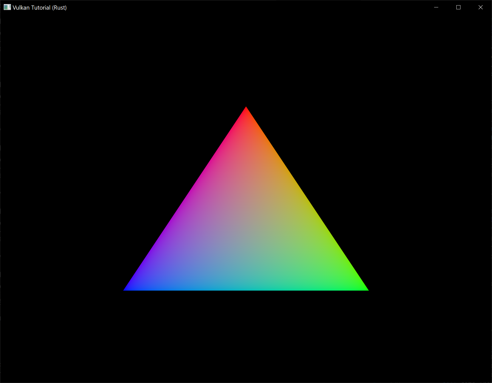
Try changing the color of the top vertex to white by modifying the VERTICES list:
static VERTICES: [Vertex; 3] = [
Vertex::new(vec2(0.0, -0.5), vec3(1.0, 1.0, 1.0)),
Vertex::new(vec2(0.5, 0.5), vec3(0.0, 1.0, 0.0)),
Vertex::new(vec2(-0.5, 0.5), vec3(0.0, 0.0, 1.0)),
];
Run the program again and you should see the following:
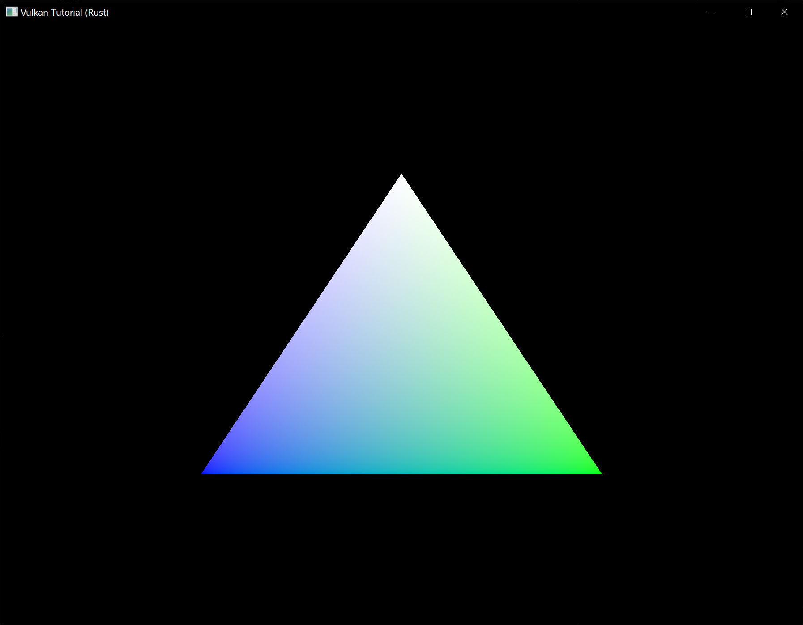
In the next chapter we'll look at a different way to copy vertex data to a vertex buffer that results in better performance, but takes some more work.
Staging buffer
Code: main.rs
The vertex buffer we have right now works correctly, but the memory type that allows us to access it from the CPU may not be the most optimal memory type for the graphics card itself to read from. The most optimal memory has the vk::MemoryPropertyFlags::DEVICE_LOCAL flag and is usually not accessible by the CPU on dedicated graphics cards. In this chapter we're going to create two vertex buffers. One staging buffer in CPU accessible memory to upload the data from the vertex array to, and the final vertex buffer in device local memory. We'll then use a buffer copy command to move the data from the staging buffer to the actual vertex buffer.
Transfer queue
The buffer copy command requires a queue family that supports transfer operations, which is indicated using vk::QueueFlags::TRANSFER. The good news is that any queue family with vk::QueueFlags::GRAPHICS or vk::QueueFlags::COMPUTE capabilities already implicitly support vk::QueueFlags::TRANSFER operations. The implementation is not required to explicitly list it in queue_flags in those cases.
If you like a challenge, then you can still try to use a different queue family specifically for transfer operations. It will require you to make the following modifications to your program:
- Modify
QueueFamilyIndicesandQueueFamilyIndices::getto explicitly look for a queue family with thevk::QueueFlags::TRANSFERbit, but not thevk::QueueFlags::GRAPHICS. - Modify
create_logical_deviceto request a handle to the transfer queue - Create a second command pool for command buffers that are submitted on the transfer queue family
- Change the
sharing_modeof resources to bevk::SharingMode::CONCURRENTand specify both the graphics and transfer queue families - Submit any transfer commands like
cmd_copy_buffer(which we'll be using in this chapter) to the transfer queue instead of the graphics queue
It's a bit of work, but it'll teach you a lot about how resources are shared between queue families.
Abstracting buffer creation
Because we're going to create multiple buffers in this chapter, it's a good idea to move buffer creation to a helper function. Create a new function create_buffer and move the code in create_vertex_buffer (except mapping) to it.
unsafe fn create_buffer(
instance: &Instance,
device: &Device,
data: &AppData,
size: vk::DeviceSize,
usage: vk::BufferUsageFlags,
properties: vk::MemoryPropertyFlags,
) -> Result<(vk::Buffer, vk::DeviceMemory)> {
let buffer_info = vk::BufferCreateInfo::builder()
.size(size)
.usage(usage)
.sharing_mode(vk::SharingMode::EXCLUSIVE);
let buffer = device.create_buffer(&buffer_info, None)?;
let requirements = device.get_buffer_memory_requirements(buffer);
let memory_info = vk::MemoryAllocateInfo::builder()
.allocation_size(requirements.size)
.memory_type_index(get_memory_type_index(
instance,
data,
properties,
requirements,
)?);
let buffer_memory = device.allocate_memory(&memory_info, None)?;
device.bind_buffer_memory(buffer, buffer_memory, 0)?;
Ok((buffer, buffer_memory))
}
Make sure to add parameters for the buffer size, usage and memory properties so that we can use this function to create many different types of buffers.
You can now remove the buffer creation and memory allocation code from create_vertex_buffer and just call create_buffer instead:
unsafe fn create_vertex_buffer(
instance: &Instance,
device: &Device,
data: &mut AppData,
) -> Result<()> {
let size = (size_of::<Vertex>() * VERTICES.len()) as u64;
let (vertex_buffer, vertex_buffer_memory) = create_buffer(
instance,
device,
data,
size,
vk::BufferUsageFlags::VERTEX_BUFFER,
vk::MemoryPropertyFlags::HOST_COHERENT | vk::MemoryPropertyFlags::HOST_VISIBLE,
)?;
data.vertex_buffer = vertex_buffer;
data.vertex_buffer_memory = vertex_buffer_memory;
let memory = device.map_memory(
vertex_buffer_memory,
0,
size,
vk::MemoryMapFlags::empty(),
)?;
memcpy(VERTICES.as_ptr(), memory.cast(), VERTICES.len());
device.unmap_memory(vertex_buffer_memory);
Ok(())
}
Run your program to make sure that the vertex buffer still works properly.
Using a staging buffer
We're now going to change create_vertex_buffer to only use a host visible buffer as temporary buffer and use a device local one as actual vertex buffer.
unsafe fn create_vertex_buffer(
instance: &Instance,
device: &Device,
data: &mut AppData,
) -> Result<()> {
let size = (size_of::<Vertex>() * VERTICES.len()) as u64;
let (staging_buffer, staging_buffer_memory) = create_buffer(
instance,
device,
data,
size,
vk::BufferUsageFlags::TRANSFER_SRC,
vk::MemoryPropertyFlags::HOST_COHERENT | vk::MemoryPropertyFlags::HOST_VISIBLE,
)?;
let memory = device.map_memory(
staging_buffer_memory,
0,
size,
vk::MemoryMapFlags::empty(),
)?;
memcpy(VERTICES.as_ptr(), memory.cast(), VERTICES.len());
device.unmap_memory(staging_buffer_memory);
let (vertex_buffer, vertex_buffer_memory) = create_buffer(
instance,
device,
data,
size,
vk::BufferUsageFlags::TRANSFER_DST | vk::BufferUsageFlags::VERTEX_BUFFER,
vk::MemoryPropertyFlags::DEVICE_LOCAL,
)?;
data.vertex_buffer = vertex_buffer;
data.vertex_buffer_memory = vertex_buffer_memory;
Ok(())
}
We're now using a new staging_buffer with staging_buffer_memory for mapping and copying the vertex data. In this chapter we're going to use two new buffer usage flags:
vk::BufferUsageFlags::TRANSFER_SRC– Buffer can be used as source in a memory transfer operation.vk::BufferUsageFlags::TRANSFER_DST– Buffer can be used as destination in a memory transfer operation.
The vertex_buffer is now allocated from a memory type that is device local, which generally means that we're not able to use map_memory. However, we can copy data from the staging_buffer to the vertex_buffer. We have to indicate that we intend to do that by specifying the transfer source flag for the staging_buffer and the transfer destination flag for the vertex_buffer, along with the vertex buffer usage flag.
We're now going to write a function to copy the contents from one buffer to another, called copy_buffer.
unsafe fn copy_buffer(
device: &Device,
data: &AppData,
source: vk::Buffer,
destination: vk::Buffer,
size: vk::DeviceSize,
) -> Result<()> {
Ok(())
}
Memory transfer operations are executed using command buffers, just like drawing commands. Therefore we must first allocate a temporary command buffer. You may wish to create a separate command pool for these kinds of short-lived buffers, because the implementation may be able to apply memory allocation optimizations. You should use the vk::CommandPoolCreateFlags::TRANSIENT flag during command pool generation in that case.
unsafe fn copy_buffer(
device: &Device,
data: &AppData,
source: vk::Buffer,
destination: vk::Buffer,
size: vk::DeviceSize,
) -> Result<()> {
let info = vk::CommandBufferAllocateInfo::builder()
.level(vk::CommandBufferLevel::PRIMARY)
.command_pool(data.command_pool)
.command_buffer_count(1);
let command_buffer = device.allocate_command_buffers(&info)?[0];
Ok(())
}
And immediately start recording the command buffer:
let info = vk::CommandBufferBeginInfo::builder()
.flags(vk::CommandBufferUsageFlags::ONE_TIME_SUBMIT);
device.begin_command_buffer(command_buffer, &info)?;
We're only going to use the command buffer once and wait with returning from the function until the copy operation has finished executing. It's good practice to tell the driver about our intent using vk::CommandBufferUsageFlags::ONE_TIME_SUBMIT.
let regions = vk::BufferCopy::builder().size(size);
device.cmd_copy_buffer(command_buffer, source, destination, &[regions]);
Contents of buffers are transferred using the cmd_copy_buffer command. It takes the source and destination buffers as arguments, and an array of regions to copy. The regions are defined in vk::BufferCopy structs and consist of a source buffer offset, destination buffer offset and size. It is not possible to specify vk::WHOLE_SIZE here, unlike the map_memory command.
device.end_command_buffer(command_buffer)?;
This command buffer only contains the copy command, so we can stop recording right after that. Now execute the command buffer to complete the transfer:
let command_buffers = &[command_buffer];
let info = vk::SubmitInfo::builder()
.command_buffers(command_buffers);
device.queue_submit(data.graphics_queue, &[info], vk::Fence::null())?;
device.queue_wait_idle(data.graphics_queue)?;
Unlike the draw commands, there are no events we need to wait on this time. We just want to execute the transfer on the buffers immediately. There are again two possible ways to wait on this transfer to complete. We could use a fence and wait with wait_for_fences, or simply wait for the transfer queue to become idle with queue_wait_idle. A fence would allow you to schedule multiple transfers simultaneously and wait for all of them complete, instead of executing one at a time. That may give the driver more opportunities to optimize.
device.free_command_buffers(data.command_pool, &[command_buffer]);
Don't forget to clean up the command buffer used for the transfer operation.
We can now call copy_buffer from the create_vertex_buffer function to move the vertex data to the device local buffer:
copy_buffer(device, data, staging_buffer, vertex_buffer, size)?;
After copying the data from the staging buffer to the device buffer, we should clean it up:
device.destroy_buffer(staging_buffer, None);
device.free_memory(staging_buffer_memory, None);
Run your program to verify that you're seeing the familiar triangle again. The improvement may not be visible right now, but its vertex data is now being loaded from high performance memory. This will matter when we're going to start rendering more complex geometry.
Conclusion
It should be noted that in a real world application, you're not supposed to actually call allocate_memory for every individual buffer. The maximum number of simultaneous memory allocations is limited by the max_memory_allocation_count physical device limit, which may be as low as 4096 even on high end hardware like an NVIDIA GTX 1080. The right way to allocate memory for a large number of objects at the same time is to create a custom allocator that splits up a single allocation among many different objects by using the offset parameters that we've seen in many functions.
However, for this tutorial it's okay to use a separate allocation for every resource, because we won't come close to hitting any of these limits for now.
Index buffer
Code: main.rs
The 3D meshes you'll be rendering in a real world application will often share vertices between multiple triangles. This already happens even with something simple like drawing a rectangle:

Drawing a rectangle takes two triangles, which means that we need a vertex buffer with 6 vertices. The problem is that the data of two vertices needs to be duplicated resulting in 50% redundancy. It only gets worse with more complex meshes, where vertices are reused in an average number of 3 triangles. The solution to this problem is to use an index buffer.
An index buffer is essentially an array of pointers into the vertex buffer. It allows you to reorder the vertex data, and reuse existing data for multiple vertices. The illustration above demonstrates what the index buffer would look like for the rectangle if we have a vertex buffer containing each of the four unique vertices. The first three indices define the upper-right triangle and the last three indices define the vertices for the bottom-left triangle.
Index buffer creation
In this chapter we're going to modify the vertex data and add index data to draw a rectangle like the one in the illustration. Modify the vertex data to represent the four corners:
static VERTICES: [Vertex; 4] = [
Vertex::new(vec2(-0.5, -0.5), vec3(1.0, 0.0, 0.0)),
Vertex::new(vec2(0.5, -0.5), vec3(0.0, 1.0, 0.0)),
Vertex::new(vec2(0.5, 0.5), vec3(0.0, 0.0, 1.0)),
Vertex::new(vec2(-0.5, 0.5), vec3(1.0, 1.0, 1.0)),
];
The top-left corner is red, top-right is green, bottom-right is blue and the bottom-left is white. We'll add a new array INDICES to represent the contents of the index buffer. It should match the indices in the illustration to draw the upper-right triangle and bottom-left triangle.
const INDICES: &[u16] = &[0, 1, 2, 2, 3, 0];
It is possible to use either u16 or u32 for your index buffer depending on the number of entries in VERTICES. We can stick to u16 for now because we're using less than 65,536 unique vertices.
Just like the vertex data, the indices need to be uploaded into a vk::Buffer for the GPU to be able to access them. Define two new AppData fields to hold the resources for the index buffer:
struct AppData {
// ...
vertex_buffer: vk::Buffer,
vertex_buffer_memory: vk::DeviceMemory,
index_buffer: vk::Buffer,
index_buffer_memory: vk::DeviceMemory,
}
The create_index_buffer function that we'll add now is almost identical to create_vertex_buffer:
impl App {
unsafe fn create(window: &Window) -> Result<Self> {
// ...
create_vertex_buffer(&instance, &device, &mut data)?;
create_index_buffer(&instance, &device, &mut data)?;
// ...
}
}
unsafe fn create_index_buffer(
instance: &Instance,
device: &Device,
data: &mut AppData,
) -> Result<()> {
let size = (size_of::<u16>() * INDICES.len()) as u64;
let (staging_buffer, staging_buffer_memory) = create_buffer(
instance,
device,
data,
size,
vk::BufferUsageFlags::TRANSFER_SRC,
vk::MemoryPropertyFlags::HOST_COHERENT | vk::MemoryPropertyFlags::HOST_VISIBLE,
)?;
let memory = device.map_memory(
staging_buffer_memory,
0,
size,
vk::MemoryMapFlags::empty(),
)?;
memcpy(INDICES.as_ptr(), memory.cast(), INDICES.len());
device.unmap_memory(staging_buffer_memory);
let (index_buffer, index_buffer_memory) = create_buffer(
instance,
device,
data,
size,
vk::BufferUsageFlags::TRANSFER_DST | vk::BufferUsageFlags::INDEX_BUFFER,
vk::MemoryPropertyFlags::DEVICE_LOCAL,
)?;
data.index_buffer = index_buffer;
data.index_buffer_memory = index_buffer_memory;
copy_buffer(device, data, staging_buffer, index_buffer, size)?;
device.destroy_buffer(staging_buffer, None);
device.free_memory(staging_buffer_memory, None);
Ok(())
}
There are only two notable differences. The size is now equal to the number of indices times the size of the index type, either u16 or u32. The usage of the index_buffer should be vk::BufferUsageFlags::INDEX_BUFFER instead of vk::BufferUsageFlags::VERTEX_BUFFER, which makes sense. Other than that, the process is exactly the same. We create a staging buffer to copy the contents of INDICES to and then copy it to the final device local index buffer.
The index buffer should be cleaned up at the end of the program, just like the vertex buffer:
unsafe fn destroy(&mut self) {
self.destroy_swapchain();
self.device.destroy_buffer(self.data.index_buffer, None);
self.device.free_memory(self.data.index_buffer_memory, None);
self.device.destroy_buffer(self.data.vertex_buffer, None);
self.device.free_memory(self.data.vertex_buffer_memory, None);
// ...
}
Using an index buffer
Using an index buffer for drawing involves two changes to create_command_buffers. We first need to bind the index buffer, just like we did for the vertex buffer. The difference is that you can only have a single index buffer. It's unfortunately not possible to use different indices for each vertex attribute, so we do still have to completely duplicate vertex data even if just one attribute varies.
device.cmd_bind_vertex_buffers(*command_buffer, 0, &[data.vertex_buffer], &[0]);
device.cmd_bind_index_buffer(*command_buffer, data.index_buffer, 0, vk::IndexType::UINT16);
An index buffer is bound with cmd_bind_index_buffer which has the index buffer, a byte offset into it, and the type of index data as parameters. As mentioned before, the possible types are vk::IndexType::UINT16 and vk::IndexType::UINT32.
Just binding an index buffer doesn't change anything yet, we also need to change the drawing command to tell Vulkan to use the index buffer. Remove the cmd_draw line and replace it with cmd_draw_indexed:
device.cmd_draw_indexed(*command_buffer, INDICES.len() as u32, 1, 0, 0, 0);
A call to this function is very similar to cmd_draw. The first two parameters after the command buffer specify the number of indices and the number of instances. We're not using instancing, so just specify 1 instance. The number of indices represents the number of vertices that will be passed to the vertex buffer. The next parameter specifies an offset into the index buffer, using a value of 1 would cause the graphics card to start reading at the second index. The second to last parameter specifies an offset to add to the indices in the index buffer. The final parameter specifies an offset for instancing, which we're not using.
Now run your program and you should see the following:
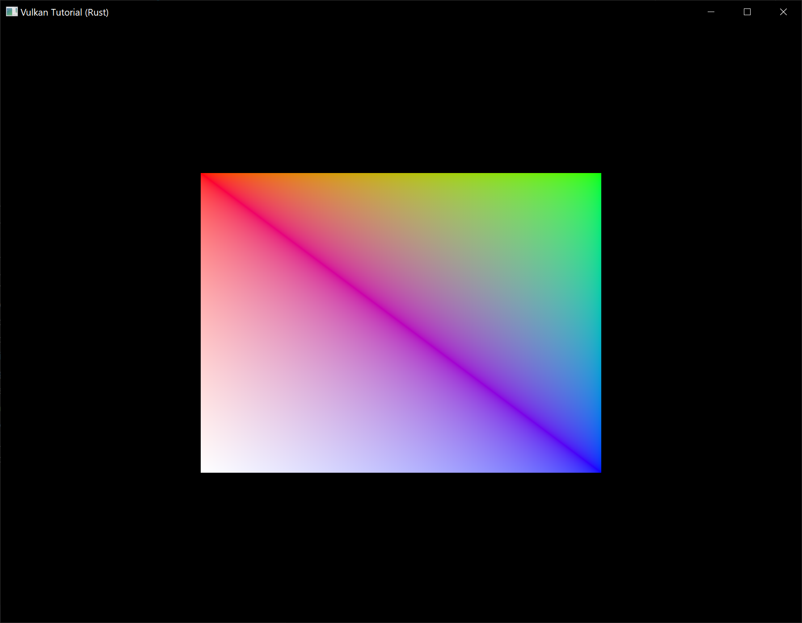
You now know how to save memory by reusing vertices with index buffers. This will become especially important in a future chapter where we're going to load complex 3D models.
The previous chapter already mentioned that you should allocate multiple resources like buffers from a single memory allocation, but in fact you should go a step further. Driver developers recommend that you also store multiple buffers, like the vertex and index buffer, into a single vk::Buffer and use offsets in commands like cmd_bind_vertex_buffers. The advantage is that your data is more cache friendly in that case, because it's closer together. It is even possible to reuse the same chunk of memory for multiple resources if they are not used during the same render operations, provided that their data is refreshed, of course. This is known as aliasing and some Vulkan functions have explicit flags to specify that you want to do this.
Descriptor layout and buffer
Code: main.rs | shader.vert | shader.frag
We're now able to pass arbitrary attributes to the vertex shader for each vertex, but what about global variables? We're going to move on to 3D graphics from this chapter on and that requires a model-view-projection matrix. We could include it as vertex data, but that's a waste of memory and it would require us to update the vertex buffer whenever the transformation changes. The transformation could easily change every single frame.
The right way to tackle this in Vulkan is to use resource descriptors. A descriptor is a way for shaders to freely access resources like buffers and images. We're going to set up a buffer that contains the transformation matrices and have the vertex shader access them through a descriptor. Usage of descriptors consists of three parts:
- Specify a descriptor layout during pipeline creation
- Allocate a descriptor set from a descriptor pool
- Bind the descriptor set during rendering
The descriptor layout specifies the types of resources that are going to be accessed by the pipeline, just like a render pass specifies the types of attachments that will be accessed. A descriptor set specifies the actual buffer or image resources that will be bound to the descriptors, just like a framebuffer specifies the actual image views to bind to render pass attachments. The descriptor set is then bound for the drawing commands just like the vertex buffers and framebuffer.
There are many types of descriptors, but in this chapter we'll work with uniform buffer objects (UBO). We'll look at other types of descriptors in future chapters, but the basic process is the same. Let's say we have the data we want the vertex shader to have in a struct like this:
#[repr(C)]
#[derive(Copy, Clone, Debug)]
struct UniformBufferObject {
model: Mat4,
view: Mat4,
proj: Mat4,
}
Then we can copy the data to a vk::Buffer and access it through a uniform buffer object descriptor from the vertex shader like this:
layout(binding = 0) uniform UniformBufferObject {
mat4 model;
mat4 view;
mat4 proj;
} ubo;
// ...
void main() {
gl_Position = ubo.proj * ubo.view * ubo.model * vec4(inPosition, 0.0, 1.0);
fragColor = inColor;
}
We're going to update the model, view and projection matrices every frame to make the rectangle from the previous chapter spin around in 3D.
Vertex shader
Modify the vertex shader to include the uniform buffer object like it was specified above. I will assume that you are familiar with MVP transformations. If you're not, see the resource mentioned in the first chapter.
#version 450
layout(binding = 0) uniform UniformBufferObject {
mat4 model;
mat4 view;
mat4 proj;
} ubo;
layout(location = 0) in vec2 inPosition;
layout(location = 1) in vec3 inColor;
layout(location = 0) out vec3 fragColor;
void main() {
gl_Position = ubo.proj * ubo.view * ubo.model * vec4(inPosition, 0.0, 1.0);
fragColor = inColor;
}
Note that the order of the uniform, in and out declarations doesn't matter. The binding directive is similar to the location directive for attributes. We're going to reference this binding in the descriptor layout. The line with gl_Position is changed to use the transformations to compute the final position in clip coordinates. Unlike the 2D triangles, the last component of the clip coordinates may not be 1, which will result in a division when converted to the final normalized device coordinates on the screen. This is used in perspective projection as the perspective division and is essential for making closer objects look larger than objects that are further away.
Descriptor set layout
The next step is to define the UBO on the Rust side and to tell Vulkan about this descriptor in the vertex shader. First we add a few more imports and a type alias:
use cgmath::{point3, Deg};
type Mat4 = cgmath::Matrix4<f32>;
Then create the UniformBufferObject struct:
#[repr(C)]
#[derive(Copy, Clone, Debug)]
struct UniformBufferObject {
model: Mat4,
view: Mat4,
proj: Mat4,
}
We can exactly match the definition in the shader using data types in the cgmath crate. The data in the matrices is binary compatible with the way the shader expects it, so we can later just copy a UniformBufferObject to a vk::Buffer.
We need to provide details about every descriptor binding used in the shaders for pipeline creation, just like we had to do for every vertex attribute and its location index. We'll set up a new function to define all of this information called create_descriptor_set_layout. It should be called right before pipeline creation, because we're going to need it there.
impl App {
unsafe fn create(window: &Window) -> Result<Self> {
// ...
create_descriptor_set_layout(&device, &mut data)?;
create_pipeline(&device, &mut data)?;
// ...
}
}
unsafe fn create_descriptor_set_layout(
device: &Device,
data: &mut AppData,
) -> Result<()> {
Ok(())
}
Every binding needs to be described through a vk::DescriptorSetLayoutBinding struct.
unsafe fn create_descriptor_set_layout(
device: &Device,
data: &mut AppData,
) -> Result<()> {
let ubo_binding = vk::DescriptorSetLayoutBinding::builder()
.binding(0)
.descriptor_type(vk::DescriptorType::UNIFORM_BUFFER)
.descriptor_count(1)
.stage_flags(vk::ShaderStageFlags::VERTEX);
Ok(())
}
The first two fields specify the binding used in the shader and the type of descriptor, which is a uniform buffer object. It is possible for the shader variable to represent an array of uniform buffer objects, and descriptor_count specifies the number of values in the array. This could be used to specify a transformation for each of the bones in a skeleton for skeletal animation, for example. Our MVP transformation is in a single uniform buffer object, so we're using a descriptor_count of 1.
We also need to specify in which shader stages the descriptor is going to be referenced. The stage_flags field can be a combination of vk::ShaderStageFlags values or the value vk::ShaderStageFlags::ALL_GRAPHICS. In our case, we're only referencing the descriptor from the vertex shader.
There is also an immutable_samplers field which is only relevant for image sampling related descriptors, which we'll look at later. You can leave this to its default value.
All of the descriptor bindings are combined into a single vk::DescriptorSetLayout object. Define a new AppData field above pipeline_layout:
struct AppData {
// ...
descriptor_set_layout: vk::DescriptorSetLayout,
pipeline_layout: vk::PipelineLayout,
// ...
}
We can then create it using create_descriptor_set_layout. This function accepts a simple vk::DescriptorSetLayoutCreateInfo with the array of bindings:
let bindings = &[ubo_binding];
let info = vk::DescriptorSetLayoutCreateInfo::builder()
.bindings(bindings);
data.descriptor_set_layout = device.create_descriptor_set_layout(&info, None)?;
We need to specify the descriptor set layout during pipeline creation to tell Vulkan which descriptors the shaders will be using. Descriptor set layouts are specified in the pipeline layout object. Modify the vk::PipelineLayoutCreateInfo to reference the layout object:
let set_layouts = &[data.descriptor_set_layout];
let layout_info = vk::PipelineLayoutCreateInfo::builder()
.set_layouts(set_layouts);
You may be wondering why it's possible to specify multiple descriptor set layouts here, because a single one already includes all of the bindings. We'll get back to that in the next chapter, where we'll look into descriptor pools and descriptor sets.
The descriptor layout should stick around while we may create new graphics pipelines i.e. until the program ends:
unsafe fn destroy(&mut self) {
self.destroy_swapchain();
self.device.destroy_descriptor_set_layout(self.data.descriptor_set_layout, None);
// ...
}
Uniform buffer
In the next chapter we'll specify the buffer that contains the UBO data for the shader, but we need to create this buffer first. We're going to copy new data to the uniform buffer every frame, so it doesn't really make any sense to have a staging buffer. It would just add extra overhead in this case and likely degrade performance instead of improving it.
We should have multiple buffers, because multiple frames may be in flight at the same time and we don't want to update the buffer in preparation of the next frame while a previous one is still reading from it! We could either have a uniform buffer per frame or per swapchain image. However, since we need to refer to the uniform buffer from the command buffer that we have per swapchain image, it makes the most sense to also have a uniform buffer per swapchain image.
To that end, add new AppData fields for uniform_buffers, and uniform_buffers_memory:
struct AppData {
// ...
index_buffer: vk::Buffer,
index_buffer_memory: vk::DeviceMemory,
uniform_buffers: Vec<vk::Buffer>,
uniform_buffers_memory: Vec<vk::DeviceMemory>,
// ...
}
Similarly, create a new function create_uniform_buffers that is called after create_index_buffer and allocates the buffers:
impl App {
unsafe fn create(window: &Window) -> Result<Self> {
// ...
create_vertex_buffer(&instance, &device, &mut data)?;
create_index_buffer(&instance, &device, &mut data)?;
create_uniform_buffers(&instance, &device, &mut data)?;
// ...
}
}
unsafe fn create_uniform_buffers(
instance: &Instance,
device: &Device,
data: &mut AppData,
) -> Result<()> {
data.uniform_buffers.clear();
data.uniform_buffers_memory.clear();
for _ in 0..data.swapchain_images.len() {
let (uniform_buffer, uniform_buffer_memory) = create_buffer(
instance,
device,
data,
size_of::<UniformBufferObject>() as u64,
vk::BufferUsageFlags::UNIFORM_BUFFER,
vk::MemoryPropertyFlags::HOST_COHERENT | vk::MemoryPropertyFlags::HOST_VISIBLE,
)?;
data.uniform_buffers.push(uniform_buffer);
data.uniform_buffers_memory.push(uniform_buffer_memory);
}
Ok(())
}
We're going to write a separate function that updates the uniform buffer with a new transformation every frame, so there will be no map_memory here. The uniform data will be used for all draw calls, so the buffer containing it should only be destroyed when we stop rendering. Since it also depends on the number of swapchain images, which could change after a recreation, we'll clean it up in destroy_swapchain:
unsafe fn destroy_swapchain(&mut self) {
self.data.uniform_buffers
.iter()
.for_each(|b| self.device.destroy_buffer(*b, None));
self.data.uniform_buffers_memory
.iter()
.for_each(|m| self.device.free_memory(*m, None));
// ...
}
This means that we also need to recreate it in recreate_swapchain:
unsafe fn recreate_swapchain(&mut self, window: &Window) -> Result<()> {
// ...
create_framebuffers(&self.device, &mut self.data)?;
create_uniform_buffers(&self.instance, &self.device, &mut self.data)?;
create_command_buffers(&self.device, &mut self.data)?;
Ok(())
}
Updating uniform data
Create a new method App::update_uniform_buffer and add a call to it from the App::render method right after we wait for the fence for the acquired swapchain image to be signalled:
impl App {
unsafe fn render(&mut self, window: &Window) -> Result<()> {
// ...
if !self.data.images_in_flight[image_index as usize].is_null() {
self.device.wait_for_fences(
&[self.data.images_in_flight[image_index as usize]],
true,
u64::MAX,
)?;
}
self.data.images_in_flight[image_index as usize] =
self.data.in_flight_fences[self.frame];
self.update_uniform_buffer(image_index)?;
// ...
}
unsafe fn update_uniform_buffer(&self, image_index: usize) -> Result<()> {
Ok(())
}
}
It is important that the uniform buffer is not updated until after this fence is signalled!
As a quick refresher on the usage of fences as introduced in the Rendering and Presentation chapter, we are using fences so that the GPU can notify the CPU once it is done processing a previously submitted frame. These notifications are used for two purposes: to prevent the CPU from submitting more frames when there are already MAX_FRAMES_IN_FLIGHT unfinished frames submitted to the GPU and also to ensure the CPU doesn't alter or delete resources like uniform buffers or command buffers while they are still being used by the GPU to process a frame.
Our uniform buffers are associated with our swapchain images, so we need to be sure that any previous frame that rendered to the acquired swapchain image is complete before we can safely update the uniform buffer. By only updating the uniform buffer after the GPU has notified the CPU that this is the case we can safely do whatever we want with the uniform buffer.
Going back to App::update_uniform_buffer, this method will generate a new transformation every frame to make the geometry spin around. We need to add an import to implement this functionality:
use std::time::Instant;
The Instant struct will allow us to do precise timekeeping. We'll use this to make sure that the geometry rotates 90 degrees per second regardless of frame rate. Add a field to App to track the time the application started and initialize the field to Instant::now() in App::create:
struct App {
// ...
start: Instant,
}
We can now use that field to determine how many seconds it has been since the application started:
unsafe fn update_uniform_buffer(&self, image_index: usize) -> Result<()> {
let time = self.start.elapsed().as_secs_f32();
Ok(())
}
We will now define the model, view and projection transformations in the uniform buffer object. The model rotation will be a simple rotation around the Z-axis using the time variable:
let model = Mat4::from_axis_angle(
vec3(0.0, 0.0, 1.0),
Deg(90.0) * time
);
The Mat4::from_axis_angle function creates a transformation matrix from the given rotation angle and rotation axis. Using a rotation angle of Deg(90.0) * time accomplishes the purpose of rotating 90 degrees per second.
let view = Mat4::look_at_rh(
point3(2.0, 2.0, 2.0),
point3(0.0, 0.0, 0.0),
vec3(0.0, 0.0, 1.0),
);
For the view transformation I've decided to look at the geometry from above at a 45 degree angle. The Mat4::look_at_rh function takes the eye position, center position and up axis as parameters. The rh at the end of this function indicates that it uses the "right-handed" coordinate system which is the coordinate system that Vulkan uses.
let mut proj = cgmath::perspective(
Deg(45.0),
self.data.swapchain_extent.width as f32 / self.data.swapchain_extent.height as f32,
0.1,
10.0,
);
I've chosen to use a perspective projection with a 45 degree vertical field-of-view. The other parameters are the aspect ratio, near and far view planes. It is important to use the current swapchain extent to calculate the aspect ratio to take into account the new width and height of the window after a resize.
proj[1][1] *= -1.0;
cgmath was originally designed for OpenGL, where the Y coordinate of the clip coordinates is inverted. The easiest way to compensate for that is to flip the sign on the scaling factor of the Y axis in the projection matrix. If you don't do this, then the image will be rendered upside down.
let ubo = UniformBufferObject { model, view, proj };
Lastly we combine our matrices into a uniform buffer object.
All of the transformations are defined now, so we can copy the data in the uniform buffer object to the current uniform buffer. This happens in exactly the same way as we did for vertex buffers, except without a staging buffer:
let memory = self.device.map_memory(
self.data.uniform_buffers_memory[image_index],
0,
size_of::<UniformBufferObject>() as u64,
vk::MemoryMapFlags::empty(),
)?;
memcpy(&ubo, memory.cast(), 1);
self.device.unmap_memory(self.data.uniform_buffers_memory[image_index]);
Using a UBO this way is not the most efficient way to pass frequently changing values to the shader. A more efficient way to pass a small buffer of data to shaders are push constants. We may look at these in a future chapter.
If you run the program now, you'll get errors about unbound descriptor sets from the validation layer and nothing will be rendered. In the next chapter we'll look at these descriptor sets, which will actually bind the vk::Buffers to the uniform buffer descriptors so that the shader can access this transformation data and get our program in running order again.
Descriptor pool and sets
Code: main.rs
The descriptor set layout from the previous chapter describes the type of descriptors that can be bound. In this chapter we're going to create a descriptor set for each vk::Buffer resource to bind it to the uniform buffer descriptor.
Descriptor pool
Descriptor sets can't be created directly, they must be allocated from a pool like command buffers. The equivalent for descriptor sets is unsurprisingly called a descriptor pool. We'll write a new function create_descriptor_pool to set it up.
impl App {
unsafe fn create(window: &Window) -> Result<Self> {
// ...
create_uniform_buffers(&instance, &device, &mut data)?;
create_descriptor_pool(&device, &mut data)?;
// ...
}
}
unsafe fn create_descriptor_pool(device: &Device, data: &mut AppData) -> Result<()> {
Ok(())
}
We first need to describe which descriptor types our descriptor sets are going to contain and how many of them, using vk::DescriptorPoolSize structures.
let ubo_size = vk::DescriptorPoolSize::builder()
.type_(vk::DescriptorType::UNIFORM_BUFFER)
.descriptor_count(data.swapchain_images.len() as u32);
We will allocate one of these descriptors for every frame. This pool size structure is referenced by the main vk::DescriptorPoolCreateInfo along with the maximum number of descriptor sets that may be allocated:
let pool_sizes = &[ubo_size];
let info = vk::DescriptorPoolCreateInfo::builder()
.pool_sizes(pool_sizes)
.max_sets(data.swapchain_images.len() as u32);
The structure has an optional flag similar to command pools that determines if individual descriptor sets can be freed or not: vk::DescriptorPoolCreateFlags::FREE_DESCRIPTOR_SET. We're not going to touch the descriptor set after creating it, so we don't need this flag.
struct AppData {
// ...
uniform_buffers: Vec<vk::Buffer>,
uniform_buffers_memory: Vec<vk::DeviceMemory>,
descriptor_pool: vk::DescriptorPool,
// ...
}
Add a new AppData field to store the handle of the descriptor pool so you can call create_descriptor_pool to create it.
data.descriptor_pool = device.create_descriptor_pool(&info, None)?;
The descriptor pool should be destroyed when the swapchain is recreated because it depends on the number of images:
unsafe fn destroy_swapchain(&mut self) {
self.device.destroy_descriptor_pool(self.data.descriptor_pool, None);
// ...
}
And recreated in App::recreate_swapchain:
unsafe fn recreate_swapchain(&mut self, window: &Window) -> Result<()> {
// ...
create_uniform_buffers(&self.instance, &self.device, &mut self.data)?;
create_descriptor_pool(&self.device, &mut self.data)?;
// ...
}
Descriptor set
We can now allocate the descriptor sets themselves. Add a create_descriptor_sets function for that purpose:
impl App {
unsafe fn create(window: &Window) -> Result<Self> {
// ...
create_descriptor_pool(&device, &mut data)?;
create_descriptor_sets(&device, &mut data)?;
// ...
}
unsafe fn recreate_swapchain(&mut self, window: &Window) -> Result<()> {
// ..
create_descriptor_pool(&self.device, &mut self.data)?;
create_descriptor_sets(&self.device, &mut self.data)?;
// ..
}
}
unsafe fn create_descriptor_sets(device: &Device, data: &mut AppData) -> Result<()> {
Ok(())
}
A descriptor set allocation is described with a vk::DescriptorSetAllocateInfo struct. You need to specify the descriptor pool to allocate from and an array of descriptor set layouts that describes each of the descriptor sets you are allocating:
let layouts = vec![data.descriptor_set_layout; data.swapchain_images.len()];
let info = vk::DescriptorSetAllocateInfo::builder()
.descriptor_pool(data.descriptor_pool)
.set_layouts(&layouts);
In our case we will create one descriptor set for each swapchain image, all with the same layout. Unfortunately we do need all the copies of the layout because the next function expects an array matching the number of sets.
Add an AppData field to hold the descriptor set handles:
struct AppData {
// ...
descriptor_pool: vk::DescriptorPool,
descriptor_sets: Vec<vk::DescriptorSet>,
// ...
}
And then allocate them with allocate_descriptor_sets:
data.descriptor_sets = device.allocate_descriptor_sets(&info)?;
You don't need to explicitly clean up descriptor sets, because they will be automatically freed when the descriptor pool is destroyed. The call to allocate_descriptor_sets will allocate descriptor sets, each with one uniform buffer descriptor.
The descriptor sets have been allocated now, but the descriptors within still need to be configured. We'll now add a loop to populate every descriptor:
for i in 0..data.swapchain_images.len() {
}
Descriptors that refer to buffers, like our uniform buffer descriptor, are configured with a vk::DescriptorBufferInfo struct. This structure specifies the buffer and the region within it that contains the data for the descriptor.
for i in 0..data.swapchain_images.len() {
let info = vk::DescriptorBufferInfo::builder()
.buffer(data.uniform_buffers[i])
.offset(0)
.range(size_of::<UniformBufferObject>() as u64);
}
If you're overwriting the whole buffer, like we are in this case, then it is is also possible to use the vk::WHOLE_SIZE value for the range. The configuration of descriptors is updated using the update_descriptor_sets function, which takes an array of vk::WriteDescriptorSet structs as parameter.
let buffer_info = &[info];
let ubo_write = vk::WriteDescriptorSet::builder()
.dst_set(data.descriptor_sets[i])
.dst_binding(0)
.dst_array_element(0)
// continued...
The first two fields specify the descriptor set to update and the binding. We gave our uniform buffer binding index 0. Remember that descriptors can be arrays, so we also need to specify the first index in the array that we want to update. We're not using an array, so the index is simply 0.
.descriptor_type(vk::DescriptorType::UNIFORM_BUFFER)
We need to specify the type of descriptor again. It's possible to update multiple descriptors at once in an array, starting at index dst_array_element.
.buffer_info(buffer_info);
The last field references an array with descriptor_count structs that actually configure the descriptors. It depends on the type of descriptor which one of the three you actually need to use. The buffer_info field is used for descriptors that refer to buffer data, image_info is used for descriptors that refer to image data, and texel_buffer_view is used for descriptors that refer to buffer views. Our descriptor is based on buffers, so we're using buffer_info.
device.update_descriptor_sets(&[ubo_write], &[] as &[vk::CopyDescriptorSet]);
The updates are applied using update_descriptor_sets. It accepts two kinds of arrays as parameters: an array of vk::WriteDescriptorSet and an array of vk::CopyDescriptorSet. The latter can be used to copy descriptors to each other, as its name implies.
Using descriptor sets
We now need to update the create_command_buffers function to actually bind the right descriptor set for each swapchain image to the descriptors in the shader with cmd_bind_descriptor_sets. This needs to be done before the cmd_draw_indexed call:
device.cmd_bind_descriptor_sets(
*command_buffer,
vk::PipelineBindPoint::GRAPHICS,
data.pipeline_layout,
0,
&[data.descriptor_sets[i]],
&[],
);
device.cmd_draw_indexed(*command_buffer, INDICES.len() as u32, 1, 0, 0, 0);
Unlike vertex and index buffers, descriptor sets are not unique to graphics pipelines. Therefore we need to specify if we want to bind descriptor sets to the graphics or compute pipeline. The next parameter is the layout that the descriptors are based on. The next two parameters specify the index of the first descriptor set and the array of sets to bind. We'll get back to this in a moment. The last parameter specifies an array of offsets that are used for dynamic descriptors. We'll look at these in a future chapter.
If you run your program now, then you'll notice that unfortunately nothing is visible. The problem is that because of the Y-flip we did in the projection matrix, the vertices are now being drawn in counter-clockwise order instead of clockwise order. This causes backface culling to kick in and prevents any geometry from being drawn. Go to the create_pipeline function and modify the front_face in vk::PipelineRasterizationStateCreateInfo to correct this:
.cull_mode(vk::CullModeFlags::BACK)
.front_face(vk::FrontFace::COUNTER_CLOCKWISE)
Run your program again and you should now see the following:
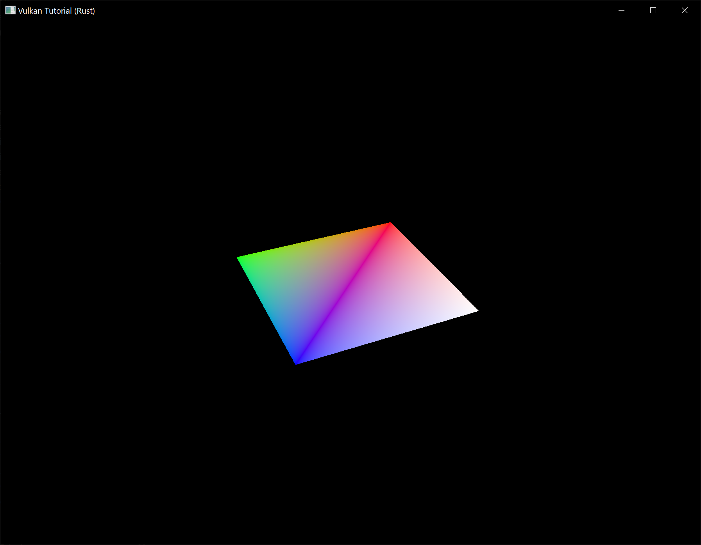
The rectangle has changed into a square because the projection matrix now corrects for aspect ratio. The App::update_uniform_buffer method takes care of screen resizing, so we don't need to recreate the descriptor set in App::recreate_swapchain.
Alignment requirements
One thing we've glossed over so far is how exactly the data in the Rust structure should match with the uniform definition in the shader. It seems obvious enough to simply use the same types in both:
#[repr(C)]
#[derive(Copy, Clone, Debug)]
struct UniformBufferObject {
model: Mat4,
view: Mat4,
proj: Mat4,
}
layout(binding = 0) uniform UniformBufferObject {
mat4 model;
mat4 view;
mat4 proj;
} ubo;
However, that's not all there is to it. For example, try modifying the struct and shader to look like this:
#[repr(C)]
#[derive(Copy, Clone, Debug)]
struct UniformBufferObject {
foo: Vec2,
model: Mat4,
view: Mat4,
proj: Mat4,
}
layout(binding = 0) uniform UniformBufferObject {
vec2 foo;
mat4 model;
mat4 view;
mat4 proj;
} ubo;
Recompile your shader and your program and run it and you'll find that the colorful square you worked so far has disappeared! That's because we haven't taken into account the alignment requirements.
Vulkan expects the data in your structure to be aligned in memory in a specific way, for example:
- Scalars have to be aligned by N (= 4 bytes given 32 bit floats).
- A
vec2must be aligned by 2N (= 8 bytes) - A
vec3orvec4must be aligned by 4N (= 16 bytes) - A nested structure must be aligned by the base alignment of its members rounded up to a multiple of 16.
- A
mat4matrix must have the same alignment as avec4.
You can find the full list of alignment requirements in the specification.
Our original shader with just three mat4 fields already met the alignment requirements. As each mat4 is 4 x 4 x 4 = 64 bytes in size, model has an offset of 0, view has an offset of 64 and proj has an offset of 128. All of these are multiples of 16 and that's why it worked fine.
The new structure starts with a vec2 which is only 8 bytes in size and therefore throws off all of the offsets. Now model has an offset of 8, view an offset of 72 and proj an offset of 136, none of which are multiples of 16. Unfortunately Rust does not have great support for controlling the alignment of fields in structs, but we can use some manual padding to fix the alignment issues:
#[repr(C)]
#[derive(Copy, Clone, Debug)]
struct UniformBufferObject {
foo: Vec2,
_padding: [u8; 8],
model: Mat4,
view: Mat4,
proj: Mat4,
}
If you now compile and run your program again you should see that the shader correctly receives its matrix values once again.
Multiple descriptor sets
As some of the structures and function calls hinted at, it is actually possible to bind multiple descriptor sets simultaneously. You need to specify a descriptor set layout for each descriptor set when creating the pipeline layout. Shaders can then reference specific descriptor sets like this:
layout(set = 0, binding = 0) uniform UniformBufferObject { ... }
You can use this feature to put descriptors that vary per-object and descriptors that are shared into separate descriptor sets. In that case you avoid rebinding most of the descriptors across draw calls which is potentially more efficient.
Images
Code: main.rs
The geometry has been colored using per-vertex colors so far, which is a rather limited approach. In this part of the tutorial we're going to implement texture mapping to make the geometry look more interesting. This will also allow us to load and draw basic 3D models in a future chapter.
Adding a texture to our application will involve the following steps:
- Create an image object backed by device memory
- Fill it with pixels from an image file
- Create an image sampler
- Add a combined image sampler descriptor to sample colors from the texture
We've already worked with image objects before, but those were automatically created by the swapchain extension. This time we'll have to create one by ourselves. Creating an image and filling it with data is similar to vertex buffer creation. We'll start by creating a staging resource and filling it with pixel data and then we copy this to the final image object that we'll use for rendering. Although it is possible to create a staging image for this purpose, Vulkan also allows you to copy pixels from a vk::Buffer to an image and the API for this is actually faster on some hardware. We'll first create this buffer and fill it with pixel values, and then we'll create an image to copy the pixels to. Creating an image is not very different from creating buffers. It involves querying the memory requirements, allocating device memory and binding it, just like we've seen before.
However, there is something extra that we'll have to take care of when working with images. Images can have different layouts that affect how the pixels are organized in memory. Due to the way graphics hardware works, simply storing the pixels row by row may not lead to the best performance, for example. When performing any operation on images, you must make sure that they have the layout that is optimal for use in that operation. We've actually already seen some of these layouts when we specified the render pass:
vk::ImageLayout::PRESENT_SRC_KHR– Optimal for presentationvk::ImageLayout::COLOR_ATTACHMENT_OPTIMAL– Optimal as attachment for writing colors from the fragment shadervk::ImageLayout::TRANSFER_SRC_OPTIMAL– Optimal as source in a transfer operation, likecmd_copy_image_to_buffervk::ImageLayout::TRANSFER_DST_OPTIMAL– Optimal as destination in a transfer operation, likecmd_copy_buffer_to_imagevk::ImageLayout::SHADER_READ_ONLY_OPTIMAL– Optimal for sampling from a shader
One of the most common ways to transition the layout of an image is a pipeline barrier. Pipeline barriers are primarily used for synchronizing access to resources, like making sure that an image was written to before it is read, but they can also be used to transition layouts. In this chapter we'll see how pipeline barriers are used for this purpose. Barriers can additionally be used to transfer queue family ownership when using vk::SharingMode::EXCLUSIVE.
Image library
There are many libraries available for loading images, and you can even write your own code to load simple formats like BMP and PPM. In this tutorial we'll be using the png crate which you should have already added to your program's dependencies.
Loading an image
We'll need to open the image file, so add the following import:
use std::fs::File;
Create a new function create_texture_image where we'll load an image and upload it into a Vulkan image object. We're going to use command buffers, so it should be called after create_command_pool.
impl App {
unsafe fn create(window: &Window) -> Result<Self> {
// ...
create_command_pool(&instance, &device, &mut data)?;
create_texture_image(&instance, &device, &mut data)?;
// ...
}
}
unsafe fn create_texture_image(
instance: &Instance,
device: &Device,
data: &mut AppData,
) -> Result<()> {
Ok(())
}
Create a new directory resources next to the shaders directory to store texture images in. We're going to load an image called texture.png from that directory. I've chosen to use the following CC0 licensed image resized to 512 x 512 pixels, but feel free to pick any PNG image (with an alpha channel) you want.
Loading an image with this library is really easy:
unsafe fn create_texture_image(
instance: &Instance,
device: &Device,
data: &mut AppData,
) -> Result<()> {
let image = File::open("resources/texture.png")?;
let decoder = png::Decoder::new(image);
let mut reader = decoder.read_info()?;
let mut pixels = vec![0; reader.info().raw_bytes()];
reader.next_frame(&mut pixels)?;
let size = reader.info().raw_bytes() as u64;
let (width, height) = reader.info().size();
Ok(())
}
This code will populate the pixels list with the pixels data with 4 bytes per pixel which will result in a total of width * height * 4 values. Note that the png crate does not have support for converting RGB images into RGBA images (at the time of writing) and the following code is expecting the pixel data to have an alpha channel. As a result you will need to make sure you use PNG images with alpha channels (such as the above image).
Staging buffer
We're now going to create a buffer in host visible memory so that we can use map_memory and copy the pixels to it. The buffer should be in host visible memory so that we can map it and it should be usable as a transfer source so that we can copy it to an image later on:
let (staging_buffer, staging_buffer_memory) = create_buffer(
instance,
device,
data,
size,
vk::BufferUsageFlags::TRANSFER_SRC,
vk::MemoryPropertyFlags::HOST_COHERENT | vk::MemoryPropertyFlags::HOST_VISIBLE,
)?;
We can then directly copy the pixel values that we got from the image loading library to the buffer:
let memory = device.map_memory(
staging_buffer_memory,
0,
size,
vk::MemoryMapFlags::empty(),
)?;
memcpy(pixels.as_ptr(), memory.cast(), pixels.len());
device.unmap_memory(staging_buffer_memory);
Texture Image
Although we could set up the shader to access the pixel values in the buffer, it's better to use image objects in Vulkan for this purpose. Image objects will make it easier and faster to retrieve colors by allowing us to use 2D coordinates, for one. Pixels within an image object are known as texels and we'll use that name from this point on. Add the following new AppData fields:
struct AppData {
// ...
texture_image: vk::Image,
texture_image_memory: vk::DeviceMemory,
}
The parameters for an image are specified in a vk::ImageCreateInfo struct:
let info = vk::ImageCreateInfo::builder()
.image_type(vk::ImageType::_2D)
.extent(vk::Extent3D { width, height, depth: 1 })
.mip_levels(1)
.array_layers(1)
// continued...
The image type, specified in the image_type field, tells Vulkan with what kind of coordinate system the texels in the image are going to be addressed. It is possible to create 1D, 2D and 3D images. One dimensional images can be used to store an array of data or gradient, two dimensional images are mainly used for textures, and three dimensional images can be used to store voxel volumes, for example. The extent field specifies the dimensions of the image, basically how many texels there are on each axis. That's why depth must be 1 instead of 0. Our texture will not be an array and we won't be using mipmapping for now.
.format(vk::Format::R8G8B8A8_SRGB)
Vulkan supports many possible image formats, but we should use the same format for the texels as the pixels in the buffer, otherwise the copy operation will fail.
.tiling(vk::ImageTiling::OPTIMAL)
The tiling field can have one of two values:
vk::ImageTiling::LINEAR– Texels are laid out in row-major order like ourpixelsarrayvk::ImageTiling::OPTIMAL– Texels are laid out in an implementation defined order for optimal access
Unlike the layout of an image, the tiling mode cannot be changed at a later time. If you want to be able to directly access texels in the memory of the image, then you must use vk::ImageTiling::LINEAR. We will be using a staging buffer instead of a staging image, so this won't be necessary. We will be using vk::ImageTiling::OPTIMAL for efficient access from the shader.
.initial_layout(vk::ImageLayout::UNDEFINED)
There are only two possible values for the initial_layout of an image:
vk::ImageLayout::UNDEFINED– Not usable by the GPU and the very first transition will discard the texels.vk::ImageLayout::PREINITIALIZED– Not usable by the GPU, but the first transition will preserve the texels.
There are few situations where it is necessary for the texels to be preserved during the first transition. One example, however, would be if you wanted to use an image as a staging image in combination with the vk::ImageTiling::LINEAR layout. In that case, you'd want to upload the texel data to it and then transition the image to be a transfer source without losing the data. In our case, however, we're first going to transition the image to be a transfer destination and then copy texel data to it from a buffer object, so we don't need this property and can safely use vk::ImageLayout::UNDEFINED.
.usage(vk::ImageUsageFlags::SAMPLED | vk::ImageUsageFlags::TRANSFER_DST)
The usage field has the same semantics as the one during buffer creation. The image is going to be used as destination for the buffer copy, so it should be set up as a transfer destination. We also want to be able to access the image from the shader to color our mesh, so the usage should include vk::ImageUsageFlags::SAMPLED.
.sharing_mode(vk::SharingMode::EXCLUSIVE)
The image will only be used by one queue family: the one that supports graphics (and therefore also) transfer operations.
.samples(vk::SampleCountFlags::_1)
The samples flag is related to multisampling. This is only relevant for images that will be used as attachments, so stick to one sample.
.flags(vk::ImageCreateFlags::empty()); // Optional.
There are also some optional flags for images that allow controlling more advanced properties for things like sparse images. Sparse images are images where only certain regions are actually backed by memory. If you were using a 3D texture for a voxel terrain, for example, then you could use this to avoid allocating memory to store large volumes of "air" values. We won't be using it in this tutorial, so you can omit the builder method for this field which will set it to the default (an empty set of flags).
data.texture_image = device.create_image(&info, None)?;
The image is created using create_image, which doesn't have any particularly noteworthy parameters. It is possible that the vk::Format::R8G8B8A8_SRGB format is not supported by the graphics hardware. You should have a list of acceptable alternatives and go with the best one that is supported. However, support for this particular format is so widespread that we'll skip this step. Using different formats would also require annoying conversions. We will get back to this in the depth buffer chapter, where we'll implement such a system.
let requirements = device.get_image_memory_requirements(data.texture_image);
let info = vk::MemoryAllocateInfo::builder()
.allocation_size(requirements.size)
.memory_type_index(get_memory_type_index(
instance,
data,
vk::MemoryPropertyFlags::DEVICE_LOCAL,
requirements,
)?);
data.texture_image_memory = device.allocate_memory(&info, None)?;
device.bind_image_memory(data.texture_image, data.texture_image_memory, 0)?;
Allocating memory for an image works in exactly the same way as allocating memory for a buffer. Use get_image_memory_requirements instead of get_buffer_memory_requirements, and use bind_image_memory instead of bind_buffer_memory.
This function is already getting quite large and there'll be a need to create more images in later chapters, so we should abstract image creation into a create_image function, like we did for buffers. Create the function and move the image object creation and memory allocation to it:
unsafe fn create_image(
instance: &Instance,
device: &Device,
data: &AppData,
width: u32,
height: u32,
format: vk::Format,
tiling: vk::ImageTiling,
usage: vk::ImageUsageFlags,
properties: vk::MemoryPropertyFlags,
) -> Result<(vk::Image, vk::DeviceMemory)> {
let info = vk::ImageCreateInfo::builder()
.image_type(vk::ImageType::_2D)
.extent(vk::Extent3D {
width,
height,
depth: 1,
})
.mip_levels(1)
.array_layers(1)
.format(format)
.tiling(tiling)
.initial_layout(vk::ImageLayout::UNDEFINED)
.usage(usage)
.samples(vk::SampleCountFlags::_1)
.sharing_mode(vk::SharingMode::EXCLUSIVE);
let image = device.create_image(&info, None)?;
let requirements = device.get_image_memory_requirements(image);
let info = vk::MemoryAllocateInfo::builder()
.allocation_size(requirements.size)
.memory_type_index(get_memory_type_index(
instance,
data,
properties,
requirements,
)?);
let image_memory = device.allocate_memory(&info, None)?;
device.bind_image_memory(image, image_memory, 0)?;
Ok((image, image_memory))
}
I've made the width, height, format, tiling mode, usage, and memory properties parameters, because these will all vary between the images we'll be creating throughout this tutorial.
The create_texture_image function can now be simplified to:
unsafe fn create_texture_image(
instance: &Instance,
device: &Device,
data: &mut AppData,
) -> Result<()> {
let image = File::open("resources/texture.png")?;
let decoder = png::Decoder::new(image);
let mut reader = decoder.read_info()?;
let mut pixels = vec![0; reader.info().raw_bytes()];
reader.next_frame(&mut pixels)?;
let size = reader.info().raw_bytes() as u64;
let (width, height) = reader.info().size();
let (staging_buffer, staging_buffer_memory) = create_buffer(
instance,
device,
data,
size,
vk::BufferUsageFlags::TRANSFER_SRC,
vk::MemoryPropertyFlags::HOST_COHERENT | vk::MemoryPropertyFlags::HOST_VISIBLE,
)?;
let memory = device.map_memory(
staging_buffer_memory,
0,
size,
vk::MemoryMapFlags::empty(),
)?;
memcpy(pixels.as_ptr(), memory.cast(), pixels.len());
device.unmap_memory(staging_buffer_memory);
let (texture_image, texture_image_memory) = create_image(
instance,
device,
data,
width,
height,
vk::Format::R8G8B8A8_SRGB,
vk::ImageTiling::OPTIMAL,
vk::ImageUsageFlags::SAMPLED | vk::ImageUsageFlags::TRANSFER_DST,
vk::MemoryPropertyFlags::DEVICE_LOCAL,
)?;
data.texture_image = texture_image;
data.texture_image_memory = texture_image_memory;
Ok(())
}
Layout transitions
The function we're going to write now involves recording and executing a command buffer again, so now's a good time to move that logic into a helper function or two:
unsafe fn begin_single_time_commands(
device: &Device,
data: &AppData,
) -> Result<vk::CommandBuffer> {
let info = vk::CommandBufferAllocateInfo::builder()
.level(vk::CommandBufferLevel::PRIMARY)
.command_pool(data.command_pool)
.command_buffer_count(1);
let command_buffer = device.allocate_command_buffers(&info)?[0];
let info = vk::CommandBufferBeginInfo::builder()
.flags(vk::CommandBufferUsageFlags::ONE_TIME_SUBMIT);
device.begin_command_buffer(command_buffer, &info)?;
Ok(command_buffer)
}
unsafe fn end_single_time_commands(
device: &Device,
data: &AppData,
command_buffer: vk::CommandBuffer,
) -> Result<()> {
device.end_command_buffer(command_buffer)?;
let command_buffers = &[command_buffer];
let info = vk::SubmitInfo::builder()
.command_buffers(command_buffers);
device.queue_submit(data.graphics_queue, &[info], vk::Fence::null())?;
device.queue_wait_idle(data.graphics_queue)?;
device.free_command_buffers(data.command_pool, &[command_buffer]);
Ok(())
}
The code for these functions is based on the existing code in copy_buffer. You can now simplify that function to:
unsafe fn copy_buffer(
device: &Device,
data: &AppData,
source: vk::Buffer,
destination: vk::Buffer,
size: vk::DeviceSize,
) -> Result<()> {
let command_buffer = begin_single_time_commands(device, data)?;
let regions = vk::BufferCopy::builder().size(size);
device.cmd_copy_buffer(command_buffer, source, destination, &[regions]);
end_single_time_commands(device, data, command_buffer)?;
Ok(())
}
If we were still using buffers, then we could now write a function to record and execute cmd_copy_buffer_to_image to finish the job, but this command requires the image to be in the right layout first. Create a new function to handle layout transitions:
unsafe fn transition_image_layout(
device: &Device,
data: &AppData,
image: vk::Image,
format: vk::Format,
old_layout: vk::ImageLayout,
new_layout: vk::ImageLayout,
) -> Result<()> {
let command_buffer = begin_single_time_commands(device, data)?;
end_single_time_commands(device, data, command_buffer)?;
Ok(())
}
One of the most common ways to perform layout transitions is using an image memory barrier. A pipeline barrier like that is generally used to synchronize access to resources, like ensuring that a write to a buffer completes before reading from it, but it can also be used to transition image layouts and transfer queue family ownership when vk::SharingMode::EXCLUSIVE is used. There is an equivalent buffer memory barrier to do this for buffers.
let barrier = vk::ImageMemoryBarrier::builder()
.old_layout(old_layout)
.new_layout(new_layout)
// continued...
The first two fields specify layout transition. It is possible to use vk::ImageLayout::UNDEFINED as old_layout if you don't care about the existing contents of the image.
.src_queue_family_index(vk::QUEUE_FAMILY_IGNORED)
.dst_queue_family_index(vk::QUEUE_FAMILY_IGNORED)
If you are using the barrier to transfer queue family ownership, then these two fields should be the indices of the queue families. They must be set to vk::QUEUE_FAMILY_IGNORED if you don't want to do this (not the default value!).
.image(image)
.subresource_range(subresource)
The image and subresource_range specify the image that is affected and the specific part of the image. We'll need to define subresource before our image memory barrier:
let subresource = vk::ImageSubresourceRange::builder()
.aspect_mask(vk::ImageAspectFlags::COLOR)
.base_mip_level(0)
.level_count(1)
.base_array_layer(0)
.layer_count(1);
Our image is not an array and does not have mipmapping levels, so only one level and layer are specified.
.src_access_mask(vk::AccessFlags::empty()) // TODO
.dst_access_mask(vk::AccessFlags::empty()); // TODO
Barriers are primarily used for synchronization purposes, so you must specify which types of operations that involve the resource must happen before the barrier, and which operations that involve the resource must wait on the barrier. We need to do that despite already using queue_wait_idle to manually synchronize. The right values depend on the old and new layout, so we'll get back to this once we've figured out which transitions we're going to use.
device.cmd_pipeline_barrier(
command_buffer,
vk::PipelineStageFlags::empty(), // TODO
vk::PipelineStageFlags::empty(), // TODO
vk::DependencyFlags::empty(),
&[] as &[vk::MemoryBarrier],
&[] as &[vk::BufferMemoryBarrier],
&[barrier],
);
All types of pipeline barriers are submitted using the same function. The first parameter after the command buffer specifies in which pipeline stage the operations occur that should happen before the barrier. The second parameter specifies the pipeline stage in which operations will wait on the barrier. The pipeline stages that you are allowed to specify before and after the barrier depend on how you use the resource before and after the barrier. The allowed values are listed in this table of the specification. For example, if you're going to read from a uniform after the barrier, you would specify a usage of vk::AccessFlags::UNIFORM_READ and the earliest shader that will read from the uniform as pipeline stage, for example vk::PipelineStageFlags::FRAGMENT_SHADER. It would not make sense to specify a non-shader pipeline stage for this type of usage and the validation layers will warn you when you specify a pipeline stage that does not match the type of usage.
The fourth parameter is either an empty set of vk::DependencyFlags or vk::DependencyFlags::BY_REGION. The latter turns the barrier into a per-region condition. That means that the implementation is allowed to already begin reading from the parts of a resource that were written so far, for example.
The last three parameters reference slices of pipeline barriers of the three available types: memory barriers, buffer memory barriers, and image memory barriers like the one we're using here. Note that we're not using the vk::Format parameter yet, but we'll be using that one for special transitions in the depth buffer chapter.
Copying buffer to image
Before we get back to create_texture_image, we're going to write one more helper function: copy_buffer_to_image:
unsafe fn copy_buffer_to_image(
device: &Device,
data: &AppData,
buffer: vk::Buffer,
image: vk::Image,
width: u32,
height: u32,
) -> Result<()> {
let command_buffer = begin_single_time_commands(device, data)?;
end_single_time_commands(device, data, command_buffer)?;
Ok(())
}
Just like with buffer copies, you need to specify which part of the buffer is going to be copied to which part of the image. This happens through vk::BufferImageCopy structs:
let subresource = vk::ImageSubresourceLayers::builder()
.aspect_mask(vk::ImageAspectFlags::COLOR)
.mip_level(0)
.base_array_layer(0)
.layer_count(1);
let region = vk::BufferImageCopy::builder()
.buffer_offset(0)
.buffer_row_length(0)
.buffer_image_height(0)
.image_subresource(subresource)
.image_offset(vk::Offset3D { x: 0, y: 0, z: 0 })
.image_extent(vk::Extent3D { width, height, depth: 1 });
Most of these fields are self-explanatory. The buffer_offset specifies the byte offset in the buffer at which the pixel values start. The buffer_row_length and buffer_image_height fields specify how the pixels are laid out in memory. For example, you could have some padding bytes between rows of the image. Specifying 0 for both indicates that the pixels are simply tightly packed like they are in our case. The image_subresource, image_offset and image_extent fields indicate to which part of the image we want to copy the pixels.
Buffer to image copy operations are enqueued using the cmd_copy_buffer_to_image function:
device.cmd_copy_buffer_to_image(
command_buffer,
buffer,
image,
vk::ImageLayout::TRANSFER_DST_OPTIMAL,
&[region],
);
The fourth parameter indicates which layout the image is currently using. I'm assuming here that the image has already been transitioned to the layout that is optimal for copying pixels to. Right now we're only copying one chunk of pixels to the whole image, but it's possible to specify an array of vk::BufferImageCopy to perform many different copies from this buffer to the image in one operation.
Preparing the texture image
We now have all of the tools we need to finish setting up the texture image, so we're going back to the create_texture_image function. The last thing we did there was creating the texture image. The next step is to copy the staging buffer to the texture image. This involves two steps:
- Transition the texture image to
vk::ImageLayout::TRANSFER_DST_OPTIMAL - Execute the buffer to image copy operation
This is easy to do with the functions we just created:
transition_image_layout(
device,
data,
data.texture_image,
vk::Format::R8G8B8A8_SRGB,
vk::ImageLayout::UNDEFINED,
vk::ImageLayout::TRANSFER_DST_OPTIMAL,
)?;
copy_buffer_to_image(
device,
data,
staging_buffer,
data.texture_image,
width,
height,
)?;
The image was created with the vk::ImageLayout::UNDEFINED layout, so that one should be specified as old layout when transitioning texture_image. Remember that we can do this because we don't care about its contents before performing the copy operation.
To be able to start sampling from the texture image in the shader, we need one last transition to prepare it for shader access:
transition_image_layout(
device,
data,
data.texture_image,
vk::Format::R8G8B8A8_SRGB,
vk::ImageLayout::TRANSFER_DST_OPTIMAL,
vk::ImageLayout::SHADER_READ_ONLY_OPTIMAL,
)?;
Transition barrier masks
If you run your application with validation layers enabled now, then you'll see that it complains about the access masks and pipeline stages in transition_image_layout being invalid. We still need to set those based on the layouts in the transition.
There are two transitions we need to handle:
- Undefined → transfer destination – transfer writes that don't need to wait on anything
- Transfer destination → shader reading – shader reads should wait on transfer writes, specifically the shader reads in the fragment shader, because that's where we're going to use the texture
These rules are specified using the following access masks and pipeline stages which should be added at the beginning of transition_image_layout:
let (
src_access_mask,
dst_access_mask,
src_stage_mask,
dst_stage_mask,
) = match (old_layout, new_layout) {
(vk::ImageLayout::UNDEFINED, vk::ImageLayout::TRANSFER_DST_OPTIMAL) => (
vk::AccessFlags::empty(),
vk::AccessFlags::TRANSFER_WRITE,
vk::PipelineStageFlags::TOP_OF_PIPE,
vk::PipelineStageFlags::TRANSFER,
),
(vk::ImageLayout::TRANSFER_DST_OPTIMAL, vk::ImageLayout::SHADER_READ_ONLY_OPTIMAL) => (
vk::AccessFlags::TRANSFER_WRITE,
vk::AccessFlags::SHADER_READ,
vk::PipelineStageFlags::TRANSFER,
vk::PipelineStageFlags::FRAGMENT_SHADER,
),
_ => return Err(anyhow!("Unsupported image layout transition!")),
};
Then update the vk::ImageMemoryBarrier struct and the cmd_pipeline_barrier call with the access flags and pipeline stage masks:
let barrier = vk::ImageMemoryBarrier::builder()
.old_layout(old_layout)
.new_layout(new_layout)
.src_queue_family_index(vk::QUEUE_FAMILY_IGNORED)
.dst_queue_family_index(vk::QUEUE_FAMILY_IGNORED)
.image(image)
.subresource_range(subresource)
.src_access_mask(src_access_mask)
.dst_access_mask(dst_access_mask);
device.cmd_pipeline_barrier(
command_buffer,
src_stage_mask,
dst_stage_mask,
vk::DependencyFlags::empty(),
&[] as &[vk::MemoryBarrier],
&[] as &[vk::BufferMemoryBarrier],
&[barrier],
);
As you can see in the aforementioned table, transfer writes must occur in the pipeline transfer stage. Since the writes don't have to wait on anything, you may specify an empty access mask and the earliest possible pipeline stage vk::PipelineStageFlags::TOP_OF_PIPE for the pre-barrier operations. It should be noted that vk::PipelineStageFlags::TRANSFER is not a real stage within the graphics and compute pipelines. It is more of a pseudo-stage where transfers happen. See the documentation for more information and other examples of pseudo-stages.
The image will be written in the same pipeline stage and subsequently read by the fragment shader, which is why we specify shader reading access in the fragment shader pipeline stage.
If we need to do more transitions in the future, then we'll extend the function. The application should now run successfully, although there are of course no visual changes yet.
One thing to note is that command buffer submission results in implicit vk::AccessFlags::HOST_WRITE synchronization at the beginning. Since the transition_image_layout function executes a command buffer with only a single command, you could use this implicit synchronization and set src_access_mask to vk::AccessFlags::empty() if you ever needed a vk::AccessFlags::HOST_WRITE dependency in a layout transition. It's up to you if you want to be explicit about it or not, but I'm personally not a fan of relying on these OpenGL-like "hidden" operations.
There is actually a special type of image layout that supports all operations, vk::ImageLayout::GENERAL. The problem with it, of course, is that it doesn't necessarily offer the best performance for any operation. It is required for some special cases, like using an image as both input and output, or for reading an image after it has left the preinitialized layout.
All of the helper functions that submit commands so far have been set up to execute synchronously by waiting for the queue to become idle. For practical applications it is recommended to combine these operations in a single command buffer and execute them asynchronously for higher throughput, especially the transitions and copy in the create_texture_image function. Try to experiment with this by creating a setup_command_buffer that the helper functions record commands into, and add a flush_setup_commands to execute the commands that have been recorded so far. It's best to do this after the texture mapping works to check if the texture resources are still set up correctly.
Cleanup
Finish the create_texture_image function by cleaning up the staging buffer and its memory at the end:
device.destroy_buffer(staging_buffer, None);
device.free_memory(staging_buffer_memory, None);
The main texture image is used until the end of the program:
unsafe fn destroy(&mut self) {
self.destroy_swapchain();
self.device.destroy_image(self.data.texture_image, None);
self.device.free_memory(self.data.texture_image_memory, None);
// ...
}
The image now contains the texture, but we still need a way to access it from the graphics pipeline. We'll work on that in the next chapter.
Image view and sampler
Code: main.rs
In this chapter we're going to create two more resources that are needed for the graphics pipeline to sample an image. The first resource is one that we've already seen before while working with the swapchain images, but the second one is new - it relates to how the shader will read texels from the image.
Texture image view
We've seen before, with the swapchain images and the framebuffer, that images are accessed through image views rather than directly. We will also need to create such an image view for the texture image.
Add an AppData field to hold a vk::ImageView for the texture image and create a new function create_texture_image_view where we'll create it:
impl App {
unsafe fn create(window: &Window) -> Result<Self> {
// ...
create_texture_image(&instance, &device, &mut data)?;
create_texture_image_view(&device, &mut data)?;
// ...
}
}
struct AppData {
// ...
texture_image: vk::Image,
texture_image_memory: vk::DeviceMemory,
texture_image_view: vk::ImageView,
// ...
}
unsafe fn create_texture_image_view(device: &Device, data: &mut AppData) -> Result<()> {
Ok(())
}
The code for this function can be based directly on create_swapchain_image_views. The only two changes you have to make are the format and the image:
let subresource_range = vk::ImageSubresourceRange::builder()
.aspect_mask(vk::ImageAspectFlags::COLOR)
.base_mip_level(0)
.level_count(1)
.base_array_layer(0)
.layer_count(1);
let info = vk::ImageViewCreateInfo::builder()
.image(data.texture_image)
.view_type(vk::ImageViewType::_2D)
.format(vk::Format::R8G8B8A8_SRGB)
.subresource_range(subresource_range);
I've left out the explicit components initialization, because vk::ComponentSwizzle::IDENTITY is defined as 0 anyway. Finish creating the image view by calling create_image_view:
data.texture_image_view = device.create_image_view(&info, None)?;
Because so much of the logic is duplicated from create_swapchain_image_views, you may wish to abstract it into a new create_image_view function:
unsafe fn create_image_view(
device: &Device,
image: vk::Image,
format: vk::Format,
) -> Result<vk::ImageView> {
let subresource_range = vk::ImageSubresourceRange::builder()
.aspect_mask(vk::ImageAspectFlags::COLOR)
.base_mip_level(0)
.level_count(1)
.base_array_layer(0)
.layer_count(1);
let info = vk::ImageViewCreateInfo::builder()
.image(image)
.view_type(vk::ImageViewType::_2D)
.format(format)
.subresource_range(subresource_range);
Ok(device.create_image_view(&info, None)?)
}
The create_texture_image_view function can now be simplified to:
unsafe fn create_texture_image_view(device: &Device, data: &mut AppData) -> Result<()> {
data.texture_image_view = create_image_view(
device,
data.texture_image,
vk::Format::R8G8B8A8_SRGB,
)?;
Ok(())
}
And create_swapchain_image_views can be simplified to:
unsafe fn create_swapchain_image_views(device: &Device, data: &mut AppData) -> Result<()> {
data.swapchain_image_views = data
.swapchain_images
.iter()
.map(|i| create_image_view(device, *i, data.swapchain_format))
.collect::<Result<Vec<_>, _>>()?;
Ok(())
}
Make sure to destroy the image view at the end of the program, right before destroying the image itself:
unsafe fn destroy(&mut self) {
self.destroy_swapchain();
self.device.destroy_image_view(self.data.texture_image_view, None);
// ...
}
Samplers
It is possible for shaders to read texels directly from images, but that is not very common when they are used as textures. Textures are usually accessed through samplers, which will apply filtering and transformations to compute the final color that is retrieved.
These filters are helpful to deal with problems like oversampling. Consider a texture that is mapped to geometry with more fragments than texels. If you simply took the closest texel for the texture coordinate in each fragment, then you would get a result like the first image:

If you combined the 4 closest texels through linear interpolation, then you would get a smoother result like the one on the right. Of course your application may have art style requirements that fit the left style more (think Minecraft), but the right is preferred in conventional graphics applications. A sampler object automatically applies this filtering for you when reading a color from the texture.
Undersampling is the opposite problem, where you have more texels than fragments. This will lead to artifacts when sampling high frequency patterns like a checkerboard texture at a sharp angle:
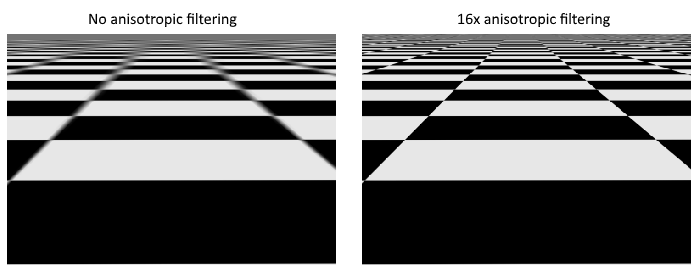
As shown in the left image, the texture turns into a blurry mess in the distance. The solution to this is anisotropic filtering, which can also be applied automatically by a sampler.
Aside from these filters, a sampler can also take care of transformations. It determines what happens when you try to read texels outside the image through its addressing mode. The image below displays some of the possibilities:

We will now create a function create_texture_sampler to set up such a sampler object. We'll be using that sampler to read colors from the texture in the shader later on.
impl App {
unsafe fn create(window: &Window) -> Result<Self> {
// ...
create_texture_image(&instance, &device, &mut data)?;
create_texture_image_view(&device, &mut data)?;
create_texture_sampler(&device, &mut data)?;
// ...
}
}
unsafe fn create_texture_sampler(device: &Device, data: &mut AppData) -> Result<()> {
Ok(())
}
Samplers are configured through a vk::SamplerCreateInfo structure, which specifies all filters and transformations that it should apply.
let info = vk::SamplerCreateInfo::builder()
.mag_filter(vk::Filter::LINEAR)
.min_filter(vk::Filter::LINEAR)
// continued...
The mag_filter and min_filter fields specify how to interpolate texels that are magnified or minified. Magnification concerns the oversampling problem describes above, and minification concerns undersampling. The choices are vk::Filter::NEAREST and vk::Filter::LINEAR, corresponding to the modes demonstrated in the images above.
.address_mode_u(vk::SamplerAddressMode::REPEAT)
.address_mode_v(vk::SamplerAddressMode::REPEAT)
.address_mode_w(vk::SamplerAddressMode::REPEAT)
The addressing mode can be specified per axis using the address_mode fields. The available values are listed below. Most of these are demonstrated in the image above. Note that the axes are called U, V and W instead of X, Y and Z. This is a convention for texture space coordinates.
vk::SamplerAddressMode::REPEAT– Repeat the texture when going beyond the image dimensions.vk::SamplerAddressMode::MIRRORED_REPEAT– Like repeat, but inverts the coordinates to mirror the image when going beyond the dimensions.vk::SamplerAddressMode::CLAMP_TO_EDGE– Take the color of the edge closest to the coordinate beyond the image dimensions.vk::SamplerAddressMode::MIRROR_CLAMP_TO_EDGE– Like clamp to edge, but instead uses the edge opposite to the closest edge.vk::SamplerAddressMode::CLAMP_TO_BORDER– Return a solid color when sampling beyond the dimensions of the image.
It doesn't really matter which addressing mode we use here, because we're not going to sample outside of the image in this tutorial. However, the repeat mode is probably the most common mode, because it can be used to tile textures like floors and walls.
.anisotropy_enable(true)
.max_anisotropy(16.0)
These two fields specify if anisotropic filtering should be used. There is no reason not to use this unless performance is a concern. The max_anisotropy field limits the amount of texel samples that can be used to calculate the final color. A lower value results in better performance, but lower quality results. There is no graphics hardware available today that will use more than 16 samples, because the difference is negligible beyond that point.
.border_color(vk::BorderColor::INT_OPAQUE_BLACK)
The border_color field specifies which color is returned when sampling beyond the image with clamp to border addressing mode. It is possible to return black, white or transparent in either float or int formats. You cannot specify an arbitrary color.
.unnormalized_coordinates(false)
The unnormalized_coordinates field specifies which coordinate system you want to use to address texels in an image. If this field is true, then you can simply use coordinates within the [0, width) and [0, height) range. If it is false, then the texels are addressed using the [0, 1) range on all axes. Real-world applications almost always use normalized coordinates, because then it's possible to use textures of varying resolutions with the exact same coordinates.
.compare_enable(false)
.compare_op(vk::CompareOp::ALWAYS)
If a comparison function is enabled, then texels will first be compared to a value, and the result of that comparison is used in filtering operations. This is mainly used for percentage-closer filtering on shadow maps. We'll look at this in a future chapter.
.mipmap_mode(vk::SamplerMipmapMode::LINEAR)
.mip_lod_bias(0.0)
.min_lod(0.0)
.max_lod(0.0);
All of these fields apply to mipmapping. We will look at mipmapping in a later chapter, but basically it's another type of filter that can be applied.
The functioning of the sampler is now fully defined. Add an AppData field to hold the handle of the sampler object:
struct AppData {
// ...
texture_image_view: vk::ImageView,
texture_sampler: vk::Sampler,
// ...
}
Then create the sampler with create_sampler:
data.texture_sampler = device.create_sampler(&info, None)?;
Note the sampler does not reference a vk::Image anywhere. The sampler is a distinct object that provides an interface to extract colors from a texture. It can be applied to any image you want, whether it is 1D, 2D or 3D. This is different from many older APIs, which combined texture images and filtering into a single state.
Destroy the sampler at the end of the program when we'll no longer be accessing the image:
unsafe fn destroy(&mut self) {
self.destroy_swapchain();
self.device.destroy_sampler(self.data.texture_sampler, None);
// ...
}
Anisotropy device feature
If you run your program right now, you'll see a validation layer message like this:
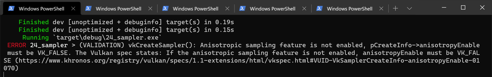
That's because anisotropic filtering is actually an optional device feature. We need to update the create_logical_device function to request it:
let features = vk::PhysicalDeviceFeatures::builder()
.sampler_anisotropy(true);
And even though it is very unlikely that a modern graphics card will not support it, we should update check_physical_device to check if it is available:
unsafe fn check_physical_device(
instance: &Instance,
data: &AppData,
physical_device: vk::PhysicalDevice,
) -> Result<()> {
// ...
let features = instance.get_physical_device_features(physical_device);
if features.sampler_anisotropy != vk::TRUE {
return Err(anyhow!(SuitabilityError("No sampler anisotropy.")));
}
Ok(())
}
The get_physical_device_features repurposes the vk::PhysicalDeviceFeatures struct to indicate which features are supported rather than requested by setting the boolean values.
Instead of enforcing the availability of anisotropic filtering, it's also possible to simply not use it by conditionally setting:
.anisotropy_enable(false)
.max_anisotropy(1.0)
In the next chapter we will expose the image and sampler objects to the shaders to draw the texture onto the square.
Combined image sampler
Code: main.rs | shader.vert | shader.frag
We looked at descriptors for the first time in the uniform buffers part of the tutorial. In this chapter we will look at a new type of descriptor: combined image sampler. This descriptor makes it possible for shaders to access an image resource through a sampler object like the one we created in the previous chapter.
We'll start by modifying the descriptor set layout, descriptor pool and descriptor set to include such a combined image sampler descriptor. After that, we're going to add texture coordinates to Vertex and modify the fragment shader to read colors from the texture instead of just interpolating the vertex colors.
Updating the descriptors
Browse to the create_descriptor_set_layout function and add a vk::DescriptorSetLayoutBinding for a combined image sampler descriptor. We'll simply put it in the binding after the uniform buffer:
let sampler_binding = vk::DescriptorSetLayoutBinding::builder()
.binding(1)
.descriptor_type(vk::DescriptorType::COMBINED_IMAGE_SAMPLER)
.descriptor_count(1)
.stage_flags(vk::ShaderStageFlags::FRAGMENT);
let bindings = &[ubo_binding, sampler_binding];
let info = vk::DescriptorSetLayoutCreateInfo::builder()
.bindings(bindings);
Make sure to set the stage_flags to indicate that we intend to use the combined image sampler descriptor in the fragment shader. That's where the color of the fragment is going to be determined. It is possible to use texture sampling in the vertex shader, for example to dynamically deform a grid of vertices by a heightmap.
We must also create a larger descriptor pool to make room for the allocation of the combined image sampler by adding another vk::DescriptorPoolSize of type vk::DescriptorType::COMBINED_IMAGE_SAMPLER to the vk::DescriptorPoolCreateInfo. Go to the create_descriptor_pool function and modify it to include a vk::DescriptorPoolSize for this descriptor:
let sampler_size = vk::DescriptorPoolSize::builder()
.type_(vk::DescriptorType::COMBINED_IMAGE_SAMPLER)
.descriptor_count(data.swapchain_images.len() as u32);
let pool_sizes = &[ubo_size, sampler_size];
let info = vk::DescriptorPoolCreateInfo::builder()
.pool_sizes(pool_sizes)
.max_sets(data.swapchain_images.len() as u32);
Inadequate descriptor pools are a good example of a problem that the validation layers will not catch: As of Vulkan 1.1, allocate_descriptor_sets may fail with the error code vk::ErrorCode::OUT_OF_POOL_MEMORY if the pool is not sufficiently large, but the driver may also try to solve the problem internally. This means that sometimes (depending on hardware, pool size and allocation size) the driver will let us get away with an allocation that exceeds the limits of our descriptor pool. Other times, allocate_descriptor_sets will fail and return vk::ErrorCode::OUT_OF_POOL_MEMORY. This can be particularly frustrating if the allocation succeeds on some machines, but fails on others.
Since Vulkan shifts the responsiblity for the allocation to the driver, it is no longer a strict requirement to only allocate as many descriptors of a certain type (vk::DescriptorType::COMBINED_IMAGE_SAMPLER, etc.) as specified by the corresponding descriptor_count members for the creation of the descriptor pool. However, it remains best practise to do so, and in the future, VK_LAYER_KHRONOS_validation will warn about this type of problem if you enable Best Practice Validation.
The final step is to bind the actual image and sampler resources to the descriptors in the descriptor set. Go to the create_descriptor_sets function. The resources for a combined image sampler structure must be specified in a vk::DescriptorImageInfo struct, just like the buffer resource for a uniform buffer descriptor is specified in a vk::DescriptorBufferInfo struct. This is where the objects from the previous chapter come together.
let info = vk::DescriptorImageInfo::builder()
.image_layout(vk::ImageLayout::SHADER_READ_ONLY_OPTIMAL)
.image_view(data.texture_image_view)
.sampler(data.texture_sampler);
let image_info = &[info];
let sampler_write = vk::WriteDescriptorSet::builder()
.dst_set(data.descriptor_sets[i])
.dst_binding(1)
.dst_array_element(0)
.descriptor_type(vk::DescriptorType::COMBINED_IMAGE_SAMPLER)
.image_info(image_info);
device.update_descriptor_sets(
&[ubo_write, sampler_write],
&[] as &[vk::CopyDescriptorSet],
);
The descriptors must be updated with this image info, just like the buffer. This time we're using the image_info array instead of buffer_info. The descriptors are now ready to be used by the shaders!
Texture coordinates
There is one important ingredient for texture mapping that is still missing, and that's the actual coordinates for each vertex. The coordinates determine how the image is actually mapped to the geometry.
#[repr(C)]
#[derive(Copy, Clone, Debug)]
struct Vertex {
pos: Vec2,
color: Vec3,
tex_coord: Vec2,
}
impl Vertex {
const fn new(pos: Vec2, color: Vec3, tex_coord: Vec2) -> Self {
Self { pos, color, tex_coord }
}
fn binding_description() -> vk::VertexInputBindingDescription {
vk::VertexInputBindingDescription::builder()
.binding(0)
.stride(size_of::<Vertex>() as u32)
.input_rate(vk::VertexInputRate::VERTEX)
.build()
}
fn attribute_descriptions() -> [vk::VertexInputAttributeDescription; 3] {
let pos = vk::VertexInputAttributeDescription::builder()
.binding(0)
.location(0)
.format(vk::Format::R32G32_SFLOAT)
.offset(0)
.build();
let color = vk::VertexInputAttributeDescription::builder()
.binding(0)
.location(1)
.format(vk::Format::R32G32B32_SFLOAT)
.offset(size_of::<Vec2>() as u32)
.build();
let tex_coord = vk::VertexInputAttributeDescription::builder()
.binding(0)
.location(2)
.format(vk::Format::R32G32_SFLOAT)
.offset((size_of::<Vec2>() + size_of::<Vec3>()) as u32)
.build();
[pos, color, tex_coord]
}
}
Modify the Vertex struct to include a Vec2 for texture coordinates. Make sure to also add a vk::VertexInputAttributeDescription so that we can use access texture coordinates as input in the vertex shader. That is necessary to be able to pass them to the fragment shader for interpolation across the surface of the square.
static VERTICES: [Vertex; 4] = [
Vertex::new(vec2(-0.5, -0.5), vec3(1.0, 0.0, 0.0), vec2(1.0, 0.0)),
Vertex::new(vec2(0.5, -0.5), vec3(0.0, 1.0, 0.0), vec2(0.0, 0.0)),
Vertex::new(vec2(0.5, 0.5), vec3(0.0, 0.0, 1.0), vec2(0.0, 1.0)),
Vertex::new(vec2(-0.5, 0.5), vec3(1.0, 1.0, 1.0), vec2(1.0, 1.0)),
];
In this tutorial, I will simply fill the square with the texture by using coordinates from 0, 0 in the top-left corner to 1, 1 in the bottom-right corner. Feel free to experiment with different coordinates. Try using coordinates below 0 or above 1 to see the addressing modes in action!
Shaders
The final step is modifying the shaders to sample colors from the texture. We first need to modify the vertex shader to pass through the texture coordinates to the fragment shader:
layout(location = 0) in vec2 inPosition;
layout(location = 1) in vec3 inColor;
layout(location = 2) in vec2 inTexCoord;
layout(location = 0) out vec3 fragColor;
layout(location = 1) out vec2 fragTexCoord;
void main() {
gl_Position = ubo.proj * ubo.view * ubo.model * vec4(inPosition, 0.0, 1.0);
fragColor = inColor;
fragTexCoord = inTexCoord;
}
Just like the per vertex colors, the fragTexCoord values will be smoothly interpolated across the area of the square by the rasterizer. We can visualize this by having the fragment shader output the texture coordinates as colors:
#version 450
layout(location = 0) in vec3 fragColor;
layout(location = 1) in vec2 fragTexCoord;
layout(location = 0) out vec4 outColor;
void main() {
outColor = vec4(fragTexCoord, 0.0, 1.0);
}
You should see something like the image below. Don't forget to recompile the shaders!
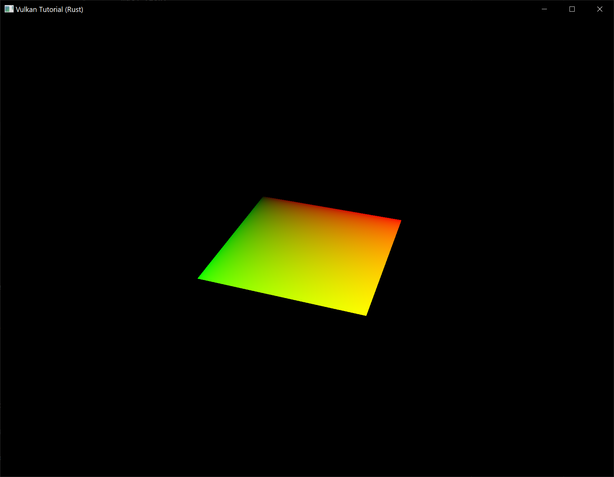
The green channel represents the horizontal coordinates and the red channel the vertical coordinates. The black and yellow corners confirm that the texture coordinates are correctly interpolated from 0, 0 to 1, 1 across the square. Visualizing data using colors is the shader programming equivalent of printf debugging, for lack of a better option!
A combined image sampler descriptor is represented in GLSL by a sampler uniform. Add a reference to it in the fragment shader:
layout(binding = 1) uniform sampler2D texSampler;
There are equivalent sampler1D and sampler3D types for other types of images. Make sure to use the correct binding here.
void main() {
outColor = texture(texSampler, fragTexCoord);
}
Textures are sampled using the built-in texture function. It takes a sampler and coordinate as arguments. The sampler automatically takes care of the filtering and transformations in the background. You should now see the texture on the square when you run the application:
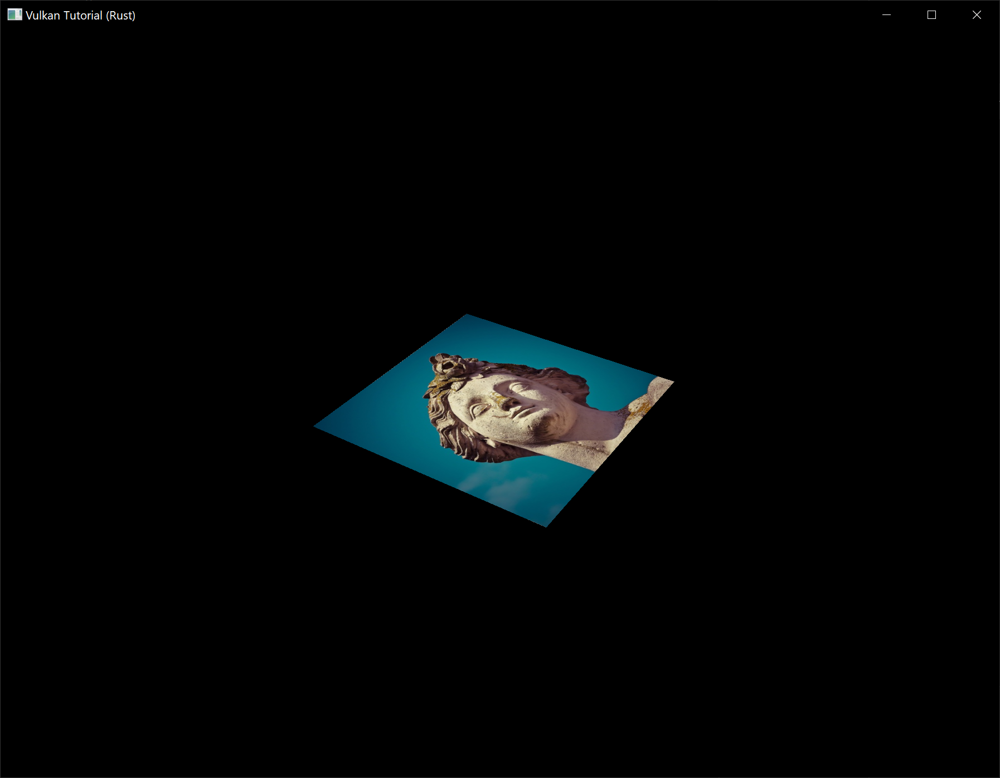
Try experimenting with the addressing modes by scaling the texture coordinates to values higher than 1. For example, the following fragment shader produces the result in the image below when using vk::SamplerAddressMode::REPEAT:
void main() {
outColor = texture(texSampler, fragTexCoord * 2.0);
}
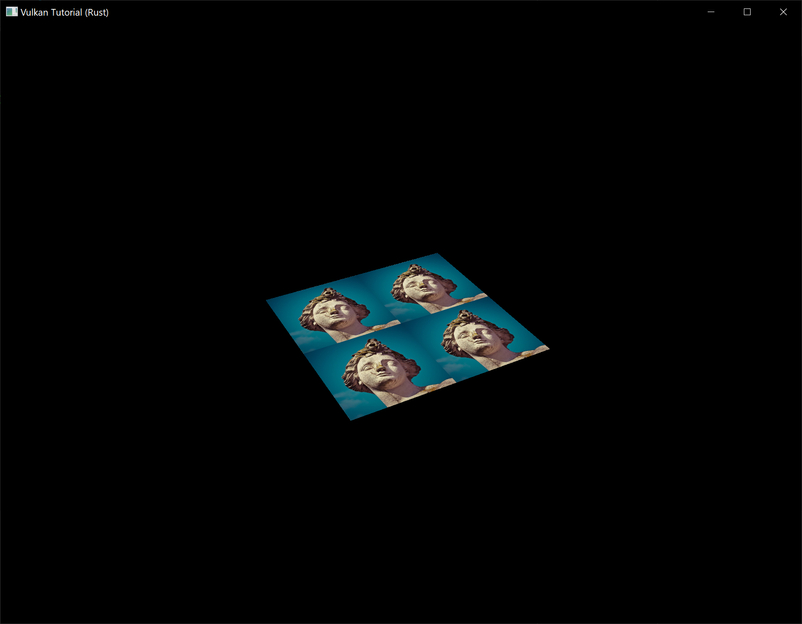
You can also manipulate the texture colors using the vertex colors:
void main() {
outColor = vec4(fragColor * texture(texSampler, fragTexCoord).rgb, 1.0);
}
I've separated the RGB and alpha channels here to not scale the alpha channel.
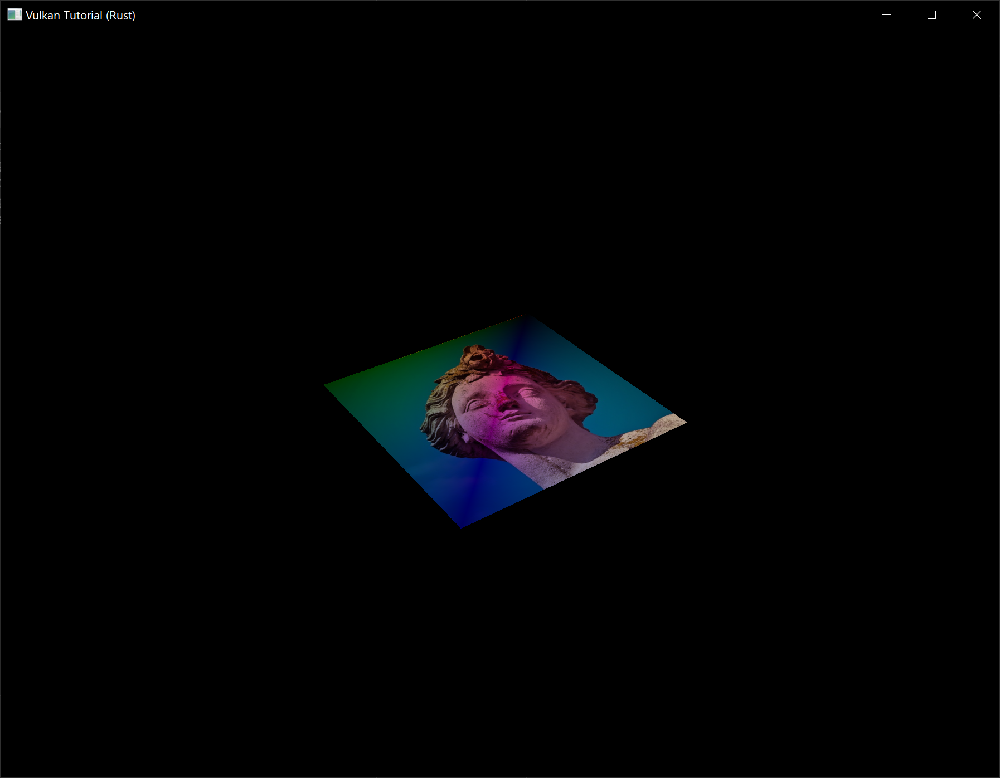
You now know how to access images in shaders! This is a very powerful technique when combined with images that are also written to in framebuffers. You can use these images as inputs to implement cool effects like post-processing and camera displays within the 3D world.
Depth buffering
Code: main.rs | shader.vert | shader.frag
The geometry we've worked with so far is projected into 3D, but it's still completely flat. In this chapter we're going to add a Z coordinate to the position to prepare for 3D meshes. We'll use this third coordinate to place a square over the current square to see a problem that arises when geometry is not sorted by depth.
3D geometry
Change the Vertex struct to use a 3D vector for the position, and update the format in the corresponding vk::VertexInputAttributeDescription and update the offsets in the others:
#[repr(C)]
#[derive(Copy, Clone, Debug)]
struct Vertex {
pos: Vec3,
color: Vec3,
tex_coord: Vec2,
}
impl Vertex {
const fn new(pos: Vec3, color: Vec3, tex_coord: Vec2) -> Self {
Self { pos, color, tex_coord }
}
fn binding_description() -> vk::VertexInputBindingDescription {
vk::VertexInputBindingDescription::builder()
.binding(0)
.stride(size_of::<Vertex>() as u32)
.input_rate(vk::VertexInputRate::VERTEX)
.build()
}
fn attribute_descriptions() -> [vk::VertexInputAttributeDescription; 3] {
let pos = vk::VertexInputAttributeDescription::builder()
.binding(0)
.location(0)
.format(vk::Format::R32G32B32_SFLOAT)
.offset(0)
.build();
let color = vk::VertexInputAttributeDescription::builder()
.binding(0)
.location(1)
.format(vk::Format::R32G32B32_SFLOAT)
.offset(size_of::<Vec3>() as u32)
.build();
let tex_coord = vk::VertexInputAttributeDescription::builder()
.binding(0)
.location(2)
.format(vk::Format::R32G32_SFLOAT)
.offset((size_of::<Vec3>() + size_of::<Vec3>()) as u32)
.build();
[pos, color, tex_coord]
}
}
Next, update the vertex shader to accept and transform 3D coordinates as input. Don't forget to recompile it afterwards!
layout(location = 0) in vec3 inPosition;
// ...
void main() {
gl_Position = ubo.proj * ubo.view * ubo.model * vec4(inPosition, 1.0);
fragColor = inColor;
fragTexCoord = inTexCoord;
}
Lastly, update the vertices container to include Z coordinates:
static VERTICES: [Vertex; 4] = [
Vertex::new(vec3(-0.5, -0.5, 0.0), vec3(1.0, 0.0, 0.0), vec2(1.0, 0.0)),
Vertex::new(vec3(0.5, -0.5, 0.0), vec3(0.0, 1.0, 0.0), vec2(0.0, 0.0)),
Vertex::new(vec3(0.5, 0.5, 0.0), vec3(0.0, 0.0, 1.0), vec2(0.0, 1.0)),
Vertex::new(vec3(-0.5, 0.5, 0.0), vec3(1.0, 1.0, 1.0), vec2(1.0, 1.0)),
];
If you run your application now, then you should see exactly the same result as before. It's time to add some extra geometry to make the scene more interesting, and to demonstrate the problem that we're going to tackle in this chapter. Duplicate the vertices to define positions for a square right under the current one like this:
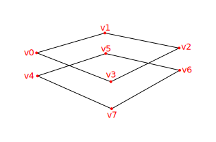
Use Z coordinates of -0.5 and add the appropriate indices for the extra square:
static VERTICES: [Vertex; 8] = [
Vertex::new(vec3(-0.5, -0.5, 0.0), vec3(1.0, 0.0, 0.0), vec2(1.0, 0.0)),
Vertex::new(vec3(0.5, -0.5, 0.0), vec3(0.0, 1.0, 0.0), vec2(0.0, 0.0)),
Vertex::new(vec3(0.5, 0.5, 0.0), vec3(0.0, 0.0, 1.0), vec2(0.0, 1.0)),
Vertex::new(vec3(-0.5, 0.5, 0.0), vec3(1.0, 1.0, 1.0), vec2(1.0, 1.0)),
Vertex::new(vec3(-0.5, -0.5, -0.5), vec3(1.0, 0.0, 0.0), vec2(1.0, 0.0)),
Vertex::new(vec3(0.5, -0.5, -0.5), vec3(0.0, 1.0, 0.0), vec2(0.0, 0.0)),
Vertex::new(vec3(0.5, 0.5, -0.5), vec3(0.0, 0.0, 1.0), vec2(0.0, 1.0)),
Vertex::new(vec3(-0.5, 0.5, -0.5), vec3(1.0, 1.0, 1.0), vec2(1.0, 1.0)),
];
const INDICES: &[u16] = &[
0, 1, 2, 2, 3, 0,
4, 5, 6, 6, 7, 4,
];
Run your program now and you'll see something resembling an Escher illustration:
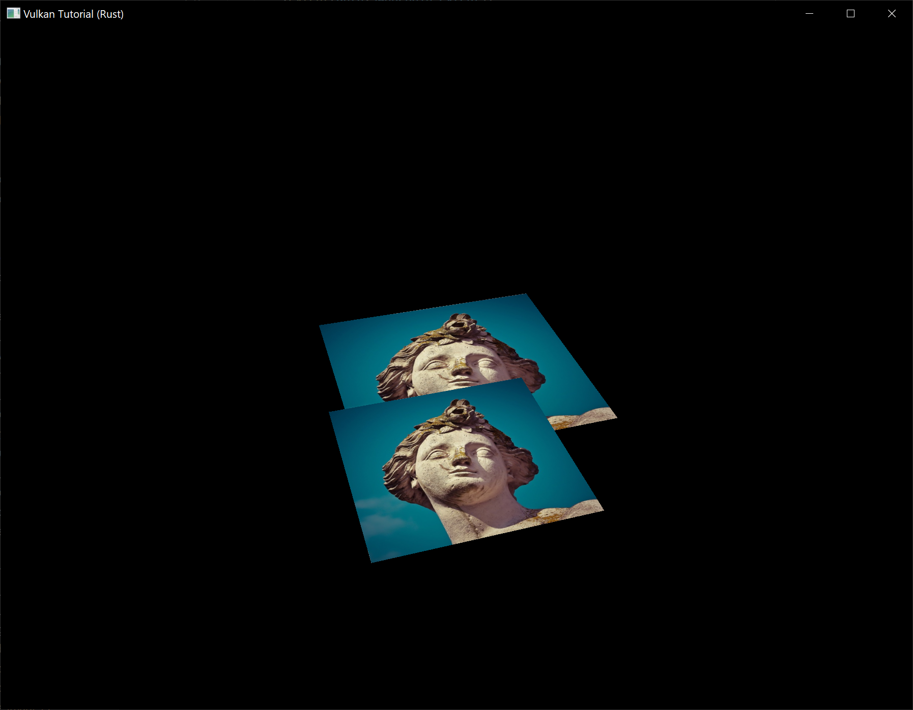
The problem is that the fragments of the lower square are drawn over the fragments of the upper square, simply because it comes later in the index array. There are two ways to solve this:
- Sort all of the draw calls by depth from back to front
- Use depth testing with a depth buffer
The first approach is commonly used for drawing transparent objects, because order-independent transparency is a difficult challenge to solve. However, the problem of ordering fragments by depth is much more commonly solved using a depth buffer. A depth buffer is an additional attachment that stores the depth for every position, just like the color attachment stores the color of every position. Every time the rasterizer produces a fragment, the depth test will check if the new fragment is closer than the previous one. If it isn't, then the new fragment is discarded. A fragment that passes the depth test writes its own depth to the depth buffer. It is possible to manipulate this value from the fragment shader, just like you can manipulate the color output.
Before we continue, there is one issue we need to fix. The perspective projection matrix generated by cgmath::perspective in App::update_uniform_buffer uses the OpenGL depth range of -1.0 to 1.0. We want to use the Vulkan range of 0.0 to 1.0 instead so we'll pre-multiply the generated perspective matrix with a correction matrix that maps the OpenGL range to the Vulkan range:
let correction = Mat4::new(
1.0, 0.0, 0.0, 0.0,
// We're also flipping the Y-axis with this line's `-1.0`.
0.0, -1.0, 0.0, 0.0,
0.0, 0.0, 1.0 / 2.0, 0.0,
0.0, 0.0, 1.0 / 2.0, 1.0,
);
let proj = correction
* cgmath::perspective(
Deg(45.0),
self.data.swapchain_extent.width as f32 / self.data.swapchain_extent.height as f32,
0.1,
10.0,
);
// This line should be deleted because we're now accomplishing the Y-axis flip
// using the new correction matrix.
// proj[1][1] *= -1.0;
Note that cgmath::Matrix4::new constructs a matrix in column-major order, so the parameters we passed to it seem to be transposed. So the actual matrix would look like this in row-major order:
1 0 0 0
0 -1 0 0
0 0 ½ ½
0 0 0 1
Depth image and view
A depth attachment is based on an image, just like the color attachment. The difference is that the swapchain will not automatically create depth images for us. We only need a single depth image, because only one draw operation is running at once. The depth image will again require the trifecta of resources: image, memory and image view.
struct AppData {
// ...
depth_image: vk::Image,
depth_image_memory: vk::DeviceMemory,
depth_image_view: vk::ImageView,
}
Create a new function create_depth_objects to set up these resources:
impl App {
unsafe fn create(window: &Window) -> Result<Self> {
// ...
create_command_pool(&instance, &device, &mut data)?;
create_depth_objects(&instance, &device, &mut data)?;
// ...
}
}
unsafe fn create_depth_objects(
instance: &Instance,
device: &Device,
data: &mut AppData,
) -> Result<()> {
Ok(())
}
Creating a depth image is fairly straightforward. It should have the same resolution as the color attachment, defined by the swapchain extent, an image usage appropriate for a depth attachment, optimal tiling and device local memory. The only question is: what is the right format for a depth image? The format must contain a depth component, indicated by D??_ in the vk::Format variant.
Unlike the texture image, we don't necessarily need a specific format, because we won't be directly accessing the texels from the program. It just needs to have a reasonable accuracy, at least 24 bits is common in real-world applications. There are several formats that fit this requirement:
vk::Format::D32_SFLOAT– 32-bit float for depthvk::Format::D32_SFLOAT_S8_UINT– 32-bit signed float for depth and 8 bit stencil componentvk::Format::D24_UNORM_S8_UINT– 24-bit float for depth and 8 bit stencil component
The stencil component is used for stencil tests, which is an additional test that can be combined with depth testing. We'll look at this in a future chapter.
We could simply go for the vk::Format::D32_SFLOAT format, because support for it is extremely common (see the hardware database), but it's nice to add some extra flexibility to our application where possible. We're going to write a get_supported_format function that takes a list of candidate formats in order from most desirable to least desirable and returns the first that satisfies our requirements:
unsafe fn get_supported_format(
instance: &Instance,
data: &AppData,
candidates: &[vk::Format],
tiling: vk::ImageTiling,
features: vk::FormatFeatureFlags,
) -> Result<vk::Format> {
candidates
.iter()
.cloned()
.find(|f| {
})
.ok_or_else(|| anyhow!("Failed to find supported format!"))
}
The support of a format depends on the tiling mode and usage, so we must also include these as parameters. The support of a format can be queried using the get_physical_device_format_properties function:
let properties = instance.get_physical_device_format_properties(
data.physical_device,
*f,
);
The vk::FormatProperties struct contains three fields:
linear_tiling_features– Use cases that are supported with linear tilingoptimal_tiling_features– Use cases that are supported with optimal tilingbuffer_features– Use cases that are supported for buffers
Only the first two are relevant here, and the one we check depends on the value provided for the tiling parameter of the function:
match tiling {
vk::ImageTiling::LINEAR => properties.linear_tiling_features.contains(features),
vk::ImageTiling::OPTIMAL => properties.optimal_tiling_features.contains(features),
_ => false,
}
We'll use this function now to create a get_depth_format helper function to select a format with a depth component that supports usage as depth attachment:
unsafe fn get_depth_format(instance: &Instance, data: &AppData) -> Result<vk::Format> {
let candidates = &[
vk::Format::D32_SFLOAT,
vk::Format::D32_SFLOAT_S8_UINT,
vk::Format::D24_UNORM_S8_UINT,
];
get_supported_format(
instance,
data,
candidates,
vk::ImageTiling::OPTIMAL,
vk::FormatFeatureFlags::DEPTH_STENCIL_ATTACHMENT,
)
}
Call the function to find a depth format from create_depth_objects:
let format = get_depth_format(instance, data)?;
We now have all the required information to invoke our create_image and create_image_view helper functions:
let (depth_image, depth_image_memory) = create_image(
instance,
device,
data,
data.swapchain_extent.width,
data.swapchain_extent.height,
format,
vk::ImageTiling::OPTIMAL,
vk::ImageUsageFlags::DEPTH_STENCIL_ATTACHMENT,
vk::MemoryPropertyFlags::DEVICE_LOCAL,
)?;
data.depth_image = depth_image;
data.depth_image_memory = depth_image_memory;
// Image View
data.depth_image_view = create_image_view(device, data.depth_image, format)?;
However, the create_image_view function currently assumes that the subresource always uses vk::ImageAspectFlags::COLOR, so we will need to turn that field into a parameter:
unsafe fn create_image_view(
device: &Device,
image: vk::Image,
format: vk::Format,
aspects: vk::ImageAspectFlags,
) -> Result<vk::ImageView> {
let subresource_range = vk::ImageSubresourceRange::builder()
.aspect_mask(aspects)
.base_mip_level(0)
.level_count(1)
.base_array_layer(0)
.layer_count(1);
// ...
}
Update all calls to this function to use the right aspect:
create_image_view(device, *i, data.swapchain_format, vk::ImageAspectFlags::COLOR)
// ...
data.depth_image_view = create_image_view(
device,
data.depth_image,
format,
vk::ImageAspectFlags::DEPTH,
)?;
// ...
data.texture_image_view = create_image_view(
device,
data.texture_image,
vk::Format::R8G8B8A8_SRGB,
vk::ImageAspectFlags::COLOR,
)?;
That's it for creating the depth image. We don't need to map it or copy another image to it, because we're going to clear it at the start of the render pass like the color attachment.
Explicitly transitioning the depth image
We don't need to explicitly transition the layout of the image to a depth attachment because we'll take care of this in the render pass. However, for completeness I'll still describe the process in this section. You may skip it if you like.
Make a call to transition_image_layout at the end of the create_depth_objects function like so:
transition_image_layout(
device,
data,
data.depth_image,
format,
vk::ImageLayout::UNDEFINED,
vk::ImageLayout::DEPTH_STENCIL_ATTACHMENT_OPTIMAL,
)?;
The undefined layout can be used as initial layout, because there are no existing depth image contents that matter. We need to update some of the logic in transition_image_layout to use the right subresource aspect:
Note: The first usage of the
|operator below describes a pattern that matches either of the specifiedvk::Formats in thematcharm. Meanwhile, the second usage of the|operator is the bitwise OR operator which combines the bits of thevk::ImageAspectFlagswe want to enable in this code path.
let aspect_mask = if new_layout == vk::ImageLayout::DEPTH_STENCIL_ATTACHMENT_OPTIMAL {
match format {
vk::Format::D32_SFLOAT_S8_UINT | vk::Format::D24_UNORM_S8_UINT =>
vk::ImageAspectFlags::DEPTH | vk::ImageAspectFlags::STENCIL,
_ => vk::ImageAspectFlags::DEPTH
}
} else {
vk::ImageAspectFlags::COLOR
};
let subresource = vk::ImageSubresourceRange::builder()
.aspect_mask(aspect_mask)
.base_mip_level(0)
.level_count(1)
.base_array_layer(0)
.layer_count(1);
Although we're not using the stencil component, we do need to include it in the layout transitions of the depth image.
Finally, add the correct access masks and pipeline stages:
let (
src_access_mask,
dst_access_mask,
src_stage_mask,
dst_stage_mask,
) = match (old_layout, new_layout) {
(vk::ImageLayout::UNDEFINED, vk::ImageLayout::DEPTH_STENCIL_ATTACHMENT_OPTIMAL) => (
vk::AccessFlags::empty(),
vk::AccessFlags::DEPTH_STENCIL_ATTACHMENT_READ | vk::AccessFlags::DEPTH_STENCIL_ATTACHMENT_WRITE,
vk::PipelineStageFlags::TOP_OF_PIPE,
vk::PipelineStageFlags::EARLY_FRAGMENT_TESTS,
),
// ...
};
The depth buffer will be read from to perform depth tests to see if a fragment is visible, and will be written to when a new fragment is drawn. The reading happens in the vk::PipelineStageFlags::EARLY_FRAGMENT_TESTS stage and the writing in the vk::PipelineStageFlags::LATE_FRAGMENT_TESTS. You should pick the earliest pipeline stage that matches the specified operations, so that it is ready for usage as depth attachment when it needs to be.
Render pass
We're now going to modify create_render_pass to include a depth attachment. First specify the vk::AttachmentDescription:
let depth_stencil_attachment = vk::AttachmentDescription::builder()
.format(get_depth_format(instance, data)?)
.samples(vk::SampleCountFlags::_1)
.load_op(vk::AttachmentLoadOp::CLEAR)
.store_op(vk::AttachmentStoreOp::DONT_CARE)
.stencil_load_op(vk::AttachmentLoadOp::DONT_CARE)
.stencil_store_op(vk::AttachmentStoreOp::DONT_CARE)
.initial_layout(vk::ImageLayout::UNDEFINED)
.final_layout(vk::ImageLayout::DEPTH_STENCIL_ATTACHMENT_OPTIMAL);
The format should be the same as the depth image itself. This time we don't care about storing the depth data (store_op), because it will not be used after drawing has finished. This may allow the hardware to perform additional optimizations. Just like the color buffer, we don't care about the previous depth contents, so we can use vk::ImageLayout::UNDEFINED as initial_layout.
let depth_stencil_attachment_ref = vk::AttachmentReference::builder()
.attachment(1)
.layout(vk::ImageLayout::DEPTH_STENCIL_ATTACHMENT_OPTIMAL);
Add a reference to the attachment for the first (and only) subpass:
let subpass = vk::SubpassDescription::builder()
.pipeline_bind_point(vk::PipelineBindPoint::GRAPHICS)
.color_attachments(color_attachments)
.depth_stencil_attachment(&depth_stencil_attachment_ref);
Unlike color attachments, a subpass can only use a single depth (+stencil) attachment. It wouldn't really make any sense to do depth tests on multiple buffers.
let attachments = &[color_attachment, depth_stencil_attachment];
let subpasses = &[subpass];
let dependencies = &[dependency];
let info = vk::RenderPassCreateInfo::builder()
.attachments(attachments)
.subpasses(subpasses)
.dependencies(dependencies);
Next, update the vk::RenderPassCreateInfo struct to refer to both attachments.
let dependency = vk::SubpassDependency::builder()
.src_subpass(vk::SUBPASS_EXTERNAL)
.dst_subpass(0)
.src_stage_mask(vk::PipelineStageFlags::COLOR_ATTACHMENT_OUTPUT
| vk::PipelineStageFlags::EARLY_FRAGMENT_TESTS)
.src_access_mask(vk::AccessFlags::empty())
.dst_stage_mask(vk::PipelineStageFlags::COLOR_ATTACHMENT_OUTPUT
| vk::PipelineStageFlags::EARLY_FRAGMENT_TESTS)
.dst_access_mask(vk::AccessFlags::COLOR_ATTACHMENT_WRITE
| vk::AccessFlags::DEPTH_STENCIL_ATTACHMENT_WRITE);
Finally, we need to extend our subpass dependencies to make sure that there is no conflict between the transitioning of the depth image and it being cleared as part of its load operation. The depth image is first accessed in the early fragment test pipeline stage and because we have a load operation that clears, we should specify the access mask for writes.
Framebuffer
The next step is to modify the framebuffer creation to bind the depth image to the depth attachment. Go to create_framebuffers and specify the depth image view as second attachment:
let attachments = &[*i, data.depth_image_view];
let create_info = vk::FramebufferCreateInfo::builder()
.render_pass(data.render_pass)
.attachments(attachments)
.width(data.swapchain_extent.width)
.height(data.swapchain_extent.height)
.layers(1);
The color attachment differs for every swapchain image, but the same depth image can be used by all of them because only a single subpass is running at the same time due to our semaphores.
You'll also need to move the call to create_framebuffers to make sure that it is called after the depth image view has actually been created:
unsafe fn create(window: &Window) -> Result<Self> {
// ...
create_depth_objects(&instance, &device, &mut data)?;
create_framebuffers(&device, &mut data)?;
// ...
}
Clear values
Because we now have multiple attachments with vk::AttachmentLoadOp::CLEAR, we also need to specify multiple clear values. Go to create_command_buffers and add an instance of vk::ClearValue to the clear_values array:
let color_clear_value = vk::ClearValue {
color: vk::ClearColorValue {
float32: [0.0, 0.0, 0.0, 1.0],
},
};
let depth_clear_value = vk::ClearValue {
depth_stencil: vk::ClearDepthStencilValue {
depth: 1.0,
stencil: 0,
},
};
let clear_values = &[color_clear_value, depth_clear_value];
The range of depths in the depth buffer is 0.0 to 1.0 in Vulkan, where 1.0 lies at the far view plane and 0.0 at the near view plane. The initial value at each point in the depth buffer should be the furthest possible depth, which is 1.0.
Note that the order of clear_values should be identical to the order of your attachments.
Depth and stencil state
The depth attachment is ready to be used now, but depth testing still needs to be enabled in the graphics pipeline. It is configured through the vk::PipelineDepthStencilStateCreateInfo struct:
let depth_stencil_state = vk::PipelineDepthStencilStateCreateInfo::builder()
.depth_test_enable(true)
.depth_write_enable(true)
// continued ...
The depth_test_enable field specifies if the depth of new fragments should be compared to the depth buffer to see if they should be discarded. The depth_write_enable field specifies if the new depth of fragments that pass the depth test should actually be written to the depth buffer.
.depth_compare_op(vk::CompareOp::LESS)
The depth_compare_op field specifies the comparison that is performed to keep or discard fragments. We're sticking to the convention of lower depth = closer, so the depth of new fragments should be less.
.depth_bounds_test_enable(false)
.min_depth_bounds(0.0) // Optional.
.max_depth_bounds(1.0) // Optional.
The depth_bounds_test_enable, min_depth_bounds and max_depth_bounds fields are used for the optional depth bound test. Basically, this allows you to only keep fragments that fall within the specified depth range. We won't be using this functionality.
.stencil_test_enable(false)
.front(/* vk::StencilOpState */) // Optional.
.back(/* vk::StencilOpState */); // Optional.
The last three fields configure stencil buffer operations, which we also won't be using in this tutorial. If you want to use these operations, then you will have to make sure that the format of the depth/stencil image contains a stencil component.
let info = vk::GraphicsPipelineCreateInfo::builder()
.stages(stages)
.vertex_input_state(&vertex_input_state)
.input_assembly_state(&input_assembly_state)
.viewport_state(&viewport_state)
.rasterization_state(&rasterization_state)
.multisample_state(&multisample_state)
.depth_stencil_state(&depth_stencil_state)
.color_blend_state(&color_blend_state)
.layout(data.pipeline_layout)
.render_pass(data.render_pass)
.subpass(0);
Update the vk::GraphicsPipelineCreateInfo struct to reference the depth stencil state we just filled in. A depth stencil state must always be specified if the render pass contains a depth stencil attachment.
If you run your program now, then you should see that the fragments of the geometry are now correctly ordered:
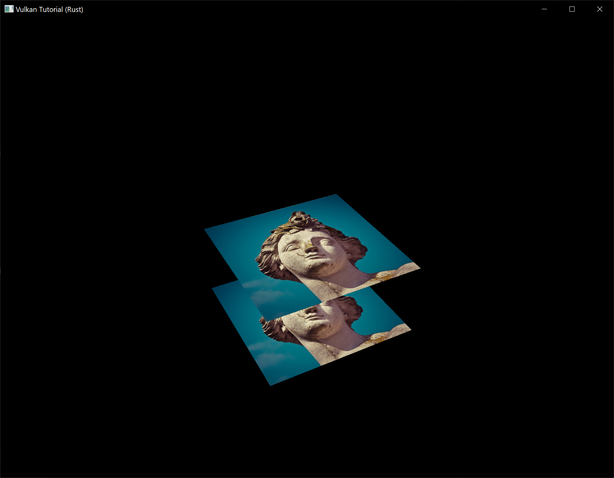
Handling window resize
The resolution of the depth buffer should change when the window is resized to match the new color attachment resolution. Extend the App::recreate_swapchain method to recreate the depth resources in that case:
unsafe fn recreate_swapchain(&mut self, window: &Window) -> Result<()> {
self.device.device_wait_idle()?;
self.destroy_swapchain();
create_swapchain(window, &self.instance, &self.device, &mut self.data)?;
create_swapchain_image_views(&self.device, &mut self.data)?;
create_render_pass(&self.instance, &self.device, &mut self.data)?;
create_pipeline(&self.device, &mut self.data)?;
create_depth_objects(&self.instance, &self.device, &mut self.data)?;
create_framebuffers(&self.device, &mut self.data)?;
create_uniform_buffers(&self.instance, &self.device, &mut self.data)?;
create_descriptor_pool(&self.device, &mut self.data)?;
create_descriptor_sets(&self.device, &mut self.data)?;
create_command_buffers(&self.device, &mut self.data)?;
Ok(())
}
The cleanup operations should happen in the swapchain cleanup function:
unsafe fn destroy_swapchain(&mut self) {
self.device.destroy_image_view(self.data.depth_image_view, None);
self.device.free_memory(self.data.depth_image_memory, None);
self.device.destroy_image(self.data.depth_image, None);
// ...
}
Congratulations, your application is now finally ready to render arbitrary 3D geometry and have it look right. We're going to try this out in the next chapter by drawing a textured model!
Loading models
Code: main.rs
Your program is now ready to render textured 3D meshes, but the current geometry in the vertices and indices arrays is not very interesting yet. In this chapter we're going to extend the program to load the vertices and indices from an actual model file to make the graphics card actually do some work.
Many graphics API tutorials have the reader write their own OBJ loader in a chapter like this. The problem with this is that any remotely interesting 3D application will soon require features that are not supported by this file format, like skeletal animation. We will load mesh data from an OBJ model in this chapter, but we'll focus more on integrating the mesh data with the program itself rather than the details of loading it from a file.
Library
We will use the tobj crate to load vertices and faces from an OBJ file. If you followed the instructions in the Development environment chapter you already have this dependency installed and ready to go.
Sample mesh
In this chapter we won't be enabling lighting yet, so it helps to use a sample model that has lighting baked into the texture. An easy way to find such models is to look for 3D scans on Sketchfab. Many of the models on that site are available in OBJ format with a permissive license.
For this tutorial I've decided to go with the Viking room model by nigelgoh (CC BY 4.0). I tweaked the size and orientation of the model to use it as a drop in replacement for the current geometry:
{kind=link}
Note: The
.objand.pngfiles that are included in this tutorial may not be identical to the original files. Make sure you use the files from this tutorial (and beyond that, the.objand.pngfiles may also differ from the files used in the original C++ tutorial).
Feel free to use your own model, but make sure that it only consists of one material and that is has dimensions of about 1.5 x 1.5 x 1.5 units. If it is larger than that, then you'll have to change the view matrix. Put the model file and texture image in the resources directory.
Update create_texture_image to use this path variable:
let image = File::open("resources/viking_room.png")?;
To double-check your image file is correct, you can also add this code in create_texture_image right after decoding the file as a PNG image:
if width != 1024 || height != 1024 || reader.info().color_type != png::ColorType::Rgba {
panic!("Invalid texture image.");
}
Loading vertices and indices
We're going to load the vertices and indices from the model file now, so you should remove the global VERTICES and INDICES arrays now. Replace them with AppData fields:
struct AppData {
// ...
vertices: Vec<Vertex>,
indices: Vec<u32>,
vertex_buffer: vk::Buffer,
vertex_buffer_memory: vk::DeviceMemory,
// ...
}
You'll also need to replace all the references to the global arrays with the new AppData fields.
You should change the type of the indices from u16 to u32, because there are going to be a lot more vertices than 65,536. Remember to also change the cmd_bind_index_buffer parameter:
device.cmd_bind_index_buffer(
*command_buffer,
data.index_buffer,
0,
vk::IndexType::UINT32,
);
You'll also need to update the size of the index buffer in create_index_buffer:
let size = (size_of::<u32>() * data.indices.len()) as u64;
Next we are going to need some more imports:
use std::collections::HashMap;
use std::hash::{Hash, Hasher};
use std::io::BufReader;
We're now going to write a load_models function that uses this library to populate the vertices and indices fields with the vertex data from the mesh. It should be called somewhere before the vertex and index buffers are created:
impl App {
unsafe fn create(window: &Window) -> Result<Self> {
// ...
load_model(&mut data)?;
create_vertex_buffer(&instance, &device, &mut data)?;
create_index_buffer(&instance, &device, &mut data)?;
// ...
}
}
fn load_model(data: &mut AppData) -> Result<()> {
Ok(())
}
A model is loaded into the crate's data structures by calling the tobj::load_obj_buf function:
let mut reader = BufReader::new(File::open("resources/viking_room.obj")?);
let (models, _) = tobj::load_obj_buf(
&mut reader,
&tobj::LoadOptions { triangulate: true, ..Default::default() },
|_| Ok(Default::default()),
)?;
An OBJ file consists of positions, normals, texture coordinates and faces. Faces consist of an arbitrary amount of vertices, where each vertex refers to a position, normal and/or texture coordinate by index. This makes it possible to not just reuse entire vertices, but also individual attributes.
tobj::load_obj_buf returns a Vec of models and a Vec of materials. We are not interested in the materials, only the models, so the returned materials are ignored with _.
The second tobj::load_obj_buf parameter specifies options for processing the loaded models. The triangulate field we are setting to true ensures that the components of the loaded models are converted to triangles. This is important because our rendering code can only handle triangles. We don't need this for our Viking room model since its faces are already triangles but it might be necessary if you try using a different OBJ file.
The third tobj::load_obj_buf parameter is a callback used to load any materials referenced in the OBJ file. As we are not interested in the materials, we just return an empty material.
We're going to combine all of the faces in the file into a single model, so just iterate over all of the shapes:
for model in &models {
}
The triangulation feature has already made sure that there are three vertices per face, so we can now directly iterate over the vertices and dump them straight into our vertices vector:
for model in &models {
for index in &model.mesh.indices {
let vertex = Vertex {
pos: vec3(0.0, 0.0, 0.0),
color: vec3(1.0, 1.0, 1.0),
tex_coord: vec2(0.0, 0.0),
};
data.vertices.push(vertex);
data.indices.push(data.indices.len() as u32);
}
}
For simplicity, we will assume that every vertex is unique for now, hence the simple auto-increment indices. The index variable is used to look up the actual vertex attributes in the positions and texcoords arrays:
let pos_offset = (3 * index) as usize;
let tex_coord_offset = (2 * index) as usize;
let vertex = Vertex {
pos: vec3(
model.mesh.positions[pos_offset],
model.mesh.positions[pos_offset + 1],
model.mesh.positions[pos_offset + 2],
),
color: vec3(1.0, 1.0, 1.0),
tex_coord: vec2(
model.mesh.texcoords[tex_coord_offset],
model.mesh.texcoords[tex_coord_offset + 1],
),
};
Unfortunately, the positions returned from tobj::load_obj_buf are a flat array of f32 values instead of something like cgmath::Vector3<f32>, so you need to multiply the index by 3 to account for each position having three components. Similarly, there are two texture coordinate components per entry. The offsets of 0, 1 and 2 are used to access the X, Y and Z components, or the U and V components in the case of texture coordinates.
You may want to start compiling your program in release mode from now on because loading the texture and model can be quite slow without optimizations. If you run your program now you should see something like the following:
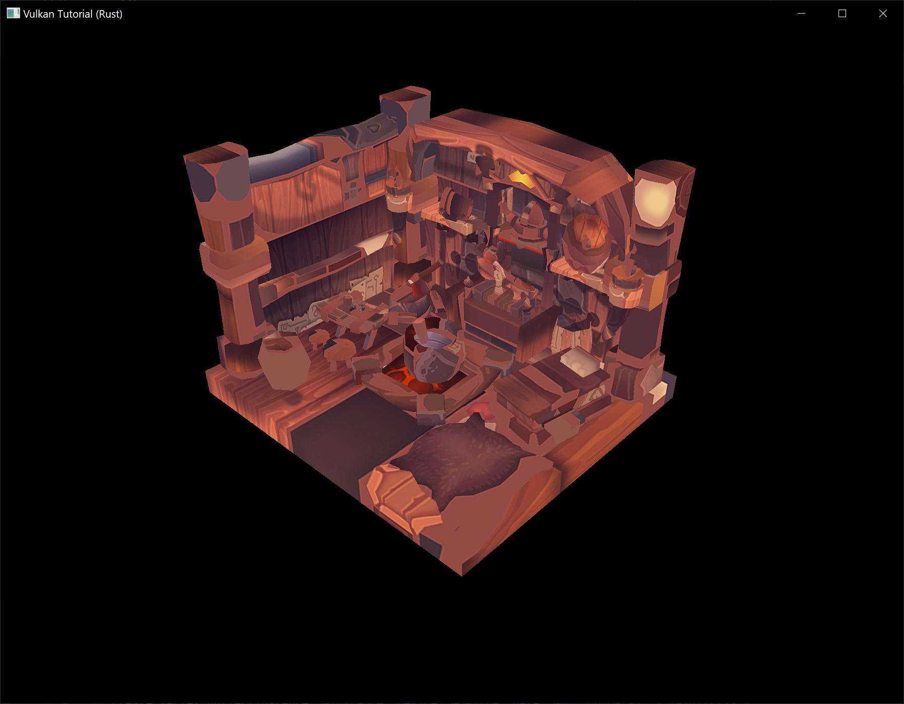
Great, the geometry looks correct, but what's going on with the texture? The OBJ format assumes a coordinate system where a vertical coordinate of 0 means the bottom of the image, however we've uploaded our image into Vulkan in a top to bottom orientation where 0 means the top of the image. Solve this by flipping the vertical component of the texture coordinates:
tex_coord: vec2(
model.mesh.texcoords[tex_coord_offset],
1.0 - model.mesh.texcoords[tex_coord_offset + 1],
),
When you run your program again, you should now see the correct result:
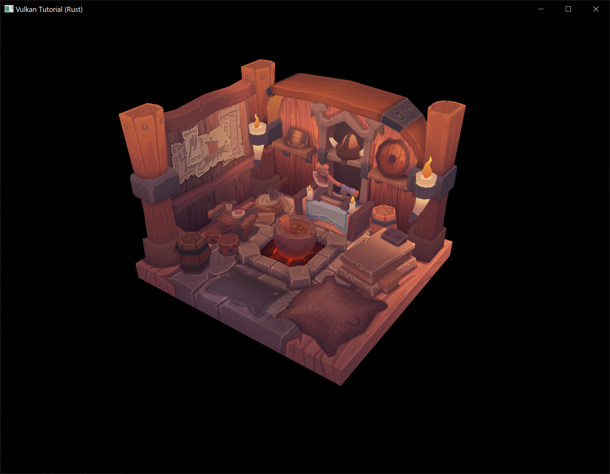
All that hard work is finally beginning to pay off with a demo like this!
Vertex deduplication
Unfortunately we're not really taking advantage of the index buffer yet. The vertices vector contains a lot of duplicated vertex data, because many vertices are included in multiple triangles. We should keep only the unique vertices and use the index buffer to reuse them whenever they come up. A straightforward way to implement this is to use a HashMap to keep track of the unique vertices and respective indices:
let mut unique_vertices = HashMap::new();
for model in &models {
for index in &model.mesh.indices {
// ...
if let Some(index) = unique_vertices.get(&vertex) {
data.indices.push(*index as u32);
} else {
let index = data.vertices.len();
unique_vertices.insert(vertex, index);
data.vertices.push(vertex);
data.indices.push(index as u32);
}
}
Every time we read a vertex from the OBJ file, we check if we've already seen a vertex with the exact same position and texture coordinates before. If not, we add it to vertices and store its index in the unique_vertices container. After that we add the index of the new vertex to indices. If we've seen the exact same vertex before, then we look up its index in unique_vertices and store that index in indices.
The program will fail to compile right now because we need to implement the Hash trait for our Vertex struct to be able to use it as the key of a HashMap. Unfortunately since Vertex contains f32s we will need to implement Hash and the required traits (PartialEq and Eq) by hand (note that our Eq implementation is valid only as long as there aren't any NaNs in our vertex data which for now is a safe assumption).
impl PartialEq for Vertex {
fn eq(&self, other: &Self) -> bool {
self.pos == other.pos
&& self.color == other.color
&& self.tex_coord == other.tex_coord
}
}
impl Eq for Vertex {}
impl Hash for Vertex {
fn hash<H: Hasher>(&self, state: &mut H) {
self.pos[0].to_bits().hash(state);
self.pos[1].to_bits().hash(state);
self.pos[2].to_bits().hash(state);
self.color[0].to_bits().hash(state);
self.color[1].to_bits().hash(state);
self.color[2].to_bits().hash(state);
self.tex_coord[0].to_bits().hash(state);
self.tex_coord[1].to_bits().hash(state);
}
}
You should now be able to successfully compile and run your program. If you check the size of vertices, then you'll see that it has shrunk down from 1,500,000 to 265,645! That means that each vertex is reused in an average number of ~6 triangles. This definitely saves us a lot of GPU memory.
Generating mipmaps
Code: main.rs
Our program can now load and render 3D models. In this chapter, we will add one more feature, mipmap generation. Mipmaps are widely used in games and rendering software, and Vulkan gives us complete control over how they are created.
Mipmaps are precalculated, downscaled versions of an image. Each new image is half the width and height of the previous one. Mipmaps are used as a form of Level of Detail or LOD. Objects that are far away from the camera will sample their textures from the smaller mip images. Using smaller images increases the rendering speed and avoids artifacts such as Moiré patterns. An example of what mipmaps look like:

Image creation
In Vulkan, each of the mip images is stored in different mip levels of a vk::Image. Mip level 0 is the original image, and the mip levels after level 0 are commonly referred to as the mip chain.
The number of mip levels is specified when the vk::Image is created. Up until now, we have always set this value to one. We need to calculate the number of mip levels from the dimensions of the image. First, add an AppData field to store this number:
struct AppData {
// ...
mip_levels: u32,
texture_image: vk::Image,
// ...
}
The value for mip_levels can be found once we've loaded the texture in create_texture_image:
let image = File::open("resources/viking_room.png")?;
let decoder = png::Decoder::new(image);
let mut reader = decoder.read_info()?;
// ...
data.mip_levels = (width.max(height) as f32).log2().floor() as u32 + 1;
This calculates the number of levels in the mip chain. The max method selects the largest dimension. The log2 method calculates how many times that dimension can be divided by 2. The floor method handles cases where the largest dimension is not a power of 2. 1 is added so that the original image has a mip level.
To use this value, we need to change the create_image, create_image_view, and transition_image_layout functions to allow us to specify the number of mip levels. Add a mip_levels parameter to the functions:
unsafe fn create_image(
instance: &Instance,
device: &Device,
data: &AppData,
width: u32,
height: u32,
mip_levels: u32,
format: vk::Format,
tiling: vk::ImageTiling,
usage: vk::ImageUsageFlags,
properties: vk::MemoryPropertyFlags,
) -> Result<(vk::Image, vk::DeviceMemory)> {
let info = vk::ImageCreateInfo::builder()
// ...
.mip_levels(mip_levels)
// ...
// ...
}
unsafe fn create_image_view(
device: &Device,
image: vk::Image,
format: vk::Format,
aspects: vk::ImageAspectFlags,
mip_levels: u32,
) -> Result<vk::ImageView> {
let subresource_range = vk::ImageSubresourceRange::builder()
// ...
.level_count(mip_levels)
// ...
// ...
}
unsafe fn transition_image_layout(
device: &Device,
data: &AppData,
image: vk::Image,
format: vk::Format,
old_layout: vk::ImageLayout,
new_layout: vk::ImageLayout,
mip_levels: u32,
) -> Result<()> {
// ...
let subresource = vk::ImageSubresourceRange::builder()
// ...
.level_count(mip_levels)
// ...
// ...
}
Update all calls to these functions to use the right values:
Note: Be sure to use a value of
1for all of the images and image views except the image and image view that is for the texture.
let (depth_image, depth_image_memory) = create_image(
instance,
device,
data,
data.swapchain_extent.width,
data.swapchain_extent.height,
1,
format,
vk::ImageTiling::OPTIMAL,
vk::ImageUsageFlags::DEPTH_STENCIL_ATTACHMENT,
vk::MemoryPropertyFlags::DEVICE_LOCAL,
)?;
// ...
let (texture_image, texture_image_memory) = create_image(
instance,
device,
data,
width,
height,
data.mip_levels,
vk::Format::R8G8B8A8_SRGB,
vk::ImageTiling::OPTIMAL,
vk::ImageUsageFlags::SAMPLED | vk::ImageUsageFlags::TRANSFER_DST,
vk::MemoryPropertyFlags::DEVICE_LOCAL,
)?;
create_image_view(
device,
*i,
data.swapchain_format,
vk::ImageAspectFlags::COLOR,
1,
)
// ...
data.depth_image_view = create_image_view(
device,
data.depth_image,
format,
vk::ImageAspectFlags::DEPTH,
1,
)?;
// ...
data.texture_image_view = create_image_view(
device,
data.texture_image,
vk::Format::R8G8B8A8_SRGB,
vk::ImageAspectFlags::COLOR,
data.mip_levels,
)?;
transition_image_layout(
device,
data,
data.texture_image,
vk::Format::R8G8B8A8_SRGB,
vk::ImageLayout::UNDEFINED,
vk::ImageLayout::TRANSFER_DST_OPTIMAL,
data.mip_levels,
)?;
// ...
transition_image_layout(
device,
data,
data.texture_image,
vk::Format::R8G8B8A8_SRGB,
vk::ImageLayout::TRANSFER_DST_OPTIMAL,
vk::ImageLayout::SHADER_READ_ONLY_OPTIMAL,
data.mip_levels,
)?;
Generating Mipmaps
Our texture image now has multiple mip levels, but the staging buffer can only be used to fill mip level 0. The other levels are still undefined. To fill these levels we need to generate the data from the single level that we have. We will use the cmd_blit_image command. This command performs copying, scaling, and filtering operations. We will call this multiple times to blit data to each level of our texture image.
cmd_blit_image is considered a transfer operation, so we must inform Vulkan that we intend to use the texture image as both the source and destination of a transfer. Add vk::ImageUsageFlags::TRANSFER_SRC to the texture image's usage flags in create_texture_image:
let (texture_image, texture_image_memory) = create_image(
instance,
device,
data,
width,
height,
data.mip_levels,
vk::Format::R8G8B8A8_SRGB,
vk::ImageTiling::OPTIMAL,
vk::ImageUsageFlags::SAMPLED
| vk::ImageUsageFlags::TRANSFER_DST
| vk::ImageUsageFlags::TRANSFER_SRC,
vk::MemoryPropertyFlags::DEVICE_LOCAL,
)?;
Like other image operations, cmd_blit_image depends on the layout of the image it operates on. We could transition the entire image to vk::ImageLayout::GENERAL, but this will most likely be slow. For optimal performance, the source image should be in vk::ImageLayout::TRANSFER_SRC_OPTIMAL and the destination image should be in vk::ImageLayout::TRANSFER_DST_OPTIMAL. Vulkan allows us to transition each mip level of an image independently. Each blit will only deal with two mip levels at a time, so we can transition each level into the optimal layout between blits commands.
transition_image_layout only performs layout transitions on the entire image, so we'll need to write a few more pipeline barrier commands. Remove the existing transition to vk::ImageLayout::SHADER_READ_ONLY_OPTIMAL in create_texture_image.
This will leave each level of the texture image in vk::ImageLayout::TRANSFER_DST_OPTIMAL. Each level will be transitioned to vk::ImageLayout::SHADER_READ_ONLY_OPTIMAL after the blit command reading from it is finished.
We're now going to write the function that generates the mipmaps:
unsafe fn generate_mipmaps(
instance: &Instance,
device: &Device,
data: &AppData,
image: vk::Image,
width: u32,
height: u32,
mip_levels: u32,
) -> Result<()> {
let command_buffer = begin_single_time_commands(device, data)?;
let subresource = vk::ImageSubresourceRange::builder()
.aspect_mask(vk::ImageAspectFlags::COLOR)
.base_array_layer(0)
.layer_count(1)
.level_count(1);
let mut barrier = vk::ImageMemoryBarrier::builder()
.image(image)
.src_queue_family_index(vk::QUEUE_FAMILY_IGNORED)
.dst_queue_family_index(vk::QUEUE_FAMILY_IGNORED)
.subresource_range(subresource);
end_single_time_commands(device, data, command_buffer)?;
Ok(())
}
We're going to make several transitions, so we'll reuse this vk::ImageMemoryBarrier (which is why it is defined as mutable). The fields set above will remain the same for all barriers. subresource_range.mip_level, old_layout, new_layout, src_access_mask, and dst_access_mask will be changed for each transition.
let mut mip_width = width;
let mut mip_height = height;
for i in 1..mip_levels {
}
This loop will record each of the cmd_blit_image commands. Note that the range index starts at 1, not 0.
barrier.subresource_range.base_mip_level = i - 1;
barrier.old_layout = vk::ImageLayout::TRANSFER_DST_OPTIMAL;
barrier.new_layout = vk::ImageLayout::TRANSFER_SRC_OPTIMAL;
barrier.src_access_mask = vk::AccessFlags::TRANSFER_WRITE;
barrier.dst_access_mask = vk::AccessFlags::TRANSFER_READ;
device.cmd_pipeline_barrier(
command_buffer,
vk::PipelineStageFlags::TRANSFER,
vk::PipelineStageFlags::TRANSFER,
vk::DependencyFlags::empty(),
&[] as &[vk::MemoryBarrier],
&[] as &[vk::BufferMemoryBarrier],
&[barrier],
);
First, we transition level i - 1 to vk::ImageLayout::TRANSFER_SRC_OPTIMAL. This transition will wait for level i - 1 to be filled, either from the previous blit command, or from cmd_copy_buffer_to_image. The current blit command will wait on this transition.
let src_subresource = vk::ImageSubresourceLayers::builder()
.aspect_mask(vk::ImageAspectFlags::COLOR)
.mip_level(i - 1)
.base_array_layer(0)
.layer_count(1);
let dst_subresource = vk::ImageSubresourceLayers::builder()
.aspect_mask(vk::ImageAspectFlags::COLOR)
.mip_level(i)
.base_array_layer(0)
.layer_count(1);
let blit = vk::ImageBlit::builder()
.src_offsets([
vk::Offset3D { x: 0, y: 0, z: 0 },
vk::Offset3D {
x: mip_width as i32,
y: mip_height as i32,
z: 1,
},
])
.src_subresource(src_subresource)
.dst_offsets([
vk::Offset3D { x: 0, y: 0, z: 0 },
vk::Offset3D {
x: (if mip_width > 1 { mip_width / 2 } else { 1 }) as i32,
y: (if mip_height > 1 { mip_height / 2 } else { 1 }) as i32,
z: 1,
},
])
.dst_subresource(dst_subresource);
Next, we specify the regions that will be used in the blit operation. The source mip level is i - 1 and the destination mip level is i. The two elements of the src_offsets array determine the 3D region that data will be blitted from. dst_offsets determines the region that data will be blitted to. The X and Y dimensions of the dst_offsets[1] are divided by two since each mip level is half the size of the previous level. The Z dimension of src_offsets[1] and dst_offsets[1] must be 1, since a 2D image has a depth of 1.
device.cmd_blit_image(
command_buffer,
image,
vk::ImageLayout::TRANSFER_SRC_OPTIMAL,
image,
vk::ImageLayout::TRANSFER_DST_OPTIMAL,
&[blit],
vk::Filter::LINEAR,
);
Now, we record the blit command. Note that image is used for both the stc_image and dst_image parameters. This is because we're blitting between different levels of the same image. The source mip level was just transitioned to vk::ImageLayout::TRANSFER_SRC_OPTIMAL and the destination level is still in vk::ImageLayout::TRANSFER_DST_OPTIMAL from create_texture_image.
Beware if you are using a dedicated transfer queue (as suggested in the Vertex buffers chapter): cmd_blit_image must be submitted to a queue with graphics capability.
The last parameter allows us to specify a vk::Filter to use in the blit. We have the same filtering options here that we had when making the vk::Sampler. We use the vk::Filter::LINEAR to enable interpolation.
barrier.old_layout = vk::ImageLayout::TRANSFER_SRC_OPTIMAL;
barrier.new_layout = vk::ImageLayout::SHADER_READ_ONLY_OPTIMAL;
barrier.src_access_mask = vk::AccessFlags::TRANSFER_READ;
barrier.dst_access_mask = vk::AccessFlags::SHADER_READ;
device.cmd_pipeline_barrier(
command_buffer,
vk::PipelineStageFlags::TRANSFER,
vk::PipelineStageFlags::FRAGMENT_SHADER,
vk::DependencyFlags::empty(),
&[] as &[vk::MemoryBarrier],
&[] as &[vk::BufferMemoryBarrier],
&[barrier],
);
This barrier transitions mip level i - 1 to vk::ImageLayout::SHADER_READ_ONLY_OPTIMAL. This transition waits on the current blit command to finish. All sampling operations will wait on this transition to finish.
if mip_width > 1 {
mip_width /= 2;
}
if mip_height > 1 {
mip_height /= 2;
}
At the end of the loop, we divide the current mip dimensions by two. We check each dimension before the division to ensure that dimension never becomes 0. This handles cases where the image is not square, since one of the mip dimensions would reach 1 before the other dimension. When this happens, that dimension should remain 1 for all remaining levels.
barrier.subresource_range.base_mip_level = mip_levels - 1;
barrier.old_layout = vk::ImageLayout::TRANSFER_DST_OPTIMAL;
barrier.new_layout = vk::ImageLayout::SHADER_READ_ONLY_OPTIMAL;
barrier.src_access_mask = vk::AccessFlags::TRANSFER_WRITE;
barrier.dst_access_mask = vk::AccessFlags::SHADER_READ;
device.cmd_pipeline_barrier(
command_buffer,
vk::PipelineStageFlags::TRANSFER,
vk::PipelineStageFlags::FRAGMENT_SHADER,
vk::DependencyFlags::empty(),
&[] as &[vk::MemoryBarrier],
&[] as &[vk::BufferMemoryBarrier],
&[barrier],
);
end_single_time_commands(device, data, command_buffer)?;
Before we end the command buffer, we insert one more pipeline barrier. This barrier transitions the last mip level from vk::ImageLayout::TRANSFER_DST_OPTIMAL to vk::ImageLayout::SHADER_READ_ONLY_OPTIMAL. This wasn't handled by the loop, since the last mip level is never blitted from.
Finally, add the call to generate_mipmaps at the end of create_texture_image:
generate_mipmaps(
instance,
device,
data,
data.texture_image,
width,
height,
data.mip_levels,
)?;
Our texture image's mipmaps are now completely filled.
Linear filtering support
It is very convenient to use a built-in command like cmd_blit_image to generate all the mip levels, but unfortunately it is not guaranteed to be supported on all platforms. It requires the texture image format we use to support linear filtering, which can be checked with the get_physical_device_format_properties command. We will add a check to the generate_mipmaps function for this.
First add an additional parameter that specifies the image format:
generate_mipmaps(
instance,
device,
data,
data.texture_image,
vk::Format::R8G8B8A8_SRGB,
width,
height,
data.mip_levels,
)?;
// ...
unsafe fn generate_mipmaps(
instance: &Instance,
device: &Device,
data: &AppData,
image: vk::Image,
format: vk::Format,
width: u32,
height: u32,
mip_levels: u32,
) -> Result<()> {
// ...
}
In the generate_mipmaps function, use get_physical_device_format_properties to request the properties of the texture image format and check that linear filtering is supported:
if !instance
.get_physical_device_format_properties(data.physical_device, format)
.optimal_tiling_features
.contains(vk::FormatFeatureFlags::SAMPLED_IMAGE_FILTER_LINEAR)
{
return Err(anyhow!("Texture image format does not support linear blitting!"));
}
The vk::FormatProperties struct has three fields named linear_tiling_features, optimal_tiling_features, and buffer_features that each describe how the format can be used depending on the way it is used. We create a texture image with the optimal tiling format, so we need to check optimal_tiling_features. Support for the linear filtering feature can be checked with vk::FormatFeatureFlags::SAMPLED_IMAGE_FILTER_LINEAR.
There are two alternatives in the case where this is not supported. You could implement a function that searches common texture image formats for one that does support linear blitting, or you could implement the mipmap generation in your software. Each mip level can then be loaded into the image in the same way that you loaded the original image.
It should be noted that it is uncommon in practice to generate the mipmap levels at runtime anyway. Usually they are pregenerated and stored in the texture file alongside the base level to improve loading speed. Implementing resizing in software and loading multiple levels from a file is left as an exercise to the reader.
Sampler
While the vk::Image holds the mipmap data, vk::Sampler controls how that data is read while rendering. Vulkan allows us to specify min_lod, max_lod, mip_lod_bias, and mipmap_mode ("LOD" means "Level of Detail"). When a texture is sampled, the sampler selects a mip level according to the following pseudocode:
// Smaller when the object is close, may be negative.
let mut lod = get_lod_level_from_screen_size();
lod = clamp(lod + mip_lod_bias, min_lod, max_lod);
// Clamped to the number of mip levels in the texture.
let level = clamp(floor(lod), 0, texture.mip_levels - 1);
let color = if mipmap_mode == vk::SamplerMipmapMode::NEAREST {
sample(level)
} else {
blend(sample(level), sample(level + 1))
};
If sampler_info.mipmap_mode is vk::SamplerMipmapMode::NEAREST, lod selects the mip level to sample from. If the mipmap mode is vk::SamplerMipmapMode::LINEAR, lod is used to select two mip levels to be sampled. Those levels are sampled and the results are linearly blended.
The sample operation is also affected by lod:
let color = if lod <= 0 {
read_texture(uv, mag_filter)
} else {
read_texture(uv, min_filter)
};
If the object is close to the camera, mag_filter is used as the filter. If the object is further from the camera, min_filter is used. Normally, lod is non-negative, and is only 0 when close the camera. mip_lod_bias lets us force Vulkan to use lower lod and level than it would normally use.
To see the results of this chapter, we need to choose values for our texture_sampler. We've already set the min_filter and mag_filter to use vk::Filter::LINEAR. We just need to choose values for min_lod, max_lod, mip_lod_bias, and mipmap_mode.
unsafe fn create_texture_sampler(device: &Device, data: &mut AppData) -> Result<()> {
let info = vk::SamplerCreateInfo::builder()
// ...
.mipmap_mode(vk::SamplerMipmapMode::LINEAR)
.min_lod(0.0) // Optional.
.max_lod(data.mip_levels as f32)
.mip_lod_bias(0.0); // Optional.
data.texture_sampler = device.create_sampler(&info, None)?;
Ok(())
}
To allow the full range of mip levels to be used, we set min_lod to 0.0 and max_lod to the number of mip levels. We have no reason to change the lod value, so we set mip_lod_bias to 0.0f.
Now run your program and you should see the following:
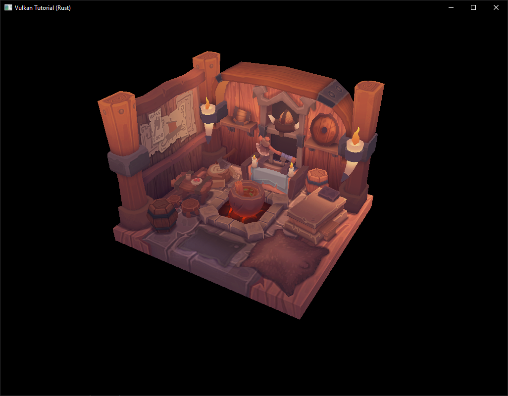
It's not a dramatic difference, since our scene is so simple. There are subtle differences if you look closely (it will be much easier to spot differences if you open the below image in a separate tab so you can see it at full size).
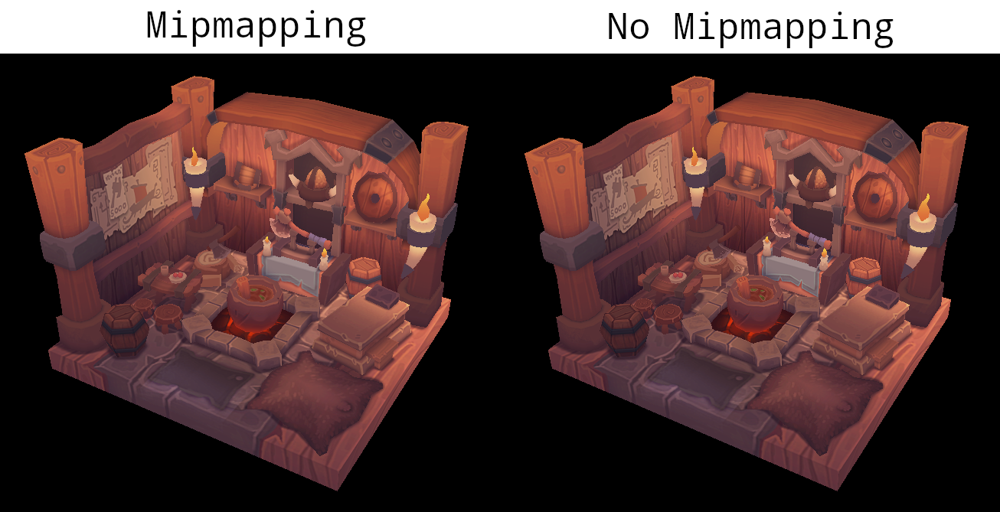
One of most noticeable differences is the axe head. With mipmaps, the borders between the dark gray and light gray areas have been smoothed. Without mipmaps, these borders are much sharper. The differences are clear in this image which shows the axe head with and without mipmapping at 8x magnification (without any filtering so the pixels are simply expanded).
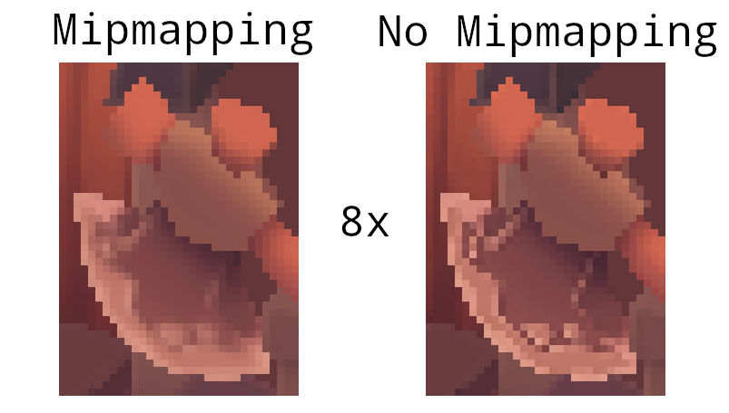
You can play around with the sampler settings to see how they affect mipmapping. For example, by changing min_lod, you can force the sampler to not use the lowest mip levels:
.min_lod(data.mip_levels as f32 / 2.0)
These settings will produce this image:
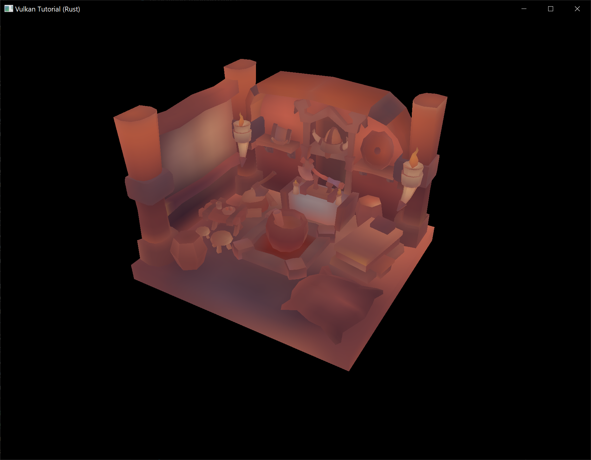
This is how higher mip levels will be used when objects are further away from the camera.
Multisampling
Code: main.rs
Our program can now load multiple levels of detail for textures which fixes artifacts when rendering objects far away from the viewer. The image is now a lot smoother, however on closer inspection you will notice jagged saw-like patterns along the edges of drawn geometric shapes. This is visible in one of our early programs when we rendered a quad:
This undesired effect is called "aliasing" and it's a result of a limited numbers of pixels that are available for rendering. Since there are no displays out there with unlimited resolution, it will be always visible to some extent. There's a number of ways to fix this and in this chapter we'll focus on one of the more popular ones: multisample anti-aliasing (MSAA).
In ordinary rendering, the pixel color is determined based on a single sample point which in most cases is the center of the target pixel on screen. If part of the drawn line passes through a certain pixel but doesn't cover the sample point, that pixel will be left blank, leading to the jagged "staircase" effect.

What MSAA does is it uses multiple sample points per pixel (hence the name) to determine its final color. As one might expect, more samples lead to better results, however it is also more computationally expensive.

In our implementation, we will focus on using the maximum available sample count. Depending on your application this may not always be the best approach and it might be better to use less samples for the sake of higher performance if the final result meets your quality demands.
Getting available sample count
Let's start off by determining how many samples our hardware can use. Most modern GPUs support at least 8 samples but this number is not guaranteed to be the same everywhere. We'll keep track of it by adding a new field to AppData:
struct AppData {
// ...
physical_device: vk::PhysicalDevice,
msaa_samples: vk::SampleCountFlags,
// ...
}
By default we'll be using only one sample per pixel which is equivalent to no multisampling, in which case the final image will remain unchanged. The exact maximum number of samples can be extracted from vk::PhysicalDeviceProperties associated with our selected physical device. We're using a depth buffer, so we have to take into account the sample count for both color and depth. The highest sample count that is supported by both (&) will be the maximum we can support. Add a function that will fetch this information for us:
unsafe fn get_max_msaa_samples(
instance: &Instance,
data: &AppData,
) -> vk::SampleCountFlags {
let properties = instance.get_physical_device_properties(data.physical_device);
let counts = properties.limits.framebuffer_color_sample_counts
& properties.limits.framebuffer_depth_sample_counts;
[
vk::SampleCountFlags::_64,
vk::SampleCountFlags::_32,
vk::SampleCountFlags::_16,
vk::SampleCountFlags::_8,
vk::SampleCountFlags::_4,
vk::SampleCountFlags::_2,
]
.iter()
.cloned()
.find(|c| counts.contains(*c))
.unwrap_or(vk::SampleCountFlags::_1)
}
We will now use this function to set the msaa_samples variable during the physical device selection process. For this, we have to slightly modify the pick_physical_device function to set the maximum MSAA samples after selecting a physical device:
unsafe fn pick_physical_device(instance: &Instance, data: &mut AppData) -> Result<()> {
// ...
for physical_device in instance.enumerate_physical_devices()? {
// ...
if let Err(error) = check_physical_device(instance, data, physical_device) {
// ...
} else {
// ...
data.msaa_samples = get_max_msaa_samples(instance, data);
return Ok(());
}
}
Ok(())
}
Setting up a render target
In MSAA, each pixel is sampled in an offscreen buffer which is then rendered to the screen. This new buffer is slightly different from regular images we've been rendering to - they have to be able to store more than one sample per pixel. Once a multisampled buffer is created, it has to be resolved to the default framebuffer (which stores only a single sample per pixel). This is why we have to create an additional render target and modify our current drawing process. We only need one render target since only one drawing operation is active at a time, just like with the depth buffer. Add the following AppData fields:
struct AppData {
// ...
color_image: vk::Image,
color_image_memory: vk::DeviceMemory,
color_image_view: vk::ImageView,
// ...
}
This new image will have to store the desired number of samples per pixel, so we need to pass this number to vk::ImageCreateInfo during the image creation process. Modify the create_image function by adding a samples parameter:
unsafe fn create_image(
instance: &Instance,
device: &Device,
data: &AppData,
width: u32,
height: u32,
mip_levels: u32,
samples: vk::SampleCountFlags,
format: vk::Format,
tiling: vk::ImageTiling,
usage: vk::ImageUsageFlags,
properties: vk::MemoryPropertyFlags,
) -> Result<(vk::Image, vk::DeviceMemory)> {
// Image
let info = vk::ImageCreateInfo::builder()
// ...
.samples(samples)
// ...
// ...
}
For now, update all calls to this function using vk::SampleCountFlags::_1 - we will be replacing this with proper values as we progress with implementation:
let (depth_image, depth_image_memory) = create_image(
instance,
device,
data,
data.swapchain_extent.width,
data.swapchain_extent.height,
1,
vk::SampleCountFlags::_1,
format,
vk::ImageTiling::OPTIMAL,
vk::ImageUsageFlags::DEPTH_STENCIL_ATTACHMENT,
vk::MemoryPropertyFlags::DEVICE_LOCAL,
)?;
// ...
let (texture_image, texture_image_memory) = create_image(
instance,
device,
data,
width,
height,
data.mip_levels,
vk::SampleCountFlags::_1,
vk::Format::R8G8B8A8_SRGB,
vk::ImageTiling::OPTIMAL,
vk::ImageUsageFlags::SAMPLED
| vk::ImageUsageFlags::TRANSFER_DST
| vk::ImageUsageFlags::TRANSFER_SRC,
vk::MemoryPropertyFlags::DEVICE_LOCAL,
)?;
We will now create a multisampled color buffer. Add a create_color_objects function and note that we're using msaaSamples here as a function parameter to createImage. We're also using only one mip level, since this is enforced by the Vulkan specification in case of images with more than one sample per pixel. Also, this color buffer doesn't need mipmaps since it's not going to be used as a texture:
unsafe fn create_color_objects(
instance: &Instance,
device: &Device,
data: &mut AppData,
) -> Result<()> {
let (color_image, color_image_memory) = create_image(
instance,
device,
data,
data.swapchain_extent.width,
data.swapchain_extent.height,
1,
data.msaa_samples,
data.swapchain_format,
vk::ImageTiling::OPTIMAL,
vk::ImageUsageFlags::COLOR_ATTACHMENT
| vk::ImageUsageFlags::TRANSIENT_ATTACHMENT,
vk::MemoryPropertyFlags::DEVICE_LOCAL,
)?;
data.color_image = color_image;
data.color_image_memory = color_image_memory;
data.color_image_view = create_image_view(
device,
data.color_image,
data.swapchain_format,
vk::ImageAspectFlags::COLOR,
1,
)?;
Ok(())
}
For consistency, call the function right before create_depth_objects:
unsafe fn create(window: &Window) -> Result<Self> {
// ...
create_color_objects(&instance, &device, &mut data)?;
create_depth_objects(&instance, &device, &mut data)?;
// ...
}
Now that we have a multisampled color buffer in place it's time to take care of depth. Modify create_depth_objects and update the number of samples used by the depth buffer:
unsafe fn create_depth_objects(
instance: &Instance,
device: &Device,
data: &mut AppData,
) -> Result<()> {
// ...
let (depth_image, depth_image_memory) = create_image(
instance,
device,
data,
data.swapchain_extent.width,
data.swapchain_extent.height,
1,
data.msaa_samples,
format,
vk::ImageTiling::OPTIMAL,
vk::ImageUsageFlags::DEPTH_STENCIL_ATTACHMENT,
vk::MemoryPropertyFlags::DEVICE_LOCAL,
)?;
// ...
}
We have now created a couple of new Vulkan resources, so let's not forget to release them when necessary:
unsafe fn destroy_swapchain(&mut self) {
self.device.destroy_image_view(self.data.color_image_view, None);
self.device.free_memory(self.data.color_image_memory, None);
self.device.destroy_image(self.data.color_image, None);
// ...
}
And update the App::recreate_swapchain method so that the new color image can be recreated in the correct resolution when the window is resized:
unsafe fn recreate_swapchain(&mut self, window: &Window) -> Result<()> {
// ...
create_color_objects(&self.instance, &self.device, &mut self.data)?;
create_depth_objects(&self.instance, &self.device, &mut self.data)?;
// ...
}
We made it past the initial MSAA setup, now we need to start using this new resource in our graphics pipeline, framebuffer, render pass and see the results!
Adding new attachments
Let's take care of the render pass first. Modify create_render_pass and update color and depth attachment creation info structs:
unsafe fn create_render_pass(
instance: &Instance,
device: &Device,
data: &mut AppData,
) -> Result<()> {
let color_attachment = vk::AttachmentDescription::builder()
// ...
.samples(data.msaa_samples)
// ...
.final_layout(vk::ImageLayout::COLOR_ATTACHMENT_OPTIMAL);
let depth_stencil_attachment = vk::AttachmentDescription::builder()
// ...
.samples(data.msaa_samples)
// ...
// ...
}
You'll notice that we have changed the finalLayout from vk::ImageLayout::PRESENT_SRC_KHR to vk::ImageLayout::COLOR_ATTACHMENT_OPTIMAL. That's because multisampled images cannot be presented directly. We first need to resolve them to a regular image. This requirement does not apply to the depth buffer, since it won't be presented at any point. Therefore we will have to add only one new attachment for color which is a so-called resolve attachment:
let color_resolve_attachment = vk::AttachmentDescription::builder()
.format(data.swapchain_format)
.samples(vk::SampleCountFlags::_1)
.load_op(vk::AttachmentLoadOp::DONT_CARE)
.store_op(vk::AttachmentStoreOp::STORE)
.stencil_load_op(vk::AttachmentLoadOp::DONT_CARE)
.stencil_store_op(vk::AttachmentStoreOp::DONT_CARE)
.initial_layout(vk::ImageLayout::UNDEFINED)
.final_layout(vk::ImageLayout::PRESENT_SRC_KHR);
The render pass now has to be instructed to resolve multisampled color image into regular attachment. Create a new attachment reference that will point to the color buffer which will serve as the resolve target:
let color_resolve_attachment_ref = vk::AttachmentReference::builder()
.attachment(2)
.layout(vk::ImageLayout::COLOR_ATTACHMENT_OPTIMAL);
Set the resolve_attachments subpass struct member to point to the newly created attachment reference. This is enough to let the render pass define a multisample resolve operation which will let us render the image to screen:
let color_attachments = &[color_attachment_ref];
let resolve_attachments = &[color_resolve_attachment_ref];
let subpass = vk::SubpassDescription::builder()
.pipeline_bind_point(vk::PipelineBindPoint::GRAPHICS)
.color_attachments(color_attachments)
.depth_stencil_attachment(&depth_stencil_attachment_ref)
.resolve_attachments(resolve_attachments);
Now update render pass info struct with the new color attachment:
let attachments = &[
color_attachment,
depth_stencil_attachment,
color_resolve_attachment,
];
let subpasses = &[subpass];
let dependencies = &[dependency];
let info = vk::RenderPassCreateInfo::builder()
.attachments(attachments)
.subpasses(subpasses)
.dependencies(dependencies);
With the render pass in place, modify create_framebuffers and add the new image view to the attachments slice:
let attachments = &[data.color_image_view, data.depth_image_view, *i];
Finally, tell the newly created pipeline to use more than one sample by modifying create_pipeline:
let multisample_state = vk::PipelineMultisampleStateCreateInfo::builder()
.sample_shading_enable(false)
.rasterization_samples(data.msaa_samples);
Now run your program and you should see the following:
Just like with mipmapping, the difference may not be apparent straight away. On a closer look you'll notice that the edges are not as jagged anymore and the whole image seems a bit smoother compared to the original (again it will be much easier to spot differences if you open the below image in a separate tab).
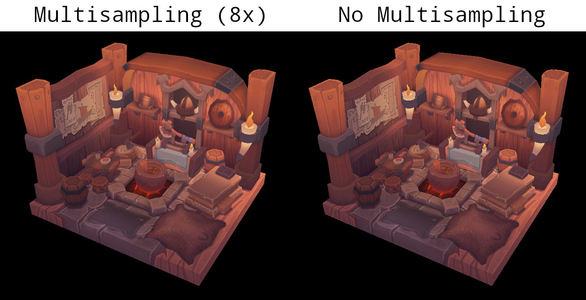
The difference is more noticeable when taking another close look at the axe head at 8x magnification:
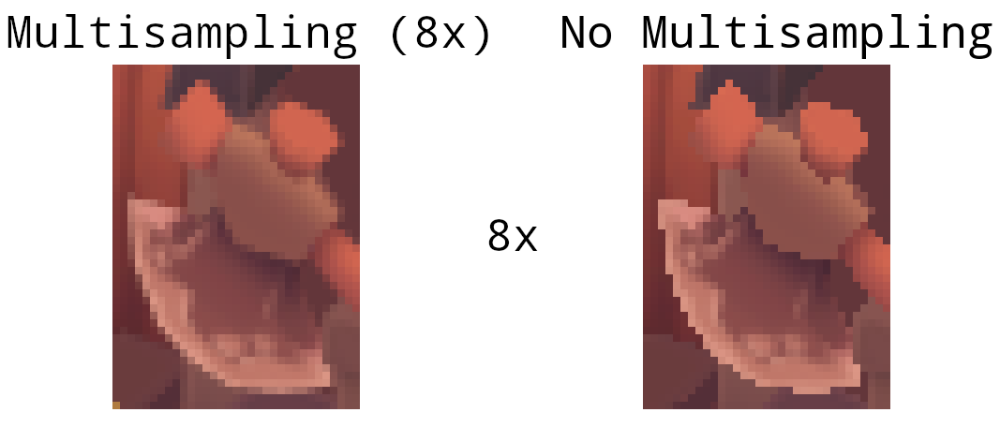
Quality improvements
There are certain limitations of our current MSAA implementation which may impact the quality of the output image in more detailed scenes. For example, we're currently not solving potential problems caused by shader aliasing, i.e. MSAA only smoothens out the edges of geometry but not the interior filling. This may lead to a situation when you get a smooth polygon rendered on screen but the applied texture will still look aliased if it contains high contrasting colors. One way to approach this problem is to enable Sample Shading which will improve the image quality even further, though at an additional performance cost:
unsafe fn create_logical_device(
instance: &Instance,
data: &mut AppData,
) -> Result<Device> {
// ...
let features = vk::PhysicalDeviceFeatures::builder()
.sampler_anisotropy(true)
// Enable sample shading feature for the device.
.sample_rate_shading(true);
// ...
}
// ...
unsafe fn create_pipeline(device: &Device, data: &mut AppData) -> Result<()> {
// ...
let multisample_state = vk::PipelineMultisampleStateCreateInfo::builder()
// Enable sample shading in the pipeline.
.sample_shading_enable(true)
// Minimum fraction for sample shading; closer to one is smoother.
.min_sample_shading(0.2)
.rasterization_samples(data.msaa_samples);
// ...
}
In this example we'll leave sample shading disabled but in certain scenarios the quality improvement may be noticeable:

Push constants
The previous chapters of this tutorial that are not marked by this disclaimer were directly adapted from https://github.com/Overv/VulkanTutorial.
This chapter and the following chapters are instead original creations from someone who is most decidedly not an expert in Vulkan. An authoritative tone has been maintained, but these chapters should be considered a "best effort" by someone still learning Vulkan.
If you have questions, suggestions, or corrections, please open an issue!
Code: main.rs | shader.vert | shader.frag
The scene that we've created in the tutorial thus far is static. While we can rotate and otherwise move the model around on the screen by manipulating the uniform buffers that provide the model, view, and projection (MVP) matrices, we can't alter what is being rendered. This is because the decision of what to render is made during program initialization when our command buffers are allocated and recorded.
In the next few chapters we are going to explore various techniques we can use to accomplish the rendering of dynamic scenes. First, however, we are going to look at push constants, a Vulkan feature that allows us to easily and efficiently "push" dynamic data to shaders. Push constants alone will not accomplish our goal of a dynamic scene, but their usefulness should become clear over the next few chapters.
Push constants vs uniform buffers
We are already using another Vulkan feature to provide dynamic data to our vertex shader: uniform buffers. Every frame, the App::update_uniform_buffer method calculates the updated MVP matrices for the model's current rotation and copies those matrices to a uniform buffer. The vertex shader then reads those matrices from the uniform buffer to figure out where the vertices of the model belong on the screen.
This approach works well enough, when would we want to use push constants instead? One advantage of push constants over uniform buffers is speed, updating a push constant will usually be significantly faster than copying new data to a uniform buffer. For a large number of values that need to be updated frequently, this difference can add up quickly.
Of course there is a catch: the amount of data that can be provided to a shader using push constants has a very limited maximum size. This maximum size varies from device to device and is specified in bytes by the max_push_constants_size field of vk::PhysicalDeviceLimits. Vulkan requires that this limit be at least 128 bytes (see table 32), but you won't find values much larger than that in the wild. Even high-end hardware like the RTX 3080 only has a limit of 256 bytes.
If we wanted to, say, use push constants to provide our MVP matrices to our shaders we would immediately run into this limitation. The MVP matrices are too large to reliably fit in push constants, each matrix is 64 bytes (16 × 4 byte floats) leading to a total of 192 bytes. Of course we could maintain two code paths, one for devices that can handle push constants >= 192 bytes and another for devices that can't, but there are simpler approaches we could take.
One would be to premultiply our MVP matrices into a single matrix. Another would be to provide only the model matrix as a push constant and leave the view and projection matrices in the uniform buffer. Both would give us at least 64 bytes of headroom for other push constants even on devices providing only the minimum 128 bytes for push constants. In this chapter we will take the second approach to start exploring push constants.
Why only the model matrix for the second approach? In the App::update_uniform_buffer method, you'll notice that the model matrix changes every frame as time increases, the view matrix is static, and the proj matrix only changes when the window is resized. This would allow us to only update the uniform buffer containing the view and projection matrices when the window is resized and use push constants to provide the constantly changing model matrix.
Of course, in a more realistic application the view matrix would most likely not be static. For example, if you were building a first-person game, the view matrix would change very frequently as the player moves through the game world. However, the view and projection matrices, even if they change every frame, would be shared between all or at least most of the models you are rendering. This means you could continue updating the uniform buffer once per frame to provide the shared view and projection matrices and use push constants to provide the model matrices for each model in your scene.
Pushing the model matrix
With that wall of text out of the way, let's get started by moving the model matrix in the vertex shader from the uniform buffer object to a push constant. Don't forget to recompile the vertex shader afterwards!
#version 450
layout(binding = 0) uniform UniformBufferObject {
mat4 view;
mat4 proj;
} ubo;
layout(push_constant) uniform PushConstants {
mat4 model;
} pcs;
// ...
void main() {
gl_Position = ubo.proj * ubo.view * pcs.model * vec4(inPosition, 1.0);
// ...
}
Note that the layout is push_constant and not something like push_constant = 0 like how the uniform buffer object is defined. This is because we can only provide one collection of push constants for an invocation of a graphics pipeline and this collection is very limited in size as described previously.
Remove model from the UniformBufferObject struct since we will be specifying it as a push constant from here on out.
#[repr(C)]
#[derive(Copy, Clone, Debug)]
struct UniformBufferObject {
view: Mat4,
proj: Mat4,
}
Also remove model from the App::update_command_buffers method.
let view = Mat4::look_at_rh(
point3(2.0, 2.0, 2.0),
point3(0.0, 0.0, 0.0),
vec3(0.0, 0.0, 1.0),
);
let correction = Mat4::new(
1.0, 0.0, 0.0, 0.0,
0.0, -1.0, 0.0, 0.0,
0.0, 0.0, 1.0 / 2.0, 0.0,
0.0, 0.0, 1.0 / 2.0, 1.0,
);
let proj = correction * cgmath::perspective(
Deg(45.0),
self.data.swapchain_extent.width as f32 / self.data.swapchain_extent.height as f32,
0.1,
10.0,
);
let ubo = UniformBufferObject { view, proj };
// ...
We need to tell Vulkan about our new push constant by describing it in the layout of our graphics pipeline. In the create_pipeline function you'll see that we are already providing our descriptor set layout to create_pipeline_layout. This descriptor set layout describes the uniform buffer object and texture sampler used in our shaders and we need to similarly describe any push constants accessed by the shaders in our graphics pipeline using vk::PushConstantRange.
let vert_push_constant_range = vk::PushConstantRange::builder()
.stage_flags(vk::ShaderStageFlags::VERTEX)
.offset(0)
.size(64 /* 16 × 4 byte floats */);
let set_layouts = &[data.descriptor_set_layout];
let push_constant_ranges = &[vert_push_constant_range];
let layout_info = vk::PipelineLayoutCreateInfo::builder()
.set_layouts(set_layouts)
.push_constant_ranges(push_constant_ranges);
data.pipeline_layout = device.create_pipeline_layout(&layout_info, None)?;
The push constant range here specifies that the push constants accessed by the vertex shader can be found at the beginning of the push constants provided to the graphics pipeline and are the size of a mat4.
With all that in place, we can actually start pushing the model matrix to the vertex shader. Push constants are recorded directly into the command buffers submitted to the GPU which is both why they are so fast and why their size is so limited.
In the create_command_buffers function, define a model matrix and use cmd_push_constants to add it to the command buffers as a push constant right before we record the draw command.
let model = Mat4::from_axis_angle(
vec3(0.0, 0.0, 1.0),
Deg(0.0)
);
let model_bytes = std::slice::from_raw_parts(
&model as *const Mat4 as *const u8,
size_of::<Mat4>()
);
for (i, command_buffer) in data.command_buffers.iter().enumerate() {
// ...
device.cmd_push_constants(
*command_buffer,
data.pipeline_layout,
vk::ShaderStageFlags::VERTEX,
0,
model_bytes,
);
device.cmd_draw_indexed(*command_buffer, data.indices.len() as u32, 1, 0, 0, 0);
// ...
}
If you run the program now you will see the familiar model, but it is no longer rotating! Instead of updating the model matrix in the uniform buffer object every frame we are now encoding it into the command buffers which, as previously discussed, are never updated. This further highlights the need to somehow update our command buffers, a topic that will be covered in the next chapter. For now, let's round out this chapter by adding a push constant to the fragment shader.
Pushing the opacity
Next we'll add a push constant to the fragment shader which we can use to control the opacity of the model. Start by modifying the fragment shader to include the push constant and to use it as the alpha channel of the fragment color. Again, be sure to recompile the shader!
#version 450
layout(binding = 1) uniform sampler2D texSampler;
layout(push_constant) uniform PushConstants {
layout(offset = 64) float opacity;
} pcs;
// ...
void main() {
outColor = vec4(texture(texSampler, fragTexCoord).rgb, pcs.opacity);
}
This time we specify an offset for the push constant value. Remember that push constants are shared between all of the shaders in a graphics pipeline so we need to account for the fact that the first 64 bytes of the push constants are occupied by the model matrix used in the vertex shader.
Add a push constant range for the new opacity push constant to the pipeline layout.
let vert_push_constant_range = vk::PushConstantRange::builder()
.stage_flags(vk::ShaderStageFlags::VERTEX)
.offset(0)
.size(64 /* 16 × 4 byte floats */);
let frag_push_constant_range = vk::PushConstantRange::builder()
.stage_flags(vk::ShaderStageFlags::FRAGMENT)
.offset(64)
.size(4);
let set_layouts = &[data.descriptor_set_layout];
let push_constant_ranges = &[vert_push_constant_range, frag_push_constant_range];
let layout_info = vk::PipelineLayoutCreateInfo::builder()
.set_layouts(set_layouts)
.push_constant_ranges(push_constant_ranges);
data.pipeline_layout = device.create_pipeline_layout(&layout_info, None)?;
Lastly, add another call to cmd_push_constants in the create_command_buffers after the call for the model matrix.
device.cmd_push_constants(
*command_buffer,
data.pipeline_layout,
vk::ShaderStageFlags::VERTEX,
0,
model_bytes,
);
device.cmd_push_constants(
*command_buffer,
data.pipeline_layout,
vk::ShaderStageFlags::FRAGMENT,
64,
&0.25f32.to_ne_bytes()[..],
);
device.cmd_draw_indexed(*command_buffer, data.indices.len() as u32, 1, 0, 0, 0);
Here we provide an opacity of 0.25 to the fragment shader by recording it into the command buffer after the 64 bytes of the model matrix. However, if you were to run the program now, you'd find that the model is still entirely opaque!
Back in the chapter on fixed function operations, we discussed what was necessary to set up alpha blending so that we could render transparent geometries to the framebuffers. However, back then we left alpha blending disabled. Update the vk::PipelineColorBlendAttachmentState in the create_pipeline function to enable alpha blending as described in that chapter.
let attachment = vk::PipelineColorBlendAttachmentState::builder()
.color_write_mask(vk::ColorComponentFlags::all())
.blend_enable(true)
.src_color_blend_factor(vk::BlendFactor::SRC_ALPHA)
.dst_color_blend_factor(vk::BlendFactor::ONE_MINUS_SRC_ALPHA)
.color_blend_op(vk::BlendOp::ADD)
.src_alpha_blend_factor(vk::BlendFactor::ONE)
.dst_alpha_blend_factor(vk::BlendFactor::ZERO)
.alpha_blend_op(vk::BlendOp::ADD);
Run the program to see our now ghostly model.
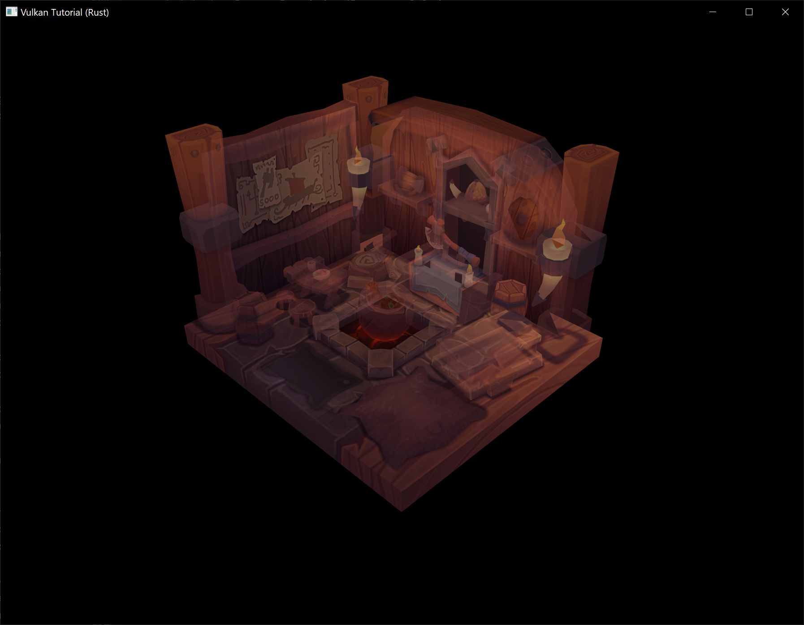
Success!
Recycling command buffers
This chapter and the following chapters are instead original creations from someone who is most decidedly not an expert in Vulkan. An authoritative tone has been maintained, but these chapters should be considered a "best effort" by someone still learning Vulkan.
If you have questions, suggestions, or corrections, please open an issue!
Code: main.rs
When you allocate a command buffer and record commands to it, Vulkan allocates blocks of memory to store information about the command buffer and the commands that have been recorded to it. Now that we want to be able to record different commands each frame, we need to recycle this memory in the same way that in C we need to free memory allocated with malloc once it is no longer in use.
Solutions
Vulkan offers three basic approaches for recycling the memory occupied by a command buffer:
- Reset the command buffer (which clears the commands recorded to it) and record new commands to the command buffer
- Free the command buffer (which returns its memory to the command pool it was allocated from) and allocate a new command buffer
- Reset the command pool the command buffer was allocated from (which resets all of the command buffers allocated from the command pool) and record new commands to the command buffer
Let's look at what would be required to implement each of these approaches.
1. Resetting command buffers
By default, command buffers cannot be reset and are effectively immutable once they have been recorded. The ability to reset them is an option that must be enabled on our command pool during its creation and will be applied to any command buffers allocated from this command pool. Add the vk::CommandPoolCreateFlags::RESET_COMMAND_BUFFER flag to the create info structure for the command pool in create_command_pool.
let info = vk::CommandPoolCreateInfo::builder()
.flags(vk::CommandPoolCreateFlags::RESET_COMMAND_BUFFER)
.queue_family_index(indices.graphics);
data.command_pool = device.create_command_pool(&info, None)?;
Next, create a new method for the App struct, update_command_buffer. This method will be called each frame to reset and rerecord the command buffer for the framebuffer that will be used for the current frame.
unsafe fn update_command_buffer(&mut self, image_index: usize) -> Result<()> {
Ok(())
}
Call the new method from the render method right before the uniform buffers for the frame are updated (or after, the order of these two statements is not important).
unsafe fn render(&mut self, window: &Window) -> Result<()> {
// ...
self.update_command_buffer(image_index)?;
self.update_uniform_buffer(image_index)?;
// ...
}
Note that we do need to be careful about when we call update_command_buffer. This method will reset the command buffer which could cause serious issues if the command buffer is still being used to render a previously submitted frame. This issue was also discussed in the Descriptor set layout and buffer chapter which is why the call to App::update_uniform_buffer is where it is. As discussed in more detail in that chapter, both of these calls only happen after the call to wait_for_fences which waits for the GPU to be done with the acquired swapchain image and its associated resources so we are safe to do whatever we want with the command buffer.
In the new method, reset the command buffer with reset_command_buffer.
unsafe fn update_command_buffer(&mut self, image_index: usize) -> Result<()> {
let command_buffer = self.data.command_buffers[image_index];
self.device.reset_command_buffer(
command_buffer,
vk::CommandBufferResetFlags::empty(),
)?;
Ok(())
}
Once reset_command_buffer has returned, the command buffer will be reset to its initial state, no different than a new command buffer freshly allocated from a command pool.
Now we can move the command buffer recording code out of create_command_buffers and into update_command_buffer. The loop over the command buffers is no longer necessary since we are only recording one command buffer per frame. Other than that, only a few mechanical changes are needed to migrate this code to our new method (e.g., replacing references to the loop counter i with image_index).
unsafe fn update_command_buffer(&mut self, image_index: usize) -> Result<()> {
// ...
let model = Mat4::from_axis_angle(
vec3(0.0, 0.0, 1.0),
Deg(0.0)
);
let model_bytes = &*slice_from_raw_parts(
&model as *const Mat4 as *const u8,
size_of::<Mat4>()
);
let info = vk::CommandBufferBeginInfo::builder();
self.device.begin_command_buffer(command_buffer, &info)?;
let render_area = vk::Rect2D::builder()
.offset(vk::Offset2D::default())
.extent(self.data.swapchain_extent);
let color_clear_value = vk::ClearValue {
color: vk::ClearColorValue {
float32: [0.0, 0.0, 0.0, 1.0],
},
};
let depth_clear_value = vk::ClearValue {
depth_stencil: vk::ClearDepthStencilValue { depth: 1.0, stencil: 0 },
};
let clear_values = &[color_clear_value, depth_clear_value];
let info = vk::RenderPassBeginInfo::builder()
.render_pass(self.data.render_pass)
.framebuffer(self.data.framebuffers[image_index])
.render_area(render_area)
.clear_values(clear_values);
self.device.cmd_begin_render_pass(command_buffer, &info, vk::SubpassContents::INLINE);
self.device.cmd_bind_pipeline(command_buffer, vk::PipelineBindPoint::GRAPHICS, self.data.pipeline);
self.device.cmd_bind_vertex_buffers(command_buffer, 0, &[self.data.vertex_buffer], &[0]);
self.device.cmd_bind_index_buffer(command_buffer, self.data.index_buffer, 0, vk::IndexType::UINT32);
self.device.cmd_bind_descriptor_sets(
command_buffer,
vk::PipelineBindPoint::GRAPHICS,
self.data.pipeline_layout,
0,
&[self.data.descriptor_sets[image_index]],
&[],
);
self.device.cmd_push_constants(
command_buffer,
self.data.pipeline_layout,
vk::ShaderStageFlags::VERTEX,
0,
model_bytes,
);
self.device.cmd_push_constants(
command_buffer,
self.data.pipeline_layout,
vk::ShaderStageFlags::FRAGMENT,
64,
&0.25f32.to_ne_bytes()[..],
);
self.device.cmd_draw_indexed(command_buffer, self.data.indices.len() as u32, 1, 0, 0, 0);
self.device.cmd_end_render_pass(command_buffer);
self.device.end_command_buffer(command_buffer)?;
Ok(())
}
With these changes in place, our program can now execute different rendering commands every frame which permits dynamic scenes! Let's exercise this new capability by restoring the rotation of the model to its former glory. Replace the model matrix calculation in App::update_command_buffer with the old calculation that rotates the model over time.
let time = self.start.elapsed().as_secs_f32();
let model = Mat4::from_axis_angle(
vec3(0.0, 0.0, 1.0),
Deg(90.0) * time
);
let model_bytes = &*slice_from_raw_parts(
&model as *const Mat4 as *const u8,
size_of::<Mat4>()
);
Run the program to see that the model should now be back to rotating now that we are pushing an updated model matrix to the shaders every frame.
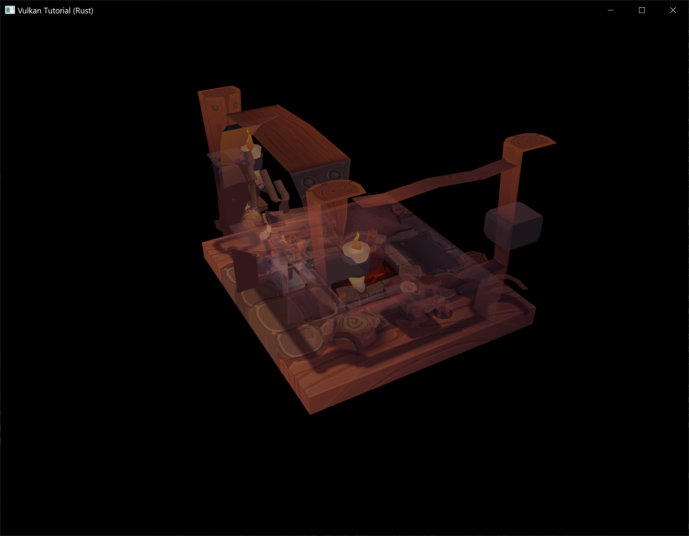
Lastly, since we are now only submitting our command buffers once before resetting them, we should let Vulkan know this so it can better understand the behavior of our program. This is accomplished by passing the vk::CommandBufferUsageFlags::ONE_TIME_SUBMIT flag when starting to record a command buffer.
let info = vk::CommandBufferBeginInfo::builder()
.flags(vk::CommandBufferUsageFlags::ONE_TIME_SUBMIT);
self.device.begin_command_buffer(command_buffer, &info)?;
You might recall we've used this flag before, there should already be a usage of this flag in the begin_single_time_commands function. This flag isn't required by Vulkan for correctness if you are only using command buffers once before resetting or freeing them, but this knowledge may allow the Vulkan driver to better optimize its handling of our single-use command buffers.
2. Reallocating command buffers
Next we'll take a look at allocating new command buffers each frame.
Replace the code used to reset the command buffer at the beginning of update_command_buffer with code that replaces the previous command buffer with a new command buffer.
unsafe fn update_command_buffer(&mut self, image_index: usize) -> Result<()> {
let allocate_info = vk::CommandBufferAllocateInfo::builder()
.command_pool(self.data.command_pool)
.level(vk::CommandBufferLevel::PRIMARY)
.command_buffer_count(1);
let command_buffer = self.device.allocate_command_buffers(&allocate_info)?[0];
self.data.command_buffers[image_index] = command_buffer;
// ...
}
You could now run the program and see that the program works exactly like it did before, but if you do don't leave it running for too long! You may have already noticed that we aren't freeing the previous command buffer before we allocate a new one. If you observe the memory usage of our program after this change you'll see the memory usage start rising alarmingly fast as we rapidly collect thousands of derelict command buffers that are never recycled.
Return the memory used by the previous command buffer to the command pool by freeing it at the beginning of update_command_buffer.
unsafe fn update_command_buffer(&mut self, image_index: usize) -> Result<()> {
let previous = self.data.command_buffers[image_index];
self.device.free_command_buffers(self.data.command_pool, &[previous]);
// ...
}
Now when you run the program you should see stable memory usage instead of the program trying to gobble up all of the RAM on your system as if it thinks it's an Electron application.
We no longer need the vk::CommandPoolCreateFlags::RESET_COMMAND_BUFFER flag for our command pool since we aren't resetting command buffers any more. Leaving this flag wouldn't affect the correctness of our program, but it could have a negative performance impact since it forces the command pool to allocate command buffers in such a way that they are resettable.
We'll replace this flag with vk::CommandPoolCreateFlags::TRANSIENT which tells Vulkan that the command buffers we'll be allocating with this command pool will be "transient", i.e. short-lived.
let info = vk::CommandPoolCreateInfo::builder()
.flags(vk::CommandPoolCreateFlags::TRANSIENT)
.queue_family_index(indices.graphics);
data.command_pool = device.create_command_pool(&info, None)?;
Like vk::CommandBufferUsageFlags::ONE_TIME_SUBMIT, this flag does not affect the correctness of our program but it may allow the Vulkan driver to better optimize the handling of our short-lived command buffers.
3. Resetting command pools
Next we'll look at resetting our entire command pool which will reset all of our active command buffers in one fell swoop.
However, we immediately run into a problem with this approach. We can't reset all of our command buffers each frame because some of them might still be in use! The wait_for_fences call in App::render ensures that we are safe to reset the command buffer associated with the current framebuffer, but there might be other command buffers still in use.
We could continue down this path, but it would prevent our program from having multiple frames in-flight concurrently. This ability is important to maintain because, as discussed back in the Rendering and presentation chapter, it allows us to better leverage our hardware since the CPU will spend less time waiting on the GPU and vice-versa.
Instead, we will alter our program to maintain a separate command pool for each framebuffer. This way we can freely reset the command pool associated with the current framebuffer without worrying about breaking any previously submitted frames that are still in-flight.
You might think that this is overkill, why maintain separate command pools just so we can reset command buffers one at a time? Wouldn't it be simpler, and probably even faster, to continue freeing or resetting our command buffers each frame? Is this just a pedagogical exercise? Is the author of this tutorial a fraud?
To put these questions on hold for a bit (well maybe not the last one), a sneak preview of the next chapter is that it will involve managing multiple command buffers per frame rather than the single command buffer per frame we've been working with so far. Then it will become simpler, and probably faster, to deallocate all of these command buffers in one go by resetting the command pool instead of deallocating them individually.
We are going to leave the current command pool in place since it will be used for allocating command buffers during initialization. Add a field to AppData to hold one command pool per framebuffer and rename the existing create_command_pool function to create_command_pools to reflect its increased responsibilities.
impl App {
unsafe fn create(window: &Window) -> Result<Self> {
// ...
create_command_pools(&instance, &device, &mut data)?;
// ...
}
}
struct AppData {
// ...
command_pools: Vec<vk::CommandPool>,
command_buffers: Vec<vk::CommandBuffer>,
// ...
}
unsafe fn create_command_pools(
instance: &Instance,
device: &Device,
data: &mut AppData,
) -> Result<()> {
// ...
}
Create a new create_command_pool function which will be used to create a command pool for short-lived command buffers that can be submitted to graphics queues.
unsafe fn create_command_pool(
instance: &Instance,
device: &Device,
data: &mut AppData,
) -> Result<vk::CommandPool> {
let indices = QueueFamilyIndices::get(instance, data, data.physical_device)?;
let info = vk::CommandPoolCreateInfo::builder()
.flags(vk::CommandPoolCreateFlags::TRANSIENT)
.queue_family_index(indices.graphics);
Ok(device.create_command_pool(&info, None)?)
}
With this function available, we can easily update create_command_pools to create both our existing global command pool and the new per-framebuffer command pools.
unsafe fn create_command_pools(
instance: &Instance,
device: &Device,
data: &mut AppData,
) -> Result<()> {
data.command_pool = create_command_pool(instance, device, data)?;
let num_images = data.swapchain_images.len();
for _ in 0..num_images {
let command_pool = create_command_pool(instance, device, data)?;
data.command_pools.push(command_pool);
}
Ok(())
}
Now we need to create the command buffers using these new per-framebuffer command pools. Update create_command_buffers to use a separate call to allocate_command_buffers for each command buffer so that each can be associated with one of the per-framebuffer command pools.
unsafe fn create_command_buffers(device: &Device, data: &mut AppData) -> Result<()> {
let num_images = data.swapchain_images.len();
for image_index in 0..num_images {
let allocate_info = vk::CommandBufferAllocateInfo::builder()
.command_pool(data.command_pools[image_index])
.level(vk::CommandBufferLevel::PRIMARY)
.command_buffer_count(1);
let command_buffer = device.allocate_command_buffers(&allocate_info)?[0];
data.command_buffers.push(command_buffer);
}
Ok(())
}
Update App::update_command_buffer to reset the per-framebuffer command pool instead of freeing and reallocating the command buffer. This will also reset any command buffers created with this command pool so we don't need to do anything else to be able to reuse the command buffer.
unsafe fn update_command_buffer(&mut self, image_index: usize) -> Result<()> {
let command_pool = self.data.command_pools[image_index];
self.device.reset_command_pool(command_pool, vk::CommandPoolResetFlags::empty())?;
let command_buffer = self.data.command_buffers[image_index];
// ...
}
Run the program now and make sure that our new command buffer recycling strategy still produces the same result as before. If you have the validation layer enabled, you will be reminded while the program is shutting down that we are not cleaning up these new command pools. Update App::destroy to destroy them.
unsafe fn destroy(&mut self) {
self.destroy_swapchain();
self.data.command_pools
.iter()
.for_each(|p| self.device.destroy_command_pool(*p, None));
// ...
}
Finally, delete the call to free_command_buffers in App::destroy_swapchain. This call now incorrectly attempts to return the memory assigned to the per-framebuffer command buffers to the global command pool despite the fact that these command buffers are no longer allocated from this command pool. Leaving this code in will most likely result in our program crashing when resizing the window or otherwise forcing a recreation of the swapchain. We no longer need to manage the deletion of individual command buffers since we are now managing this at the command pool level.
Conclusion
We've now explored the basic approaches Vulkan offers for recycling command buffers so that we can change the commands our program submits dynamically, whether in response to user input or to some other signal. These approaches can be mixed in any way you could imagine, demonstrating the power and flexibility Vulkan grants to programmers.
If you are feeling a bit overwhelmed about all the possible ways you could go about architecting a Vulkan program with respect to command pools and command buffers, don't worry! The next chapter is going to make things even more complicated.
Secondary command buffers
This chapter and the following chapters are instead original creations from someone who is most decidedly not an expert in Vulkan. An authoritative tone has been maintained, but these chapters should be considered a "best effort" by someone still learning Vulkan.
If you have questions, suggestions, or corrections, please open an issue!
Code: main.rs
While our program now submits different commands to be executed every frame, we still haven't quite accomplished our original goal of changing what our program renders dynamically. In this chapter we'll alter our program to support rendering between 1 and 4 instances of the model in response to user input.
We'll accomplish this using secondary command buffers, a Vulkan feature that allows us to build re-usable sequences of commands and then execute those commands from primary command buffers. Secondary command buffers aren't at all necessary to implement this change, but our first time rendering multiple things is a good time to introduce them.
Primary vs secondary
All of the command buffers we've used thus far have been primary command buffers, meaning they can be submitted directly to a Vulkan queue to be executed by the device. Secondary command buffers are instead executed indirectly by being called from primary command buffers and may not be submitted to queues.
The usage of secondary command buffers offers two primary advantages:
-
Secondary command buffers may be allocated and recorded in parallel which allows you to better leverage modern hardware with its panoply of CPU cores
-
The lifetime of secondary command buffers can managed independently of one another so you can have a mixture of long-lived or permanent secondary command buffers that intermingle with frequently updated secondary command buffers which allows you to reduce the number of command buffers you need to create every frame
Both of these points are true for primary command buffers as well, but primary command buffers have a significant limitation that effectively prevents them from fulfilling these use cases. Multiple primary command buffers may not be executed within the same render pass instance meaning that if you wanted to execute multiple primary command buffers for a frame, each primary command buffer would need to start with cmd_begin_render_pass and end with cmd_end_render_pass.
This might not sound like a big deal but beginning a render pass instance can be a pretty heavyweight operation and needing to do this many times per frame can destroy performance on some hardware. Secondary command buffers avoid this problem by being able to inherit the render pass instance as well as other state from the primary command buffer it is called from.
Multiple model instances
Let's get started by adding a field to AppData that will contain our new secondary command buffers. We will have multiple secondary command buffers per frame, one for each model instance we are rendering, so this will be a list of lists.
struct AppData {
// ...
command_buffers: Vec<vk::CommandBuffer>,
secondary_command_buffers: Vec<Vec<vk::CommandBuffer>>,
// ...
}
In an application more realistic than the one we are building, the number of secondary command buffers we need to render a frame might vary significantly over time. In addition, we likely wouldn't know the maximum number of secondary command buffers the application needs ahead of time.
We do know the maximum in this case, but we will pretend we don't and adopt an approach closer to what a real-world application would. Instead of allocating secondary command buffers during initialization like we allocate primary command buffers, we will allocate secondary command buffers on-demand. We'll still need to populate the outer Vec with empty lists of secondary command buffers so update create_command_buffers to accomplish this.
unsafe fn create_command_buffers(device: &Device, data: &mut AppData) -> Result<()> {
// ...
data.secondary_command_buffers = vec![vec![]; data.swapchain_images.len()];
Ok(())
}
Add a new method for the App struct called update_secondary_command_buffer that we'll use to allocate (if necessary) and record a secondary command buffer for one of the 4 model instances we will be rendering. The model_index parameter indicates which of the 4 model instances the secondary command buffer should render.
unsafe fn update_secondary_command_buffer(
&mut self,
image_index: usize,
model_index: usize,
) -> Result<vk::CommandBuffer> {
self.data.secondary_command_buffers.resize_with(image_index + 1, Vec::new);
let command_buffers = &mut self.data.secondary_command_buffers[image_index];
while model_index >= command_buffers.len() {
let allocate_info = vk::CommandBufferAllocateInfo::builder()
.command_pool(self.data.command_pools[image_index])
.level(vk::CommandBufferLevel::SECONDARY)
.command_buffer_count(1);
let command_buffer = self.device.allocate_command_buffers(&allocate_info)?[0];
command_buffers.push(command_buffer);
}
let command_buffer = command_buffers[model_index];
let info = vk::CommandBufferBeginInfo::builder();
self.device.begin_command_buffer(command_buffer, &info)?;
self.device.end_command_buffer(command_buffer)?;
Ok(command_buffer)
}
This code will allocate secondary command buffers for the model instances as they are needed but will reuse them after their initial allocation. Like with the primary command buffers, we can freely use any previously allocated secondary command buffers because we are resetting the command pool they were allocated with.
Before we continue, we need to provide some additional information to Vulkan that is unique to secondary command buffers before recording this command buffer. Create an instance of vk::CommandBufferInheritanceInfo that specifies the render pass, subpass index, and framebuffer the secondary command buffer will be used in conjunction with and then provide that inheritance info to begin_command_buffer.
let inheritance_info = vk::CommandBufferInheritanceInfo::builder()
.render_pass(self.data.render_pass)
.subpass(0)
.framebuffer(self.data.framebuffers[image_index]);
let info = vk::CommandBufferBeginInfo::builder()
.inheritance_info(&inheritance_info);
self.device.begin_command_buffer(command_buffer, &info)?;
As mentioned previously, secondary command buffers can inherit some state from the primary command buffers they are executed from. This inheritance info describes the command buffer state the secondary command buffer will be compatible with and may validly inherit.
The render pass and subpass index are required to inherit that state, but the framebuffer is only specified here as a potential performance boost. You may omit it, but Vulkan may be able to better optimize the secondary command buffer to render to the specified framebuffer.
This isn't enough to actually inherit the render pass, we need to also provide vk::CommandBufferUsageFlags::RENDER_PASS_CONTINUE to begin_command_buffer. This tells Vulkan that this secondary command buffer will be executed entirely inside a render pass.
let info = vk::CommandBufferBeginInfo::builder()
.flags(vk::CommandBufferUsageFlags::RENDER_PASS_CONTINUE)
.inheritance_info(&inheritance_info);
self.device.begin_command_buffer(command_buffer, &info)?;
With inheritance set up, move the code that calculates the push constant values out of App::update_command_buffer and into App::update_secondary_command_buffer after the secondary command buffer is allocated. While you're at it, have the opacity of the model instance depend on the model index to add some variety to our scene, ranging from 25% to 100%.
unsafe fn update_secondary_command_buffer(
&mut self,
image_index: usize,
model_index: usize,
) -> Result<vk::CommandBuffer> {
// ...
let command_buffer = self.device.allocate_command_buffers(&allocate_info)?[0];
let time = self.start.elapsed().as_secs_f32();
let model = Mat4::from_axis_angle(
vec3(0.0, 0.0, 1.0),
Deg(90.0) * time
);
let model_bytes = &*slice_from_raw_parts(
&model as *const Mat4 as *const u8,
size_of::<Mat4>()
);
let opacity = (model_index + 1) as f32 * 0.25;
let opacity_bytes = &opacity.to_ne_bytes()[..];
// ...
}
Next we are going to move the rendering commands out of the primary command buffer and into the secondary command buffer. The primary command buffer will still be used to begin and end the render pass instance since it will be inherited by our secondary command buffers, but all of the commands in App::update_command_buffer between (but not including) cmd_begin_render_pass and cmd_end_render_pass should be moved into App::update_secondary_command_buffer.
unsafe fn update_secondary_command_buffer(
&mut self,
image_index: usize,
model_index: usize,
) -> Result<vk::CommandBuffer> {
// ...
self.device.begin_command_buffer(command_buffer, &info)?;
self.device.cmd_bind_pipeline(command_buffer, vk::PipelineBindPoint::GRAPHICS, self.data.pipeline);
self.device.cmd_bind_vertex_buffers(command_buffer, 0, &[self.data.vertex_buffer], &[0]);
self.device.cmd_bind_index_buffer(command_buffer, self.data.index_buffer, 0, vk::IndexType::UINT32);
self.device.cmd_bind_descriptor_sets(
command_buffer,
vk::PipelineBindPoint::GRAPHICS,
self.data.pipeline_layout,
0,
&[self.data.descriptor_sets[image_index]],
&[],
);
self.device.cmd_push_constants(
command_buffer,
self.data.pipeline_layout,
vk::ShaderStageFlags::VERTEX,
0,
model_bytes,
);
self.device.cmd_push_constants(
command_buffer,
self.data.pipeline_layout,
vk::ShaderStageFlags::FRAGMENT,
64,
opacity_bytes,
);
self.device.cmd_draw_indexed(command_buffer, self.data.indices.len() as u32, 1, 0, 0, 0);
self.device.end_command_buffer(command_buffer)?;
// ...
}
Now that we can easily create secondary command buffers for rendering the model instance, call our new method in App::update_command_buffers and execute the returned secondary command buffer using cmd_execute_commands.
unsafe fn update_command_buffer(&mut self, image_index: usize) -> Result<()> {
// ...
self.device.cmd_begin_render_pass(command_buffer, &info, vk::SubpassContents::INLINE);
let secondary_command_buffer = self.update_secondary_command_buffer(image_index, 0)?;
self.device.cmd_execute_commands(command_buffer, &[secondary_command_buffer]);
self.device.cmd_end_render_pass(command_buffer);
// ...
}
This change has invalidated our call to cmd_begin_render_pass because we are providing vk::SubpassContents::INLINE which indicates we will be recording rendering commands directly into the primary command buffer. Now that we've moved the rendering commands into the secondary command buffer, we need to use vk::SubpassContents::SECONDARY_COMMAND_BUFFERS.
self.device.cmd_begin_render_pass(
command_buffer,
&info,
vk::SubpassContents::SECONDARY_COMMAND_BUFFERS,
);
Note that these are mutually exclusive modes, you can't mix secondary command buffers and inline rendering commands in a render pass instance.
If you run the program now, you should see the same ghostly model rotating exactly as it was before. Let's kick it up a notch by rendering 4 instances of the model by creating 4 secondary command buffers and executing them all from the primary command buffer.
unsafe fn update_command_buffer(&mut self, image_index: usize) -> Result<()> {
// ...
self.device.cmd_begin_render_pass(command_buffer, &info, vk::SubpassContents::SECONDARY_COMMAND_BUFFERS);
let secondary_command_buffers = (0..4)
.map(|i| self.update_secondary_command_buffer(image_index, i))
.collect::<Result<Vec<_>, _>>()?;
self.device.cmd_execute_commands(command_buffer, &secondary_command_buffers[..]);
self.device.cmd_end_render_pass(command_buffer);
// ...
}
If you run the program again, you'll see a strange shimmering as the 4 model instances, being rendered at the same coordinates, experience a bad bout of z-fighting.
Update the model matrix calculation in App::update_secondary_command_buffer to translate the models before rotating them according to their model index.
let y = (((model_index % 2) as f32) * 2.5) - 1.25;
let z = (((model_index / 2) as f32) * -2.0) + 1.0;
let time = self.start.elapsed().as_secs_f32();
let model = Mat4::from_translation(vec3(0.0, y, z)) * Mat4::from_axis_angle(
vec3(0.0, 0.0, 1.0),
Deg(90.0) * time
);
This code places the model instances in a grid on the Y and Z axes. However, due to the view matrix we're using, the camera is looking at this plane at 45 degree angles so let's update the view matrix in App::update_uniform_buffer to look directly at the YZ plane to better view our model instances.
let view = Mat4::look_at_rh(
point3(6.0, 0.0, 2.0),
point3(0.0, 0.0, 0.0),
vec3(0.0, 0.0, 1.0),
);
With a better vantage point secured, run the program and bask in its glory.
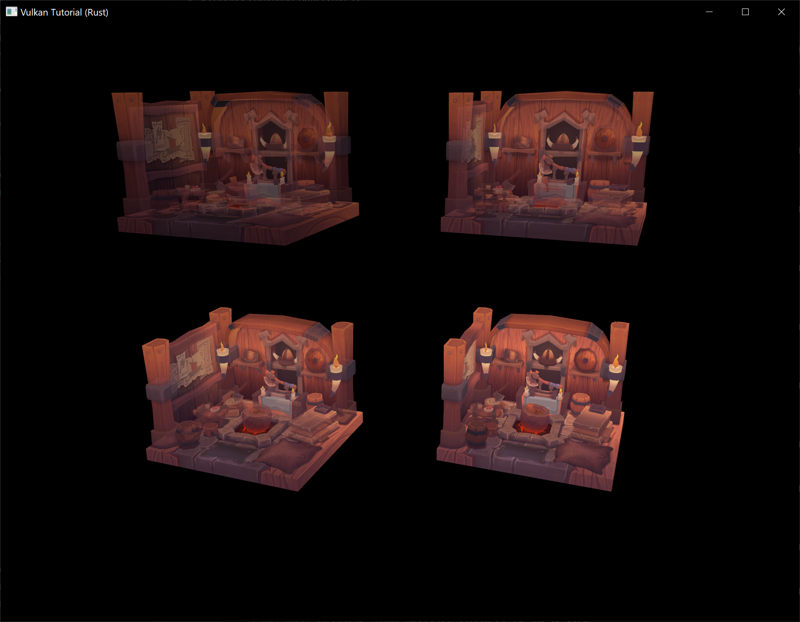
Let's knock it up a notch with a blast from our spice weasel by allowing the user to determine how many of these models they want to render. Add a models field to the App struct and initialize it to 1 in the constructor.
struct App {
// ...
models: usize,
}
Update the model index range in App::update_command_buffer to range from 0 to the value of the models field.
let secondary_command_buffers = (0..self.models)
.map(|i| self.update_secondary_command_buffer(image_index, i))
.collect::<Result<Vec<_>, _>>()?;
Now that we have all this in place, we just need to increment and decrement the models field in response to user input. Start by importing the following winit types we'll need to handle keyboard input.
use winit::event::{ElementState, VirtualKeyCode};
Finally, add a case to the event match block in the main function that handles key presses and decrements models when the left arrow key is pressed (to a minimum of 1) and increments models when the right arrow key is pressed (to a maximum of 4).
match event {
// ...
Event::WindowEvent { event, .. } => match event {
// ...
WindowEvent::KeyboardInput { event, .. } => {
if event.state == ElementState::Pressed {
match event.physical_key {
PhysicalKey::Code(KeyCode::ArrowLeft) if app.models > 1 => app.models -= 1,
PhysicalKey::Code(KeyCode::ArrowRight) if app.models < 4 => app.models += 1,
_ => { }
}
}
}
// ...
}
// ...
}
Run the program and observe how the number of secondary command buffers we are allocating and executing each frame changes as you press the left and right arrow keys.
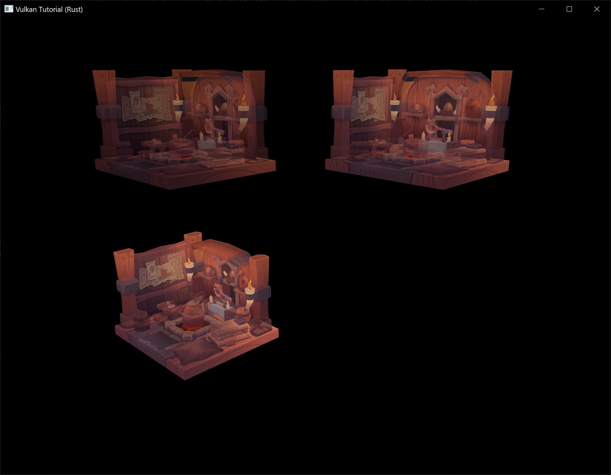
You should now be familiar with the basic tools you can use to efficiently render dynamic frames using Vulkan. There are many ways you can utilize these tools that each have different performance tradeoffs. Future tutorial chapters may explore this more in depth, but parallelizing the work of recording secondary command buffers using multiple threads is a common technique that usually results in significant performance wins on modern hardware.
Conclusion
It has taken a lot of work to get to this point, but now you finally have a good base for a Vulkan program. The knowledge of the basic principles of Vulkan that you now possess should be sufficient to start exploring more of the features, like:
- Instanced rendering
- Dynamic uniforms
- Separate images and sampler descriptors
- Pipeline cache
- Multi-threaded command buffer generation
- Multiple subpasses
- Compute shaders
The current program can be extended in many ways, like adding Blinn-Phong lighting, post-processing effects and shadow mapping. You should be able to learn how these effects work from tutorials for other APIs, because despite Vulkan's explicitness, many concepts still work the same.